SKU: AA-TB-021
In Production
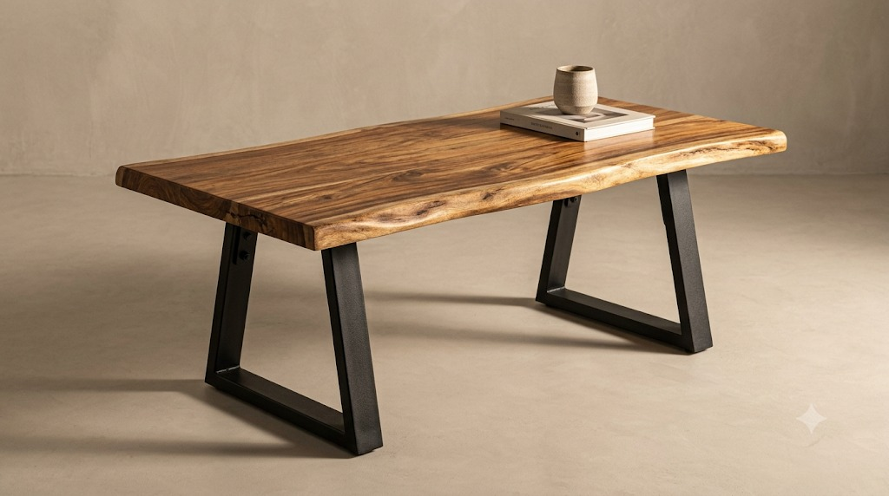
Live-Edge Sheesham Coffee Table with Trapezoid Iron Legs
Masterfully crafted in Jodhpur for high-volume international export, the Live-Edge Sheesham Coffee Table with Trapezoid Iron Legs reflects Industrial Organic sensibilities engineered for retail success at West Elm, Article, Wayfair. Features 1.75" thick solid Sheesham slab with organic edges; KD matte black steel legs. Constructed exclusively from certified sustainable timber kiln-dried to strict 8–10% moisture equilibrium to prevent warping across diverse North American and European climates. Accompanied by electrostatically coated, corrosion-resistant ironwork with seamless hand-welded joins. Every piece is individually wrapped, buffered with high-density EPS edge guards, and boxed in an ISTA-1A drop-tested 5-ply export master carton (unit volume: 0.150 CBM). Fully compliant with the US Lacey Act, VRIKSH timber legality verification, and EUDR deforestation due diligence regulations.
| Dimensions | 48" x 24" x 18" / 122 x 61 x 46 cm |
| Material | 1.75" thick solid Sheesham slab with organic edges; KD matte black steel legs |
| FOB Price | $75.00 – $95.00 FOB Mundra |
| Volume / CBM | 0.150 CBM |
| Standard MOQ | 15 Pcs |
SKU: AA-TB-022
In Production
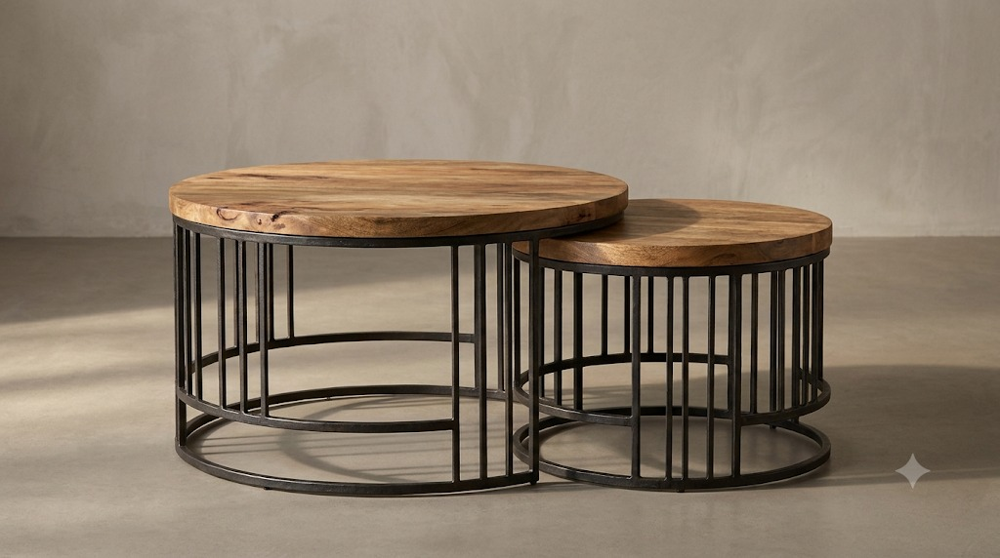
Round Nesting Coffee Tables (2-Piece Set)
Masterfully crafted in Jodhpur for high-volume international export, the Round Nesting Coffee Tables (2-Piece Set) reflects Space-Saving Modern sensibilities engineered for retail success at Maisons du Monde, CB2. Features Mango wood disc tops nestled on semi-open cylindrical iron ring bases. Constructed exclusively from certified sustainable timber kiln-dried to strict 8–10% moisture equilibrium to prevent warping across diverse North American and European climates. Accompanied by electrostatically coated, corrosion-resistant ironwork with seamless hand-welded joins. Every piece is individually wrapped, buffered with high-density EPS edge guards, and boxed in an ISTA-1A drop-tested 5-ply export master carton (unit volume: 0.180 CBM). Fully compliant with the US Lacey Act, VRIKSH timber legality verification, and EUDR deforestation due diligence regulations.
| Dimensions | Dia 30" x 18"H / Dia 20" x 16"H |
| Material | Mango wood disc tops nestled on semi-open cylindrical iron ring bases |
| FOB Price | $65.00 – $85.00 FOB Mundra |
| Volume / CBM | 0.180 CBM |
| Standard MOQ | 15 Pcs |
SKU: AA-TB-023
In Production
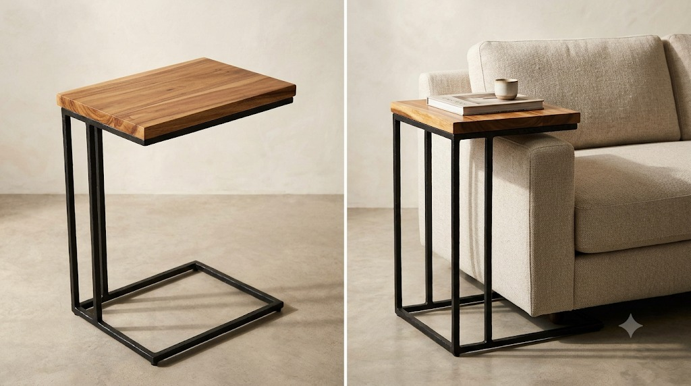
C-Shaped Sofa Slide-Under Accent Table
Masterfully crafted in Jodhpur for high-volume international export, the C-Shaped Sofa Slide-Under Accent Table reflects Small Space Living sensibilities engineered for retail success at Amazon, Target, Wayfair. Features Cantilevered black iron square frame with solid Acacia top engineered to slide over sofas. Constructed exclusively from certified sustainable timber kiln-dried to strict 8–10% moisture equilibrium to prevent warping across diverse North American and European climates. Accompanied by electrostatically coated, corrosion-resistant ironwork with seamless hand-welded joins. Every piece is individually wrapped, buffered with high-density EPS edge guards, and boxed in an ISTA-1A drop-tested 5-ply export master carton (unit volume: 0.045 CBM). Fully compliant with the US Lacey Act, VRIKSH timber legality verification, and EUDR deforestation due diligence regulations.
| Dimensions | 18" x 12" x 24" / 46 x 30 x 61 cm |
| Material | Cantilevered black iron square frame with solid Acacia top engineered to slide over sofas |
| FOB Price | $18.50 – $24.00 FOB Mundra |
| Volume / CBM | 0.045 CBM |
| Standard MOQ | 25 Pcs |
SKU: AA-TB-024
In Production
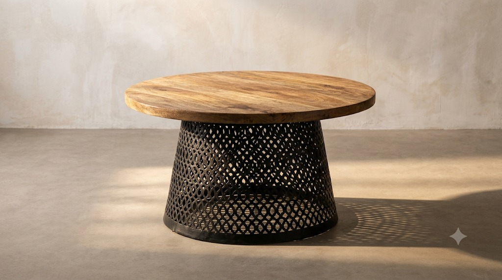
Drum Cocktail Table with Pierced Jaali Metal Base
Masterfully crafted in Jodhpur for high-volume international export, the Drum Cocktail Table with Pierced Jaali Metal Base reflects Moroccan Glam sensibilities engineered for retail success at Anthropologie, Arhaus. Features Turned solid Mango wood top mounted on a flared, pierced geometric black iron drum. Constructed exclusively from certified sustainable timber kiln-dried to strict 8–10% moisture equilibrium to prevent warping across diverse North American and European climates. Accompanied by electrostatically coated, corrosion-resistant ironwork with seamless hand-welded joins. Every piece is individually wrapped, buffered with high-density EPS edge guards, and boxed in an ISTA-1A drop-tested 5-ply export master carton (unit volume: 0.280 CBM). Fully compliant with the US Lacey Act, VRIKSH timber legality verification, and EUDR deforestation due diligence regulations.
| Dimensions | Dia 32" x 17" / Dia 81 x 43 cm |
| Material | Turned solid Mango wood top mounted on a flared, pierced geometric black iron drum |
| FOB Price | $82.00 – $105.00 FOB Mundra |
| Volume / CBM | 0.280 CBM |
| Standard MOQ | 15 Pcs |
SKU: AA-TB-025
In Production
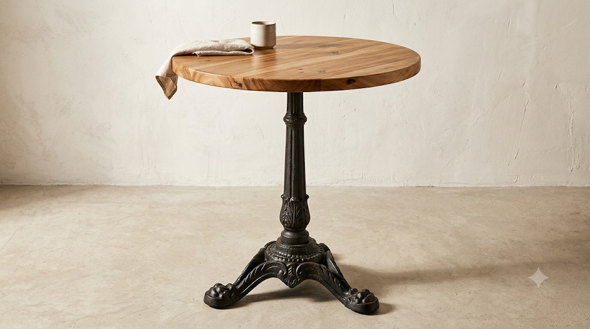
Cast-Iron Base Pedestal Bistro Table
Masterfully crafted in Jodhpur for high-volume international export, the Cast-Iron Base Pedestal Bistro Table reflects Parisian Cafe sensibilities engineered for retail success at Pottery Barn, Crate & Barrel. Features Ornate three-footed Victorian/French bistro cast iron base with 1.25" round Acacia top. Constructed exclusively from certified sustainable timber kiln-dried to strict 8–10% moisture equilibrium to prevent warping across diverse North American and European climates. Accompanied by electrostatically coated, corrosion-resistant ironwork with seamless hand-welded joins. Every piece is individually wrapped, buffered with high-density EPS edge guards, and boxed in an ISTA-1A drop-tested 5-ply export master carton (unit volume: 0.110 CBM). Fully compliant with the US Lacey Act, VRIKSH timber legality verification, and EUDR deforestation due diligence regulations.
| Dimensions | Dia 28" x 30" / Dia 71 x 76 cm |
| Material | Ornate three-footed Victorian/French bistro cast iron base with 1.25" round Acacia top |
| FOB Price | $45.00 – $58.00 FOB Mundra |
| Volume / CBM | 0.110 CBM |
| Standard MOQ | 15 Pcs |
SKU: AA-TB-026
In Production
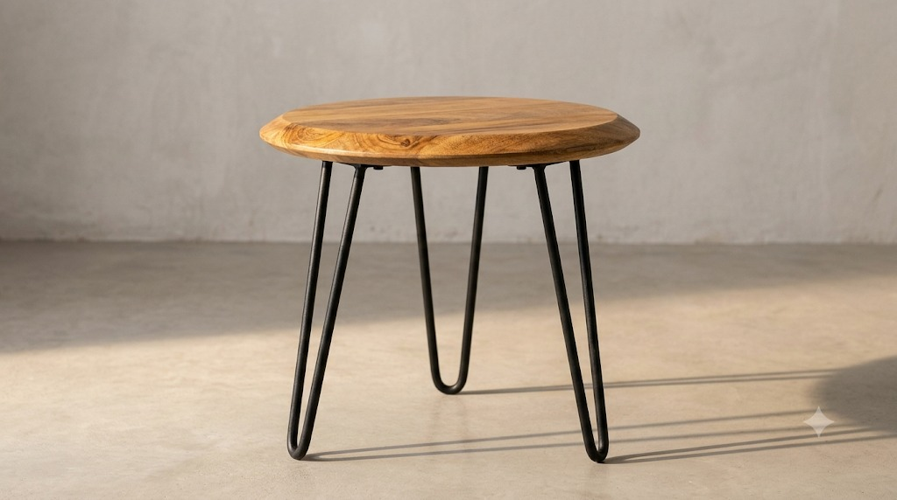
Hairpin Leg Mid-Century Side Table
Masterfully crafted in Jodhpur for high-volume international export, the Hairpin Leg Mid-Century Side Table reflects Mid-Century Modern sensibilities engineered for retail success at Amazon Prime, Target. Features Tri-hairpin black powder-coated legs supporting a round beveled solid Mango top. Constructed exclusively from certified sustainable timber kiln-dried to strict 8–10% moisture equilibrium to prevent warping across diverse North American and European climates. Accompanied by electrostatically coated, corrosion-resistant ironwork with seamless hand-welded joins. Every piece is individually wrapped, buffered with high-density EPS edge guards, and boxed in an ISTA-1A drop-tested 5-ply export master carton (unit volume: 0.035 CBM). Fully compliant with the US Lacey Act, VRIKSH timber legality verification, and EUDR deforestation due diligence regulations.
| Dimensions | Dia 18" x 22" / Dia 46 x 56 cm |
| Material | Tri-hairpin black powder-coated legs supporting a round beveled solid Mango top |
| FOB Price | $16.00 – $21.00 FOB Mundra |
| Volume / CBM | 0.035 CBM |
| Standard MOQ | 25 Pcs |
SKU: AA-TB-027
In Production
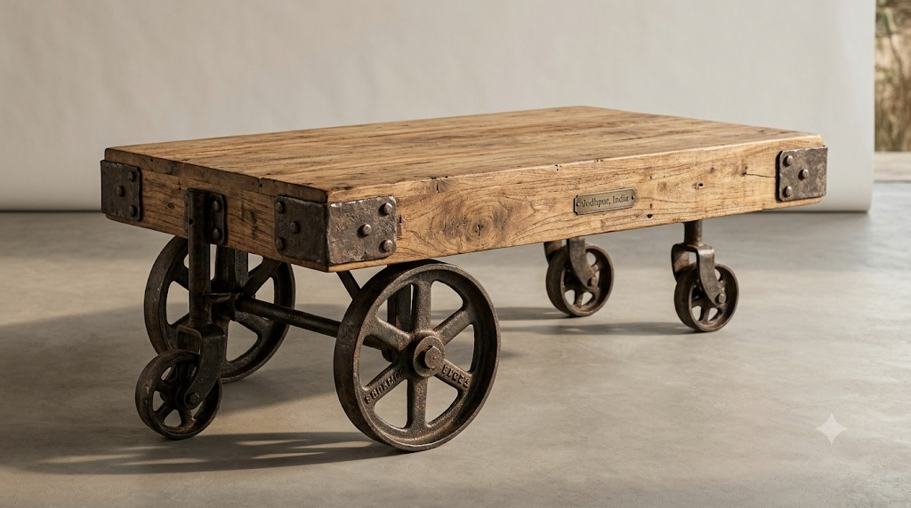
Industrial Cart Coffee Table on Working Iron Wheels
Masterfully crafted in Jodhpur for high-volume international export, the Industrial Cart Coffee Table on Working Iron Wheels reflects Vintage Industrial sensibilities engineered for retail success at Maisons du Monde, Overstock. Features Reclaimed hardwood plank top with corner iron brackets and 4 functional iron wheels. Constructed exclusively from certified sustainable timber kiln-dried to strict 8–10% moisture equilibrium to prevent warping across diverse North American and European climates. Accompanied by electrostatically coated, corrosion-resistant ironwork with seamless hand-welded joins. Every piece is individually wrapped, buffered with high-density EPS edge guards, and boxed in an ISTA-1A drop-tested 5-ply export master carton (unit volume: 0.190 CBM). Fully compliant with the US Lacey Act, VRIKSH timber legality verification, and EUDR deforestation due diligence regulations.
| Dimensions | 44" x 24" x 16" / 112 x 61 x 41 cm |
| Material | Reclaimed hardwood plank top with corner iron brackets and 4 functional iron wheels |
| FOB Price | $78.00 – $98.00 FOB Mundra |
| Volume / CBM | 0.190 CBM |
| Standard MOQ | 15 Pcs |
SKU: AA-TB-029
In Production
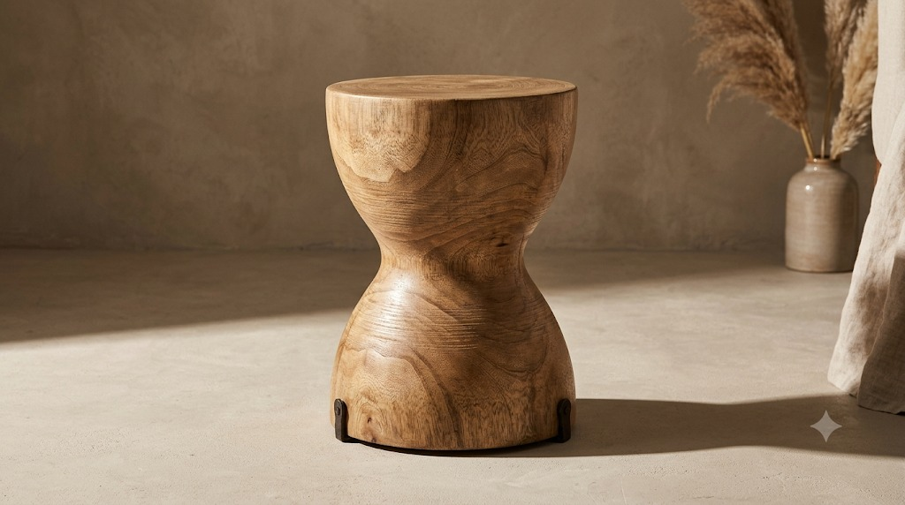
Turned Hardwood Spool Stool / Side Table
Masterfully crafted in Jodhpur for high-volume international export, the Turned Hardwood Spool Stool / Side Table reflects Japandi Sculptural sensibilities engineered for retail success at Lulu and Georgia, CB2. Features Sculptural solid turned single-block mango hour-glass accent table with wire-brushed wax. Constructed exclusively from certified sustainable timber kiln-dried to strict 8–10% moisture equilibrium to prevent warping across diverse North American and European climates. Accompanied by electrostatically coated, corrosion-resistant ironwork with seamless hand-welded joins. Every piece is individually wrapped, buffered with high-density EPS edge guards, and boxed in an ISTA-1A drop-tested 5-ply export master carton (unit volume: 0.055 CBM). Fully compliant with the US Lacey Act, VRIKSH timber legality verification, and EUDR deforestation due diligence regulations.
| Dimensions | Dia 14" x 18" / Dia 35 x 46 cm |
| Material | Sculptural solid turned single-block mango hour-glass accent table with wire-brushed wax |
| FOB Price | $32.00 – $42.00 FOB Mundra |
| Volume / CBM | 0.055 CBM |
| Standard MOQ | 25 Pcs |
SKU: AA-TB-030
In Production
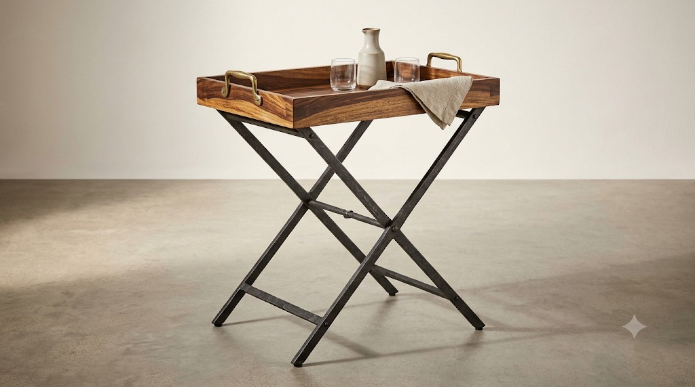
Iron Tray-Top Folding Butler Accent Table
Masterfully crafted in Jodhpur for high-volume international export, the Iron Tray-Top Folding Butler Accent Table reflects Versatile Entertaining sensibilities engineered for retail success at Pottery Barn, Ballard Designs. Features Removable solid Sheesham serving tray with brass handles resting on folding X-iron legs. Constructed exclusively from certified sustainable timber kiln-dried to strict 8–10% moisture equilibrium to prevent warping across diverse North American and European climates. Accompanied by electrostatically coated, corrosion-resistant ironwork with seamless hand-welded joins. Every piece is individually wrapped, buffered with high-density EPS edge guards, and boxed in an ISTA-1A drop-tested 5-ply export master carton (unit volume: 0.040 CBM). Fully compliant with the US Lacey Act, VRIKSH timber legality verification, and EUDR deforestation due diligence regulations.
| Dimensions | 22" x 16" x 26" / 56 x 41 x 66 cm |
| Material | Removable solid Sheesham serving tray with brass handles resting on folding X-iron legs |
| FOB Price | $24.00 – $31.00 FOB Mundra |
| Volume / CBM | 0.040 CBM |
| Standard MOQ | 25 Pcs |
SKU: AA-CG-031
In Production
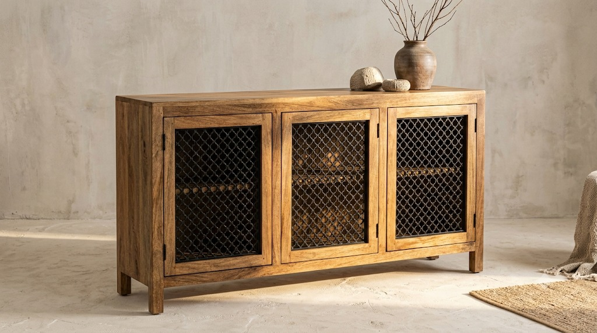
Jodhpur Moorish Jaali 3-Door Credenza
Masterfully crafted in Jodhpur for high-volume international export, the Jodhpur Moorish Jaali 3-Door Credenza reflects Artisanal Luxury sensibilities engineered for retail success at Arhaus, Anthropologie. Features Solid Mango carcass with 3 pierced black iron jaali doors & magnetic touch latches. Constructed exclusively from certified sustainable timber kiln-dried to strict 8–10% moisture equilibrium to prevent warping across diverse North American and European climates. Accompanied by electrostatically coated, corrosion-resistant ironwork with seamless hand-welded joins. Every piece is individually wrapped, buffered with high-density EPS edge guards, and boxed in an ISTA-1A drop-tested 5-ply export master carton (unit volume: 0.650 CBM). Fully compliant with the US Lacey Act, VRIKSH timber legality verification, and EUDR deforestation due diligence regulations.
| Dimensions | 58" x 18" x 34" / 147 x 46 x 86 cm |
| Material | Solid Mango carcass with 3 pierced black iron jaali doors & magnetic touch latches |
| FOB Price | $175.00 – $225.00 FOB Mundra |
| Volume / CBM | 0.650 CBM |
| Standard MOQ | 15 Pcs |
SKU: AA-CG-032
In Production
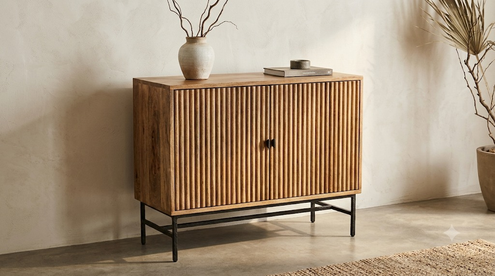
Fluted Mango Wood 2-Door Accent Cabinet
Masterfully crafted in Jodhpur for high-volume international export, the Fluted Mango Wood 2-Door Accent Cabinet reflects Refined Organic Modern sensibilities engineered for retail success at Crate & Barrel, West Elm. Features Vertical fluted tambour wood facade with concealed soft-close hinges & slender iron legs. Constructed exclusively from certified sustainable timber kiln-dried to strict 8–10% moisture equilibrium to prevent warping across diverse North American and European climates. Accompanied by electrostatically coated, corrosion-resistant ironwork with seamless hand-welded joins. Every piece is individually wrapped, buffered with high-density EPS edge guards, and boxed in an ISTA-1A drop-tested 5-ply export master carton (unit volume: 0.380 CBM). Fully compliant with the US Lacey Act, VRIKSH timber legality verification, and EUDR deforestation due diligence regulations.
| Dimensions | 36" x 16" x 32" / 91 x 41 x 81 cm |
| Material | Vertical fluted tambour wood facade with concealed soft-close hinges & slender iron legs |
| FOB Price | $110.00 – $145.00 FOB Mundra |
| Volume / CBM | 0.380 CBM |
| Standard MOQ | 15 Pcs |
SKU: AA-CG-033
In Production
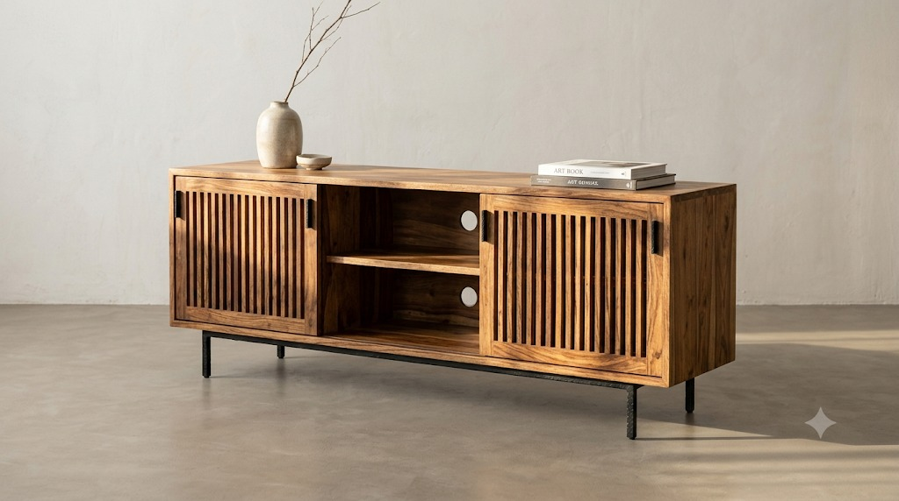
Solid Timber Slatted Media Console (64")
Masterfully crafted in Jodhpur for high-volume international export, the Solid Timber Slatted Media Console (64") reflects Scandinavian Media sensibilities engineered for retail success at Article, CB2. Features Sheesham cabinet with sliding acoustic bypass slatted doors & rear cable ports. Constructed exclusively from certified sustainable timber kiln-dried to strict 8–10% moisture equilibrium to prevent warping across diverse North American and European climates. Accompanied by electrostatically coated, corrosion-resistant ironwork with seamless hand-welded joins. Every piece is individually wrapped, buffered with high-density EPS edge guards, and boxed in an ISTA-1A drop-tested 5-ply export master carton (unit volume: 0.450 CBM). Fully compliant with the US Lacey Act, VRIKSH timber legality verification, and EUDR deforestation due diligence regulations.
| Dimensions | 64" x 16" x 20" / 163 x 41 x 51 cm |
| Material | Sheesham cabinet with sliding acoustic bypass slatted doors & rear cable ports |
| FOB Price | $135.00 – $170.00 FOB Mundra |
| Volume / CBM | 0.450 CBM |
| Standard MOQ | 15 Pcs |
SKU: AA-CG-034
In Production
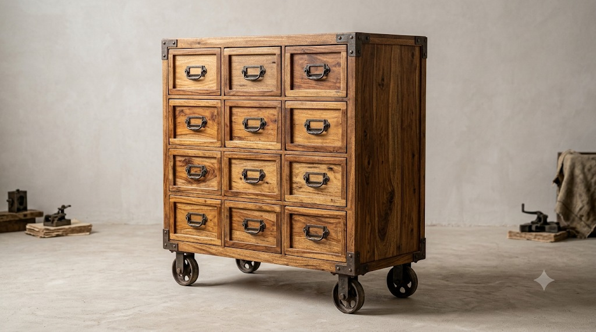
Multi-Drawer Industrial Apothecary Chest
Masterfully crafted in Jodhpur for high-volume international export, the Multi-Drawer Industrial Apothecary Chest reflects Vintage Workshop sensibilities engineered for retail success at Maisons du Monde, RH. Features 12-drawer facade (housing 6 deep drawers) with vintage iron label pulls on iron wheels. Constructed exclusively from certified sustainable timber kiln-dried to strict 8–10% moisture equilibrium to prevent warping across diverse North American and European climates. Accompanied by electrostatically coated, corrosion-resistant ironwork with seamless hand-welded joins. Every piece is individually wrapped, buffered with high-density EPS edge guards, and boxed in an ISTA-1A drop-tested 5-ply export master carton (unit volume: 0.420 CBM). Fully compliant with the US Lacey Act, VRIKSH timber legality verification, and EUDR deforestation due diligence regulations.
| Dimensions | 38" x 16" x 38" / 96 x 41 x 96 cm |
| Material | 12-drawer facade (housing 6 deep drawers) with vintage iron label pulls on iron wheels |
| FOB Price | $140.00 – $180.00 FOB Mundra |
| Volume / CBM | 0.420 CBM |
| Standard MOQ | 15 Pcs |
SKU: AA-CG-035
In Production
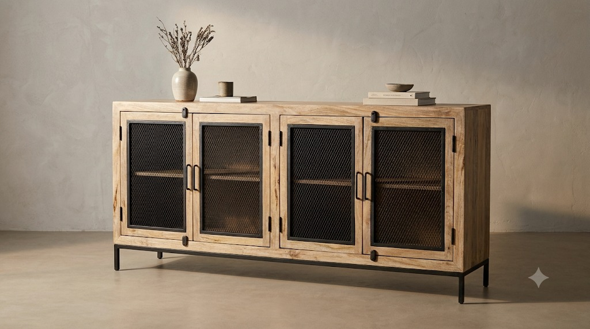
Mesh Wire & Hardwood 4-Door Sideboard
Masterfully crafted in Jodhpur for high-volume international export, the Mesh Wire & Hardwood 4-Door Sideboard reflects Modern Industrial sensibilities engineered for retail success at Restoration Hardware, CB2. Features Blackened expanded iron mesh door panels set into a bleached natural Mango frame. Constructed exclusively from certified sustainable timber kiln-dried to strict 8–10% moisture equilibrium to prevent warping across diverse North American and European climates. Accompanied by electrostatically coated, corrosion-resistant ironwork with seamless hand-welded joins. Every piece is individually wrapped, buffered with high-density EPS edge guards, and boxed in an ISTA-1A drop-tested 5-ply export master carton (unit volume: 0.720 CBM). Fully compliant with the US Lacey Act, VRIKSH timber legality verification, and EUDR deforestation due diligence regulations.
| Dimensions | 66" x 18" x 32" / 168 x 46 x 81 cm |
| Material | Blackened expanded iron mesh door panels set into a bleached natural Mango frame |
| FOB Price | $190.00 – $245.00 FOB Mundra |
| Volume / CBM | 0.720 CBM |
| Standard MOQ | 15 Pcs |
SKU: AA-CG-036
In Production
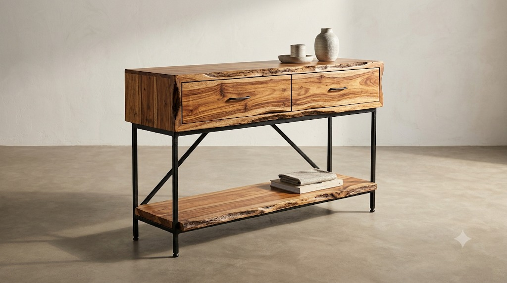
2-Drawer Live-Edge Entryway Console with Shelf
Masterfully crafted in Jodhpur for high-volume international export, the 2-Drawer Live-Edge Entryway Console with Shelf reflects Warm Contemporary sensibilities engineered for retail success at Pottery Barn, Wayfair. Features Natural live-edge Sheesham drawers on smooth ball-bearing glides over black iron base. Constructed exclusively from certified sustainable timber kiln-dried to strict 8–10% moisture equilibrium to prevent warping across diverse North American and European climates. Accompanied by electrostatically coated, corrosion-resistant ironwork with seamless hand-welded joins. Every piece is individually wrapped, buffered with high-density EPS edge guards, and boxed in an ISTA-1A drop-tested 5-ply export master carton (unit volume: 0.160 CBM). Fully compliant with the US Lacey Act, VRIKSH timber legality verification, and EUDR deforestation due diligence regulations.
| Dimensions | 46" x 14" x 30" / 117 x 36 x 76 cm |
| Material | Natural live-edge Sheesham drawers on smooth ball-bearing glides over black iron base |
| FOB Price | $85.00 – $110.00 FOB Mundra |
| Volume / CBM | 0.160 CBM |
| Standard MOQ | 15 Pcs |
SKU: AA-CG-037
In Production
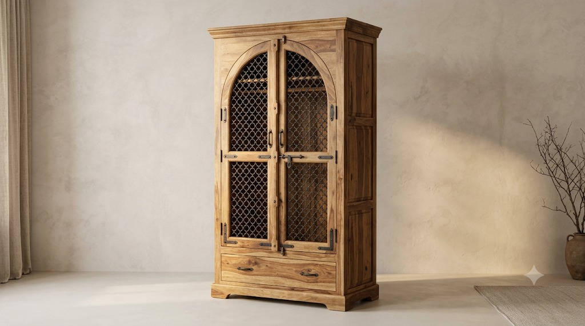
Arch Jaali Wardrobe Armoire
Masterfully crafted in Jodhpur for high-volume international export, the Arch Jaali Wardrobe Armoire reflects Heritage Bedroom sensibilities engineered for retail success at High Point Importers, Arhaus. Features Cathedral arched wardrobe doors featuring iron lattice inserts with interior hanging rod. Constructed exclusively from certified sustainable timber kiln-dried to strict 8–10% moisture equilibrium to prevent warping across diverse North American and European climates. Accompanied by electrostatically coated, corrosion-resistant ironwork with seamless hand-welded joins. Every piece is individually wrapped, buffered with high-density EPS edge guards, and boxed in an ISTA-1A drop-tested 5-ply export master carton (unit volume: 1.100 CBM). Fully compliant with the US Lacey Act, VRIKSH timber legality verification, and EUDR deforestation due diligence regulations.
| Dimensions | 40" x 22" x 74" / 102 x 56 x 188 cm |
| Material | Cathedral arched wardrobe doors featuring iron lattice inserts with interior hanging rod |
| FOB Price | $260.00 – $340.00 FOB Mundra |
| Volume / CBM | 1.100 CBM |
| Standard MOQ | 15 Pcs |
SKU: AA-CG-038
In Production
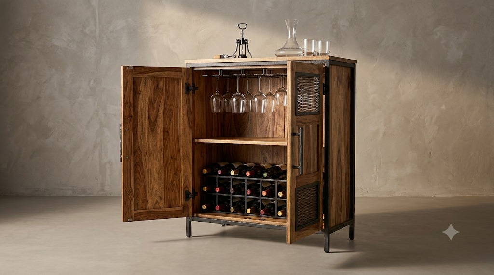
Industrial Bar Cabinet with Hanging Wine Glass Racks
Masterfully crafted in Jodhpur for high-volume international export, the Industrial Bar Cabinet with Hanging Wine Glass Racks reflects Home Entertaining sensibilities engineered for retail success at Crate & Barrel, Wayfair. Features Double-door cabinet with internal wine glass stemware holders and 16-bottle rack. Constructed exclusively from certified sustainable timber kiln-dried to strict 8–10% moisture equilibrium to prevent warping across diverse North American and European climates. Accompanied by electrostatically coated, corrosion-resistant ironwork with seamless hand-welded joins. Every piece is individually wrapped, buffered with high-density EPS edge guards, and boxed in an ISTA-1A drop-tested 5-ply export master carton (unit volume: 0.450 CBM). Fully compliant with the US Lacey Act, VRIKSH timber legality verification, and EUDR deforestation due diligence regulations.
| Dimensions | 34" x 18" x 42" / 86 x 46 x 107 cm |
| Material | Double-door cabinet with internal wine glass stemware holders and 16-bottle rack |
| FOB Price | $145.00 – $190.00 FOB Mundra |
| Volume / CBM | 0.450 CBM |
| Standard MOQ | 15 Pcs |
SKU: AA-CG-039
In Production
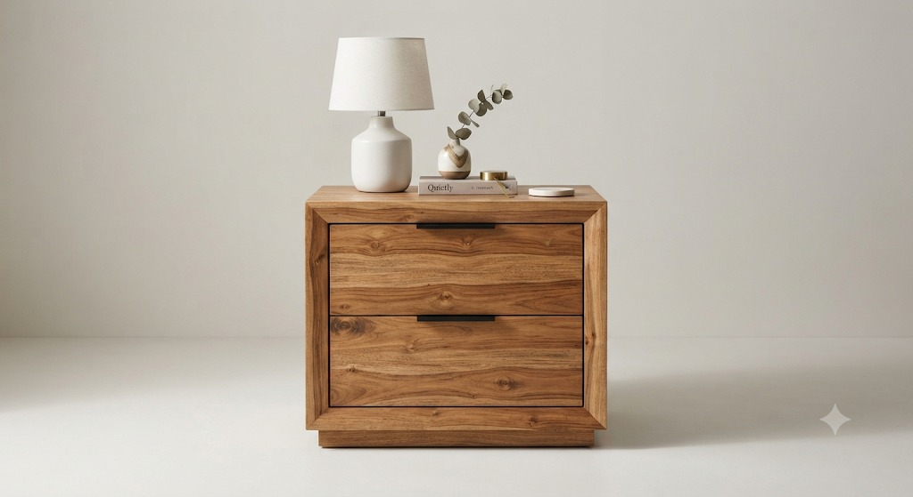
Minimalist 3-Drawer Nightstand with Iron Inset Pulls
Masterfully crafted in Jodhpur for high-volume international export, the Minimalist 3-Drawer Nightstand with Iron Inset Pulls reflects Modern Scandinavian sensibilities engineered for retail success at West Elm, Target. Features Solid Acacia bedside table with clean mitered edges and recessed black metal handles. Constructed exclusively from certified sustainable timber kiln-dried to strict 8–10% moisture equilibrium to prevent warping across diverse North American and European climates. Accompanied by electrostatically coated, corrosion-resistant ironwork with seamless hand-welded joins. Every piece is individually wrapped, buffered with high-density EPS edge guards, and boxed in an ISTA-1A drop-tested 5-ply export master carton (unit volume: 0.120 CBM). Fully compliant with the US Lacey Act, VRIKSH timber legality verification, and EUDR deforestation due diligence regulations.
| Dimensions | 20" x 16" x 24" / 51 x 41 x 61 cm |
| Material | Solid Acacia bedside table with clean mitered edges and recessed black metal handles |
| FOB Price | $48.00 – $62.00 FOB Mundra |
| Volume / CBM | 0.120 CBM |
| Standard MOQ | 15 Pcs |
SKU: AA-CG-040
In Production
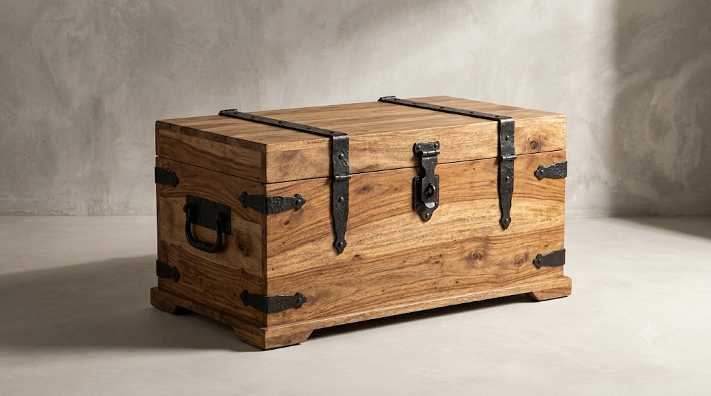
Reclaimed Hardwood Trunk / Blanket Box with Iron Hasps
Masterfully crafted in Jodhpur for high-volume international export, the Reclaimed Hardwood Trunk / Blanket Box with Iron Hasps reflects Rustic Heritage sensibilities engineered for retail success at Pottery Barn, Maisons du Monde. Features Solid timber hope chest with hand-forged black iron strap hinges, side drop handles & latch. Constructed exclusively from certified sustainable timber kiln-dried to strict 8–10% moisture equilibrium to prevent warping across diverse North American and European climates. Accompanied by electrostatically coated, corrosion-resistant ironwork with seamless hand-welded joins. Every piece is individually wrapped, buffered with high-density EPS edge guards, and boxed in an ISTA-1A drop-tested 5-ply export master carton (unit volume: 0.220 CBM). Fully compliant with the US Lacey Act, VRIKSH timber legality verification, and EUDR deforestation due diligence regulations.
| Dimensions | 36" x 18" x 18" / 91 x 46 x 46 cm |
| Material | Solid timber hope chest with hand-forged black iron strap hinges, side drop handles & latch |
| FOB Price | $62.00 – $80.00 FOB Mundra |
| Volume / CBM | 0.220 CBM |
| Standard MOQ | 15 Pcs |
SKU: AA-DN-041
In Production
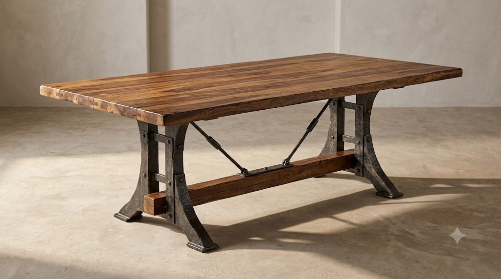
Heritage Trestle Dining Table (78")
Masterfully crafted in Jodhpur for high-volume international export, the Heritage Trestle Dining Table (78") reflects Modern Rustic Grand sensibilities engineered for retail success at Pottery Barn, Arhaus. Features 2.0" thick Sheesham plank top with mortise-and-tenon joinery on hand-hewn iron trestle. Constructed exclusively from certified sustainable timber kiln-dried to strict 8–10% moisture equilibrium to prevent warping across diverse North American and European climates. Accompanied by electrostatically coated, corrosion-resistant ironwork with seamless hand-welded joins. Every piece is individually wrapped, buffered with high-density EPS edge guards, and boxed in an ISTA-1A drop-tested 5-ply export master carton (unit volume: 0.350 CBM). Fully compliant with the US Lacey Act, VRIKSH timber legality verification, and EUDR deforestation due diligence regulations.
| Dimensions | 78" x 38" x 30" / 198 x 97 x 76 cm |
| Material | 2.0" thick Sheesham plank top with mortise-and-tenon joinery on hand-hewn iron trestle |
| FOB Price | $195.00 – $240.00 FOB Mundra |
| Volume / CBM | 0.350 CBM |
| Standard MOQ | 15 Pcs |
SKU: AA-DN-042
In Production
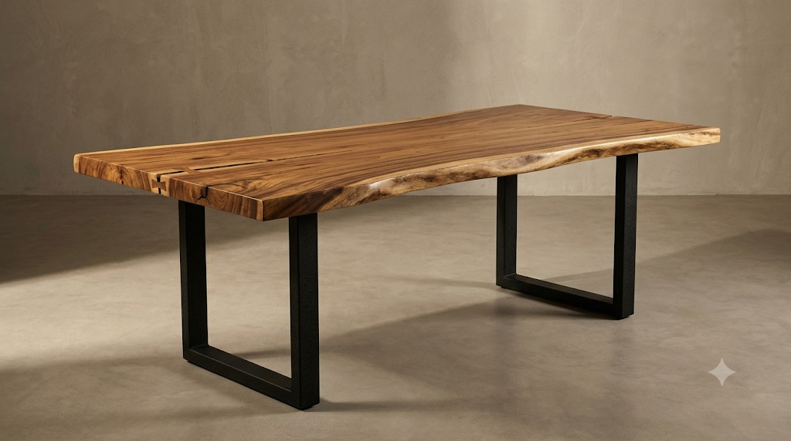
Live-Edge Dining Table with Double U-Legs (84")
Masterfully crafted in Jodhpur for high-volume international export, the Live-Edge Dining Table with Double U-Legs (84") reflects Industrial Organic sensibilities engineered for retail success at Article, West Elm. Features Continuous live-edge butterfly-keyed Acacia slab on 3" heavy-gauge black powder U-legs. Constructed exclusively from certified sustainable timber kiln-dried to strict 8–10% moisture equilibrium to prevent warping across diverse North American and European climates. Accompanied by electrostatically coated, corrosion-resistant ironwork with seamless hand-welded joins. Every piece is individually wrapped, buffered with high-density EPS edge guards, and boxed in an ISTA-1A drop-tested 5-ply export master carton (unit volume: 0.380 CBM). Fully compliant with the US Lacey Act, VRIKSH timber legality verification, and EUDR deforestation due diligence regulations.
| Dimensions | 84" x 40" x 30" / 213 x 102 x 76 cm |
| Material | Continuous live-edge butterfly-keyed Acacia slab on 3" heavy-gauge black powder U-legs |
| FOB Price | $210.00 – $265.00 FOB Mundra |
| Volume / CBM | 0.380 CBM |
| Standard MOQ | 15 Pcs |
SKU: AA-DN-043
In Production
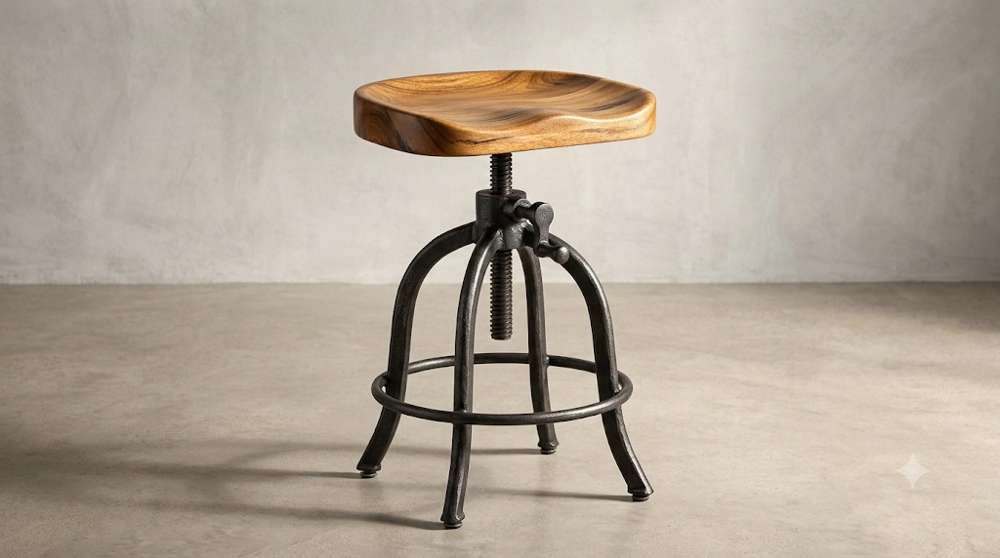
Cast-Iron Crank Adjustable Swivel Bar Stool
Masterfully crafted in Jodhpur for high-volume international export, the Cast-Iron Crank Adjustable Swivel Bar Stool reflects Industrial Commercial sensibilities engineered for retail success at Restaurant Chains, Wayfair. Features Threaded heavy cast iron screw base with curved solid wood saddle seat (26"–32" range). Constructed exclusively from certified sustainable timber kiln-dried to strict 8–10% moisture equilibrium to prevent warping across diverse North American and European climates. Accompanied by electrostatically coated, corrosion-resistant ironwork with seamless hand-welded joins. Every piece is individually wrapped, buffered with high-density EPS edge guards, and boxed in an ISTA-1A drop-tested 5-ply export master carton (unit volume: 0.040 CBM). Fully compliant with the US Lacey Act, VRIKSH timber legality verification, and EUDR deforestation due diligence regulations.
| Dimensions | 16" x 16" x 26"–32" / 41 x 41 cm |
| Material | Threaded heavy cast iron screw base with curved solid wood saddle seat (26"–32" range) |
| FOB Price | $24.00 – $32.00 FOB Mundra |
| Volume / CBM | 0.040 CBM |
| Standard MOQ | 25 Pcs |
SKU: AA-DN-044
In Production
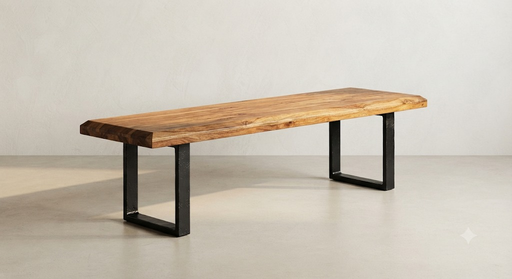
Matching Solid Wood Dining Bench (66")
Masterfully crafted in Jodhpur for high-volume international export, the Matching Solid Wood Dining Bench (66") reflects Dining Bench sensibilities engineered for retail success at Crate & Barrel, Target. Features Sled-leg black iron base supporting a chamfered solid Acacia seat designed to tuck under. Constructed exclusively from certified sustainable timber kiln-dried to strict 8–10% moisture equilibrium to prevent warping across diverse North American and European climates. Accompanied by electrostatically coated, corrosion-resistant ironwork with seamless hand-welded joins. Every piece is individually wrapped, buffered with high-density EPS edge guards, and boxed in an ISTA-1A drop-tested 5-ply export master carton (unit volume: 0.120 CBM). Fully compliant with the US Lacey Act, VRIKSH timber legality verification, and EUDR deforestation due diligence regulations.
| Dimensions | 66" x 14" x 18" / 168 x 36 x 46 cm |
| Material | Sled-leg black iron base supporting a chamfered solid Acacia seat designed to tuck under |
| FOB Price | $55.00 – $72.00 FOB Mundra |
| Volume / CBM | 0.120 CBM |
| Standard MOQ | 15 Pcs |
SKU: AA-DN-046
In Production
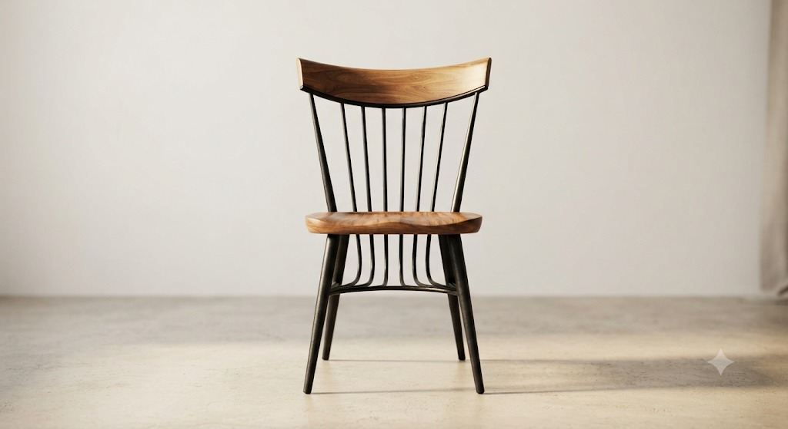
Spindle Back Dining Chair with Iron Frame
Masterfully crafted in Jodhpur for high-volume international export, the Spindle Back Dining Chair with Iron Frame reflects Modern Windsor sensibilities engineered for retail success at Target, West Elm. Features Curved solid timber backrest with matte black iron wire spindle uprights and wood seat. Constructed exclusively from certified sustainable timber kiln-dried to strict 8–10% moisture equilibrium to prevent warping across diverse North American and European climates. Accompanied by electrostatically coated, corrosion-resistant ironwork with seamless hand-welded joins. Every piece is individually wrapped, buffered with high-density EPS edge guards, and boxed in an ISTA-1A drop-tested 5-ply export master carton (unit volume: 0.080 CBM). Fully compliant with the US Lacey Act, VRIKSH timber legality verification, and EUDR deforestation due diligence regulations.
| Dimensions | 18" x 20" x 33" / 46 x 51 x 84 cm |
| Material | Curved solid timber backrest with matte black iron wire spindle uprights and wood seat |
| FOB Price | $28.00 – $36.00 FOB Mundra |
| Volume / CBM | 0.080 CBM |
| Standard MOQ | 25 Pcs |
SKU: AA-DN-048
In Production
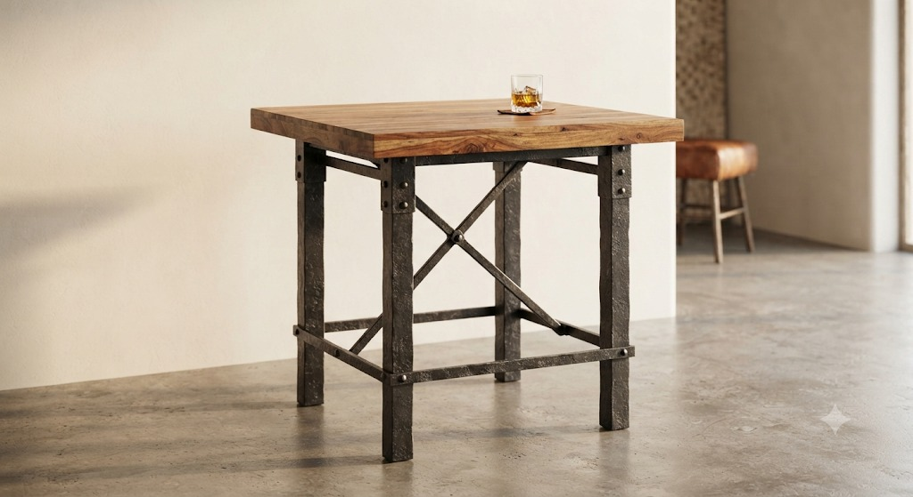
Square Solid Wood Pub Height Table (36" x 36")
Masterfully crafted in Jodhpur for high-volume international export, the Square Solid Wood Pub Height Table (36" x 36") reflects Hospitality Pub sensibilities engineered for retail success at Hospitality Importers. Features High pub table with 4 corner iron uprights, lower footrest rung, and solid Sheesham top. Constructed exclusively from certified sustainable timber kiln-dried to strict 8–10% moisture equilibrium to prevent warping across diverse North American and European climates. Accompanied by electrostatically coated, corrosion-resistant ironwork with seamless hand-welded joins. Every piece is individually wrapped, buffered with high-density EPS edge guards, and boxed in an ISTA-1A drop-tested 5-ply export master carton (unit volume: 0.140 CBM). Fully compliant with the US Lacey Act, VRIKSH timber legality verification, and EUDR deforestation due diligence regulations.
| Dimensions | 36" x 36" x 42" / 91 x 91 x 107 cm |
| Material | High pub table with 4 corner iron uprights, lower footrest rung, and solid Sheesham top |
| FOB Price | $68.00 – $88.00 FOB Mundra |
| Volume / CBM | 0.140 CBM |
| Standard MOQ | 15 Pcs |
SKU: AA-DN-049
In Production
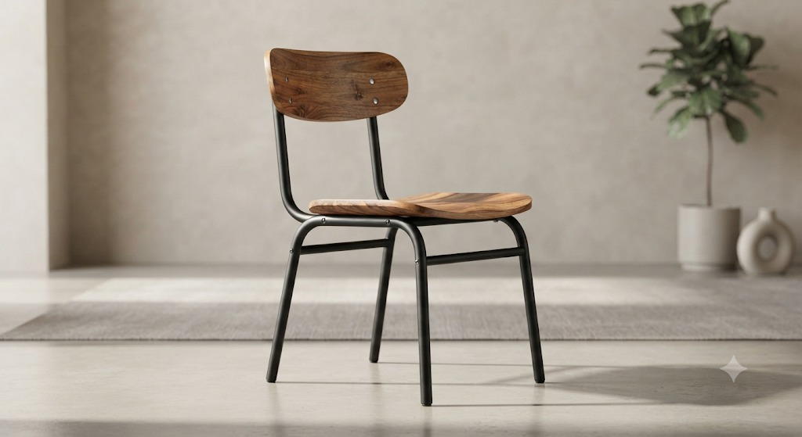
Minimalist Stacking Cafe Chair with Hardwood Seat
Masterfully crafted in Jodhpur for high-volume international export, the Minimalist Stacking Cafe Chair with Hardwood Seat reflects Contract Hospitality sensibilities engineered for retail success at Commercial Contract Wholesalers. Features Tubular steel frame engineered to stack 6-high with ergonomic plywood/hardwood seat. Constructed exclusively from certified sustainable timber kiln-dried to strict 8–10% moisture equilibrium to prevent warping across diverse North American and European climates. Accompanied by electrostatically coated, corrosion-resistant ironwork with seamless hand-welded joins. Every piece is individually wrapped, buffered with high-density EPS edge guards, and boxed in an ISTA-1A drop-tested 5-ply export master carton (unit volume: 0.035 CBM). Fully compliant with the US Lacey Act, VRIKSH timber legality verification, and EUDR deforestation due diligence regulations.
| Dimensions | 17" x 18" x 31" / 43 x 46 x 79 cm |
| Material | Tubular steel frame engineered to stack 6-high with ergonomic plywood/hardwood seat |
| FOB Price | $19.00 – $25.00 FOB Mundra |
| Volume / CBM | 0.035 CBM |
| Standard MOQ | 25 Pcs |
SKU: AA-DN-050
In Production
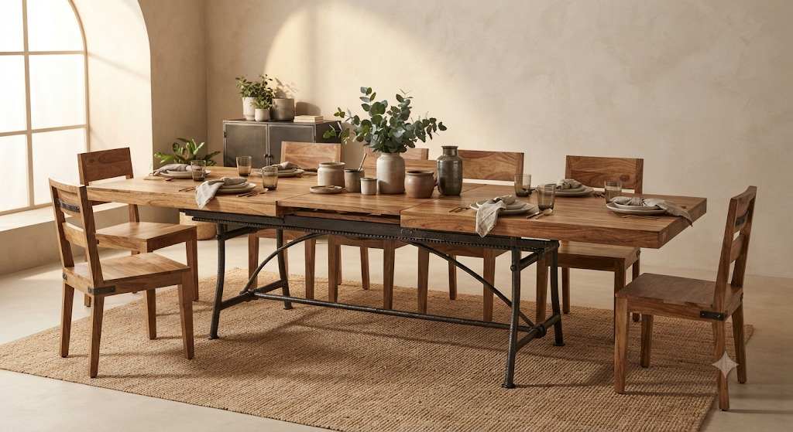
Extension Dining Table with Hidden Iron Leaf Track
Masterfully crafted in Jodhpur for high-volume international export, the Extension Dining Table with Hidden Iron Leaf Track reflects Family Entertaining sensibilities engineered for retail success at Pottery Barn, Arhaus. Features Solid Mango dining table extending from 70" to 94" via smooth metal gear track. Constructed exclusively from certified sustainable timber kiln-dried to strict 8–10% moisture equilibrium to prevent warping across diverse North American and European climates. Accompanied by electrostatically coated, corrosion-resistant ironwork with seamless hand-welded joins. Every piece is individually wrapped, buffered with high-density EPS edge guards, and boxed in an ISTA-1A drop-tested 5-ply export master carton (unit volume: 0.450 CBM). Fully compliant with the US Lacey Act, VRIKSH timber legality verification, and EUDR deforestation due diligence regulations.
| Dimensions | 70"–94" x 38" x 30" / 178–238 cm |
| Material | Solid Mango dining table extending from 70" to 94" via smooth metal gear track |
| FOB Price | $240.00 – $310.00 FOB Mundra |
| Volume / CBM | 0.450 CBM |
| Standard MOQ | 15 Pcs |
SKU: AA-SH-061
In Production
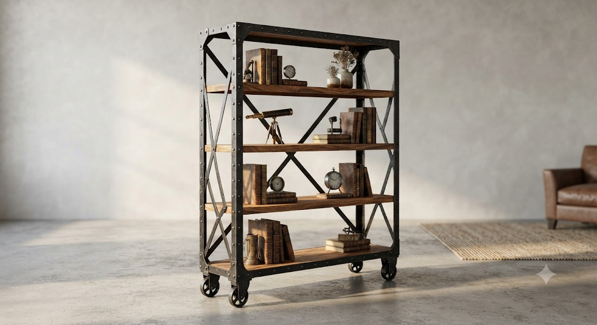
Industrial Mango & Iron Library Bookcase
Masterfully crafted in Jodhpur for high-volume international export, the Industrial Mango & Iron Library Bookcase reflects Architectural Loft sensibilities engineered for retail success at Maisons du Monde, Arhaus. Features 5 solid Mango hardwood shelves on heavy riveted angle-iron frame with iron casters. Constructed exclusively from certified sustainable timber kiln-dried to strict 8–10% moisture equilibrium to prevent warping across diverse North American and European climates. Accompanied by electrostatically coated, corrosion-resistant ironwork with seamless hand-welded joins. Every piece is individually wrapped, buffered with high-density EPS edge guards, and boxed in an ISTA-1A drop-tested 5-ply export master carton (unit volume: 0.580 CBM). Fully compliant with the US Lacey Act, VRIKSH timber legality verification, and EUDR deforestation due diligence regulations.
| Dimensions | 40" x 16" x 76" / 102 x 41 x 193 cm |
| Material | 5 solid Mango hardwood shelves on heavy riveted angle-iron frame with iron casters |
| FOB Price | $165.00 – $210.00 FOB Mundra |
| Volume / CBM | 0.580 CBM |
| Standard MOQ | 15 Pcs |
SKU: AA-SH-062
In Production
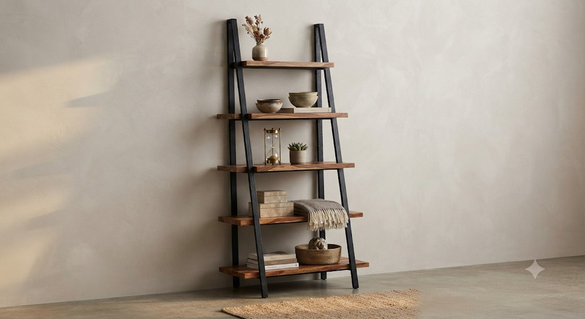
Leaning A-Frame Ladder Shelf (5-Tier)
Masterfully crafted in Jodhpur for high-volume international export, the Leaning A-Frame Ladder Shelf (5-Tier) reflects Space-Saving Display sensibilities engineered for retail success at Crate & Barrel, West Elm. Features Slanted black iron side uprights supporting progressively deeper solid timber shelves. Constructed exclusively from certified sustainable timber kiln-dried to strict 8–10% moisture equilibrium to prevent warping across diverse North American and European climates. Accompanied by electrostatically coated, corrosion-resistant ironwork with seamless hand-welded joins. Every piece is individually wrapped, buffered with high-density EPS edge guards, and boxed in an ISTA-1A drop-tested 5-ply export master carton (unit volume: 0.120 CBM). Fully compliant with the US Lacey Act, VRIKSH timber legality verification, and EUDR deforestation due diligence regulations.
| Dimensions | 26" x 16" x 72" / 66 x 41 x 183 cm |
| Material | Slanted black iron side uprights supporting progressively deeper solid timber shelves |
| FOB Price | $58.00 – $75.00 FOB Mundra |
| Volume / CBM | 0.120 CBM |
| Standard MOQ | 15 Pcs |
SKU: AA-SH-063
In Production
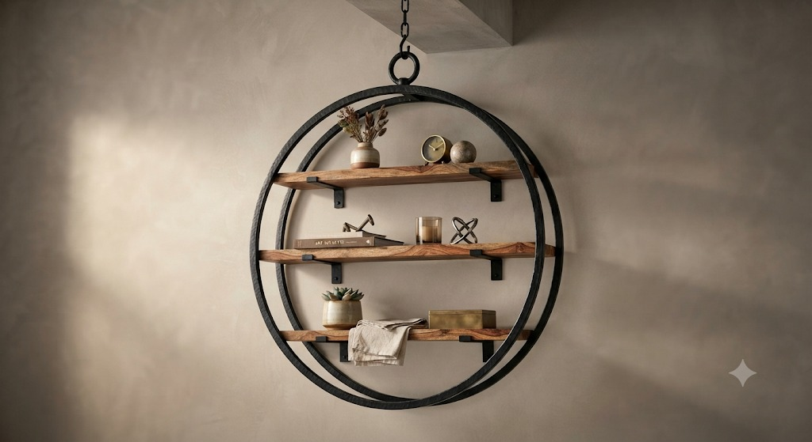
Round Hanging Wall Shelf with Iron Ring Frame
Masterfully crafted in Jodhpur for high-volume international export, the Round Hanging Wall Shelf with Iron Ring Frame reflects Geometric Accent sensibilities engineered for retail success at Amazon Prime, Target. Features 32" diameter black iron circular frame supporting 3 staggered solid wood display ledges. Constructed exclusively from certified sustainable timber kiln-dried to strict 8–10% moisture equilibrium to prevent warping across diverse North American and European climates. Accompanied by electrostatically coated, corrosion-resistant ironwork with seamless hand-welded joins. Every piece is individually wrapped, buffered with high-density EPS edge guards, and boxed in an ISTA-1A drop-tested 5-ply export master carton (unit volume: 0.050 CBM). Fully compliant with the US Lacey Act, VRIKSH timber legality verification, and EUDR deforestation due diligence regulations.
| Dimensions | Dia 32" x 7" D / Dia 81 x 18 cm |
| Material | 32" diameter black iron circular frame supporting 3 staggered solid wood display ledges |
| FOB Price | $24.00 – $32.00 FOB Mundra |
| Volume / CBM | 0.050 CBM |
| Standard MOQ | 25 Pcs |
SKU: AA-SH-064
In Production
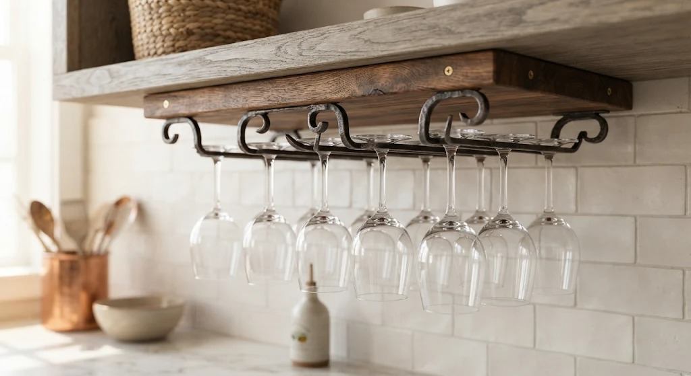
Under-Cabinet Iron & Wood Stemware Glass Rack
Masterfully crafted in Jodhpur for high-volume international export, the Under-Cabinet Iron & Wood Stemware Glass Rack reflects Kitchen Organization sensibilities engineered for retail success at Amazon US, Williams-Sonoma. Features Hardwood ceiling plate with welded dual-channel hanging iron tracks for 12 wine glasses. Constructed exclusively from certified sustainable timber kiln-dried to strict 8–10% moisture equilibrium to prevent warping across diverse North American and European climates. Accompanied by electrostatically coated, corrosion-resistant ironwork with seamless hand-welded joins. Every piece is individually wrapped, buffered with high-density EPS edge guards, and boxed in an ISTA-1A drop-tested 5-ply export master carton (unit volume: 0.008 CBM). Fully compliant with the US Lacey Act, VRIKSH timber legality verification, and EUDR deforestation due diligence regulations.
| Dimensions | 18" x 10" x 3" / 46 x 25 x 8 cm |
| Material | Hardwood ceiling plate with welded dual-channel hanging iron tracks for 12 wine glasses |
| FOB Price | $8.00 – $10.50 FOB Mundra |
| Volume / CBM | 0.008 CBM |
| Standard MOQ | 25 Pcs |
SKU: AA-SH-065
In Production
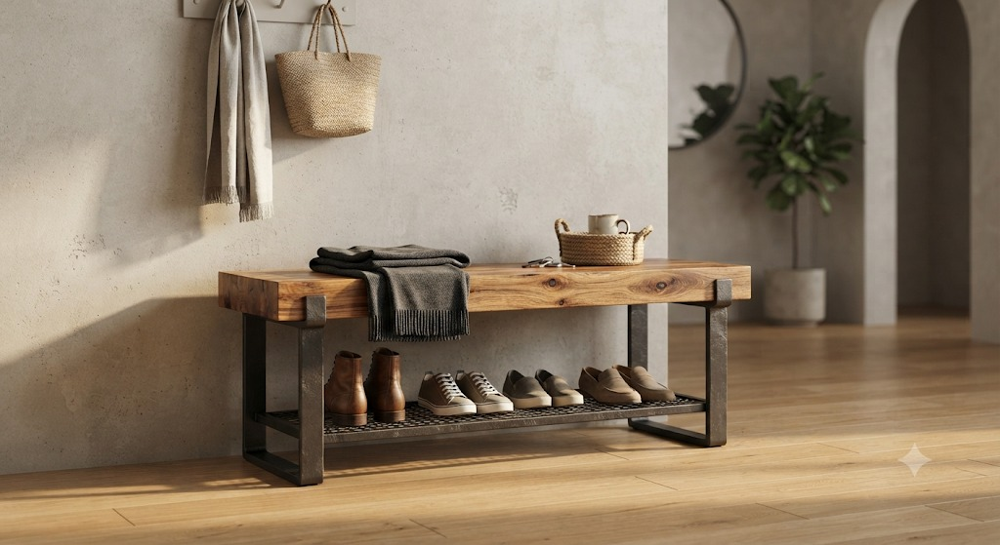
Entryway Storage Bench with Lower Iron Shoe Grate
Masterfully crafted in Jodhpur for high-volume international export, the Entryway Storage Bench with Lower Iron Shoe Grate reflects Entryway Utility sensibilities engineered for retail success at Target, Wayfair. Features Solid 1.5" Acacia bench top with lower wire mesh shelf for footwear & bag storage. Constructed exclusively from certified sustainable timber kiln-dried to strict 8–10% moisture equilibrium to prevent warping across diverse North American and European climates. Accompanied by electrostatically coated, corrosion-resistant ironwork with seamless hand-welded joins. Every piece is individually wrapped, buffered with high-density EPS edge guards, and boxed in an ISTA-1A drop-tested 5-ply export master carton (unit volume: 0.090 CBM). Fully compliant with the US Lacey Act, VRIKSH timber legality verification, and EUDR deforestation due diligence regulations.
| Dimensions | 40" x 14" x 18" / 102 x 36 x 46 cm |
| Material | Solid 1.5" Acacia bench top with lower wire mesh shelf for footwear & bag storage |
| FOB Price | $48.00 – $62.00 FOB Mundra |
| Volume / CBM | 0.090 CBM |
| Standard MOQ | 25 Pcs |
SKU: AA-SH-066
In Production
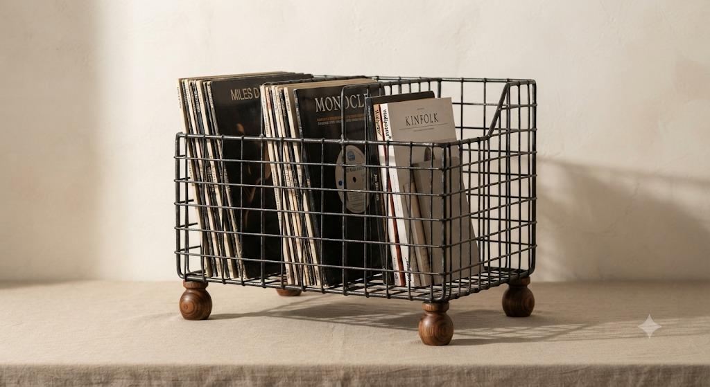
Industrial Wire Mesh Magazine / Record Holder
Masterfully crafted in Jodhpur for high-volume international export, the Industrial Wire Mesh Magazine / Record Holder reflects Vinyl / Magazine sensibilities engineered for retail success at Urban Outfitters, West Elm. Features Blackened wire basket divided into 3 compartments on solid turned wood peg feet. Constructed exclusively from certified sustainable timber kiln-dried to strict 8–10% moisture equilibrium to prevent warping across diverse North American and European climates. Accompanied by electrostatically coated, corrosion-resistant ironwork with seamless hand-welded joins. Every piece is individually wrapped, buffered with high-density EPS edge guards, and boxed in an ISTA-1A drop-tested 5-ply export master carton (unit volume: 0.025 CBM). Fully compliant with the US Lacey Act, VRIKSH timber legality verification, and EUDR deforestation due diligence regulations.
| Dimensions | 16" x 10" x 14" / 41 x 25 x 36 cm |
| Material | Blackened wire basket divided into 3 compartments on solid turned wood peg feet |
| FOB Price | $12.50 – $16.00 FOB Mundra |
| Volume / CBM | 0.025 CBM |
| Standard MOQ | 25 Pcs |
SKU: AA-SH-067
In Production
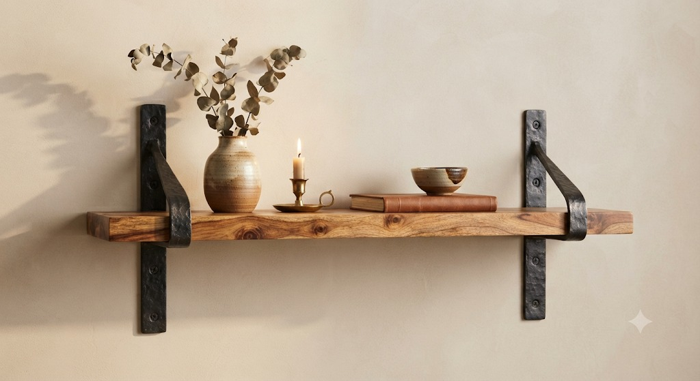
Heavy-Duty Floating Shelf Brackets with Timber (Pair)
Masterfully crafted in Jodhpur for high-volume international export, the Heavy-Duty Floating Shelf Brackets with Timber (Pair) reflects Modern Farmhouse sensibilities engineered for retail success at Amazon US Best Seller. Features Two 10" hand-forged J-brackets paired with a seasoned 24" x 8" Sheesham shelf. Constructed exclusively from certified sustainable timber kiln-dried to strict 8–10% moisture equilibrium to prevent warping across diverse North American and European climates. Accompanied by electrostatically coated, corrosion-resistant ironwork with seamless hand-welded joins. Every piece is individually wrapped, buffered with high-density EPS edge guards, and boxed in an ISTA-1A drop-tested 5-ply export master carton (unit volume: 0.015 CBM). Fully compliant with the US Lacey Act, VRIKSH timber legality verification, and EUDR deforestation due diligence regulations.
| Dimensions | 24" x 8" x 6" / 61 x 20 x 15 cm |
| Material | Two 10" hand-forged J-brackets paired with a seasoned 24" x 8" Sheesham shelf |
| FOB Price | $12.00 – $15.50 FOB Mundra |
| Volume / CBM | 0.015 CBM |
| Standard MOQ | 25 Pcs |
SKU: AA-SH-068
In Production
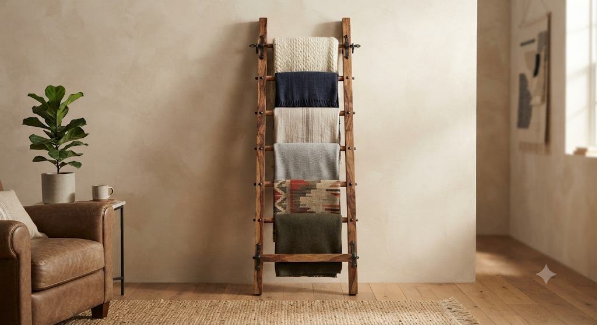
Freestanding Quilt / Blanket Ladder (6-Rung)
Masterfully crafted in Jodhpur for high-volume international export, the Freestanding Quilt / Blanket Ladder (6-Rung) reflects Living Room Cozy sensibilities engineered for retail success at Pottery Barn, Kirkland’s. Features 6-foot tall rustic solid hardwood ladder with wrought iron cross-rod joinery. Constructed exclusively from certified sustainable timber kiln-dried to strict 8–10% moisture equilibrium to prevent warping across diverse North American and European climates. Accompanied by electrostatically coated, corrosion-resistant ironwork with seamless hand-welded joins. Every piece is individually wrapped, buffered with high-density EPS edge guards, and boxed in an ISTA-1A drop-tested 5-ply export master carton (unit volume: 0.045 CBM). Fully compliant with the US Lacey Act, VRIKSH timber legality verification, and EUDR deforestation due diligence regulations.
| Dimensions | 20" x 3" x 72" / 51 x 8 x 183 cm |
| Material | 6-foot tall rustic solid hardwood ladder with wrought iron cross-rod joinery |
| FOB Price | $22.00 – $29.00 FOB Mundra |
| Volume / CBM | 0.045 CBM |
| Standard MOQ | 25 Pcs |
SKU: AA-SH-069
In Production
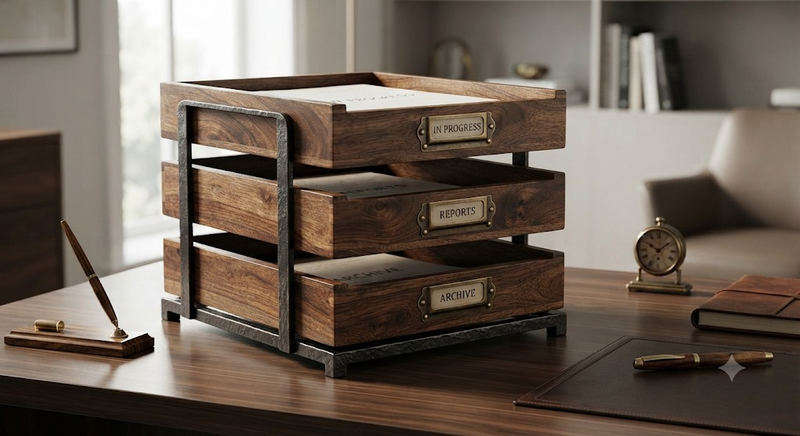
Desktop 3-Tier Document Sorter with Brass Labels
Masterfully crafted in Jodhpur for high-volume international export, the Desktop 3-Tier Document Sorter with Brass Labels reflects Executive Office sensibilities engineered for retail success at Pottery Barn, Amazon. Features Stacked solid wood letter trays with vintage iron nameplate holders on iron risers. Constructed exclusively from certified sustainable timber kiln-dried to strict 8–10% moisture equilibrium to prevent warping across diverse North American and European climates. Accompanied by electrostatically coated, corrosion-resistant ironwork with seamless hand-welded joins. Every piece is individually wrapped, buffered with high-density EPS edge guards, and boxed in an ISTA-1A drop-tested 5-ply export master carton (unit volume: 0.020 CBM). Fully compliant with the US Lacey Act, VRIKSH timber legality verification, and EUDR deforestation due diligence regulations.
| Dimensions | 14" x 11" x 10" / 36 x 28 x 25 cm |
| Material | Stacked solid wood letter trays with vintage iron nameplate holders on iron risers |
| FOB Price | $16.00 – $21.00 FOB Mundra |
| Volume / CBM | 0.020 CBM |
| Standard MOQ | 25 Pcs |
SKU: AA-SH-070
In Production
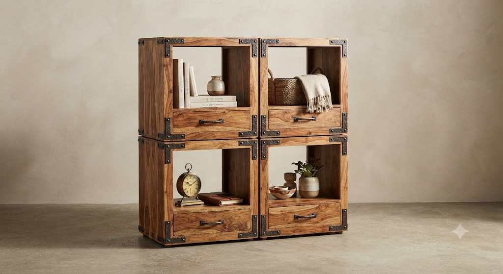
Modular Cube Storage Unit (4-Box)
Masterfully crafted in Jodhpur for high-volume international export, the Modular Cube Storage Unit (4-Box) reflects Modular Living sensibilities engineered for retail success at IKEA, Target. Features Interlocking 14" square solid Acacia boxes that can be stacked vertically or horizontally. Constructed exclusively from certified sustainable timber kiln-dried to strict 8–10% moisture equilibrium to prevent warping across diverse North American and European climates. Accompanied by electrostatically coated, corrosion-resistant ironwork with seamless hand-welded joins. Every piece is individually wrapped, buffered with high-density EPS edge guards, and boxed in an ISTA-1A drop-tested 5-ply export master carton (unit volume: 0.160 CBM). Fully compliant with the US Lacey Act, VRIKSH timber legality verification, and EUDR deforestation due diligence regulations.
| Dimensions | 30" x 14" x 30" / 76 x 36 x 76 cm |
| Material | Interlocking 14" square solid Acacia boxes that can be stacked vertically or horizontally |
| FOB Price | $68.00 – $88.00 FOB Mundra |
| Volume / CBM | 0.160 CBM |
| Standard MOQ | 15 Pcs |
SKU: AA-EW-121
In Production
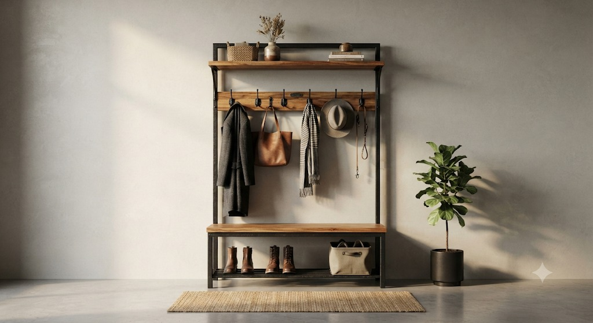
Industrial Hall Tree with Bench & 8 Iron Hooks
Masterfully crafted in Jodhpur for high-volume international export, the Industrial Hall Tree with Bench & 8 Iron Hooks reflects Mudroom Central sensibilities engineered for retail success at Pottery Barn, Wayfair. Features Black angle-iron frame with solid Acacia shoe bench, top display shelf & double hooks. Constructed exclusively from certified sustainable timber kiln-dried to strict 8–10% moisture equilibrium to prevent warping across diverse North American and European climates. Accompanied by electrostatically coated, corrosion-resistant ironwork with seamless hand-welded joins. Every piece is individually wrapped, buffered with high-density EPS edge guards, and boxed in an ISTA-1A drop-tested 5-ply export master carton (unit volume: 0.220 CBM). Fully compliant with the US Lacey Act, VRIKSH timber legality verification, and EUDR deforestation due diligence regulations.
| Dimensions | 40" x 16" x 72" / 102 x 41 x 183 cm |
| Material | Black angle-iron frame with solid Acacia shoe bench, top display shelf & double hooks |
| FOB Price | $78.00 – $98.00 FOB Mundra |
| Volume / CBM | 0.220 CBM |
| Standard MOQ | 15 Pcs |
SKU: AA-EW-122
In Production
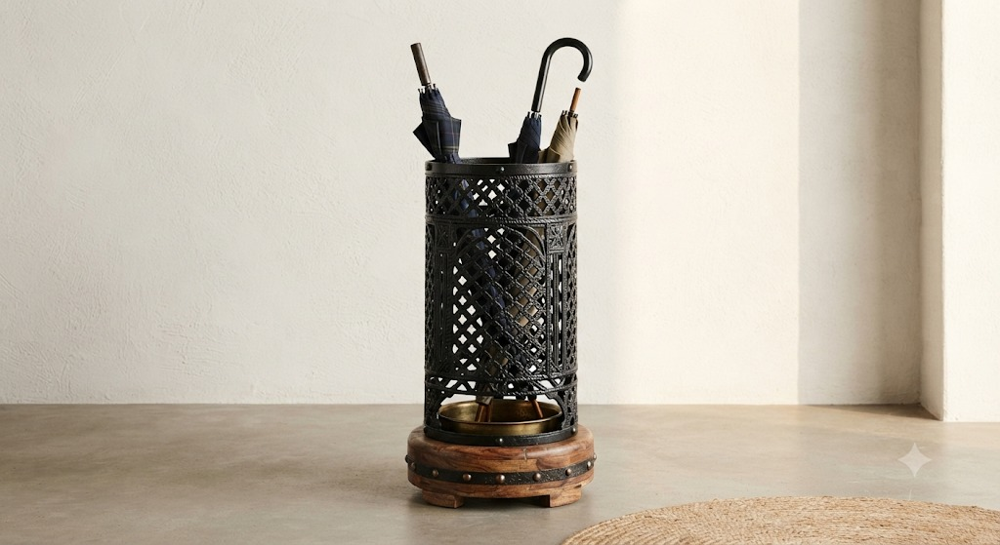
Cast-Iron Umbrella Stand with Removable Drip Pan
Masterfully crafted in Jodhpur for high-volume international export, the Cast-Iron Umbrella Stand with Removable Drip Pan reflects Vintage Foyer sensibilities engineered for retail success at Crate & Barrel, Ballard Designs. Features Pierced geometric iron lattice cylinder on solid wood base with bottom water pan. Constructed exclusively from certified sustainable timber kiln-dried to strict 8–10% moisture equilibrium to prevent warping across diverse North American and European climates. Accompanied by electrostatically coated, corrosion-resistant ironwork with seamless hand-welded joins. Every piece is individually wrapped, buffered with high-density EPS edge guards, and boxed in an ISTA-1A drop-tested 5-ply export master carton (unit volume: 0.035 CBM). Fully compliant with the US Lacey Act, VRIKSH timber legality verification, and EUDR deforestation due diligence regulations.
| Dimensions | Dia 9.5" x 22" H / Dia 24 x 56 cm |
| Material | Pierced geometric iron lattice cylinder on solid wood base with bottom water pan |
| FOB Price | $16.00 – $21.00 FOB Mundra |
| Volume / CBM | 0.035 CBM |
| Standard MOQ | 25 Pcs |
SKU: AA-EW-123
In Production
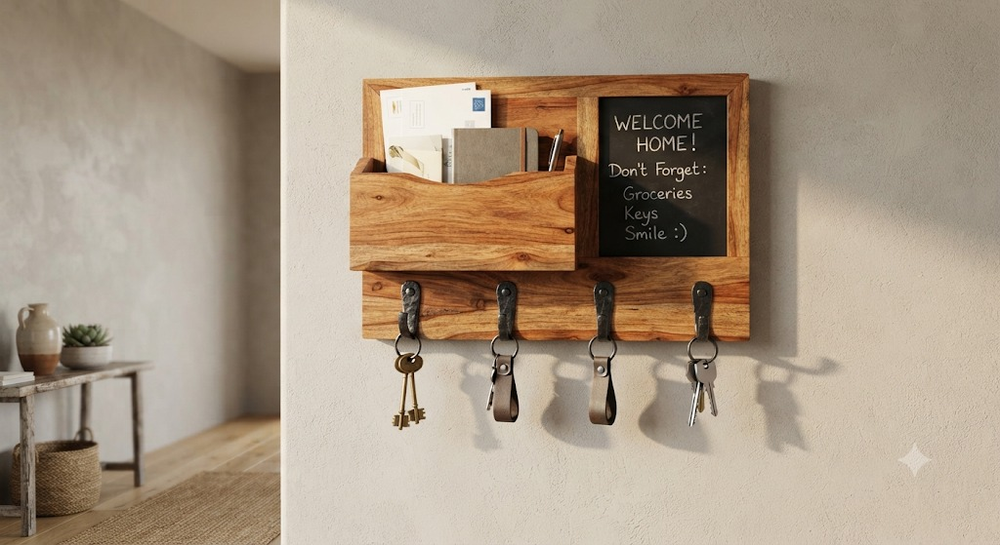
Wall-Mounted Entry Mail Organizer with 4 Key Hooks
Masterfully crafted in Jodhpur for high-volume international export, the Wall-Mounted Entry Mail Organizer with 4 Key Hooks reflects Home Organization sensibilities engineered for retail success at Amazon US Best Seller. Features Solid Mango wood mail slot pocket with 4 forged iron key hooks and chalk memo board. Constructed exclusively from certified sustainable timber kiln-dried to strict 8–10% moisture equilibrium to prevent warping across diverse North American and European climates. Accompanied by electrostatically coated, corrosion-resistant ironwork with seamless hand-welded joins. Every piece is individually wrapped, buffered with high-density EPS edge guards, and boxed in an ISTA-1A drop-tested 5-ply export master carton (unit volume: 0.012 CBM). Fully compliant with the US Lacey Act, VRIKSH timber legality verification, and EUDR deforestation due diligence regulations.
| Dimensions | 18" x 4" x 12" / 46 x 10 x 30 cm |
| Material | Solid Mango wood mail slot pocket with 4 forged iron key hooks and chalk memo board |
| FOB Price | $7.50 – $9.80 FOB Mundra |
| Volume / CBM | 0.012 CBM |
| Standard MOQ | 25 Pcs |
SKU: AA-EW-124
In Production
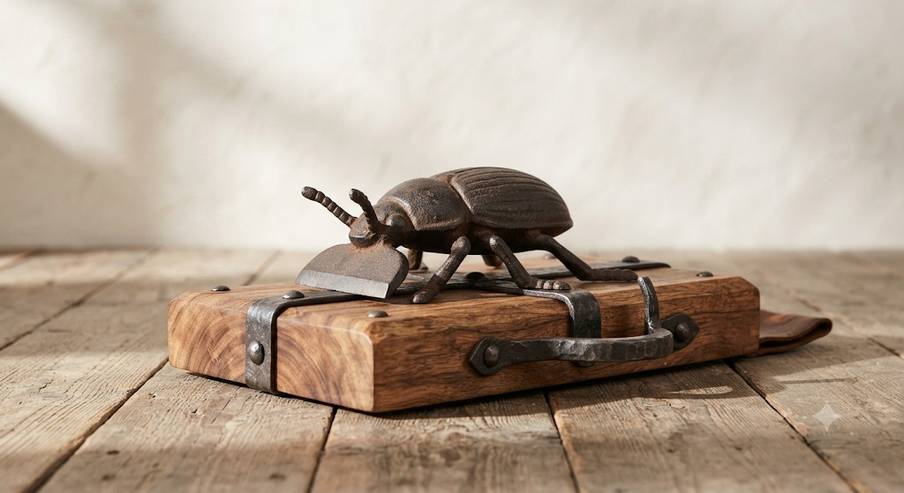
Cast-Iron Beetle / Cricket Boot Scraper & Jack
Masterfully crafted in Jodhpur for high-volume international export, the Cast-Iron Beetle / Cricket Boot Scraper & Jack reflects English Country sensibilities engineered for retail success at Terrain, Amazon Prime. Features Heavyweight 4.5 lb solid cast-iron beetle figurine designed for outdoor mud scraping. Constructed exclusively from certified sustainable timber kiln-dried to strict 8–10% moisture equilibrium to prevent warping across diverse North American and European climates. Accompanied by electrostatically coated, corrosion-resistant ironwork with seamless hand-welded joins. Every piece is individually wrapped, buffered with high-density EPS edge guards, and boxed in an ISTA-1A drop-tested 5-ply export master carton (unit volume: 0.003 CBM). Fully compliant with the US Lacey Act, VRIKSH timber legality verification, and EUDR deforestation due diligence regulations.
| Dimensions | 10" x 5" x 3" / 25 x 13 x 8 cm |
| Material | Heavyweight 4.5 lb solid cast-iron beetle figurine designed for outdoor mud scraping |
| FOB Price | $4.80 – $6.20 FOB Mundra |
| Volume / CBM | 0.003 CBM |
| Standard MOQ | 25 Pcs |
SKU: AA-EW-125
In Production
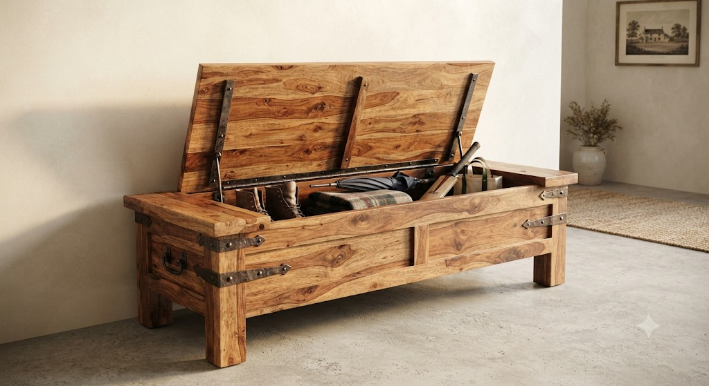
Reclaimed Hardwood Storage Bench with Flip-Top Lid
Masterfully crafted in Jodhpur for high-volume international export, the Reclaimed Hardwood Storage Bench with Flip-Top Lid reflects Farmhouse Entry sensibilities engineered for retail success at Maisons du Monde, Wayfair. Features Piano-hinged bench seat revealing deep compartment for boots, umbrellas, and sports gear. Constructed exclusively from certified sustainable timber kiln-dried to strict 8–10% moisture equilibrium to prevent warping across diverse North American and European climates. Accompanied by electrostatically coated, corrosion-resistant ironwork with seamless hand-welded joins. Every piece is individually wrapped, buffered with high-density EPS edge guards, and boxed in an ISTA-1A drop-tested 5-ply export master carton (unit volume: 0.210 CBM). Fully compliant with the US Lacey Act, VRIKSH timber legality verification, and EUDR deforestation due diligence regulations.
| Dimensions | 42" x 16" x 18" / 107 x 41 x 46 cm |
| Material | Piano-hinged bench seat revealing deep compartment for boots, umbrellas, and sports gear |
| FOB Price | $68.00 – $88.00 FOB Mundra |
| Volume / CBM | 0.210 CBM |
| Standard MOQ | 15 Pcs |
SKU: AA-EW-126
In Production
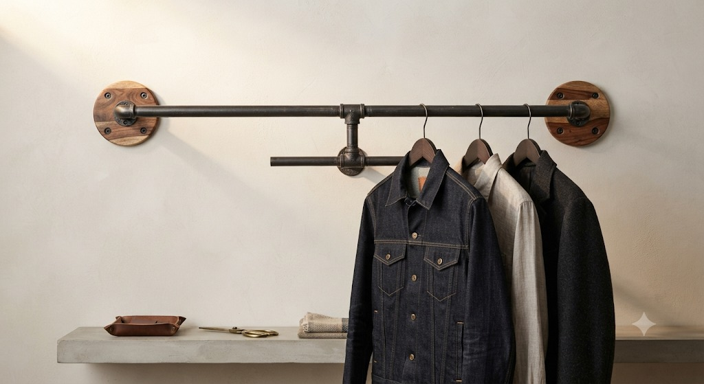
Industrial Iron Pipe Wall-Mounted Garment Rack
Masterfully crafted in Jodhpur for high-volume international export, the Industrial Iron Pipe Wall-Mounted Garment Rack reflects Urban Loft sensibilities engineered for retail success at Amazon, Urban Outfitters. Features Heavy 3/4" plumbing pipe rail mounted to solid wood escutcheon wall plates. Constructed exclusively from certified sustainable timber kiln-dried to strict 8–10% moisture equilibrium to prevent warping across diverse North American and European climates. Accompanied by electrostatically coated, corrosion-resistant ironwork with seamless hand-welded joins. Every piece is individually wrapped, buffered with high-density EPS edge guards, and boxed in an ISTA-1A drop-tested 5-ply export master carton (unit volume: 0.018 CBM). Fully compliant with the US Lacey Act, VRIKSH timber legality verification, and EUDR deforestation due diligence regulations.
| Dimensions | 36" x 11" x 8" / 91 x 28 x 20 cm |
| Material | Heavy 3/4" plumbing pipe rail mounted to solid wood escutcheon wall plates |
| FOB Price | $11.50 – $15.00 FOB Mundra |
| Volume / CBM | 0.018 CBM |
| Standard MOQ | 25 Pcs |
SKU: AA-EW-127
In Production
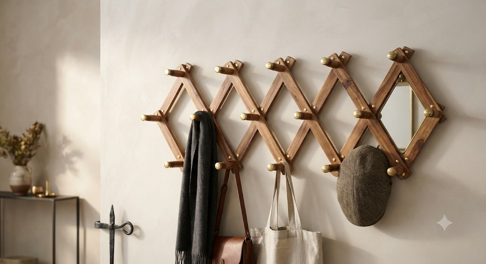
Accordion Expanding Wall Peg Coat Rack (10-Peg)
Masterfully crafted in Jodhpur for high-volume international export, the Accordion Expanding Wall Peg Coat Rack (10-Peg) reflects Mid-Century Classic sensibilities engineered for retail success at Target, Amazon Prime. Features Expanding diamond wooden lattice with turned pegs and brass pivot rivets. Constructed exclusively from certified sustainable timber kiln-dried to strict 8–10% moisture equilibrium to prevent warping across diverse North American and European climates. Accompanied by electrostatically coated, corrosion-resistant ironwork with seamless hand-welded joins. Every piece is individually wrapped, buffered with high-density EPS edge guards, and boxed in an ISTA-1A drop-tested 5-ply export master carton (unit volume: 0.006 CBM). Fully compliant with the US Lacey Act, VRIKSH timber legality verification, and EUDR deforestation due diligence regulations.
| Dimensions | Extends to 38" W x 14" H |
| Material | Expanding diamond wooden lattice with turned pegs and brass pivot rivets |
| FOB Price | $4.20 – $5.50 FOB Mundra |
| Volume / CBM | 0.006 CBM |
| Standard MOQ | 25 Pcs |
SKU: AA-EW-128
In Production
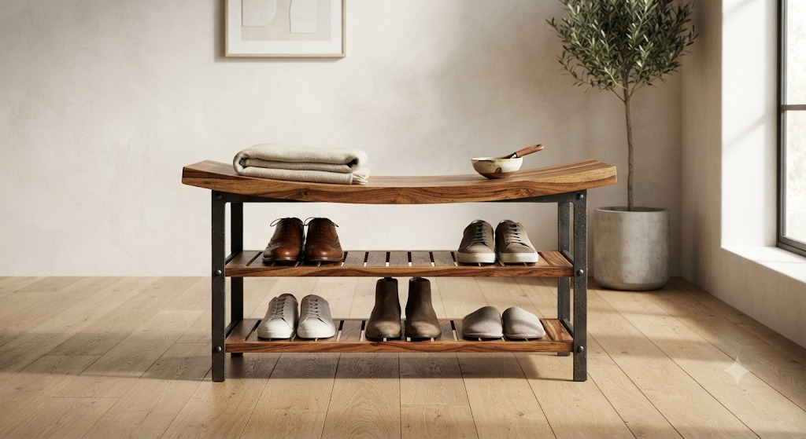
Slatted Acacia Shoe Bench (2-Tier)
Masterfully crafted in Jodhpur for high-volume international export, the Slatted Acacia Shoe Bench (2-Tier) reflects Scandinavian Clean sensibilities engineered for retail success at IKEA, Target. Features Two slatted lower shoe shelves with comfortable curved wooden sitting top. Constructed exclusively from certified sustainable timber kiln-dried to strict 8–10% moisture equilibrium to prevent warping across diverse North American and European climates. Accompanied by electrostatically coated, corrosion-resistant ironwork with seamless hand-welded joins. Every piece is individually wrapped, buffered with high-density EPS edge guards, and boxed in an ISTA-1A drop-tested 5-ply export master carton (unit volume: 0.040 CBM). Fully compliant with the US Lacey Act, VRIKSH timber legality verification, and EUDR deforestation due diligence regulations.
| Dimensions | 32" x 12" x 18" / 81 x 30 x 46 cm |
| Material | Two slatted lower shoe shelves with comfortable curved wooden sitting top |
| FOB Price | $22.00 – $28.50 FOB Mundra |
| Volume / CBM | 0.040 CBM |
| Standard MOQ | 25 Pcs |
SKU: AA-EW-129
In Production
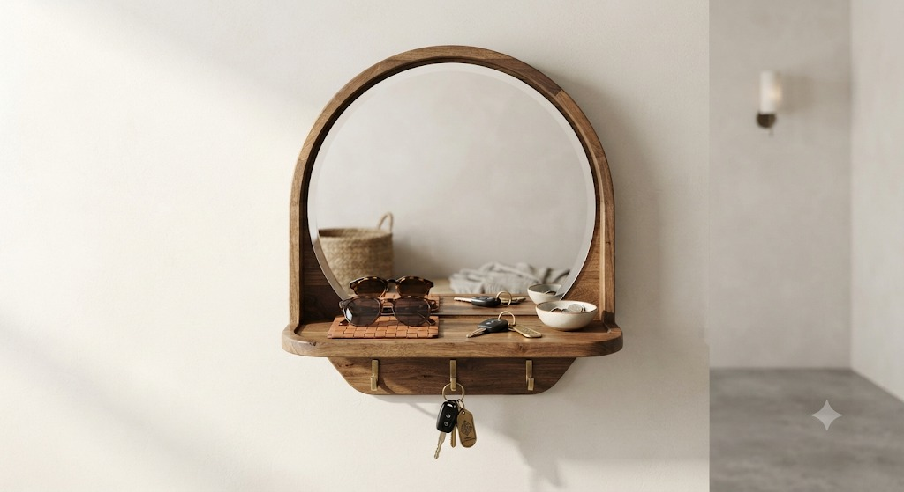
Key & Sunglasses Entry Catch-All Mirror Ledge
Masterfully crafted in Jodhpur for high-volume international export, the Key & Sunglasses Entry Catch-All Mirror Ledge reflects Modern Compact sensibilities engineered for retail success at West Elm, CB2. Features 20" round mirror seated in a solid wood tray ledge with 3 under-mounted brass hooks. Constructed exclusively from certified sustainable timber kiln-dried to strict 8–10% moisture equilibrium to prevent warping across diverse North American and European climates. Accompanied by electrostatically coated, corrosion-resistant ironwork with seamless hand-welded joins. Every piece is individually wrapped, buffered with high-density EPS edge guards, and boxed in an ISTA-1A drop-tested 5-ply export master carton (unit volume: 0.035 CBM). Fully compliant with the US Lacey Act, VRIKSH timber legality verification, and EUDR deforestation due diligence regulations.
| Dimensions | 20" x 5" x 24" / 51 x 13 x 61 cm |
| Material | 20" round mirror seated in a solid wood tray ledge with 3 under-mounted brass hooks |
| FOB Price | $19.50 – $25.50 FOB Mundra |
| Volume / CBM | 0.035 CBM |
| Standard MOQ | 25 Pcs |
SKU: AA-EW-130
In Production
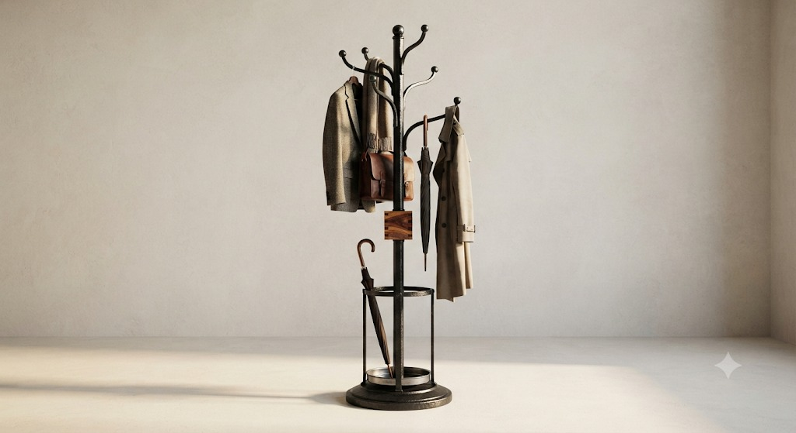
Standing Wrought Iron Coat Tree with Umbrella Ring
Masterfully crafted in Jodhpur for high-volume international export, the Standing Wrought Iron Coat Tree with Umbrella Ring reflects Traditional Hall sensibilities engineered for retail success at Wayfair, Kirkland’s. Features Freestanding black iron pole with 8 staggered tree branches and lower umbrella hoop. Constructed exclusively from certified sustainable timber kiln-dried to strict 8–10% moisture equilibrium to prevent warping across diverse North American and European climates. Accompanied by electrostatically coated, corrosion-resistant ironwork with seamless hand-welded joins. Every piece is individually wrapped, buffered with high-density EPS edge guards, and boxed in an ISTA-1A drop-tested 5-ply export master carton (unit volume: 0.050 CBM). Fully compliant with the US Lacey Act, VRIKSH timber legality verification, and EUDR deforestation due diligence regulations.
| Dimensions | 18" x 18" x 70" / 46 x 46 x 178 cm |
| Material | Freestanding black iron pole with 8 staggered tree branches and lower umbrella hoop |
| FOB Price | $24.00 – $32.00 FOB Mundra |
| Volume / CBM | 0.050 CBM |
| Standard MOQ | 25 Pcs |
SKU: AA-BD-131
In Production
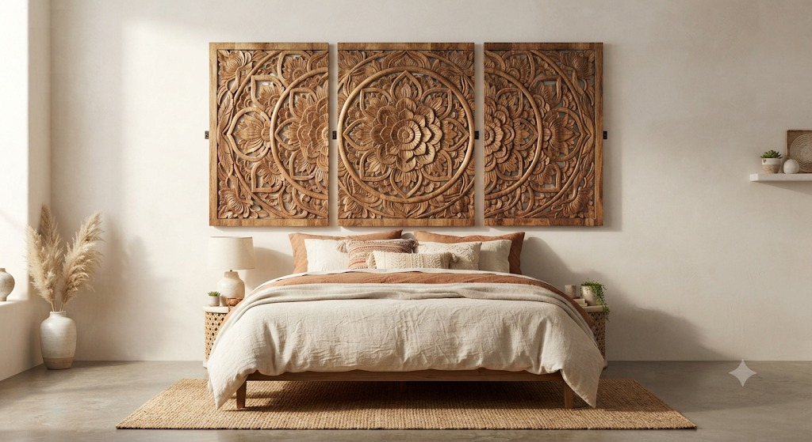
Carved Mandala Wood Queen Headboard Panel (Set of 3)
Masterfully crafted in Jodhpur for high-volume international export, the Carved Mandala Wood Queen Headboard Panel (Set of 3) reflects Bohemian Sanctuary sensibilities engineered for retail success at Anthropologie, Urban Outfitters. Features 3-piece wall-mounted solid Mango panel with deep hand-carved floral lotus relief. Constructed exclusively from certified sustainable timber kiln-dried to strict 8–10% moisture equilibrium to prevent warping across diverse North American and European climates. Accompanied by electrostatically coated, corrosion-resistant ironwork with seamless hand-welded joins. Every piece is individually wrapped, buffered with high-density EPS edge guards, and boxed in an ISTA-1A drop-tested 5-ply export master carton (unit volume: 0.075 CBM). Fully compliant with the US Lacey Act, VRIKSH timber legality verification, and EUDR deforestation due diligence regulations.
| Dimensions | 62" W x 36" H x 1.5" D |
| Material | 3-piece wall-mounted solid Mango panel with deep hand-carved floral lotus relief |
| FOB Price | $65.00 – $85.00 FOB Mundra |
| Volume / CBM | 0.075 CBM |
| Standard MOQ | 25 Pcs |
SKU: AA-BD-132
In Production
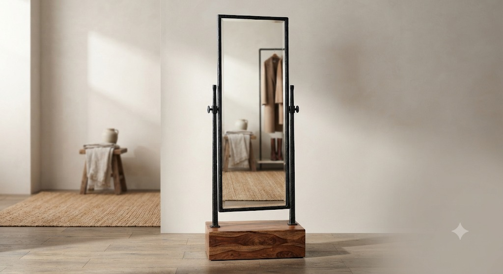
Full-Length Standing Iron & Wood Cheval Mirror (66")
Masterfully crafted in Jodhpur for high-volume international export, the Full-Length Standing Iron & Wood Cheval Mirror (66") reflects Dressing Room sensibilities engineered for retail success at West Elm, CB2. Features Pivot-mounted mirror in heavy black iron frame on solid wood pedestal base. Constructed exclusively from certified sustainable timber kiln-dried to strict 8–10% moisture equilibrium to prevent warping across diverse North American and European climates. Accompanied by electrostatically coated, corrosion-resistant ironwork with seamless hand-welded joins. Every piece is individually wrapped, buffered with high-density EPS edge guards, and boxed in an ISTA-1A drop-tested 5-ply export master carton (unit volume: 0.110 CBM). Fully compliant with the US Lacey Act, VRIKSH timber legality verification, and EUDR deforestation due diligence regulations.
| Dimensions | 24" x 18" x 66" / 61 x 46 x 168 cm |
| Material | Pivot-mounted mirror in heavy black iron frame on solid wood pedestal base |
| FOB Price | $48.00 – $64.00 FOB Mundra |
| Volume / CBM | 0.110 CBM |
| Standard MOQ | 15 Pcs |
SKU: AA-BD-133
In Production
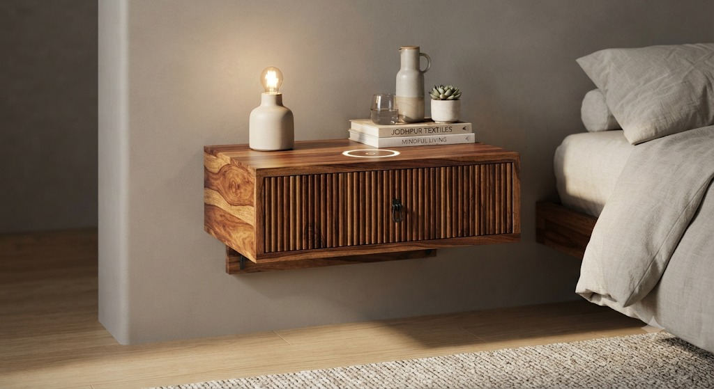
Solid Wood Floating Bedside Shelf with Drawer
Masterfully crafted in Jodhpur for high-volume international export, the Solid Wood Floating Bedside Shelf with Drawer reflects Modern Minimalist sensibilities engineered for retail success at Article, CB2. Features Wall-hung single drawer nightstand with fluted wood drawer face & cordless charging recess. Constructed exclusively from certified sustainable timber kiln-dried to strict 8–10% moisture equilibrium to prevent warping across diverse North American and European climates. Accompanied by electrostatically coated, corrosion-resistant ironwork with seamless hand-welded joins. Every piece is individually wrapped, buffered with high-density EPS edge guards, and boxed in an ISTA-1A drop-tested 5-ply export master carton (unit volume: 0.022 CBM). Fully compliant with the US Lacey Act, VRIKSH timber legality verification, and EUDR deforestation due diligence regulations.
| Dimensions | 18" x 12" x 7" / 46 x 30 x 18 cm |
| Material | Wall-hung single drawer nightstand with fluted wood drawer face & cordless charging recess |
| FOB Price | $19.00 – $25.00 FOB Mundra |
| Volume / CBM | 0.022 CBM |
| Standard MOQ | 25 Pcs |
SKU: AA-BD-134
In Production
Traditional Iron & Wood Valet Stand / Clothes Horse
Masterfully crafted in Jodhpur for high-volume international export, the Traditional Iron & Wood Valet Stand / Clothes Horse reflects Executive Bedroom sensibilities engineered for retail success at Brooks Brothers, Wayfair. Features Freestanding suit valet with jacket hanger, trouser bar, shoe rack & wooden accessory tray. Constructed exclusively from certified sustainable timber kiln-dried to strict 8–10% moisture equilibrium to prevent warping across diverse North American and European climates. Accompanied by electrostatically coated, corrosion-resistant ironwork with seamless hand-welded joins. Every piece is individually wrapped, buffered with high-density EPS edge guards, and boxed in an ISTA-1A drop-tested 5-ply export master carton (unit volume: 0.045 CBM). Fully compliant with the US Lacey Act, VRIKSH timber legality verification, and EUDR deforestation due diligence regulations.
| Dimensions | 18" x 14" x 46" / 46 x 36 x 117 cm |
| Material | Freestanding suit valet with jacket hanger, trouser bar, shoe rack & wooden accessory tray |
| FOB Price | $26.00 – $34.00 FOB Mundra |
| Volume / CBM | 0.045 CBM |
| Standard MOQ | 25 Pcs |
SKU: AA-BD-135
In Production
Upholstered Linen Bed Bench with Turned Wood Legs
Masterfully crafted in Jodhpur for high-volume international export, the Upholstered Linen Bed Bench with Turned Wood Legs reflects French Provincial sensibilities engineered for retail success at Pottery Barn, Ballard Designs. Features Solid Mango timber base with turned spindle legs and high-density foam Belgian linen seat. Constructed exclusively from certified sustainable timber kiln-dried to strict 8–10% moisture equilibrium to prevent warping across diverse North American and European climates. Accompanied by electrostatically coated, corrosion-resistant ironwork with seamless hand-welded joins. Every piece is individually wrapped, buffered with high-density EPS edge guards, and boxed in an ISTA-1A drop-tested 5-ply export master carton (unit volume: 0.120 CBM). Fully compliant with the US Lacey Act, VRIKSH timber legality verification, and EUDR deforestation due diligence regulations.
| Dimensions | 48" x 16" x 19" / 122 x 41 x 48 cm |
| Material | Solid Mango timber base with turned spindle legs and high-density foam Belgian linen seat |
| FOB Price | $52.00 – $68.00 FOB Mundra |
| Volume / CBM | 0.120 CBM |
| Standard MOQ | 15 Pcs |
SKU: AA-BD-136
In Production
Geometric Wood Mosaic Decorative Screen (3-Panel)
Masterfully crafted in Jodhpur for high-volume international export, the Geometric Wood Mosaic Decorative Screen (3-Panel) reflects Art Deco Geometric sensibilities engineered for retail success at West Elm, Arhaus. Features Folding room divider screen with inlaid natural multi-species wood parquetry blocks. Constructed exclusively from certified sustainable timber kiln-dried to strict 8–10% moisture equilibrium to prevent warping across diverse North American and European climates. Accompanied by electrostatically coated, corrosion-resistant ironwork with seamless hand-welded joins. Every piece is individually wrapped, buffered with high-density EPS edge guards, and boxed in an ISTA-1A drop-tested 5-ply export master carton (unit volume: 0.090 CBM). Fully compliant with the US Lacey Act, VRIKSH timber legality verification, and EUDR deforestation due diligence regulations.
| Dimensions | 54" W x 70" H x 1" D / 137 x 178 cm |
| Material | Folding room divider screen with inlaid natural multi-species wood parquetry blocks |
| FOB Price | $72.00 – $94.00 FOB Mundra |
| Volume / CBM | 0.090 CBM |
| Standard MOQ | 25 Pcs |
SKU: AA-BD-137
In Production
Bedside Carafe & Tumbler Solid Wood Coaster Caddy
Masterfully crafted in Jodhpur for high-volume international export, the Bedside Carafe & Tumbler Solid Wood Coaster Caddy reflects Hospitality Luxury sensibilities engineered for retail success at Pottery Barn, Amazon. Features Small grooved Sheesham bedside tray designed to catch nightstand water glass drops. Constructed exclusively from certified sustainable timber kiln-dried to strict 8–10% moisture equilibrium to prevent warping across diverse North American and European climates. Accompanied by electrostatically coated, corrosion-resistant ironwork with seamless hand-welded joins. Every piece is individually wrapped, buffered with high-density EPS edge guards, and boxed in an ISTA-1A drop-tested 5-ply export master carton (unit volume: 0.001 CBM). Fully compliant with the US Lacey Act, VRIKSH timber legality verification, and EUDR deforestation due diligence regulations.
| Dimensions | 8" x 4.5" x 0.8" / 20 x 11 x 2 cm |
| Material | Small grooved Sheesham bedside tray designed to catch nightstand water glass drops |
| FOB Price | $2.40 – $3.10 FOB Mundra |
| Volume / CBM | 0.001 CBM |
| Standard MOQ | 25 Pcs |
SKU: AA-BD-138
In Production
Industrial Angle-Iron Bedside Table with Wire Shelf
Masterfully crafted in Jodhpur for high-volume international export, the Industrial Angle-Iron Bedside Table with Wire Shelf reflects Industrial Bedroom sensibilities engineered for retail success at Maisons du Monde, Target. Features Square end table with 1" thick reclaimed wood top and lower black wire basket shelf. Constructed exclusively from certified sustainable timber kiln-dried to strict 8–10% moisture equilibrium to prevent warping across diverse North American and European climates. Accompanied by electrostatically coated, corrosion-resistant ironwork with seamless hand-welded joins. Every piece is individually wrapped, buffered with high-density EPS edge guards, and boxed in an ISTA-1A drop-tested 5-ply export master carton (unit volume: 0.060 CBM). Fully compliant with the US Lacey Act, VRIKSH timber legality verification, and EUDR deforestation due diligence regulations.
| Dimensions | 18" x 18" x 22" / 46 x 46 x 56 cm |
| Material | Square end table with 1" thick reclaimed wood top and lower black wire basket shelf |
| FOB Price | $28.00 – $36.00 FOB Mundra |
| Volume / CBM | 0.060 CBM |
| Standard MOQ | 25 Pcs |
SKU: AA-BD-139
In Production
Wall-Mounted Jewelry Armoire with Mirror & Hooks
Masterfully crafted in Jodhpur for high-volume international export, the Wall-Mounted Jewelry Armoire with Mirror & Hooks reflects Bedroom Vanity sensibilities engineered for retail success at Amazon, Pottery Barn. Features Shallow wall cabinet with exterior mirror and interior felt lining, ring slots & iron hooks. Constructed exclusively from certified sustainable timber kiln-dried to strict 8–10% moisture equilibrium to prevent warping across diverse North American and European climates. Accompanied by electrostatically coated, corrosion-resistant ironwork with seamless hand-welded joins. Every piece is individually wrapped, buffered with high-density EPS edge guards, and boxed in an ISTA-1A drop-tested 5-ply export master carton (unit volume: 0.035 CBM). Fully compliant with the US Lacey Act, VRIKSH timber legality verification, and EUDR deforestation due diligence regulations.
| Dimensions | 16" x 4.5" x 28" / 41 x 11 x 71 cm |
| Material | Shallow wall cabinet with exterior mirror and interior felt lining, ring slots & iron hooks |
| FOB Price | $24.00 – $31.00 FOB Mundra |
| Volume / CBM | 0.035 CBM |
| Standard MOQ | 25 Pcs |
SKU: AA-BD-140
In Production
Hand-Carved Jharokha King Bed Headboard (Custom)
Masterfully crafted in Jodhpur for high-volume international export, the Hand-Carved Jharokha King Bed Headboard (Custom) reflects Luxury Heritage sensibilities engineered for retail success at High Point Importers. Features Grand Mughal arched headboard crafted from seasoned Mango wood with jaali inserts. Constructed exclusively from certified sustainable timber kiln-dried to strict 8–10% moisture equilibrium to prevent warping across diverse North American and European climates. Accompanied by electrostatically coated, corrosion-resistant ironwork with seamless hand-welded joins. Every piece is individually wrapped, buffered with high-density EPS edge guards, and boxed in an ISTA-1A drop-tested 5-ply export master carton (unit volume: 0.280 CBM). Fully compliant with the US Lacey Act, VRIKSH timber legality verification, and EUDR deforestation due diligence regulations.
| Dimensions | 78" W x 54" H x 3" D / 198 x 137 cm |
| Material | Grand Mughal arched headboard crafted from seasoned Mango wood with jaali inserts |
| FOB Price | $160.00 – $210.00 FOB Mundra |
| Volume / CBM | 0.280 CBM |
| Standard MOQ | 15 Pcs |
SKU: AA-VN-241
In Production
Solid Wood Vinyl Record Storage Crate on Casters
Masterfully crafted in Jodhpur for high-volume international export, the Solid Wood Vinyl Record Storage Crate on Casters reflects Vinyl Collector sensibilities engineered for retail success at Urban Outfitters, Amazon. Features 75-LP capacity hardwood storage box with iron corner brackets and 4 smooth rolling wheels. Constructed exclusively from certified sustainable timber kiln-dried to strict 8–10% moisture equilibrium to prevent warping across diverse North American and European climates. Accompanied by electrostatically coated, corrosion-resistant ironwork with seamless hand-welded joins. Every piece is individually wrapped, buffered with high-density EPS edge guards, and boxed in an ISTA-1A drop-tested 5-ply export master carton (unit volume: 0.045 CBM). Fully compliant with the US Lacey Act, VRIKSH timber legality verification, and EUDR deforestation due diligence regulations.
| Dimensions | 16" x 14" x 13" / 41 x 36 x 33 cm |
| Material | 75-LP capacity hardwood storage box with iron corner brackets and 4 smooth rolling wheels |
| FOB Price | $18.00 – $23.50 FOB Mundra |
| Volume / CBM | 0.045 CBM |
| Standard MOQ | 25 Pcs |
SKU: AA-VN-242
In Production
Wall-Mounted "Now Playing" Vinyl Record Shelf Ledge
Masterfully crafted in Jodhpur for high-volume international export, the Wall-Mounted "Now Playing" Vinyl Record Shelf Ledge reflects Audiophile Wall sensibilities engineered for retail success at Turntable Lab, Amazon Best Seller. Features 12" grooved solid Sheesham display ledge with laser-etched "NOW PLAYING" typography. Constructed exclusively from certified sustainable timber kiln-dried to strict 8–10% moisture equilibrium to prevent warping across diverse North American and European climates. Accompanied by electrostatically coated, corrosion-resistant ironwork with seamless hand-welded joins. Every piece is individually wrapped, buffered with high-density EPS edge guards, and boxed in an ISTA-1A drop-tested 5-ply export master carton (unit volume: 0.001 CBM). Fully compliant with the US Lacey Act, VRIKSH timber legality verification, and EUDR deforestation due diligence regulations.
| Dimensions | 12" x 2" x 1.5" / 30 x 5 x 4 cm |
| Material | 12" grooved solid Sheesham display ledge with laser-etched "NOW PLAYING" typography |
| FOB Price | $2.80 – $3.60 FOB Mundra |
| Volume / CBM | 0.001 CBM |
| Standard MOQ | 25 Pcs |
SKU: AA-VN-243
In Production
Turntable Console Stand with Record Divider Dividers
Masterfully crafted in Jodhpur for high-volume international export, the Turntable Console Stand with Record Divider Dividers reflects Mid-Century Audio sensibilities engineered for retail success at West Elm, Urban Outfitters. Features Mid-century lowboard with top record player deck & bottom vertical LP slots on hairpin legs. Constructed exclusively from certified sustainable timber kiln-dried to strict 8–10% moisture equilibrium to prevent warping across diverse North American and European climates. Accompanied by electrostatically coated, corrosion-resistant ironwork with seamless hand-welded joins. Every piece is individually wrapped, buffered with high-density EPS edge guards, and boxed in an ISTA-1A drop-tested 5-ply export master carton (unit volume: 0.160 CBM). Fully compliant with the US Lacey Act, VRIKSH timber legality verification, and EUDR deforestation due diligence regulations.
| Dimensions | 34" x 18" x 28" / 86 x 46 x 71 cm |
| Material | Mid-century lowboard with top record player deck & bottom vertical LP slots on hairpin legs |
| FOB Price | $68.00 – $88.00 FOB Mundra |
| Volume / CBM | 0.160 CBM |
| Standard MOQ | 15 Pcs |
SKU: AA-VN-245
In Production
Tabletop Flip Vinyl Record Display Rack (Iron Wire & Wood)
Masterfully crafted in Jodhpur for high-volume international export, the Tabletop Flip Vinyl Record Display Rack (Iron Wire & Wood) reflects Modern Record Nook sensibilities engineered for retail success at Urban Outfitters, Target. Features Dual iron V-frame wire rack seated into a solid Acacia base holding 40 records. Constructed exclusively from certified sustainable timber kiln-dried to strict 8–10% moisture equilibrium to prevent warping across diverse North American and European climates. Accompanied by electrostatically coated, corrosion-resistant ironwork with seamless hand-welded joins. Every piece is individually wrapped, buffered with high-density EPS edge guards, and boxed in an ISTA-1A drop-tested 5-ply export master carton (unit volume: 0.012 CBM). Fully compliant with the US Lacey Act, VRIKSH timber legality verification, and EUDR deforestation due diligence regulations.
| Dimensions | 14" x 9" x 9" / 36 x 23 x 23 cm |
| Material | Dual iron V-frame wire rack seated into a solid Acacia base holding 40 records |
| FOB Price | $8.50 – $11.00 FOB Mundra |
| Volume / CBM | 0.012 CBM |
| Standard MOQ | 25 Pcs |
SKU: AA-VN-246
In Production
Acoustic Passive Wooden Phone Amplifier Horn
Masterfully crafted in Jodhpur for high-volume international export, the Acoustic Passive Wooden Phone Amplifier Horn reflects Eco Sound sensibilities engineered for retail success at Museum Gift Shops, Amazon. Features Solid carved timber acoustic chamber amplifying smartphone audio without electricity. Constructed exclusively from certified sustainable timber kiln-dried to strict 8–10% moisture equilibrium to prevent warping across diverse North American and European climates. Accompanied by electrostatically coated, corrosion-resistant ironwork with seamless hand-welded joins. Every piece is individually wrapped, buffered with high-density EPS edge guards, and boxed in an ISTA-1A drop-tested 5-ply export master carton (unit volume: 0.002 CBM). Fully compliant with the US Lacey Act, VRIKSH timber legality verification, and EUDR deforestation due diligence regulations.
| Dimensions | 5.5" x 3.5" x 2.5" / 14 x 9 x 6 cm |
| Material | Solid carved timber acoustic chamber amplifying smartphone audio without electricity |
| FOB Price | $3.80 – $4.90 FOB Mundra |
| Volume / CBM | 0.002 CBM |
| Standard MOQ | 25 Pcs |
SKU: AA-VN-247
In Production
Heavyweight Hardwood Turntable Isolation Plinth
Masterfully crafted in Jodhpur for high-volume international export, the Heavyweight Hardwood Turntable Isolation Plinth reflects Hi-Fi Audio sensibilities engineered for retail success at High-End Audio Stores. Features 2" thick seasoned dense timber slab with 4 adjustable brass vibration-damping spikes. Constructed exclusively from certified sustainable timber kiln-dried to strict 8–10% moisture equilibrium to prevent warping across diverse North American and European climates. Accompanied by electrostatically coated, corrosion-resistant ironwork with seamless hand-welded joins. Every piece is individually wrapped, buffered with high-density EPS edge guards, and boxed in an ISTA-1A drop-tested 5-ply export master carton (unit volume: 0.015 CBM). Fully compliant with the US Lacey Act, VRIKSH timber legality verification, and EUDR deforestation due diligence regulations.
| Dimensions | 19" x 15" x 2" / 48 x 38 x 5 cm |
| Material | 2" thick seasoned dense timber slab with 4 adjustable brass vibration-damping spikes |
| FOB Price | $24.00 – $32.00 FOB Mundra |
| Volume / CBM | 0.015 CBM |
| Standard MOQ | 25 Pcs |
SKU: AA-VN-248
In Production
Guitar Wall Hanger with Solid Hardwood Mount Base
Masterfully crafted in Jodhpur for high-volume international export, the Guitar Wall Hanger with Solid Hardwood Mount Base reflects Musician Gear sensibilities engineered for retail success at Guitar Center, Amazon. Features Padded iron cradle swiveling to fit asymmetrical headstocks on a rich walnut wall disc. Constructed exclusively from certified sustainable timber kiln-dried to strict 8–10% moisture equilibrium to prevent warping across diverse North American and European climates. Accompanied by electrostatically coated, corrosion-resistant ironwork with seamless hand-welded joins. Every piece is individually wrapped, buffered with high-density EPS edge guards, and boxed in an ISTA-1A drop-tested 5-ply export master carton (unit volume: 0.002 CBM). Fully compliant with the US Lacey Act, VRIKSH timber legality verification, and EUDR deforestation due diligence regulations.
| Dimensions | 5.5" x 4" x 3.5" / 14 x 10 x 9 cm |
| Material | Padded iron cradle swiveling to fit asymmetrical headstocks on a rich walnut wall disc |
| FOB Price | $3.20 – $4.20 FOB Mundra |
| Volume / CBM | 0.002 CBM |
| Standard MOQ | 25 Pcs |
SKU: AA-BK-271
In Production
Cathedral Arch Open-Back Iron & Wood Étagère
Masterfully crafted in Jodhpur for high-volume international export, the Cathedral Arch Open-Back Iron & Wood Étagère reflects Architectural Elegance sensibilities engineered for retail success at West Elm, Arhaus. Features Arched black iron tubular frame supporting 5 solid Mango wood display shelves. Constructed exclusively from certified sustainable timber kiln-dried to strict 8–10% moisture equilibrium to prevent warping across diverse North American and European climates. Accompanied by electrostatically coated, corrosion-resistant ironwork with seamless hand-welded joins. Every piece is individually wrapped, buffered with high-density EPS edge guards, and boxed in an ISTA-1A drop-tested 5-ply export master carton (unit volume: 0.320 CBM). Fully compliant with the US Lacey Act, VRIKSH timber legality verification, and EUDR deforestation due diligence regulations.
| Dimensions | 34" x 14" x 76" / 86 x 36 x 193 cm |
| Material | Arched black iron tubular frame supporting 5 solid Mango wood display shelves |
| FOB Price | $95.00 – $125.00 FOB Mundra |
| Volume / CBM | 0.320 CBM |
| Standard MOQ | 15 Pcs |
SKU: AA-BK-272
In Production
Industrial Corner Bookcase (5-Tier)
Masterfully crafted in Jodhpur for high-volume international export, the Industrial Corner Bookcase (5-Tier) reflects Space Maximizer sensibilities engineered for retail success at Target, Wayfair. Features 90-degree corner black iron frame with wedge-shaped solid timber shelves. Constructed exclusively from certified sustainable timber kiln-dried to strict 8–10% moisture equilibrium to prevent warping across diverse North American and European climates. Accompanied by electrostatically coated, corrosion-resistant ironwork with seamless hand-welded joins. Every piece is individually wrapped, buffered with high-density EPS edge guards, and boxed in an ISTA-1A drop-tested 5-ply export master carton (unit volume: 0.110 CBM). Fully compliant with the US Lacey Act, VRIKSH timber legality verification, and EUDR deforestation due diligence regulations.
| Dimensions | 18" x 18" x 68" / 46 x 46 x 173 cm |
| Material | 90-degree corner black iron frame with wedge-shaped solid timber shelves |
| FOB Price | $48.00 – $62.00 FOB Mundra |
| Volume / CBM | 0.110 CBM |
| Standard MOQ | 15 Pcs |
SKU: AA-BK-273
In Production
Revolving 360-Degree Carousel Hardwood Bookcase
Masterfully crafted in Jodhpur for high-volume international export, the Revolving 360-Degree Carousel Hardwood Bookcase reflects Collector Library sensibilities engineered for retail success at Pottery Barn, Amazon. Features 3-tier rotating cylindrical bookcase with side wire retention bars on steel turntable. Constructed exclusively from certified sustainable timber kiln-dried to strict 8–10% moisture equilibrium to prevent warping across diverse North American and European climates. Accompanied by electrostatically coated, corrosion-resistant ironwork with seamless hand-welded joins. Every piece is individually wrapped, buffered with high-density EPS edge guards, and boxed in an ISTA-1A drop-tested 5-ply export master carton (unit volume: 0.220 CBM). Fully compliant with the US Lacey Act, VRIKSH timber legality verification, and EUDR deforestation due diligence regulations.
| Dimensions | Dia 22" x 44" H / Dia 56 x 112 cm |
| Material | 3-tier rotating cylindrical bookcase with side wire retention bars on steel turntable |
| FOB Price | $78.00 – $98.00 FOB Mundra |
| Volume / CBM | 0.220 CBM |
| Standard MOQ | 15 Pcs |
SKU: AA-BK-274
In Production
Barrister Hardwood Bookcase with Glass Flip Doors
Masterfully crafted in Jodhpur for high-volume international export, the Barrister Hardwood Bookcase with Glass Flip Doors reflects Heritage Law Library sensibilities engineered for retail success at High Point Importers. Features 3-tier stackable modular cabinet with up-and-over glass lift doors and brass pulls. Constructed exclusively from certified sustainable timber kiln-dried to strict 8–10% moisture equilibrium to prevent warping across diverse North American and European climates. Accompanied by electrostatically coated, corrosion-resistant ironwork with seamless hand-welded joins. Every piece is individually wrapped, buffered with high-density EPS edge guards, and boxed in an ISTA-1A drop-tested 5-ply export master carton (unit volume: 0.380 CBM). Fully compliant with the US Lacey Act, VRIKSH timber legality verification, and EUDR deforestation due diligence regulations.
| Dimensions | 36" x 14" x 52" / 91 x 36 x 132 cm |
| Material | 3-tier stackable modular cabinet with up-and-over glass lift doors and brass pulls |
| FOB Price | $135.00 – $175.00 FOB Mundra |
| Volume / CBM | 0.380 CBM |
| Standard MOQ | 15 Pcs |
SKU: AA-BK-275
In Production
Geometric Asymmetrical Display Shelf (Iron & Wood)
Masterfully crafted in Jodhpur for high-volume international export, the Geometric Asymmetrical Display Shelf (Iron & Wood) reflects Modern Urban sensibilities engineered for retail success at CB2, Article. Features Offset box shelves creating dynamic shadowboxes in blackened iron and Acacia. Constructed exclusively from certified sustainable timber kiln-dried to strict 8–10% moisture equilibrium to prevent warping across diverse North American and European climates. Accompanied by electrostatically coated, corrosion-resistant ironwork with seamless hand-welded joins. Every piece is individually wrapped, buffered with high-density EPS edge guards, and boxed in an ISTA-1A drop-tested 5-ply export master carton (unit volume: 0.240 CBM). Fully compliant with the US Lacey Act, VRIKSH timber legality verification, and EUDR deforestation due diligence regulations.
| Dimensions | 38" x 12" x 60" / 97 x 30 x 152 cm |
| Material | Offset box shelves creating dynamic shadowboxes in blackened iron and Acacia |
| FOB Price | $82.00 – $105.00 FOB Mundra |
| Volume / CBM | 0.240 CBM |
| Standard MOQ | 15 Pcs |
SKU: AA-BK-276
In Production
Low-Profile 3-Tier Long Credenza Bookcase (70")
Masterfully crafted in Jodhpur for high-volume international export, the Low-Profile 3-Tier Long Credenza Bookcase (70") reflects Mid-Century Low sensibilities engineered for retail success at West Elm, Crate & Barrel. Features Low horizontal living room display unit designed for media components and art books. Constructed exclusively from certified sustainable timber kiln-dried to strict 8–10% moisture equilibrium to prevent warping across diverse North American and European climates. Accompanied by electrostatically coated, corrosion-resistant ironwork with seamless hand-welded joins. Every piece is individually wrapped, buffered with high-density EPS edge guards, and boxed in an ISTA-1A drop-tested 5-ply export master carton (unit volume: 0.280 CBM). Fully compliant with the US Lacey Act, VRIKSH timber legality verification, and EUDR deforestation due diligence regulations.
| Dimensions | 70" x 14" x 28" / 178 x 36 x 71 cm |
| Material | Low horizontal living room display unit designed for media components and art books |
| FOB Price | $88.00 – $115.00 FOB Mundra |
| Volume / CBM | 0.280 CBM |
| Standard MOQ | 15 Pcs |
SKU: AA-BK-277
In Production
Pipe-Bracket Industrial Wall Bookcase Unit
Masterfully crafted in Jodhpur for high-volume international export, the Pipe-Bracket Industrial Wall Bookcase Unit reflects Industrial Plumbing sensibilities engineered for retail success at Wayfair, Maisons du Monde. Features 4-tier wall-anchored steel pipe uprights with thick 1.5" distressed timber planks. Constructed exclusively from certified sustainable timber kiln-dried to strict 8–10% moisture equilibrium to prevent warping across diverse North American and European climates. Accompanied by electrostatically coated, corrosion-resistant ironwork with seamless hand-welded joins. Every piece is individually wrapped, buffered with high-density EPS edge guards, and boxed in an ISTA-1A drop-tested 5-ply export master carton (unit volume: 0.120 CBM). Fully compliant with the US Lacey Act, VRIKSH timber legality verification, and EUDR deforestation due diligence regulations.
| Dimensions | 48" x 10" x 54" / 122 x 25 x 137 cm |
| Material | 4-tier wall-anchored steel pipe uprights with thick 1.5" distressed timber planks |
| FOB Price | $55.00 – $72.00 FOB Mundra |
| Volume / CBM | 0.120 CBM |
| Standard MOQ | 15 Pcs |
SKU: AA-BK-278
In Production
Solid Wood Slatted Ladder Bookcase
Masterfully crafted in Jodhpur for high-volume international export, the Solid Wood Slatted Ladder Bookcase reflects Japandi Minimalist sensibilities engineered for retail success at Target, Article. Features Leaning Scandinavian style tapered shelving unit with front retaining lip on shelves. Constructed exclusively from certified sustainable timber kiln-dried to strict 8–10% moisture equilibrium to prevent warping across diverse North American and European climates. Accompanied by electrostatically coated, corrosion-resistant ironwork with seamless hand-welded joins. Every piece is individually wrapped, buffered with high-density EPS edge guards, and boxed in an ISTA-1A drop-tested 5-ply export master carton (unit volume: 0.080 CBM). Fully compliant with the US Lacey Act, VRIKSH timber legality verification, and EUDR deforestation due diligence regulations.
| Dimensions | 24" x 14" x 70" / 61 x 36 x 178 cm |
| Material | Leaning Scandinavian style tapered shelving unit with front retaining lip on shelves |
| FOB Price | $42.00 – $56.00 FOB Mundra |
| Volume / CBM | 0.080 CBM |
| Standard MOQ | 25 Pcs |
SKU: AA-BK-279
In Production
Reclaimed Factory Cart Bookcase on Huge Iron Wheels
Masterfully crafted in Jodhpur for high-volume international export, the Reclaimed Factory Cart Bookcase on Huge Iron Wheels reflects Authentic Loft sensibilities engineered for retail success at Maisons du Monde, Arhaus. Features Heavy timber shelving with working 10" cast iron wheels and corner bolt reinforcements. Constructed exclusively from certified sustainable timber kiln-dried to strict 8–10% moisture equilibrium to prevent warping across diverse North American and European climates. Accompanied by electrostatically coated, corrosion-resistant ironwork with seamless hand-welded joins. Every piece is individually wrapped, buffered with high-density EPS edge guards, and boxed in an ISTA-1A drop-tested 5-ply export master carton (unit volume: 0.420 CBM). Fully compliant with the US Lacey Act, VRIKSH timber legality verification, and EUDR deforestation due diligence regulations.
| Dimensions | 44" x 16" x 58" / 112 x 41 x 147 cm |
| Material | Heavy timber shelving with working 10" cast iron wheels and corner bolt reinforcements |
| FOB Price | $120.00 – $155.00 FOB Mundra |
| Volume / CBM | 0.420 CBM |
| Standard MOQ | 15 Pcs |
SKU: AA-BK-280
In Production
Modular Cube Bookshelf (9-Cube Open Grid)
Masterfully crafted in Jodhpur for high-volume international export, the Modular Cube Bookshelf (9-Cube Open Grid) reflects Family Room Storage sensibilities engineered for retail success at IKEA, Target. Features Solid Acacia interlocking 3x3 cubby grid fitting standard 13" storage fabric bins. Constructed exclusively from certified sustainable timber kiln-dried to strict 8–10% moisture equilibrium to prevent warping across diverse North American and European climates. Accompanied by electrostatically coated, corrosion-resistant ironwork with seamless hand-welded joins. Every piece is individually wrapped, buffered with high-density EPS edge guards, and boxed in an ISTA-1A drop-tested 5-ply export master carton (unit volume: 0.260 CBM). Fully compliant with the US Lacey Act, VRIKSH timber legality verification, and EUDR deforestation due diligence regulations.
| Dimensions | 42" x 14" x 42" / 107 x 36 x 107 cm |
| Material | Solid Acacia interlocking 3x3 cubby grid fitting standard 13" storage fabric bins |
| FOB Price | $72.00 – $94.00 FOB Mundra |
| Volume / CBM | 0.260 CBM |
| Standard MOQ | 15 Pcs |
SKU: AA-OD-291
In Production
3-Piece Folding Acacia Wood Bistro Set
Masterfully crafted in Jodhpur for high-volume international export, the 3-Piece Folding Acacia Wood Bistro Set reflects Balcony Living sensibilities engineered for retail success at Wayfair, Target, Amazon. Features 1 folding round table & 2 slatted folding chairs sealed in outdoor UV teak oil. Constructed exclusively from certified sustainable timber kiln-dried to strict 8–10% moisture equilibrium to prevent warping across diverse North American and European climates. Accompanied by electrostatically coated, corrosion-resistant ironwork with seamless hand-welded joins. Every piece is individually wrapped, buffered with high-density EPS edge guards, and boxed in an ISTA-1A drop-tested 5-ply export master carton (unit volume: 0.075 CBM). Fully compliant with the US Lacey Act, VRIKSH timber legality verification, and EUDR deforestation due diligence regulations.
| Dimensions | Table: Dia 24" x 28"H; Chairs std |
| Material | 1 folding round table & 2 slatted folding chairs sealed in outdoor UV teak oil |
| FOB Price | $38.00 – $48.00 FOB Mundra |
| Volume / CBM | 0.075 CBM |
| Standard MOQ | 25 Pcs |
SKU: AA-OD-292
In Production
Wrought Iron Outdoor Garden Loveseat Bench
Masterfully crafted in Jodhpur for high-volume international export, the Wrought Iron Outdoor Garden Loveseat Bench reflects Classic English sensibilities engineered for retail success at Terrain, Home Depot. Features Hand-forged scrolled back and armrests with electrostatic anti-rust black coating. Constructed exclusively from certified sustainable timber kiln-dried to strict 8–10% moisture equilibrium to prevent warping across diverse North American and European climates. Accompanied by electrostatically coated, corrosion-resistant ironwork with seamless hand-welded joins. Every piece is individually wrapped, buffered with high-density EPS edge guards, and boxed in an ISTA-1A drop-tested 5-ply export master carton (unit volume: 0.160 CBM). Fully compliant with the US Lacey Act, VRIKSH timber legality verification, and EUDR deforestation due diligence regulations.
| Dimensions | 44" x 20" x 36" H / 112 x 51 x 91 cm |
| Material | Hand-forged scrolled back and armrests with electrostatic anti-rust black coating |
| FOB Price | $48.00 – $64.00 FOB Mundra |
| Volume / CBM | 0.160 CBM |
| Standard MOQ | 15 Pcs |
SKU: AA-OD-294
In Production
Solid Wood Adirondack Lounge Chair (KD Flat Pack)
Masterfully crafted in Jodhpur for high-volume international export, the Solid Wood Adirondack Lounge Chair (KD Flat Pack) reflects Coastal Classic sensibilities engineered for retail success at LL Bean, Wayfair. Features Ergonomic deep-angled seat and wide paddle armrests in weather-hardy Acacia. Constructed exclusively from certified sustainable timber kiln-dried to strict 8–10% moisture equilibrium to prevent warping across diverse North American and European climates. Accompanied by electrostatically coated, corrosion-resistant ironwork with seamless hand-welded joins. Every piece is individually wrapped, buffered with high-density EPS edge guards, and boxed in an ISTA-1A drop-tested 5-ply export master carton (unit volume: 0.080 CBM). Fully compliant with the US Lacey Act, VRIKSH timber legality verification, and EUDR deforestation due diligence regulations.
| Dimensions | 30" x 34" x 38" H / 76 x 86 x 97 cm |
| Material | Ergonomic deep-angled seat and wide paddle armrests in weather-hardy Acacia |
| FOB Price | $36.00 – $48.00 FOB Mundra |
| Volume / CBM | 0.080 CBM |
| Standard MOQ | 25 Pcs |
SKU: AA-OD-295
In Production
Cast-Iron Base Outdoor Patio Umbrella Stand (35 lbs)
Masterfully crafted in Jodhpur for high-volume international export, the Cast-Iron Base Outdoor Patio Umbrella Stand (35 lbs) reflects Windproof Patio sensibilities engineered for retail success at Frontgate, Home Depot. Features Heavy relief scrollwork cast iron base with dual-tightening screw pole collar. Constructed exclusively from certified sustainable timber kiln-dried to strict 8–10% moisture equilibrium to prevent warping across diverse North American and European climates. Accompanied by electrostatically coated, corrosion-resistant ironwork with seamless hand-welded joins. Every piece is individually wrapped, buffered with high-density EPS edge guards, and boxed in an ISTA-1A drop-tested 5-ply export master carton (unit volume: 0.015 CBM). Fully compliant with the US Lacey Act, VRIKSH timber legality verification, and EUDR deforestation due diligence regulations.
| Dimensions | Dia 18" x 14" H / Dia 46 x 36 cm |
| Material | Heavy relief scrollwork cast iron base with dual-tightening screw pole collar |
| FOB Price | $16.50 – $22.00 FOB Mundra |
| Volume / CBM | 0.015 CBM |
| Standard MOQ | 25 Pcs |
SKU: AA-OD-297
In Production
Slatted Timber Garden Planting Work Bench
Masterfully crafted in Jodhpur for high-volume international export, the Slatted Timber Garden Planting Work Bench reflects Garden Shed sensibilities engineered for retail success at Terrain, Home Depot. Features Weatherproof potting bench with zinc soil prep basin, top tool shelf & lower pot rack. Constructed exclusively from certified sustainable timber kiln-dried to strict 8–10% moisture equilibrium to prevent warping across diverse North American and European climates. Accompanied by electrostatically coated, corrosion-resistant ironwork with seamless hand-welded joins. Every piece is individually wrapped, buffered with high-density EPS edge guards, and boxed in an ISTA-1A drop-tested 5-ply export master carton (unit volume: 0.140 CBM). Fully compliant with the US Lacey Act, VRIKSH timber legality verification, and EUDR deforestation due diligence regulations.
| Dimensions | 38" x 18" x 46" H / 97 x 46 x 117 cm |
| Material | Weatherproof potting bench with zinc soil prep basin, top tool shelf & lower pot rack |
| FOB Price | $48.00 – $62.00 FOB Mundra |
| Volume / CBM | 0.140 CBM |
| Standard MOQ | 15 Pcs |
SKU: AA-OD-298
In Production
Outdoor Folding Chaise Lounge with Wheels
Masterfully crafted in Jodhpur for high-volume international export, the Outdoor Folding Chaise Lounge with Wheels reflects Poolside Resort sensibilities engineered for retail success at Frontgate, Wayfair. Features 5-position reclining slatted timber lounger with pull-out side drink tray and wheels. Constructed exclusively from certified sustainable timber kiln-dried to strict 8–10% moisture equilibrium to prevent warping across diverse North American and European climates. Accompanied by electrostatically coated, corrosion-resistant ironwork with seamless hand-welded joins. Every piece is individually wrapped, buffered with high-density EPS edge guards, and boxed in an ISTA-1A drop-tested 5-ply export master carton (unit volume: 0.150 CBM). Fully compliant with the US Lacey Act, VRIKSH timber legality verification, and EUDR deforestation due diligence regulations.
| Dimensions | 76" x 26" x 14" / 193 x 66 x 36 cm |
| Material | 5-position reclining slatted timber lounger with pull-out side drink tray and wheels |
| FOB Price | $68.00 – $88.00 FOB Mundra |
| Volume / CBM | 0.150 CBM |
| Standard MOQ | 15 Pcs |
SKU: AA-OD-299
In Production
Industrial Iron Mesh Outdoor Firewood Rack with Cover
Masterfully crafted in Jodhpur for high-volume international export, the Industrial Iron Mesh Outdoor Firewood Rack with Cover reflects Hearth Patio sensibilities engineered for retail success at Amazon, Plow & Hearth. Features 4-foot outdoor firewood log rack with raised bottom rails & waterproof oxford cover. Constructed exclusively from certified sustainable timber kiln-dried to strict 8–10% moisture equilibrium to prevent warping across diverse North American and European climates. Accompanied by electrostatically coated, corrosion-resistant ironwork with seamless hand-welded joins. Every piece is individually wrapped, buffered with high-density EPS edge guards, and boxed in an ISTA-1A drop-tested 5-ply export master carton (unit volume: 0.045 CBM). Fully compliant with the US Lacey Act, VRIKSH timber legality verification, and EUDR deforestation due diligence regulations.
| Dimensions | 48" x 14" x 48" / 122 x 36 x 122 cm |
| Material | 4-foot outdoor firewood log rack with raised bottom rails & waterproof oxford cover |
| FOB Price | $24.00 – $32.00 FOB Mundra |
| Volume / CBM | 0.045 CBM |
| Standard MOQ | 25 Pcs |
SKU: AA-WC-301
In Production
Floor-Standing French Wine Riddling Rack (30 Bottles)
Masterfully crafted in Jodhpur for high-volume international export, the Floor-Standing French Wine Riddling Rack (30 Bottles) reflects Bordeaux Vintage sensibilities engineered for retail success at Crate & Barrel, Total Wine. Features A-frame solid hardwood rack with 30 angled bored bottle neck holes in rustic patina. Constructed exclusively from certified sustainable timber kiln-dried to strict 8–10% moisture equilibrium to prevent warping across diverse North American and European climates. Accompanied by electrostatically coated, corrosion-resistant ironwork with seamless hand-welded joins. Every piece is individually wrapped, buffered with high-density EPS edge guards, and boxed in an ISTA-1A drop-tested 5-ply export master carton (unit volume: 0.090 CBM). Fully compliant with the US Lacey Act, VRIKSH timber legality verification, and EUDR deforestation due diligence regulations.
| Dimensions | 20" x 16" x 48" H / 51 x 41 x 122 cm |
| Material | A-frame solid hardwood rack with 30 angled bored bottle neck holes in rustic patina |
| FOB Price | $38.00 – $49.00 FOB Mundra |
| Volume / CBM | 0.090 CBM |
| Standard MOQ | 25 Pcs |
SKU: AA-WC-302
In Production
Wall-Mounted Barrel Stave Wine Glass & Bottle Display
Masterfully crafted in Jodhpur for high-volume international export, the Wall-Mounted Barrel Stave Wine Glass & Bottle Display reflects Wine Country sensibilities engineered for retail success at Pottery Barn, Napa Boutiques. Features Authentic curved reclaimed timber stave with 4 iron bottle hooks & 6 glass stem slots. Constructed exclusively from certified sustainable timber kiln-dried to strict 8–10% moisture equilibrium to prevent warping across diverse North American and European climates. Accompanied by electrostatically coated, corrosion-resistant ironwork with seamless hand-welded joins. Every piece is individually wrapped, buffered with high-density EPS edge guards, and boxed in an ISTA-1A drop-tested 5-ply export master carton (unit volume: 0.015 CBM). Fully compliant with the US Lacey Act, VRIKSH timber legality verification, and EUDR deforestation due diligence regulations.
| Dimensions | 36" x 7" x 4" / 91 x 18 x 10 cm |
| Material | Authentic curved reclaimed timber stave with 4 iron bottle hooks & 6 glass stem slots |
| FOB Price | $14.50 – $19.00 FOB Mundra |
| Volume / CBM | 0.015 CBM |
| Standard MOQ | 25 Pcs |
SKU: AA-WC-303
In Production
Locking Wrought Iron Wine Prison Gate Cellar Door
Masterfully crafted in Jodhpur for high-volume international export, the Locking Wrought Iron Wine Prison Gate Cellar Door reflects Custom Estate sensibilities engineered for retail success at Cellar Builders, High Point. Features Custom decorative pierced iron security gate with scroll arch for residential cellars. Constructed exclusively from certified sustainable timber kiln-dried to strict 8–10% moisture equilibrium to prevent warping across diverse North American and European climates. Accompanied by electrostatically coated, corrosion-resistant ironwork with seamless hand-welded joins. Every piece is individually wrapped, buffered with high-density EPS edge guards, and boxed in an ISTA-1A drop-tested 5-ply export master carton (unit volume: 0.180 CBM). Fully compliant with the US Lacey Act, VRIKSH timber legality verification, and EUDR deforestation due diligence regulations.
| Dimensions | 32" x 80" x 1.5" / 81 x 203 cm |
| Material | Custom decorative pierced iron security gate with scroll arch for residential cellars |
| FOB Price | $140.00 – $185.00 FOB Mundra |
| Volume / CBM | 0.180 CBM |
| Standard MOQ | 15 Pcs |
SKU: AA-WC-304
In Production
Wine Tasting Barrel Table with Iron Footrest Ring
Masterfully crafted in Jodhpur for high-volume international export, the Wine Tasting Barrel Table with Iron Footrest Ring reflects Tasting Room sensibilities engineered for retail success at Commercial Wineries. Features Solid wood barrel silhouette pedestal table with round 36" plank top and 360-degree rail. Constructed exclusively from certified sustainable timber kiln-dried to strict 8–10% moisture equilibrium to prevent warping across diverse North American and European climates. Accompanied by electrostatically coated, corrosion-resistant ironwork with seamless hand-welded joins. Every piece is individually wrapped, buffered with high-density EPS edge guards, and boxed in an ISTA-1A drop-tested 5-ply export master carton (unit volume: 0.350 CBM). Fully compliant with the US Lacey Act, VRIKSH timber legality verification, and EUDR deforestation due diligence regulations.
| Dimensions | Dia 36" x 42" H / Dia 91 x 107 cm |
| Material | Solid wood barrel silhouette pedestal table with round 36" plank top and 360-degree rail |
| FOB Price | $110.00 – $145.00 FOB Mundra |
| Volume / CBM | 0.350 CBM |
| Standard MOQ | 15 Pcs |
SKU: AA-WC-305
In Production
Modular Interlocking Wood Wine Cube (24-Bottle X-Shelf)
Masterfully crafted in Jodhpur for high-volume international export, the Modular Interlocking Wood Wine Cube (24-Bottle X-Shelf) reflects Modular Cellar sensibilities engineered for retail success at Container Store, Amazon. Features 20" square solid Acacia modular cube with interior X-divider for bulk bottle storage. Constructed exclusively from certified sustainable timber kiln-dried to strict 8–10% moisture equilibrium to prevent warping across diverse North American and European climates. Accompanied by electrostatically coated, corrosion-resistant ironwork with seamless hand-welded joins. Every piece is individually wrapped, buffered with high-density EPS edge guards, and boxed in an ISTA-1A drop-tested 5-ply export master carton (unit volume: 0.040 CBM). Fully compliant with the US Lacey Act, VRIKSH timber legality verification, and EUDR deforestation due diligence regulations.
| Dimensions | 20" x 12" x 20" / 51 x 30 x 51 cm |
| Material | 20" square solid Acacia modular cube with interior X-divider for bulk bottle storage |
| FOB Price | $18.00 – $24.00 FOB Mundra |
| Volume / CBM | 0.040 CBM |
| Standard MOQ | 25 Pcs |
SKU: AA-WC-306
In Production
Sommelier Cork-Collector Shadowbox Tabletop Display
Masterfully crafted in Jodhpur for high-volume international export, the Sommelier Cork-Collector Shadowbox Tabletop Display reflects Wine Gifting sensibilities engineered for retail success at Amazon Prime, Total Wine. Features Wall-hung glass front display box with top circular drop hole for champagne/wine corks. Constructed exclusively from certified sustainable timber kiln-dried to strict 8–10% moisture equilibrium to prevent warping across diverse North American and European climates. Accompanied by electrostatically coated, corrosion-resistant ironwork with seamless hand-welded joins. Every piece is individually wrapped, buffered with high-density EPS edge guards, and boxed in an ISTA-1A drop-tested 5-ply export master carton (unit volume: 0.012 CBM). Fully compliant with the US Lacey Act, VRIKSH timber legality verification, and EUDR deforestation due diligence regulations.
| Dimensions | 12" x 4" x 15" / 30 x 10 x 38 cm |
| Material | Wall-hung glass front display box with top circular drop hole for champagne/wine corks |
| FOB Price | $7.80 – $10.20 FOB Mundra |
| Volume / CBM | 0.012 CBM |
| Standard MOQ | 25 Pcs |
SKU: AA-WC-307
In Production
Wrought Iron Spiral Wine Bottle Tower (18-Bottle)
Masterfully crafted in Jodhpur for high-volume international export, the Wrought Iron Spiral Wine Bottle Tower (18-Bottle) reflects Modern Cellar sensibilities engineered for retail success at CB2, Wayfair. Features Freestanding vertical twisting iron rod tree displaying bottles in balanced orbit. Constructed exclusively from certified sustainable timber kiln-dried to strict 8–10% moisture equilibrium to prevent warping across diverse North American and European climates. Accompanied by electrostatically coated, corrosion-resistant ironwork with seamless hand-welded joins. Every piece is individually wrapped, buffered with high-density EPS edge guards, and boxed in an ISTA-1A drop-tested 5-ply export master carton (unit volume: 0.045 CBM). Fully compliant with the US Lacey Act, VRIKSH timber legality verification, and EUDR deforestation due diligence regulations.
| Dimensions | Dia 12" x 42" H / Dia 30 x 107 cm |
| Material | Freestanding vertical twisting iron rod tree displaying bottles in balanced orbit |
| FOB Price | $22.00 – $29.00 FOB Mundra |
| Volume / CBM | 0.045 CBM |
| Standard MOQ | 25 Pcs |
SKU: AA-WC-308
In Production
Solid Wood Decanter Drying Stand & Glass Rack
Masterfully crafted in Jodhpur for high-volume international export, the Solid Wood Decanter Drying Stand & Glass Rack reflects Wine Aeration sensibilities engineered for retail success at Williams-Sonoma, Sur La Table. Features Turned hardwood counter stand with chrome loop post to hang wine decanter upside down. Constructed exclusively from certified sustainable timber kiln-dried to strict 8–10% moisture equilibrium to prevent warping across diverse North American and European climates. Accompanied by electrostatically coated, corrosion-resistant ironwork with seamless hand-welded joins. Every piece is individually wrapped, buffered with high-density EPS edge guards, and boxed in an ISTA-1A drop-tested 5-ply export master carton (unit volume: 0.008 CBM). Fully compliant with the US Lacey Act, VRIKSH timber legality verification, and EUDR deforestation due diligence regulations.
| Dimensions | 10" x 8" x 16" H / 25 x 20 x 41 cm |
| Material | Turned hardwood counter stand with chrome loop post to hang wine decanter upside down |
| FOB Price | $8.50 – $11.00 FOB Mundra |
| Volume / CBM | 0.008 CBM |
| Standard MOQ | 25 Pcs |
SKU: AA-HG-321
In Production
Folding Solid Hardwood Hotel Luggage Rack
Masterfully crafted in Jodhpur for high-volume international export, the Folding Solid Hardwood Hotel Luggage Rack reflects Hotel Standard sensibilities engineered for retail success at Boutique Hotels, Wayfair. Features Heavy X-frame in walnut finish with 4 reinforced commercial-grade black nylon straps. Constructed exclusively from certified sustainable timber kiln-dried to strict 8–10% moisture equilibrium to prevent warping across diverse North American and European climates. Accompanied by electrostatically coated, corrosion-resistant ironwork with seamless hand-welded joins. Every piece is individually wrapped, buffered with high-density EPS edge guards, and boxed in an ISTA-1A drop-tested 5-ply export master carton (unit volume: 0.020 CBM). Fully compliant with the US Lacey Act, VRIKSH timber legality verification, and EUDR deforestation due diligence regulations.
| Dimensions | 24" x 16" x 21" / 61 x 41 x 53 cm |
| Material | Heavy X-frame in walnut finish with 4 reinforced commercial-grade black nylon straps |
| FOB Price | $12.50 – $16.50 FOB Mundra |
| Volume / CBM | 0.020 CBM |
| Standard MOQ | 25 Pcs |
SKU: AA-HG-322
In Production
2-Tier Luggage Rack with Lower Wooden Shoe Shelf
Masterfully crafted in Jodhpur for high-volume international export, the 2-Tier Luggage Rack with Lower Wooden Shoe Shelf reflects Guest Suite sensibilities engineered for retail success at Pottery Barn, Amazon. Features Folding hardwood frame with upper luggage webbing and bottom solid slatted shoe rack. Constructed exclusively from certified sustainable timber kiln-dried to strict 8–10% moisture equilibrium to prevent warping across diverse North American and European climates. Accompanied by electrostatically coated, corrosion-resistant ironwork with seamless hand-welded joins. Every piece is individually wrapped, buffered with high-density EPS edge guards, and boxed in an ISTA-1A drop-tested 5-ply export master carton (unit volume: 0.030 CBM). Fully compliant with the US Lacey Act, VRIKSH timber legality verification, and EUDR deforestation due diligence regulations.
| Dimensions | 26" x 17" x 23" / 66 x 43 x 58 cm |
| Material | Folding hardwood frame with upper luggage webbing and bottom solid slatted shoe rack |
| FOB Price | $16.50 – $21.50 FOB Mundra |
| Volume / CBM | 0.030 CBM |
| Standard MOQ | 25 Pcs |
SKU: AA-HG-323
In Production
Wrought Iron Luxury Guest Baggage Stand
Masterfully crafted in Jodhpur for high-volume international export, the Wrought Iron Luxury Guest Baggage Stand reflects 5-Star Luxury sensibilities engineered for retail success at Luxury Hospitality Desks. Features Hand-forged matte black iron frame with stitched genuine saddle leather support slings. Constructed exclusively from certified sustainable timber kiln-dried to strict 8–10% moisture equilibrium to prevent warping across diverse North American and European climates. Accompanied by electrostatically coated, corrosion-resistant ironwork with seamless hand-welded joins. Every piece is individually wrapped, buffered with high-density EPS edge guards, and boxed in an ISTA-1A drop-tested 5-ply export master carton (unit volume: 0.028 CBM). Fully compliant with the US Lacey Act, VRIKSH timber legality verification, and EUDR deforestation due diligence regulations.
| Dimensions | 25" x 16" x 22" / 64 x 41 x 56 cm |
| Material | Hand-forged matte black iron frame with stitched genuine saddle leather support slings |
| FOB Price | $28.00 – $36.00 FOB Mundra |
| Volume / CBM | 0.028 CBM |
| Standard MOQ | 25 Pcs |
SKU: AA-HG-324
In Production
Executive Wall-Mounted Folding Suit Hanger
Masterfully crafted in Jodhpur for high-volume international export, the Executive Wall-Mounted Folding Suit Hanger reflects Compact Hotel sensibilities engineered for retail success at Commercial Hotel Sourcing. Features Wall-hung wooden contour coat hanger with trouser bar that folds flush when empty. Constructed exclusively from certified sustainable timber kiln-dried to strict 8–10% moisture equilibrium to prevent warping across diverse North American and European climates. Accompanied by electrostatically coated, corrosion-resistant ironwork with seamless hand-welded joins. Every piece is individually wrapped, buffered with high-density EPS edge guards, and boxed in an ISTA-1A drop-tested 5-ply export master carton (unit volume: 0.005 CBM). Fully compliant with the US Lacey Act, VRIKSH timber legality verification, and EUDR deforestation due diligence regulations.
| Dimensions | 18" x 14" x 4" / 46 x 36 x 10 cm |
| Material | Wall-hung wooden contour coat hanger with trouser bar that folds flush when empty |
| FOB Price | $8.50 – $11.00 FOB Mundra |
| Volume / CBM | 0.005 CBM |
| Standard MOQ | 25 Pcs |
SKU: AA-HG-325
In Production
Solid Wood Bedside Nightstand Valet Tray with Clock
Masterfully crafted in Jodhpur for high-volume international export, the Solid Wood Bedside Nightstand Valet Tray with Clock reflects Hospitality Nightstand sensibilities engineered for retail success at Boutique Hotels, Amazon. Features Carved hardwood dock with built-in analog clock, key bowl & cordless phone cradle. Constructed exclusively from certified sustainable timber kiln-dried to strict 8–10% moisture equilibrium to prevent warping across diverse North American and European climates. Accompanied by electrostatically coated, corrosion-resistant ironwork with seamless hand-welded joins. Every piece is individually wrapped, buffered with high-density EPS edge guards, and boxed in an ISTA-1A drop-tested 5-ply export master carton (unit volume: 0.005 CBM). Fully compliant with the US Lacey Act, VRIKSH timber legality verification, and EUDR deforestation due diligence regulations.
| Dimensions | 12" x 8" x 3" / 30 x 20 x 8 cm |
| Material | Carved hardwood dock with built-in analog clock, key bowl & cordless phone cradle |
| FOB Price | $9.80 – $12.80 FOB Mundra |
| Volume / CBM | 0.005 CBM |
| Standard MOQ | 25 Pcs |
SKU: AA-HG-326
In Production
Freestanding Suit Valet with Accessory Drawer
Masterfully crafted in Jodhpur for high-volume international export, the Freestanding Suit Valet with Accessory Drawer reflects Executive Suite sensibilities engineered for retail success at Brooks Brothers, Wayfair. Features Slim upright stand with jacket form, cufflink drawer, watch bar, and iron shoe base. Constructed exclusively from certified sustainable timber kiln-dried to strict 8–10% moisture equilibrium to prevent warping across diverse North American and European climates. Accompanied by electrostatically coated, corrosion-resistant ironwork with seamless hand-welded joins. Every piece is individually wrapped, buffered with high-density EPS edge guards, and boxed in an ISTA-1A drop-tested 5-ply export master carton (unit volume: 0.045 CBM). Fully compliant with the US Lacey Act, VRIKSH timber legality verification, and EUDR deforestation due diligence regulations.
| Dimensions | 18" x 14" x 48" / 46 x 36 x 122 cm |
| Material | Slim upright stand with jacket form, cufflink drawer, watch bar, and iron shoe base |
| FOB Price | $32.00 – $42.00 FOB Mundra |
| Volume / CBM | 0.045 CBM |
| Standard MOQ | 25 Pcs |
SKU: AA-HG-327
In Production
Turned Hardwood Heavy Hotel Coat Hangers (Pack of 10)
Masterfully crafted in Jodhpur for high-volume international export, the Turned Hardwood Heavy Hotel Coat Hangers (Pack of 10) reflects Closet Luxury sensibilities engineered for retail success at Nordstrom, Container Store. Features 0.6" thick contoured suit hangers with non-slip locking trouser bars & brass swivel hook. Constructed exclusively from certified sustainable timber kiln-dried to strict 8–10% moisture equilibrium to prevent warping across diverse North American and European climates. Accompanied by electrostatically coated, corrosion-resistant ironwork with seamless hand-welded joins. Every piece is individually wrapped, buffered with high-density EPS edge guards, and boxed in an ISTA-1A drop-tested 5-ply export master carton (unit volume: 0.008 CBM). Fully compliant with the US Lacey Act, VRIKSH timber legality verification, and EUDR deforestation due diligence regulations.
| Dimensions | 17.5" x 0.6" x 9" / 44 x 1.5 cm |
| Material | 0.6" thick contoured suit hangers with non-slip locking trouser bars & brass swivel hook |
| FOB Price | $11.00 – $14.50 FOB Mundra |
| Volume / CBM | 0.008 CBM |
| Standard MOQ | 25 Pcs |
SKU: AA-HG-328
In Production
Solid Wood Umbrella Stand for Hotel Lobbies
Masterfully crafted in Jodhpur for high-volume international export, the Solid Wood Umbrella Stand for Hotel Lobbies reflects Lobby Hospitality sensibilities engineered for retail success at Commercial Contract Desks. Features 4-compartment slatted Mango timber box with removable zinc drip pan. Constructed exclusively from certified sustainable timber kiln-dried to strict 8–10% moisture equilibrium to prevent warping across diverse North American and European climates. Accompanied by electrostatically coated, corrosion-resistant ironwork with seamless hand-welded joins. Every piece is individually wrapped, buffered with high-density EPS edge guards, and boxed in an ISTA-1A drop-tested 5-ply export master carton (unit volume: 0.040 CBM). Fully compliant with the US Lacey Act, VRIKSH timber legality verification, and EUDR deforestation due diligence regulations.
| Dimensions | 12" x 12" x 24" / 30 x 30 x 61 cm |
| Material | 4-compartment slatted Mango timber box with removable zinc drip pan |
| FOB Price | $18.50 – $24.00 FOB Mundra |
| Volume / CBM | 0.040 CBM |
| Standard MOQ | 25 Pcs |
SKU: AA-HG-330
In Production
Cast-Iron Standing Room Number / Directional Sign Post
Masterfully crafted in Jodhpur for high-volume international export, the Cast-Iron Standing Room Number / Directional Sign Post reflects Hotel Wayfinding sensibilities engineered for retail success at Hotel Procurement. Features 48" tall heavy cast-iron pedestal with double-sided carved wood insert placard. Constructed exclusively from certified sustainable timber kiln-dried to strict 8–10% moisture equilibrium to prevent warping across diverse North American and European climates. Accompanied by electrostatically coated, corrosion-resistant ironwork with seamless hand-welded joins. Every piece is individually wrapped, buffered with high-density EPS edge guards, and boxed in an ISTA-1A drop-tested 5-ply export master carton (unit volume: 0.045 CBM). Fully compliant with the US Lacey Act, VRIKSH timber legality verification, and EUDR deforestation due diligence regulations.
| Dimensions | 14" x 14" x 48" / 36 x 36 x 122 cm |
| Material | 48" tall heavy cast-iron pedestal with double-sided carved wood insert placard |
| FOB Price | $26.00 – $34.00 FOB Mundra |
| Volume / CBM | 0.045 CBM |
| Standard MOQ | 25 Pcs |
SKU: AA-TT-001
In Production
Live-Edge Acacia Paddle Charcuterie Board
Masterfully crafted in Jodhpur for high-volume international export, the Live-Edge Acacia Paddle Charcuterie Board reflects Organic Modern sensibilities engineered for retail success at Williams-Sonoma, Amazon. Features Single-slab Acacia timber with natural bark edge & forged iron hanging ring. Constructed exclusively from certified sustainable timber kiln-dried to strict 8–10% moisture equilibrium to prevent warping across diverse North American and European climates. Accompanied by electrostatically coated, corrosion-resistant ironwork with seamless hand-welded joins. Every piece is individually wrapped, buffered with high-density EPS edge guards, and boxed in an ISTA-1A drop-tested 5-ply export master carton (unit volume: 0.003 CBM). Fully compliant with the US Lacey Act, VRIKSH timber legality verification, and EUDR deforestation due diligence regulations.
| Dimensions | 22" x 10" x 0.8" / 56 x 25 x 2 cm |
| Material | Single-slab Acacia timber with natural bark edge & forged iron hanging ring |
| FOB Price | $4.80 – $6.20 FOB Mundra |
| Volume / CBM | 0.003 CBM |
| Standard MOQ | 100 Pcs |
SKU: AA-TT-003
In Production
Round Hardwood Coaster Set (4-Pc with Iron Caddy)
Masterfully crafted in Jodhpur for high-volume international export, the Round Hardwood Coaster Set (4-Pc with Iron Caddy) reflects Modern Farmhouse sensibilities engineered for retail success at Target, Amazon Prime. Features Turned Sheesham/Acacia discs with beveled edge inside a matte black iron wire rack. Constructed exclusively from certified sustainable timber kiln-dried to strict 8–10% moisture equilibrium to prevent warping across diverse North American and European climates. Accompanied by electrostatically coated, corrosion-resistant ironwork with seamless hand-welded joins. Every piece is individually wrapped, buffered with high-density EPS edge guards, and boxed in an ISTA-1A drop-tested 5-ply export master carton (unit volume: 0.001 CBM). Fully compliant with the US Lacey Act, VRIKSH timber legality verification, and EUDR deforestation due diligence regulations.
| Dimensions | Dia 4.0" x 0.4" / Dia 10 x 1 cm |
| Material | Turned Sheesham/Acacia discs with beveled edge inside a matte black iron wire rack |
| FOB Price | $2.80 – $3.60 FOB Mundra |
| Volume / CBM | 0.001 CBM |
| Standard MOQ | 100 Pcs |
SKU: AA-TT-007
In Production
Heavyweight Hardwood Lazy Susan Turntable
Masterfully crafted in Jodhpur for high-volume international export, the Heavyweight Hardwood Lazy Susan Turntable reflects Functional Entertaining sensibilities engineered for retail success at Crate & Barrel, Wayfair. Features Seasoned Sheesham round platter with smooth steel ball-bearing swivel mechanism. Constructed exclusively from certified sustainable timber kiln-dried to strict 8–10% moisture equilibrium to prevent warping across diverse North American and European climates. Accompanied by electrostatically coated, corrosion-resistant ironwork with seamless hand-welded joins. Every piece is individually wrapped, buffered with high-density EPS edge guards, and boxed in an ISTA-1A drop-tested 5-ply export master carton (unit volume: 0.012 CBM). Fully compliant with the US Lacey Act, VRIKSH timber legality verification, and EUDR deforestation due diligence regulations.
| Dimensions | Dia 16" x 1.5" / Dia 40 x 4 cm |
| Material | Seasoned Sheesham round platter with smooth steel ball-bearing swivel mechanism |
| FOB Price | $11.00 – $14.50 FOB Mundra |
| Volume / CBM | 0.012 CBM |
| Standard MOQ | 50 Pcs |
SKU: AA-TT-008
In Production
Solid Wood Bread Warming Cloche & Board Set
Masterfully crafted in Jodhpur for high-volume international export, the Solid Wood Bread Warming Cloche & Board Set reflects Artisanal Bakery sensibilities engineered for retail success at European Boutique Gourmet. Features Bread cutting board with crumb-catching grooves and hand-turned domed cover. Constructed exclusively from certified sustainable timber kiln-dried to strict 8–10% moisture equilibrium to prevent warping across diverse North American and European climates. Accompanied by electrostatically coated, corrosion-resistant ironwork with seamless hand-welded joins. Every piece is individually wrapped, buffered with high-density EPS edge guards, and boxed in an ISTA-1A drop-tested 5-ply export master carton (unit volume: 0.018 CBM). Fully compliant with the US Lacey Act, VRIKSH timber legality verification, and EUDR deforestation due diligence regulations.
| Dimensions | 14" x 8" x 6" / 35 x 20 x 15 cm |
| Material | Bread cutting board with crumb-catching grooves and hand-turned domed cover |
| FOB Price | $9.50 – $12.50 FOB Mundra |
| Volume / CBM | 0.018 CBM |
| Standard MOQ | 50 Pcs |
SKU: AA-TT-010
In Production
Carved Botanical Napkin Ring Set (Set of 6)
Masterfully crafted in Jodhpur for high-volume international export, the Carved Botanical Napkin Ring Set (Set of 6) reflects Table Styling sensibilities engineered for retail success at Pottery Barn, Zara Home. Features Turned hardwood napkin rings featuring delicate leaf fluting in a kraft gift box. Constructed exclusively from certified sustainable timber kiln-dried to strict 8–10% moisture equilibrium to prevent warping across diverse North American and European climates. Accompanied by electrostatically coated, corrosion-resistant ironwork with seamless hand-welded joins. Every piece is individually wrapped, buffered with high-density EPS edge guards, and boxed in an ISTA-1A drop-tested 5-ply export master carton (unit volume: 0.001 CBM). Fully compliant with the US Lacey Act, VRIKSH timber legality verification, and EUDR deforestation due diligence regulations.
| Dimensions | Dia 2.2" x 1.2" / Dia 5.5 x 3 cm |
| Material | Turned hardwood napkin rings featuring delicate leaf fluting in a kraft gift box |
| FOB Price | $3.50 – $4.50 FOB Mundra |
| Volume / CBM | 0.001 CBM |
| Standard MOQ | 100 Pcs |
SKU: AA-BW-081
In Production
Wall-Mounted Wrought Iron 6-Bottle Wine Rack
Masterfully crafted in Jodhpur for high-volume international export, the Wall-Mounted Wrought Iron 6-Bottle Wine Rack reflects Wine Connoisseur sensibilities engineered for retail success at Crate & Barrel, Amazon. Features Heavy vertical iron strip with curved cantilevered bottle cradles showcasing labels. Constructed exclusively from certified sustainable timber kiln-dried to strict 8–10% moisture equilibrium to prevent warping across diverse North American and European climates. Accompanied by electrostatically coated, corrosion-resistant ironwork with seamless hand-welded joins. Every piece is individually wrapped, buffered with high-density EPS edge guards, and boxed in an ISTA-1A drop-tested 5-ply export master carton (unit volume: 0.015 CBM). Fully compliant with the US Lacey Act, VRIKSH timber legality verification, and EUDR deforestation due diligence regulations.
| Dimensions | 36" x 8" x 4" / 91 x 20 x 10 cm |
| Material | Heavy vertical iron strip with curved cantilevered bottle cradles showcasing labels |
| FOB Price | $12.50 – $16.50 FOB Mundra |
| Volume / CBM | 0.015 CBM |
| Standard MOQ | 50 Pcs |
SKU: AA-BW-082
In Production
Solid Mango Wood Ice Bucket with Stainless Liner
Masterfully crafted in Jodhpur for high-volume international export, the Solid Mango Wood Ice Bucket with Stainless Liner reflects Luxury Barware sensibilities engineered for retail success at Williams-Sonoma, CB2. Features Insulated food-grade stainless steel interior encased in a turned natural wood tub. Constructed exclusively from certified sustainable timber kiln-dried to strict 8–10% moisture equilibrium to prevent warping across diverse North American and European climates. Accompanied by electrostatically coated, corrosion-resistant ironwork with seamless hand-welded joins. Every piece is individually wrapped, buffered with high-density EPS edge guards, and boxed in an ISTA-1A drop-tested 5-ply export master carton (unit volume: 0.016 CBM). Fully compliant with the US Lacey Act, VRIKSH timber legality verification, and EUDR deforestation due diligence regulations.
| Dimensions | Dia 8.5" x 8.0" / Dia 22 x 20 cm |
| Material | Insulated food-grade stainless steel interior encased in a turned natural wood tub |
| FOB Price | $15.00 – $19.50 FOB Mundra |
| Volume / CBM | 0.016 CBM |
| Standard MOQ | 50 Pcs |
SKU: AA-BW-083
In Production
Industrial 2-Tier Mobile Bar Cart on Caster Wheels
Masterfully crafted in Jodhpur for high-volume international export, the Industrial 2-Tier Mobile Bar Cart on Caster Wheels reflects Entertaining Essential sensibilities engineered for retail success at West Elm, Target. Features Round tubular iron frame with 2 removable solid timber trays and stemware rack. Constructed exclusively from certified sustainable timber kiln-dried to strict 8–10% moisture equilibrium to prevent warping across diverse North American and European climates. Accompanied by electrostatically coated, corrosion-resistant ironwork with seamless hand-welded joins. Every piece is individually wrapped, buffered with high-density EPS edge guards, and boxed in an ISTA-1A drop-tested 5-ply export master carton (unit volume: 0.160 CBM). Fully compliant with the US Lacey Act, VRIKSH timber legality verification, and EUDR deforestation due diligence regulations.
| Dimensions | 32" x 18" x 34" / 81 x 46 x 86 cm |
| Material | Round tubular iron frame with 2 removable solid timber trays and stemware rack |
| FOB Price | $65.00 – $85.00 FOB Mundra |
| Volume / CBM | 0.160 CBM |
| Standard MOQ | 50 Pcs |
SKU: AA-BW-084
In Production
Countertop Geometric 8-Bottle Wine Cellar Grid
Masterfully crafted in Jodhpur for high-volume international export, the Countertop Geometric 8-Bottle Wine Cellar Grid reflects Modern Cellar sensibilities engineered for retail success at Pottery Barn, Wayfair. Features Interlocking black iron honeycomb wire frame with solid wood top charcuterie slab. Constructed exclusively from certified sustainable timber kiln-dried to strict 8–10% moisture equilibrium to prevent warping across diverse North American and European climates. Accompanied by electrostatically coated, corrosion-resistant ironwork with seamless hand-welded joins. Every piece is individually wrapped, buffered with high-density EPS edge guards, and boxed in an ISTA-1A drop-tested 5-ply export master carton (unit volume: 0.028 CBM). Fully compliant with the US Lacey Act, VRIKSH timber legality verification, and EUDR deforestation due diligence regulations.
| Dimensions | 16" x 8" x 12" / 41 x 20 x 30 cm |
| Material | Interlocking black iron honeycomb wire frame with solid wood top charcuterie slab |
| FOB Price | $16.00 – $21.00 FOB Mundra |
| Volume / CBM | 0.028 CBM |
| Standard MOQ | 50 Pcs |
SKU: AA-BW-085
In Production
Hand-Forged Iron & Wood Bottle Opener (Gift Box)
Masterfully crafted in Jodhpur for high-volume international export, the Hand-Forged Iron & Wood Bottle Opener (Gift Box) reflects Bar Gift Item sensibilities engineered for retail success at Amazon Prime, Huckberry. Features Ergonomic Sheesham handle with hand-hammered matte black heavy iron opener tip. Constructed exclusively from certified sustainable timber kiln-dried to strict 8–10% moisture equilibrium to prevent warping across diverse North American and European climates. Accompanied by electrostatically coated, corrosion-resistant ironwork with seamless hand-welded joins. Every piece is individually wrapped, buffered with high-density EPS edge guards, and boxed in an ISTA-1A drop-tested 5-ply export master carton (unit volume: 0.0005 CBM). Fully compliant with the US Lacey Act, VRIKSH timber legality verification, and EUDR deforestation due diligence regulations.
| Dimensions | 6.5" x 1.5" x 0.8" / 17 x 4 x 2 cm |
| Material | Ergonomic Sheesham handle with hand-hammered matte black heavy iron opener tip |
| FOB Price | $2.20 – $2.90 FOB Mundra |
| Volume / CBM | 0.001 CBM |
| Standard MOQ | 100 Pcs |
SKU: AA-BW-086
In Production
Beer Tasting Flight Paddle with 4 Sampling Glasses
Masterfully crafted in Jodhpur for high-volume international export, the Beer Tasting Flight Paddle with 4 Sampling Glasses reflects Craft Brewery Trend sensibilities engineered for retail success at Total Wine, Amazon. Features Solid Acacia paddle with routed circular recesses, chalkboard label strip & glasses. Constructed exclusively from certified sustainable timber kiln-dried to strict 8–10% moisture equilibrium to prevent warping across diverse North American and European climates. Accompanied by electrostatically coated, corrosion-resistant ironwork with seamless hand-welded joins. Every piece is individually wrapped, buffered with high-density EPS edge guards, and boxed in an ISTA-1A drop-tested 5-ply export master carton (unit volume: 0.004 CBM). Fully compliant with the US Lacey Act, VRIKSH timber legality verification, and EUDR deforestation due diligence regulations.
| Dimensions | 17" x 4" x 0.8" / 43 x 10 x 2 cm |
| Material | Solid Acacia paddle with routed circular recesses, chalkboard label strip & glasses |
| FOB Price | $5.50 – $7.20 FOB Mundra |
| Volume / CBM | 0.004 CBM |
| Standard MOQ | 100 Pcs |
SKU: AA-BW-087
In Production
Reclaimed Wood Hanging Wine & Stemware Wall Shelf
Masterfully crafted in Jodhpur for high-volume international export, the Reclaimed Wood Hanging Wine & Stemware Wall Shelf reflects Rustic Wine Bar sensibilities engineered for retail success at Kirkland’s, Wayfair. Features 24" wall shelf with top bottle ledge and bottom slotted iron hanging glass track. Constructed exclusively from certified sustainable timber kiln-dried to strict 8–10% moisture equilibrium to prevent warping across diverse North American and European climates. Accompanied by electrostatically coated, corrosion-resistant ironwork with seamless hand-welded joins. Every piece is individually wrapped, buffered with high-density EPS edge guards, and boxed in an ISTA-1A drop-tested 5-ply export master carton (unit volume: 0.025 CBM). Fully compliant with the US Lacey Act, VRIKSH timber legality verification, and EUDR deforestation due diligence regulations.
| Dimensions | 24" x 5" x 14" / 61 x 13 x 36 cm |
| Material | 24" wall shelf with top bottle ledge and bottom slotted iron hanging glass track |
| FOB Price | $18.00 – $23.50 FOB Mundra |
| Volume / CBM | 0.025 CBM |
| Standard MOQ | 50 Pcs |
SKU: AA-BW-088
In Production
Solid Wood Cocktail Shaker Stand & Bar Tool Set
Masterfully crafted in Jodhpur for high-volume international export, the Solid Wood Cocktail Shaker Stand & Bar Tool Set reflects Home Mixologist sensibilities engineered for retail success at Crate & Barrel, Amazon. Features Custom routed hardwood organizer block with stainless-and-wood muddler, jigger, strainer. Constructed exclusively from certified sustainable timber kiln-dried to strict 8–10% moisture equilibrium to prevent warping across diverse North American and European climates. Accompanied by electrostatically coated, corrosion-resistant ironwork with seamless hand-welded joins. Every piece is individually wrapped, buffered with high-density EPS edge guards, and boxed in an ISTA-1A drop-tested 5-ply export master carton (unit volume: 0.008 CBM). Fully compliant with the US Lacey Act, VRIKSH timber legality verification, and EUDR deforestation due diligence regulations.
| Dimensions | 11" x 5" x 3.5" / 28 x 13 x 9 cm |
| Material | Custom routed hardwood organizer block with stainless-and-wood muddler, jigger, strainer |
| FOB Price | $13.50 – $17.50 FOB Mundra |
| Volume / CBM | 0.008 CBM |
| Standard MOQ | 100 Pcs |
SKU: AA-BW-089
In Production
Whiskey Flight Board with Recessed Slate Center
Masterfully crafted in Jodhpur for high-volume international export, the Whiskey Flight Board with Recessed Slate Center reflects Connoisseur Tasting sensibilities engineered for retail success at Williams-Sonoma, Huckberry. Features Sheesham serving plank with insertable natural slate plate for cheese/snack pairings. Constructed exclusively from certified sustainable timber kiln-dried to strict 8–10% moisture equilibrium to prevent warping across diverse North American and European climates. Accompanied by electrostatically coated, corrosion-resistant ironwork with seamless hand-welded joins. Every piece is individually wrapped, buffered with high-density EPS edge guards, and boxed in an ISTA-1A drop-tested 5-ply export master carton (unit volume: 0.004 CBM). Fully compliant with the US Lacey Act, VRIKSH timber legality verification, and EUDR deforestation due diligence regulations.
| Dimensions | 14" x 6" x 1.0" / 36 x 15 x 2.5 cm |
| Material | Sheesham serving plank with insertable natural slate plate for cheese/snack pairings |
| FOB Price | $5.80 – $7.60 FOB Mundra |
| Volume / CBM | 0.004 CBM |
| Standard MOQ | 100 Pcs |
SKU: AA-BW-090
In Production
Cast-Iron Wall-Mounted Cap Catcher & Opener
Masterfully crafted in Jodhpur for high-volume international export, the Cast-Iron Wall-Mounted Cap Catcher & Opener reflects Garage & Patio Bar sensibilities engineered for retail success at Amazon Prime, Target. Features Vintage embossed iron opener fixed to a solid timber backboard with magnetic cap catch. Constructed exclusively from certified sustainable timber kiln-dried to strict 8–10% moisture equilibrium to prevent warping across diverse North American and European climates. Accompanied by electrostatically coated, corrosion-resistant ironwork with seamless hand-welded joins. Every piece is individually wrapped, buffered with high-density EPS edge guards, and boxed in an ISTA-1A drop-tested 5-ply export master carton (unit volume: 0.004 CBM). Fully compliant with the US Lacey Act, VRIKSH timber legality verification, and EUDR deforestation due diligence regulations.
| Dimensions | 12" x 4.5" x 3.0" / 30 x 11 x 8 cm |
| Material | Vintage embossed iron opener fixed to a solid timber backboard with magnetic cap catch |
| FOB Price | $4.50 – $5.80 FOB Mundra |
| Volume / CBM | 0.004 CBM |
| Standard MOQ | 100 Pcs |
SKU: AA-KO-142
In Production
Slanted Acacia Kitchen Countertop Spice Rack (3-Tier)
Masterfully crafted in Jodhpur for high-volume international export, the Slanted Acacia Kitchen Countertop Spice Rack (3-Tier) reflects Pantry Chic sensibilities engineered for retail success at Container Store, Target. Features Angled 3-tier wooden stair-step rack holding 18 standard spice jars with front lip. Constructed exclusively from certified sustainable timber kiln-dried to strict 8–10% moisture equilibrium to prevent warping across diverse North American and European climates. Accompanied by electrostatically coated, corrosion-resistant ironwork with seamless hand-welded joins. Every piece is individually wrapped, buffered with high-density EPS edge guards, and boxed in an ISTA-1A drop-tested 5-ply export master carton (unit volume: 0.012 CBM). Fully compliant with the US Lacey Act, VRIKSH timber legality verification, and EUDR deforestation due diligence regulations.
| Dimensions | 14" x 8" x 9" / 36 x 20 x 23 cm |
| Material | Angled 3-tier wooden stair-step rack holding 18 standard spice jars with front lip |
| FOB Price | $6.80 – $8.80 FOB Mundra |
| Volume / CBM | 0.012 CBM |
| Standard MOQ | 50 Pcs |
SKU: AA-KO-143
In Production
Roll-Top Solid Hardwood Bread Storage Box
Masterfully crafted in Jodhpur for high-volume international export, the Roll-Top Solid Hardwood Bread Storage Box reflects Farmhouse Kitchen sensibilities engineered for retail success at Crate & Barrel, Amazon. Features Vintage slatted tambour door sliding seamlessly over curved wooden crumb bin. Constructed exclusively from certified sustainable timber kiln-dried to strict 8–10% moisture equilibrium to prevent warping across diverse North American and European climates. Accompanied by electrostatically coated, corrosion-resistant ironwork with seamless hand-welded joins. Every piece is individually wrapped, buffered with high-density EPS edge guards, and boxed in an ISTA-1A drop-tested 5-ply export master carton (unit volume: 0.020 CBM). Fully compliant with the US Lacey Act, VRIKSH timber legality verification, and EUDR deforestation due diligence regulations.
| Dimensions | 16" x 10" x 7" / 41 x 25 x 18 cm |
| Material | Vintage slatted tambour door sliding seamlessly over curved wooden crumb bin |
| FOB Price | $11.50 – $15.00 FOB Mundra |
| Volume / CBM | 0.020 CBM |
| Standard MOQ | 50 Pcs |
SKU: AA-KO-144
In Production
Cast-Iron & Wood Paper Towel Holder Stand
Masterfully crafted in Jodhpur for high-volume international export, the Cast-Iron & Wood Paper Towel Holder Stand reflects Modern Rustic sensibilities engineered for retail success at Target, Amazon Prime. Features Weighted 3 lb black iron disc base with turned wood center dowel and tear-off arm. Constructed exclusively from certified sustainable timber kiln-dried to strict 8–10% moisture equilibrium to prevent warping across diverse North American and European climates. Accompanied by electrostatically coated, corrosion-resistant ironwork with seamless hand-welded joins. Every piece is individually wrapped, buffered with high-density EPS edge guards, and boxed in an ISTA-1A drop-tested 5-ply export master carton (unit volume: 0.006 CBM). Fully compliant with the US Lacey Act, VRIKSH timber legality verification, and EUDR deforestation due diligence regulations.
| Dimensions | Dia 7" x 14" H / Dia 18 x 36 cm |
| Material | Weighted 3 lb black iron disc base with turned wood center dowel and tear-off arm |
| FOB Price | $5.20 – $6.80 FOB Mundra |
| Volume / CBM | 0.006 CBM |
| Standard MOQ | 100 Pcs |
SKU: AA-KO-145
In Production
Hand-Turned Wooden Cooking Utensil Crock
Masterfully crafted in Jodhpur for high-volume international export, the Hand-Turned Wooden Cooking Utensil Crock reflects Culinary Countertop sensibilities engineered for retail success at Williams-Sonoma, Sur La Table. Features Fluted single-block hardwood cylinder sealed in food-safe oil for spatula/whisk storage. Constructed exclusively from certified sustainable timber kiln-dried to strict 8–10% moisture equilibrium to prevent warping across diverse North American and European climates. Accompanied by electrostatically coated, corrosion-resistant ironwork with seamless hand-welded joins. Every piece is individually wrapped, buffered with high-density EPS edge guards, and boxed in an ISTA-1A drop-tested 5-ply export master carton (unit volume: 0.005 CBM). Fully compliant with the US Lacey Act, VRIKSH timber legality verification, and EUDR deforestation due diligence regulations.
| Dimensions | Dia 5.5" x 7.0" / Dia 14 x 18 cm |
| Material | Fluted single-block hardwood cylinder sealed in food-safe oil for spatula/whisk storage |
| FOB Price | $4.80 – $6.20 FOB Mundra |
| Volume / CBM | 0.005 CBM |
| Standard MOQ | 100 Pcs |
SKU: AA-KO-146
In Production
Expandable Wood Cutlery Drawer Divider Tray
Masterfully crafted in Jodhpur for high-volume international export, the Expandable Wood Cutlery Drawer Divider Tray reflects Kitchen Organization sensibilities engineered for retail success at Container Store, Amazon. Features Slide-out side wings expanding from 5 to 7 compartments in solid water-sealed timber. Constructed exclusively from certified sustainable timber kiln-dried to strict 8–10% moisture equilibrium to prevent warping across diverse North American and European climates. Accompanied by electrostatically coated, corrosion-resistant ironwork with seamless hand-welded joins. Every piece is individually wrapped, buffered with high-density EPS edge guards, and boxed in an ISTA-1A drop-tested 5-ply export master carton (unit volume: 0.010 CBM). Fully compliant with the US Lacey Act, VRIKSH timber legality verification, and EUDR deforestation due diligence regulations.
| Dimensions | 13"–20" x 15" x 2.5" / 33–51 cm |
| Material | Slide-out side wings expanding from 5 to 7 compartments in solid water-sealed timber |
| FOB Price | $7.50 – $9.80 FOB Mundra |
| Volume / CBM | 0.010 CBM |
| Standard MOQ | 100 Pcs |
SKU: AA-KO-147
In Production
Under-Cabinet Hanging Coffee Mug Tree (6-Hook)
Masterfully crafted in Jodhpur for high-volume international export, the Under-Cabinet Hanging Coffee Mug Tree (6-Hook) reflects Coffee Bar sensibilities engineered for retail success at Amazon Prime, Target. Features Hardwood ceiling mount plate with 6 hand-forged black iron curved mug hooks. Constructed exclusively from certified sustainable timber kiln-dried to strict 8–10% moisture equilibrium to prevent warping across diverse North American and European climates. Accompanied by electrostatically coated, corrosion-resistant ironwork with seamless hand-welded joins. Every piece is individually wrapped, buffered with high-density EPS edge guards, and boxed in an ISTA-1A drop-tested 5-ply export master carton (unit volume: 0.003 CBM). Fully compliant with the US Lacey Act, VRIKSH timber legality verification, and EUDR deforestation due diligence regulations.
| Dimensions | 14" x 4" x 3" / 36 x 10 x 8 cm |
| Material | Hardwood ceiling mount plate with 6 hand-forged black iron curved mug hooks |
| FOB Price | $3.80 – $4.90 FOB Mundra |
| Volume / CBM | 0.003 CBM |
| Standard MOQ | 100 Pcs |
SKU: AA-KO-149
In Production
Under-Shelf Hanging Wine Glass Holder (Wood/Iron)
Masterfully crafted in Jodhpur for high-volume international export, the Under-Shelf Hanging Wine Glass Holder (Wood/Iron) reflects Pantry Efficiency sensibilities engineered for retail success at Amazon, Target. Features 2-channel wooden bracket slide with iron retention lip holding 6 stemmed glasses. Constructed exclusively from certified sustainable timber kiln-dried to strict 8–10% moisture equilibrium to prevent warping across diverse North American and European climates. Accompanied by electrostatically coated, corrosion-resistant ironwork with seamless hand-welded joins. Every piece is individually wrapped, buffered with high-density EPS edge guards, and boxed in an ISTA-1A drop-tested 5-ply export master carton (unit volume: 0.003 CBM). Fully compliant with the US Lacey Act, VRIKSH timber legality verification, and EUDR deforestation due diligence regulations.
| Dimensions | 11" x 7" x 1.5" / 28 x 18 x 4 cm |
| Material | 2-channel wooden bracket slide with iron retention lip holding 6 stemmed glasses |
| FOB Price | $4.50 – $5.80 FOB Mundra |
| Volume / CBM | 0.003 CBM |
| Standard MOQ | 100 Pcs |
SKU: AA-KO-150
In Production
3-Tier Wire Mesh & Wood Hanging Produce Basket
Masterfully crafted in Jodhpur for high-volume international export, the 3-Tier Wire Mesh & Wood Hanging Produce Basket reflects Farmhouse Pantry sensibilities engineered for retail success at HomeGoods, Wayfair. Features Triple tier wire baskets suspended by iron chain links with solid wooden base liners. Constructed exclusively from certified sustainable timber kiln-dried to strict 8–10% moisture equilibrium to prevent warping across diverse North American and European climates. Accompanied by electrostatically coated, corrosion-resistant ironwork with seamless hand-welded joins. Every piece is individually wrapped, buffered with high-density EPS edge guards, and boxed in an ISTA-1A drop-tested 5-ply export master carton (unit volume: 0.025 CBM). Fully compliant with the US Lacey Act, VRIKSH timber legality verification, and EUDR deforestation due diligence regulations.
| Dimensions | Dia 11" x 34" H / Dia 28 x 86 cm |
| Material | Triple tier wire baskets suspended by iron chain links with solid wooden base liners |
| FOB Price | $11.00 – $14.50 FOB Mundra |
| Volume / CBM | 0.025 CBM |
| Standard MOQ | 50 Pcs |
SKU: AA-CF-211
In Production
Pour-Over Coffee Dripper Stand (Wood & Iron)
Masterfully crafted in Jodhpur for high-volume international export, the Pour-Over Coffee Dripper Stand (Wood & Iron) reflects Specialty Coffee sensibilities engineered for retail success at Williams-Sonoma, Fellow. Features Hand-forged matte black iron ring bracket mounted on a live-edge Acacia wood base. Constructed exclusively from certified sustainable timber kiln-dried to strict 8–10% moisture equilibrium to prevent warping across diverse North American and European climates. Accompanied by electrostatically coated, corrosion-resistant ironwork with seamless hand-welded joins. Every piece is individually wrapped, buffered with high-density EPS edge guards, and boxed in an ISTA-1A drop-tested 5-ply export master carton (unit volume: 0.006 CBM). Fully compliant with the US Lacey Act, VRIKSH timber legality verification, and EUDR deforestation due diligence regulations.
| Dimensions | 7" x 6" x 9" H / 18 x 15 x 23 cm |
| Material | Hand-forged matte black iron ring bracket mounted on a live-edge Acacia wood base |
| FOB Price | $7.80 – $10.20 FOB Mundra |
| Volume / CBM | 0.006 CBM |
| Standard MOQ | 100 Pcs |
SKU: AA-CF-213
In Production
Solid Wood Espresso Knock Box with Steel Basin
Masterfully crafted in Jodhpur for high-volume international export, the Solid Wood Espresso Knock Box with Steel Basin reflects Home Barista sensibilities engineered for retail success at Crate & Barrel, Amazon. Features Seasoned Sheesham wooden housing holding removable stainless steel tub & rubber bar. Constructed exclusively from certified sustainable timber kiln-dried to strict 8–10% moisture equilibrium to prevent warping across diverse North American and European climates. Accompanied by electrostatically coated, corrosion-resistant ironwork with seamless hand-welded joins. Every piece is individually wrapped, buffered with high-density EPS edge guards, and boxed in an ISTA-1A drop-tested 5-ply export master carton (unit volume: 0.006 CBM). Fully compliant with the US Lacey Act, VRIKSH timber legality verification, and EUDR deforestation due diligence regulations.
| Dimensions | 6.5" x 6.5" x 5.5" / 17 x 17 x 14 cm |
| Material | Seasoned Sheesham wooden housing holding removable stainless steel tub & rubber bar |
| FOB Price | $8.20 – $10.80 FOB Mundra |
| Volume / CBM | 0.006 CBM |
| Standard MOQ | 100 Pcs |
SKU: AA-CF-214
In Production
Espresso Tamper Station & Portafilter Dock
Masterfully crafted in Jodhpur for high-volume international export, the Espresso Tamper Station & Portafilter Dock reflects Barista Gear sensibilities engineered for retail success at Whole Latte Love, Amazon. Features Routed hardwood base block with silicone ring inserts for 54mm/58mm tampers. Constructed exclusively from certified sustainable timber kiln-dried to strict 8–10% moisture equilibrium to prevent warping across diverse North American and European climates. Accompanied by electrostatically coated, corrosion-resistant ironwork with seamless hand-welded joins. Every piece is individually wrapped, buffered with high-density EPS edge guards, and boxed in an ISTA-1A drop-tested 5-ply export master carton (unit volume: 0.002 CBM). Fully compliant with the US Lacey Act, VRIKSH timber legality verification, and EUDR deforestation due diligence regulations.
| Dimensions | 8" x 3.5" x 2.8" / 20 x 9 x 7 cm |
| Material | Routed hardwood base block with silicone ring inserts for 54mm/58mm tampers |
| FOB Price | $6.50 – $8.50 FOB Mundra |
| Volume / CBM | 0.002 CBM |
| Standard MOQ | 100 Pcs |
SKU: AA-CF-215
In Production
Wooden Tea Bag Chest with Beveled Glass Lid
Masterfully crafted in Jodhpur for high-volume international export, the Wooden Tea Bag Chest with Beveled Glass Lid reflects Hospitality Tea sensibilities engineered for retail success at Harney & Sons, Williams-Sonoma. Features 8 compartments in solid Mango wood with brass hinges and scratch-resistant glass top. Constructed exclusively from certified sustainable timber kiln-dried to strict 8–10% moisture equilibrium to prevent warping across diverse North American and European climates. Accompanied by electrostatically coated, corrosion-resistant ironwork with seamless hand-welded joins. Every piece is individually wrapped, buffered with high-density EPS edge guards, and boxed in an ISTA-1A drop-tested 5-ply export master carton (unit volume: 0.007 CBM). Fully compliant with the US Lacey Act, VRIKSH timber legality verification, and EUDR deforestation due diligence regulations.
| Dimensions | 12.5" x 8" x 3.5" / 32 x 20 x 9 cm |
| Material | 8 compartments in solid Mango wood with brass hinges and scratch-resistant glass top |
| FOB Price | $9.80 – $12.80 FOB Mundra |
| Volume / CBM | 0.007 CBM |
| Standard MOQ | 100 Pcs |
SKU: AA-CF-216
In Production
Coffee Syrup Bottle Riser Stand (3-Tier)
Masterfully crafted in Jodhpur for high-volume international export, the Coffee Syrup Bottle Riser Stand (3-Tier) reflects Coffee Bar Chic sensibilities engineered for retail success at Amazon US, Target. Features Stepped solid wood display riser holding 6 commercial coffee flavor syrup bottles. Constructed exclusively from certified sustainable timber kiln-dried to strict 8–10% moisture equilibrium to prevent warping across diverse North American and European climates. Accompanied by electrostatically coated, corrosion-resistant ironwork with seamless hand-welded joins. Every piece is individually wrapped, buffered with high-density EPS edge guards, and boxed in an ISTA-1A drop-tested 5-ply export master carton (unit volume: 0.008 CBM). Fully compliant with the US Lacey Act, VRIKSH timber legality verification, and EUDR deforestation due diligence regulations.
| Dimensions | 13" x 10" x 6" / 33 x 25 x 15 cm |
| Material | Stepped solid wood display riser holding 6 commercial coffee flavor syrup bottles |
| FOB Price | $7.20 – $9.50 FOB Mundra |
| Volume / CBM | 0.008 CBM |
| Standard MOQ | 100 Pcs |
SKU: AA-CF-217
In Production
Hand-Turned Wooden Coffee Bean Storage Canister
Masterfully crafted in Jodhpur for high-volume international export, the Hand-Turned Wooden Coffee Bean Storage Canister reflects Minimalist Pantry sensibilities engineered for retail success at West Elm, Zara Home. Features Solid hardwood cylinder with food-safe silicone airtight inner gasket lid. Constructed exclusively from certified sustainable timber kiln-dried to strict 8–10% moisture equilibrium to prevent warping across diverse North American and European climates. Accompanied by electrostatically coated, corrosion-resistant ironwork with seamless hand-welded joins. Every piece is individually wrapped, buffered with high-density EPS edge guards, and boxed in an ISTA-1A drop-tested 5-ply export master carton (unit volume: 0.003 CBM). Fully compliant with the US Lacey Act, VRIKSH timber legality verification, and EUDR deforestation due diligence regulations.
| Dimensions | Dia 4.5" x 6.5" H / Dia 11 x 17 cm |
| Material | Solid hardwood cylinder with food-safe silicone airtight inner gasket lid |
| FOB Price | $5.80 – $7.50 FOB Mundra |
| Volume / CBM | 0.003 CBM |
| Standard MOQ | 100 Pcs |
SKU: AA-CF-218
In Production
Wall-Mounted Coffee Mug Hanging Display Shelf
Masterfully crafted in Jodhpur for high-volume international export, the Wall-Mounted Coffee Mug Hanging Display Shelf reflects Coffee Nook sensibilities engineered for retail success at Pottery Barn, Wayfair. Features Solid timber backboard with 8 black iron J-hooks and upper display ledge for jars. Constructed exclusively from certified sustainable timber kiln-dried to strict 8–10% moisture equilibrium to prevent warping across diverse North American and European climates. Accompanied by electrostatically coated, corrosion-resistant ironwork with seamless hand-welded joins. Every piece is individually wrapped, buffered with high-density EPS edge guards, and boxed in an ISTA-1A drop-tested 5-ply export master carton (unit volume: 0.015 CBM). Fully compliant with the US Lacey Act, VRIKSH timber legality verification, and EUDR deforestation due diligence regulations.
| Dimensions | 24" x 5" x 12" / 61 x 13 x 30 cm |
| Material | Solid timber backboard with 8 black iron J-hooks and upper display ledge for jars |
| FOB Price | $12.00 – $15.50 FOB Mundra |
| Volume / CBM | 0.015 CBM |
| Standard MOQ | 50 Pcs |
SKU: AA-CF-219
In Production
Turned Hardwood Coffee Scoop with Bag Clip
Masterfully crafted in Jodhpur for high-volume international export, the Turned Hardwood Coffee Scoop with Bag Clip reflects Coffee Gifting sensibilities engineered for retail success at Anthropologie, Amazon. Features 1-tablespoon measured scoop handle featuring integrated spring bag-sealing clip. Constructed exclusively from certified sustainable timber kiln-dried to strict 8–10% moisture equilibrium to prevent warping across diverse North American and European climates. Accompanied by electrostatically coated, corrosion-resistant ironwork with seamless hand-welded joins. Every piece is individually wrapped, buffered with high-density EPS edge guards, and boxed in an ISTA-1A drop-tested 5-ply export master carton (unit volume: 0.0005 CBM). Fully compliant with the US Lacey Act, VRIKSH timber legality verification, and EUDR deforestation due diligence regulations.
| Dimensions | 6.5" x 1.8" x 1" / 17 x 5 x 2.5 cm |
| Material | 1-tablespoon measured scoop handle featuring integrated spring bag-sealing clip |
| FOB Price | $2.40 – $3.20 FOB Mundra |
| Volume / CBM | 0.001 CBM |
| Standard MOQ | 100 Pcs |
SKU: AA-BQ-231
In Production
End-Grain Hardwood BBQ Meat Carving Board
Masterfully crafted in Jodhpur for high-volume international export, the End-Grain Hardwood BBQ Meat Carving Board reflects Pitmaster Essential sensibilities engineered for retail success at Traeger, Williams-Sonoma. Features 2.5" thick end-grain Acacia slab with deep perimeter juice groove & pour spout. Constructed exclusively from certified sustainable timber kiln-dried to strict 8–10% moisture equilibrium to prevent warping across diverse North American and European climates. Accompanied by electrostatically coated, corrosion-resistant ironwork with seamless hand-welded joins. Every piece is individually wrapped, buffered with high-density EPS edge guards, and boxed in an ISTA-1A drop-tested 5-ply export master carton (unit volume: 0.018 CBM). Fully compliant with the US Lacey Act, VRIKSH timber legality verification, and EUDR deforestation due diligence regulations.
| Dimensions | 24" x 18" x 2.5" / 61 x 46 x 6 cm |
| Material | 2.5" thick end-grain Acacia slab with deep perimeter juice groove & pour spout |
| FOB Price | $22.00 – $29.00 FOB Mundra |
| Volume / CBM | 0.018 CBM |
| Standard MOQ | 50 Pcs |
SKU: AA-BQ-232
In Production
Magnetic Wood BBQ Tool Hanging Wall Bar
Masterfully crafted in Jodhpur for high-volume international export, the Magnetic Wood BBQ Tool Hanging Wall Bar reflects Outdoor Kitchen sensibilities engineered for retail success at Weber, Amazon Best Seller. Features Outdoor-sealed timber rail with dual powerful magnet tracks to hold tongs & spatulas. Constructed exclusively from certified sustainable timber kiln-dried to strict 8–10% moisture equilibrium to prevent warping across diverse North American and European climates. Accompanied by electrostatically coated, corrosion-resistant ironwork with seamless hand-welded joins. Every piece is individually wrapped, buffered with high-density EPS edge guards, and boxed in an ISTA-1A drop-tested 5-ply export master carton (unit volume: 0.002 CBM). Fully compliant with the US Lacey Act, VRIKSH timber legality verification, and EUDR deforestation due diligence regulations.
| Dimensions | 20" x 3" x 1" / 51 x 8 x 2.5 cm |
| Material | Outdoor-sealed timber rail with dual powerful magnet tracks to hold tongs & spatulas |
| FOB Price | $6.50 – $8.50 FOB Mundra |
| Volume / CBM | 0.002 CBM |
| Standard MOQ | 100 Pcs |
SKU: AA-BQ-233
In Production
Solid Cedar / Hardwood Bristle-Free Grill Scraper
Masterfully crafted in Jodhpur for high-volume international export, the Solid Cedar / Hardwood Bristle-Free Grill Scraper reflects Safety BBQ sensibilities engineered for retail success at Home Depot, Amazon. Features Ergonomic scraper paddle with custom-grooving edge that molds to barbecue grates. Constructed exclusively from certified sustainable timber kiln-dried to strict 8–10% moisture equilibrium to prevent warping across diverse North American and European climates. Accompanied by electrostatically coated, corrosion-resistant ironwork with seamless hand-welded joins. Every piece is individually wrapped, buffered with high-density EPS edge guards, and boxed in an ISTA-1A drop-tested 5-ply export master carton (unit volume: 0.001 CBM). Fully compliant with the US Lacey Act, VRIKSH timber legality verification, and EUDR deforestation due diligence regulations.
| Dimensions | 16" x 4.5" x 0.8" / 41 x 11 x 2 cm |
| Material | Ergonomic scraper paddle with custom-grooving edge that molds to barbecue grates |
| FOB Price | $3.20 – $4.20 FOB Mundra |
| Volume / CBM | 0.001 CBM |
| Standard MOQ | 100 Pcs |
SKU: AA-BQ-234
In Production
Cast-Iron Bacon / Steak Meat Press with Wood Grip
Masterfully crafted in Jodhpur for high-volume international export, the Cast-Iron Bacon / Steak Meat Press with Wood Grip reflects Grill Master sensibilities engineered for retail success at Lodge, Amazon Prime. Features 2.8 lb heavy textured iron press plate with stay-cool turned hardwood spiral handle. Constructed exclusively from certified sustainable timber kiln-dried to strict 8–10% moisture equilibrium to prevent warping across diverse North American and European climates. Accompanied by electrostatically coated, corrosion-resistant ironwork with seamless hand-welded joins. Every piece is individually wrapped, buffered with high-density EPS edge guards, and boxed in an ISTA-1A drop-tested 5-ply export master carton (unit volume: 0.002 CBM). Fully compliant with the US Lacey Act, VRIKSH timber legality verification, and EUDR deforestation due diligence regulations.
| Dimensions | 8.5" x 4.5" x 3" / 22 x 11 x 8 cm |
| Material | 2.8 lb heavy textured iron press plate with stay-cool turned hardwood spiral handle |
| FOB Price | $4.80 – $6.20 FOB Mundra |
| Volume / CBM | 0.002 CBM |
| Standard MOQ | 100 Pcs |
SKU: AA-BQ-235
In Production
Hand-Forged Iron Skewer Set with Wood Display Block
Masterfully crafted in Jodhpur for high-volume international export, the Hand-Forged Iron Skewer Set with Wood Display Block reflects Churrasco Grill sensibilities engineered for retail success at Williams-Sonoma, Amazon. Features 6 heavy flat-blade Brazilian style BBQ skewers in a routed solid timber prep stand. Constructed exclusively from certified sustainable timber kiln-dried to strict 8–10% moisture equilibrium to prevent warping across diverse North American and European climates. Accompanied by electrostatically coated, corrosion-resistant ironwork with seamless hand-welded joins. Every piece is individually wrapped, buffered with high-density EPS edge guards, and boxed in an ISTA-1A drop-tested 5-ply export master carton (unit volume: 0.005 CBM). Fully compliant with the US Lacey Act, VRIKSH timber legality verification, and EUDR deforestation due diligence regulations.
| Dimensions | 22" skewers; Base 8"x4" |
| Material | 6 heavy flat-blade Brazilian style BBQ skewers in a routed solid timber prep stand |
| FOB Price | $11.50 – $15.00 FOB Mundra |
| Volume / CBM | 0.005 CBM |
| Standard MOQ | 100 Pcs |
SKU: AA-BQ-236
In Production
Outdoor Wood BBQ Caddy with Paper Towel Rod
Masterfully crafted in Jodhpur for high-volume international export, the Outdoor Wood BBQ Caddy with Paper Towel Rod reflects Patio Entertaining sensibilities engineered for retail success at Target, Crate & Barrel. Features Timber tote with divided sauce bottle slots, napkin holder & side iron roll bar. Constructed exclusively from certified sustainable timber kiln-dried to strict 8–10% moisture equilibrium to prevent warping across diverse North American and European climates. Accompanied by electrostatically coated, corrosion-resistant ironwork with seamless hand-welded joins. Every piece is individually wrapped, buffered with high-density EPS edge guards, and boxed in an ISTA-1A drop-tested 5-ply export master carton (unit volume: 0.018 CBM). Fully compliant with the US Lacey Act, VRIKSH timber legality verification, and EUDR deforestation due diligence regulations.
| Dimensions | 15" x 9" x 12" H / 38 x 23 x 30 cm |
| Material | Timber tote with divided sauce bottle slots, napkin holder & side iron roll bar |
| FOB Price | $10.50 – $13.80 FOB Mundra |
| Volume / CBM | 0.018 CBM |
| Standard MOQ | 50 Pcs |
SKU: AA-BQ-238
In Production
Solid Hardwood Salt & Pepper Smoke Mill Set (10")
Masterfully crafted in Jodhpur for high-volume international export, the Solid Hardwood Salt & Pepper Smoke Mill Set (10") reflects Chef Grilling sensibilities engineered for retail success at Williams-Sonoma, Sur La Table. Features Turned timber grinders with ceramic/carbon steel grinding cores in presentation box. Constructed exclusively from certified sustainable timber kiln-dried to strict 8–10% moisture equilibrium to prevent warping across diverse North American and European climates. Accompanied by electrostatically coated, corrosion-resistant ironwork with seamless hand-welded joins. Every piece is individually wrapped, buffered with high-density EPS edge guards, and boxed in an ISTA-1A drop-tested 5-ply export master carton (unit volume: 0.003 CBM). Fully compliant with the US Lacey Act, VRIKSH timber legality verification, and EUDR deforestation due diligence regulations.
| Dimensions | Dia 2.5" x 10" H / Dia 6 x 25 cm |
| Material | Turned timber grinders with ceramic/carbon steel grinding cores in presentation box |
| FOB Price | $8.50 – $11.00 FOB Mundra |
| Volume / CBM | 0.003 CBM |
| Standard MOQ | 100 Pcs |
SKU: AA-BQ-239
In Production
Campfire Cast Iron Sandwich Pie Iron with Wood Grip
Masterfully crafted in Jodhpur for high-volume international export, the Campfire Cast Iron Sandwich Pie Iron with Wood Grip reflects Campfire Cookware sensibilities engineered for retail success at REI, Amazon Prime. Features Hinged dual iron cooking clam with long 22" steel handles and turned wooden grips. Constructed exclusively from certified sustainable timber kiln-dried to strict 8–10% moisture equilibrium to prevent warping across diverse North American and European climates. Accompanied by electrostatically coated, corrosion-resistant ironwork with seamless hand-welded joins. Every piece is individually wrapped, buffered with high-density EPS edge guards, and boxed in an ISTA-1A drop-tested 5-ply export master carton (unit volume: 0.004 CBM). Fully compliant with the US Lacey Act, VRIKSH timber legality verification, and EUDR deforestation due diligence regulations.
| Dimensions | 26" x 4.5" x 2" / 66 x 11 x 5 cm |
| Material | Hinged dual iron cooking clam with long 22" steel handles and turned wooden grips |
| FOB Price | $6.80 – $8.80 FOB Mundra |
| Volume / CBM | 0.004 CBM |
| Standard MOQ | 100 Pcs |
SKU: AA-BQ-240
In Production
Cast Iron Dutch Oven Trivet with Ornate Lattice
Masterfully crafted in Jodhpur for high-volume international export, the Cast Iron Dutch Oven Trivet with Ornate Lattice reflects Tabletop Kitchen sensibilities engineered for retail success at Le Creuset, HomeGoods. Features 8" round raised footed hot-pot trivet with pierced geometric jaali heat dispersion. Constructed exclusively from certified sustainable timber kiln-dried to strict 8–10% moisture equilibrium to prevent warping across diverse North American and European climates. Accompanied by electrostatically coated, corrosion-resistant ironwork with seamless hand-welded joins. Every piece is individually wrapped, buffered with high-density EPS edge guards, and boxed in an ISTA-1A drop-tested 5-ply export master carton (unit volume: 0.001 CBM). Fully compliant with the US Lacey Act, VRIKSH timber legality verification, and EUDR deforestation due diligence regulations.
| Dimensions | Dia 8.0" x 1.0" H / Dia 20 x 2.5 cm |
| Material | 8" round raised footed hot-pot trivet with pierced geometric jaali heat dispersion |
| FOB Price | $3.50 – $4.60 FOB Mundra |
| Volume / CBM | 0.001 CBM |
| Standard MOQ | 100 Pcs |
SKU: AA-WD-011
In Production
Jodhpur Pierced Iron Jaali Wall Sconce
Masterfully crafted in Jodhpur for high-volume international export, the Jodhpur Pierced Iron Jaali Wall Sconce reflects Moorish / Bohemian sensibilities engineered for retail success at West Elm, Anthropologie. Features Hand-forged pierced geometric metal panel with cantilevered votive candle cup. Constructed exclusively from certified sustainable timber kiln-dried to strict 8–10% moisture equilibrium to prevent warping across diverse North American and European climates. Accompanied by electrostatically coated, corrosion-resistant ironwork with seamless hand-welded joins. Every piece is individually wrapped, buffered with high-density EPS edge guards, and boxed in an ISTA-1A drop-tested 5-ply export master carton (unit volume: 0.015 CBM). Fully compliant with the US Lacey Act, VRIKSH timber legality verification, and EUDR deforestation due diligence regulations.
| Dimensions | 18" x 7.5" x 4.5" / 46 x 19 x 11 cm |
| Material | Hand-forged pierced geometric metal panel with cantilevered votive candle cup |
| FOB Price | $12.50 – $16.00 FOB Mundra |
| Volume / CBM | 0.015 CBM |
| Standard MOQ | 50 Pcs |
SKU: AA-WD-012
In Production
Rajasthani Jharokha Arch Wall Mirror
Masterfully crafted in Jodhpur for high-volume international export, the Rajasthani Jharokha Arch Wall Mirror reflects Architectural Heritage sensibilities engineered for retail success at Pottery Barn, Arhaus. Features Mango wood cathedral arch frame with authentic wrought iron lattice grill. Constructed exclusively from certified sustainable timber kiln-dried to strict 8–10% moisture equilibrium to prevent warping across diverse North American and European climates. Accompanied by electrostatically coated, corrosion-resistant ironwork with seamless hand-welded joins. Every piece is individually wrapped, buffered with high-density EPS edge guards, and boxed in an ISTA-1A drop-tested 5-ply export master carton (unit volume: 0.045 CBM). Fully compliant with the US Lacey Act, VRIKSH timber legality verification, and EUDR deforestation due diligence regulations.
| Dimensions | 36" x 24" x 2.0" / 91 x 61 x 5 cm |
| Material | Mango wood cathedral arch frame with authentic wrought iron lattice grill |
| FOB Price | $34.00 – $44.00 FOB Mundra |
| Volume / CBM | 0.045 CBM |
| Standard MOQ | 25 Pcs |
SKU: AA-WD-013
In Production
Round Metal & Wood Architectural Window Panel
Masterfully crafted in Jodhpur for high-volume international export, the Round Metal & Wood Architectural Window Panel reflects French Provincial sensibilities engineered for retail success at Ballard Designs, Wayfair. Features Distressed whitewashed mango ring encasing a radiating black iron sunburst jaali. Constructed exclusively from certified sustainable timber kiln-dried to strict 8–10% moisture equilibrium to prevent warping across diverse North American and European climates. Accompanied by electrostatically coated, corrosion-resistant ironwork with seamless hand-welded joins. Every piece is individually wrapped, buffered with high-density EPS edge guards, and boxed in an ISTA-1A drop-tested 5-ply export master carton (unit volume: 0.035 CBM). Fully compliant with the US Lacey Act, VRIKSH timber legality verification, and EUDR deforestation due diligence regulations.
| Dimensions | Dia 30" x 1.5" / Dia 76 x 4 cm |
| Material | Distressed whitewashed mango ring encasing a radiating black iron sunburst jaali |
| FOB Price | $22.00 – $28.50 FOB Mundra |
| Volume / CBM | 0.035 CBM |
| Standard MOQ | 25 Pcs |
SKU: AA-WD-014
In Production
Modular Fluted Wood & Iron Floating Shelves (Set of 2)
Masterfully crafted in Jodhpur for high-volume international export, the Modular Fluted Wood & Iron Floating Shelves (Set of 2) reflects Modern Industrial sensibilities engineered for retail success at Amazon US, CB2. Features Solid reeded Mango wood shelf planks on heavy-duty L-shaped blackened steel brackets. Constructed exclusively from certified sustainable timber kiln-dried to strict 8–10% moisture equilibrium to prevent warping across diverse North American and European climates. Accompanied by electrostatically coated, corrosion-resistant ironwork with seamless hand-welded joins. Every piece is individually wrapped, buffered with high-density EPS edge guards, and boxed in an ISTA-1A drop-tested 5-ply export master carton (unit volume: 0.018 CBM). Fully compliant with the US Lacey Act, VRIKSH timber legality verification, and EUDR deforestation due diligence regulations.
| Dimensions | 24" x 7" x 6" / 61 x 18 x 15 cm |
| Material | Solid reeded Mango wood shelf planks on heavy-duty L-shaped blackened steel brackets |
| FOB Price | $14.00 – $18.50 FOB Mundra |
| Volume / CBM | 0.018 CBM |
| Standard MOQ | 50 Pcs |
SKU: AA-WD-015
In Production
Hand-Carved Mandala Wood Wall Plaque
Masterfully crafted in Jodhpur for high-volume international export, the Hand-Carved Mandala Wood Wall Plaque reflects Zen / Japandi Sanctuary sensibilities engineered for retail success at Target, HomeGoods. Features Pierced botanical relief roundel carved from certified seasoned sustainable timber. Constructed exclusively from certified sustainable timber kiln-dried to strict 8–10% moisture equilibrium to prevent warping across diverse North American and European climates. Accompanied by electrostatically coated, corrosion-resistant ironwork with seamless hand-welded joins. Every piece is individually wrapped, buffered with high-density EPS edge guards, and boxed in an ISTA-1A drop-tested 5-ply export master carton (unit volume: 0.015 CBM). Fully compliant with the US Lacey Act, VRIKSH timber legality verification, and EUDR deforestation due diligence regulations.
| Dimensions | Dia 24" x 1.0" / Dia 60 x 2.5 cm |
| Material | Pierced botanical relief roundel carved from certified seasoned sustainable timber |
| FOB Price | $13.50 – $17.00 FOB Mundra |
| Volume / CBM | 0.015 CBM |
| Standard MOQ | 50 Pcs |
SKU: AA-WD-016
In Production
Wrought Iron Botanical Wall Tree Sculpture
Masterfully crafted in Jodhpur for high-volume international export, the Wrought Iron Botanical Wall Tree Sculpture reflects Biophilic Wall Art sensibilities engineered for retail success at Bed Bath & Beyond, Wayfair. Features Hand-forged metal branch armature with hammered copper-bronze leaf highlights. Constructed exclusively from certified sustainable timber kiln-dried to strict 8–10% moisture equilibrium to prevent warping across diverse North American and European climates. Accompanied by electrostatically coated, corrosion-resistant ironwork with seamless hand-welded joins. Every piece is individually wrapped, buffered with high-density EPS edge guards, and boxed in an ISTA-1A drop-tested 5-ply export master carton (unit volume: 0.040 CBM). Fully compliant with the US Lacey Act, VRIKSH timber legality verification, and EUDR deforestation due diligence regulations.
| Dimensions | 38" x 22" x 2.0" / 96 x 56 x 5 cm |
| Material | Hand-forged metal branch armature with hammered copper-bronze leaf highlights |
| FOB Price | $18.00 – $24.00 FOB Mundra |
| Volume / CBM | 0.040 CBM |
| Standard MOQ | 25 Pcs |
SKU: AA-WD-017
In Production
Rustic Wood & Iron Oversized Wall Clock (32")
Masterfully crafted in Jodhpur for high-volume international export, the Rustic Wood & Iron Oversized Wall Clock (32") reflects Modern Farmhouse sensibilities engineered for retail success at Kirkland’s, Maisons du Monde. Features Open-face iron Roman numeral dial secured to weathered solid Sheesham timber planks. Constructed exclusively from certified sustainable timber kiln-dried to strict 8–10% moisture equilibrium to prevent warping across diverse North American and European climates. Accompanied by electrostatically coated, corrosion-resistant ironwork with seamless hand-welded joins. Every piece is individually wrapped, buffered with high-density EPS edge guards, and boxed in an ISTA-1A drop-tested 5-ply export master carton (unit volume: 0.050 CBM). Fully compliant with the US Lacey Act, VRIKSH timber legality verification, and EUDR deforestation due diligence regulations.
| Dimensions | Dia 32" x 2.0" / Dia 81 x 5 cm |
| Material | Open-face iron Roman numeral dial secured to weathered solid Sheesham timber planks |
| FOB Price | $26.00 – $34.00 FOB Mundra |
| Volume / CBM | 0.050 CBM |
| Standard MOQ | 25 Pcs |
SKU: AA-WD-018
In Production
Geometric 3D Cube Iron & Wood Wall Display
Masterfully crafted in Jodhpur for high-volume international export, the Geometric 3D Cube Iron & Wood Wall Display reflects Urban Loft sensibilities engineered for retail success at Urban Outfitters, West Elm. Features Interlocking black square steel wire cubes with floating solid Acacia display bases. Constructed exclusively from certified sustainable timber kiln-dried to strict 8–10% moisture equilibrium to prevent warping across diverse North American and European climates. Accompanied by electrostatically coated, corrosion-resistant ironwork with seamless hand-welded joins. Every piece is individually wrapped, buffered with high-density EPS edge guards, and boxed in an ISTA-1A drop-tested 5-ply export master carton (unit volume: 0.040 CBM). Fully compliant with the US Lacey Act, VRIKSH timber legality verification, and EUDR deforestation due diligence regulations.
| Dimensions | 28" x 18" x 6" / 71 x 46 x 15 cm |
| Material | Interlocking black square steel wire cubes with floating solid Acacia display bases |
| FOB Price | $16.50 – $22.00 FOB Mundra |
| Volume / CBM | 0.040 CBM |
| Standard MOQ | 25 Pcs |
SKU: AA-WD-019
In Production
Iron Rod Entryway Wall Coat Rack with Hardwood Pegs
Masterfully crafted in Jodhpur for high-volume international export, the Iron Rod Entryway Wall Coat Rack with Hardwood Pegs reflects Mid-Century Entry sensibilities engineered for retail success at IKEA, Target, Amazon. Features Minimalist horizontal black iron bar with 6 hand-turned conical walnut-stained pegs. Constructed exclusively from certified sustainable timber kiln-dried to strict 8–10% moisture equilibrium to prevent warping across diverse North American and European climates. Accompanied by electrostatically coated, corrosion-resistant ironwork with seamless hand-welded joins. Every piece is individually wrapped, buffered with high-density EPS edge guards, and boxed in an ISTA-1A drop-tested 5-ply export master carton (unit volume: 0.012 CBM). Fully compliant with the US Lacey Act, VRIKSH timber legality verification, and EUDR deforestation due diligence regulations.
| Dimensions | 30" x 4.5" x 3.5" / 76 x 11 x 9 cm |
| Material | Minimalist horizontal black iron bar with 6 hand-turned conical walnut-stained pegs |
| FOB Price | $8.50 – $11.50 FOB Mundra |
| Volume / CBM | 0.012 CBM |
| Standard MOQ | 50 Pcs |
SKU: AA-WD-020
In Production
Triptych Arch Iron Jaali Wall Screens (Set of 3)
Masterfully crafted in Jodhpur for high-volume international export, the Triptych Arch Iron Jaali Wall Screens (Set of 3) reflects Luxury Hotel / Spa sensibilities engineered for retail success at RH / Restoration Hardware. Features Three matching arched panels with Moorish arabesque iron fretwork for gallery walls. Constructed exclusively from certified sustainable timber kiln-dried to strict 8–10% moisture equilibrium to prevent warping across diverse North American and European climates. Accompanied by electrostatically coated, corrosion-resistant ironwork with seamless hand-welded joins. Every piece is individually wrapped, buffered with high-density EPS edge guards, and boxed in an ISTA-1A drop-tested 5-ply export master carton (unit volume: 0.055 CBM). Fully compliant with the US Lacey Act, VRIKSH timber legality verification, and EUDR deforestation due diligence regulations.
| Dimensions | 36" x 12" x 1.0" (ea) / 91 x 30 cm |
| Material | Three matching arched panels with Moorish arabesque iron fretwork for gallery walls |
| FOB Price | $32.00 – $42.00 FOB Mundra |
| Volume / CBM | 0.055 CBM |
| Standard MOQ | 25 Pcs |
SKU: AA-LT-051
In Production
Jodhpur Pierced Metal Hanging Lantern
Masterfully crafted in Jodhpur for high-volume international export, the Jodhpur Pierced Metal Hanging Lantern reflects Bohemian Ambient sensibilities engineered for retail success at West Elm, Zara Home. Features Geometric Moorish pierced metal cylinder with hinged candle door & top iron ring. Constructed exclusively from certified sustainable timber kiln-dried to strict 8–10% moisture equilibrium to prevent warping across diverse North American and European climates. Accompanied by electrostatically coated, corrosion-resistant ironwork with seamless hand-welded joins. Every piece is individually wrapped, buffered with high-density EPS edge guards, and boxed in an ISTA-1A drop-tested 5-ply export master carton (unit volume: 0.018 CBM). Fully compliant with the US Lacey Act, VRIKSH timber legality verification, and EUDR deforestation due diligence regulations.
| Dimensions | Dia 7" x 16" H / Dia 18 x 41 cm |
| Material | Geometric Moorish pierced metal cylinder with hinged candle door & top iron ring |
| FOB Price | $15.00 – $19.50 FOB Mundra |
| Volume / CBM | 0.018 CBM |
| Standard MOQ | 50 Pcs |
SKU: AA-LT-052
In Production
Turned Hardwood Column Table Lamp Base
Masterfully crafted in Jodhpur for high-volume international export, the Turned Hardwood Column Table Lamp Base reflects Traditional Heritage sensibilities engineered for retail success at Pottery Barn, Target. Features Sculptural baluster lamp base turned from solid Mango wood with brass standard E26 socket. Constructed exclusively from certified sustainable timber kiln-dried to strict 8–10% moisture equilibrium to prevent warping across diverse North American and European climates. Accompanied by electrostatically coated, corrosion-resistant ironwork with seamless hand-welded joins. Every piece is individually wrapped, buffered with high-density EPS edge guards, and boxed in an ISTA-1A drop-tested 5-ply export master carton (unit volume: 0.016 CBM). Fully compliant with the US Lacey Act, VRIKSH timber legality verification, and EUDR deforestation due diligence regulations.
| Dimensions | Dia 6" x 22" H / Dia 15 x 56 cm |
| Material | Sculptural baluster lamp base turned from solid Mango wood with brass standard E26 socket |
| FOB Price | $14.50 – $19.00 FOB Mundra |
| Volume / CBM | 0.016 CBM |
| Standard MOQ | 50 Pcs |
SKU: AA-LT-053
In Production
Architectural Iron Wire Cage Pendant Fixture
Masterfully crafted in Jodhpur for high-volume international export, the Architectural Iron Wire Cage Pendant Fixture reflects Industrial Loft sensibilities engineered for retail success at CB2, Wayfair Lighting. Features Open geometric diamond cage in matte black iron with exposed bulb holder (UL ready). Constructed exclusively from certified sustainable timber kiln-dried to strict 8–10% moisture equilibrium to prevent warping across diverse North American and European climates. Accompanied by electrostatically coated, corrosion-resistant ironwork with seamless hand-welded joins. Every piece is individually wrapped, buffered with high-density EPS edge guards, and boxed in an ISTA-1A drop-tested 5-ply export master carton (unit volume: 0.032 CBM). Fully compliant with the US Lacey Act, VRIKSH timber legality verification, and EUDR deforestation due diligence regulations.
| Dimensions | Dia 14" x 18" H / Dia 35 x 46 cm |
| Material | Open geometric diamond cage in matte black iron with exposed bulb holder (UL ready) |
| FOB Price | $16.00 – $22.00 FOB Mundra |
| Volume / CBM | 0.032 CBM |
| Standard MOQ | 25 Pcs |
SKU: AA-LT-054
In Production
Turned Wood Pillar Candle Holder Trio (Set of 3)
Masterfully crafted in Jodhpur for high-volume international export, the Turned Wood Pillar Candle Holder Trio (Set of 3) reflects Farmhouse Mantle sensibilities engineered for retail success at Amazon Prime, Target. Features 3 graduated turned mango wood candle pedestals (8", 10", 12") in smoked walnut finish. Constructed exclusively from certified sustainable timber kiln-dried to strict 8–10% moisture equilibrium to prevent warping across diverse North American and European climates. Accompanied by electrostatically coated, corrosion-resistant ironwork with seamless hand-welded joins. Every piece is individually wrapped, buffered with high-density EPS edge guards, and boxed in an ISTA-1A drop-tested 5-ply export master carton (unit volume: 0.012 CBM). Fully compliant with the US Lacey Act, VRIKSH timber legality verification, and EUDR deforestation due diligence regulations.
| Dimensions | H 8", 10", 12" x Dia 4" / 20–30 cm |
| Material | 3 graduated turned mango wood candle pedestals (8", 10", 12") in smoked walnut finish |
| FOB Price | $11.00 – $14.50 FOB Mundra |
| Volume / CBM | 0.012 CBM |
| Standard MOQ | 50 Pcs |
SKU: AA-LT-055
In Production
Wrought Iron Floor Candelabra (5-Light)
Masterfully crafted in Jodhpur for high-volume international export, the Wrought Iron Floor Candelabra (5-Light) reflects Dramatic Gothic/Chic sensibilities engineered for retail success at Restoration Hardware, Arhaus. Features Hand-forged freestanding iron tree candelabra with spiked candle cups for taper candles. Constructed exclusively from certified sustainable timber kiln-dried to strict 8–10% moisture equilibrium to prevent warping across diverse North American and European climates. Accompanied by electrostatically coated, corrosion-resistant ironwork with seamless hand-welded joins. Every piece is individually wrapped, buffered with high-density EPS edge guards, and boxed in an ISTA-1A drop-tested 5-ply export master carton (unit volume: 0.080 CBM). Fully compliant with the US Lacey Act, VRIKSH timber legality verification, and EUDR deforestation due diligence regulations.
| Dimensions | 18" x 18" x 48" / 46 x 46 x 122 cm |
| Material | Hand-forged freestanding iron tree candelabra with spiked candle cups for taper candles |
| FOB Price | $32.00 – $42.00 FOB Mundra |
| Volume / CBM | 0.080 CBM |
| Standard MOQ | 25 Pcs |
SKU: AA-LT-056
In Production
Glass Chimney Hurricane with Wood & Iron Base
Masterfully crafted in Jodhpur for high-volume international export, the Glass Chimney Hurricane with Wood & Iron Base reflects Coastal / Modern sensibilities engineered for retail success at Crate & Barrel, Pottery Barn. Features Borosilicate glass cylinder seated into a recessed hardwood base with black iron trim. Constructed exclusively from certified sustainable timber kiln-dried to strict 8–10% moisture equilibrium to prevent warping across diverse North American and European climates. Accompanied by electrostatically coated, corrosion-resistant ironwork with seamless hand-welded joins. Every piece is individually wrapped, buffered with high-density EPS edge guards, and boxed in an ISTA-1A drop-tested 5-ply export master carton (unit volume: 0.016 CBM). Fully compliant with the US Lacey Act, VRIKSH timber legality verification, and EUDR deforestation due diligence regulations.
| Dimensions | Dia 6.5" x 14" H / Dia 17 x 35 cm |
| Material | Borosilicate glass cylinder seated into a recessed hardwood base with black iron trim |
| FOB Price | $12.00 – $16.00 FOB Mundra |
| Volume / CBM | 0.016 CBM |
| Standard MOQ | 50 Pcs |
SKU: AA-LT-057
In Production
Geometric Iron Jaali Flush-Mount Ceiling Light
Masterfully crafted in Jodhpur for high-volume international export, the Geometric Iron Jaali Flush-Mount Ceiling Light reflects Hospitality Lighting sensibilities engineered for retail success at Boutique Hotel Designers. Features Pierced fretwork ceiling shade casting delicate honeycomb patterns on ceiling (cUL/CE). Constructed exclusively from certified sustainable timber kiln-dried to strict 8–10% moisture equilibrium to prevent warping across diverse North American and European climates. Accompanied by electrostatically coated, corrosion-resistant ironwork with seamless hand-welded joins. Every piece is individually wrapped, buffered with high-density EPS edge guards, and boxed in an ISTA-1A drop-tested 5-ply export master carton (unit volume: 0.028 CBM). Fully compliant with the US Lacey Act, VRIKSH timber legality verification, and EUDR deforestation due diligence regulations.
| Dimensions | Dia 16" x 7" H / Dia 41 x 18 cm |
| Material | Pierced fretwork ceiling shade casting delicate honeycomb patterns on ceiling (cUL/CE) |
| FOB Price | $22.00 – $29.00 FOB Mundra |
| Volume / CBM | 0.028 CBM |
| Standard MOQ | 50 Pcs |
SKU: AA-LT-058
In Production
Tripod Floor Lamp with Solid Acacia Legs
Masterfully crafted in Jodhpur for high-volume international export, the Tripod Floor Lamp with Solid Acacia Legs reflects Studio Loft sensibilities engineered for retail success at Wayfair, Maisons du Monde. Features Adjustable architect surveyor style wooden tripod with black iron locking brackets. Constructed exclusively from certified sustainable timber kiln-dried to strict 8–10% moisture equilibrium to prevent warping across diverse North American and European climates. Accompanied by electrostatically coated, corrosion-resistant ironwork with seamless hand-welded joins. Every piece is individually wrapped, buffered with high-density EPS edge guards, and boxed in an ISTA-1A drop-tested 5-ply export master carton (unit volume: 0.075 CBM). Fully compliant with the US Lacey Act, VRIKSH timber legality verification, and EUDR deforestation due diligence regulations.
| Dimensions | Dia 24" x 58" H / Dia 61 x 147 cm |
| Material | Adjustable architect surveyor style wooden tripod with black iron locking brackets |
| FOB Price | $38.00 – $48.00 FOB Mundra |
| Volume / CBM | 0.075 CBM |
| Standard MOQ | 25 Pcs |
SKU: AA-LT-059
In Production
Wall-Mounted Swinging Arm Lamp with Wooden Block
Masterfully crafted in Jodhpur for high-volume international export, the Wall-Mounted Swinging Arm Lamp with Wooden Block reflects Space-Saving Reading sensibilities engineered for retail success at West Elm, Urban Outfitters. Features Black iron accordion scissor arm mounted to a solid Sheesham wall anchor plate. Constructed exclusively from certified sustainable timber kiln-dried to strict 8–10% moisture equilibrium to prevent warping across diverse North American and European climates. Accompanied by electrostatically coated, corrosion-resistant ironwork with seamless hand-welded joins. Every piece is individually wrapped, buffered with high-density EPS edge guards, and boxed in an ISTA-1A drop-tested 5-ply export master carton (unit volume: 0.020 CBM). Fully compliant with the US Lacey Act, VRIKSH timber legality verification, and EUDR deforestation due diligence regulations.
| Dimensions | 24" reach x 12" H / 61 x 30 cm |
| Material | Black iron accordion scissor arm mounted to a solid Sheesham wall anchor plate |
| FOB Price | $18.50 – $24.00 FOB Mundra |
| Volume / CBM | 0.020 CBM |
| Standard MOQ | 50 Pcs |
SKU: AA-LT-060
In Production
Moroccan Pierced Metal Floor Lantern (Oversized 28")
Masterfully crafted in Jodhpur for high-volume international export, the Moroccan Pierced Metal Floor Lantern (Oversized 28") reflects Patio & Hearth sensibilities engineered for retail success at Frontgate, Ballard Designs. Features Tall floor-standing pyramid lantern with intricate pierced metal arabesque filigree. Constructed exclusively from certified sustainable timber kiln-dried to strict 8–10% moisture equilibrium to prevent warping across diverse North American and European climates. Accompanied by electrostatically coated, corrosion-resistant ironwork with seamless hand-welded joins. Every piece is individually wrapped, buffered with high-density EPS edge guards, and boxed in an ISTA-1A drop-tested 5-ply export master carton (unit volume: 0.055 CBM). Fully compliant with the US Lacey Act, VRIKSH timber legality verification, and EUDR deforestation due diligence regulations.
| Dimensions | 10" x 10" x 28" / 25 x 25 x 71 cm |
| Material | Tall floor-standing pyramid lantern with intricate pierced metal arabesque filigree |
| FOB Price | $28.00 – $36.00 FOB Mundra |
| Volume / CBM | 0.055 CBM |
| Standard MOQ | 25 Pcs |
SKU: AA-FP-111
In Production
5-Piece Hand-Forged Fireplace Tool Set with Stand
Masterfully crafted in Jodhpur for high-volume international export, the 5-Piece Hand-Forged Fireplace Tool Set with Stand reflects Mountain Lodge sensibilities engineered for retail success at Plow & Hearth, Frontgate. Features Heavy cast base, tongs, poker, shovel, and natural horsehair broom with wood handles. Constructed exclusively from certified sustainable timber kiln-dried to strict 8–10% moisture equilibrium to prevent warping across diverse North American and European climates. Accompanied by electrostatically coated, corrosion-resistant ironwork with seamless hand-welded joins. Every piece is individually wrapped, buffered with high-density EPS edge guards, and boxed in an ISTA-1A drop-tested 5-ply export master carton (unit volume: 0.045 CBM). Fully compliant with the US Lacey Act, VRIKSH timber legality verification, and EUDR deforestation due diligence regulations.
| Dimensions | 10" x 10" x 32" H / 25 x 25 x 81 cm |
| Material | Heavy cast base, tongs, poker, shovel, and natural horsehair broom with wood handles |
| FOB Price | $26.00 – $34.00 FOB Mundra |
| Volume / CBM | 0.045 CBM |
| Standard MOQ | 25 Pcs |
SKU: AA-FP-112
In Production
3-Panel Wrought Iron Jaali Fireplace Spark Screen
Masterfully crafted in Jodhpur for high-volume international export, the 3-Panel Wrought Iron Jaali Fireplace Spark Screen reflects Architectural Hearth sensibilities engineered for retail success at Pottery Barn, Arhaus. Features Hinged black iron screen with pierced geometric fretwork backing fine spark mesh. Constructed exclusively from certified sustainable timber kiln-dried to strict 8–10% moisture equilibrium to prevent warping across diverse North American and European climates. Accompanied by electrostatically coated, corrosion-resistant ironwork with seamless hand-welded joins. Every piece is individually wrapped, buffered with high-density EPS edge guards, and boxed in an ISTA-1A drop-tested 5-ply export master carton (unit volume: 0.055 CBM). Fully compliant with the US Lacey Act, VRIKSH timber legality verification, and EUDR deforestation due diligence regulations.
| Dimensions | 50" W x 32" H / 127 x 81 cm |
| Material | Hinged black iron screen with pierced geometric fretwork backing fine spark mesh |
| FOB Price | $38.00 – $49.00 FOB Mundra |
| Volume / CBM | 0.055 CBM |
| Standard MOQ | 25 Pcs |
SKU: AA-FP-113
In Production
Crescent Firewood Log Hoop Holder on Sled Base
Masterfully crafted in Jodhpur for high-volume international export, the Crescent Firewood Log Hoop Holder on Sled Base reflects Modern Minimalist sensibilities engineered for retail success at Amazon, Wayfair. Features 36" circular black iron tube cradle with solid timber bottom log support platform. Constructed exclusively from certified sustainable timber kiln-dried to strict 8–10% moisture equilibrium to prevent warping across diverse North American and European climates. Accompanied by electrostatically coated, corrosion-resistant ironwork with seamless hand-welded joins. Every piece is individually wrapped, buffered with high-density EPS edge guards, and boxed in an ISTA-1A drop-tested 5-ply export master carton (unit volume: 0.065 CBM). Fully compliant with the US Lacey Act, VRIKSH timber legality verification, and EUDR deforestation due diligence regulations.
| Dimensions | 36" x 14" x 38" / 91 x 36 x 96 cm |
| Material | 36" circular black iron tube cradle with solid timber bottom log support platform |
| FOB Price | $22.00 – $29.00 FOB Mundra |
| Volume / CBM | 0.065 CBM |
| Standard MOQ | 25 Pcs |
SKU: AA-FP-114
In Production
Iron Firewood Storage Basket with Hardwood Handle
Masterfully crafted in Jodhpur for high-volume international export, the Iron Firewood Storage Basket with Hardwood Handle reflects Rustic Hearth sensibilities engineered for retail success at LL Bean, Crate & Barrel. Features Pierced sheet iron firewood tote with turned Sheesham ergonomic center handle. Constructed exclusively from certified sustainable timber kiln-dried to strict 8–10% moisture equilibrium to prevent warping across diverse North American and European climates. Accompanied by electrostatically coated, corrosion-resistant ironwork with seamless hand-welded joins. Every piece is individually wrapped, buffered with high-density EPS edge guards, and boxed in an ISTA-1A drop-tested 5-ply export master carton (unit volume: 0.035 CBM). Fully compliant with the US Lacey Act, VRIKSH timber legality verification, and EUDR deforestation due diligence regulations.
| Dimensions | 20" x 14" x 16" / 51 x 36 x 41 cm |
| Material | Pierced sheet iron firewood tote with turned Sheesham ergonomic center handle |
| FOB Price | $14.50 – $19.00 FOB Mundra |
| Volume / CBM | 0.035 CBM |
| Standard MOQ | 25 Pcs |
SKU: AA-FP-115
In Production
Cast-Iron Decorative Fireback Hearth Plate
Masterfully crafted in Jodhpur for high-volume international export, the Cast-Iron Decorative Fireback Hearth Plate reflects Traditional Heritage sensibilities engineered for retail success at Specialty Fireplace Stores. Features Heavy relief cast iron plate featuring arched Mughal/Victorian crest for firebox back. Constructed exclusively from certified sustainable timber kiln-dried to strict 8–10% moisture equilibrium to prevent warping across diverse North American and European climates. Accompanied by electrostatically coated, corrosion-resistant ironwork with seamless hand-welded joins. Every piece is individually wrapped, buffered with high-density EPS edge guards, and boxed in an ISTA-1A drop-tested 5-ply export master carton (unit volume: 0.020 CBM). Fully compliant with the US Lacey Act, VRIKSH timber legality verification, and EUDR deforestation due diligence regulations.
| Dimensions | 24" x 20" x 1.0" / 61 x 51 x 2.5 cm |
| Material | Heavy relief cast iron plate featuring arched Mughal/Victorian crest for firebox back |
| FOB Price | $28.00 – $38.00 FOB Mundra |
| Volume / CBM | 0.020 CBM |
| Standard MOQ | 50 Pcs |
SKU: AA-FP-116
In Production
Live-Edge Solid Sheesham Fireplace Mantle Shelf (60")
Masterfully crafted in Jodhpur for high-volume international export, the Live-Edge Solid Sheesham Fireplace Mantle Shelf (60") reflects Modern Farmhouse sensibilities engineered for retail success at Wayfair, Home Depot. Features 4" thick solid timber beam with hand-chiseled face & hidden heavy steel mounting brackets. Constructed exclusively from certified sustainable timber kiln-dried to strict 8–10% moisture equilibrium to prevent warping across diverse North American and European climates. Accompanied by electrostatically coated, corrosion-resistant ironwork with seamless hand-welded joins. Every piece is individually wrapped, buffered with high-density EPS edge guards, and boxed in an ISTA-1A drop-tested 5-ply export master carton (unit volume: 0.045 CBM). Fully compliant with the US Lacey Act, VRIKSH timber legality verification, and EUDR deforestation due diligence regulations.
| Dimensions | 60" x 8" x 4" / 152 x 20 x 10 cm |
| Material | 4" thick solid timber beam with hand-chiseled face & hidden heavy steel mounting brackets |
| FOB Price | $42.00 – $55.00 FOB Mundra |
| Volume / CBM | 0.045 CBM |
| Standard MOQ | 25 Pcs |
SKU: AA-FP-117
In Production
Heavy Ash Bucket with Turned Wood Grip & Shovel
Masterfully crafted in Jodhpur for high-volume international export, the Heavy Ash Bucket with Turned Wood Grip & Shovel reflects Functional Hearth sensibilities engineered for retail success at Amazon Prime, Plow & Hearth. Features Electrostatic matte black double-bottom steel bucket with wooden bail carry handle. Constructed exclusively from certified sustainable timber kiln-dried to strict 8–10% moisture equilibrium to prevent warping across diverse North American and European climates. Accompanied by electrostatically coated, corrosion-resistant ironwork with seamless hand-welded joins. Every piece is individually wrapped, buffered with high-density EPS edge guards, and boxed in an ISTA-1A drop-tested 5-ply export master carton (unit volume: 0.030 CBM). Fully compliant with the US Lacey Act, VRIKSH timber legality verification, and EUDR deforestation due diligence regulations.
| Dimensions | Dia 12" x 14" H / Dia 30 x 36 cm |
| Material | Electrostatic matte black double-bottom steel bucket with wooden bail carry handle |
| FOB Price | $12.50 – $16.50 FOB Mundra |
| Volume / CBM | 0.030 CBM |
| Standard MOQ | 50 Pcs |
SKU: AA-FP-118
In Production
Wrought Iron Fireplace Bellows with Leather & Brass
Masterfully crafted in Jodhpur for high-volume international export, the Wrought Iron Fireplace Bellows with Leather & Brass reflects Heritage Artisan sensibilities engineered for retail success at Amazon, Plow & Hearth. Features Seasoned hardwood paddles with genuine riveted cowhide leather and brass air nozzle. Constructed exclusively from certified sustainable timber kiln-dried to strict 8–10% moisture equilibrium to prevent warping across diverse North American and European climates. Accompanied by electrostatically coated, corrosion-resistant ironwork with seamless hand-welded joins. Every piece is individually wrapped, buffered with high-density EPS edge guards, and boxed in an ISTA-1A drop-tested 5-ply export master carton (unit volume: 0.005 CBM). Fully compliant with the US Lacey Act, VRIKSH timber legality verification, and EUDR deforestation due diligence regulations.
| Dimensions | 18" x 7" x 2" / 46 x 18 x 5 cm |
| Material | Seasoned hardwood paddles with genuine riveted cowhide leather and brass air nozzle |
| FOB Price | $6.50 – $8.50 FOB Mundra |
| Volume / CBM | 0.005 CBM |
| Standard MOQ | 50 Pcs |
SKU: AA-FP-119
In Production
Curved Geometric Iron Fire Dog Andirons (Pair)
Masterfully crafted in Jodhpur for high-volume international export, the Curved Geometric Iron Fire Dog Andirons (Pair) reflects European Hearth sensibilities engineered for retail success at Restoration Hardware, Arhaus. Features Two hand-forged sculptural black iron log supports with scroll finials. Constructed exclusively from certified sustainable timber kiln-dried to strict 8–10% moisture equilibrium to prevent warping across diverse North American and European climates. Accompanied by electrostatically coated, corrosion-resistant ironwork with seamless hand-welded joins. Every piece is individually wrapped, buffered with high-density EPS edge guards, and boxed in an ISTA-1A drop-tested 5-ply export master carton (unit volume: 0.030 CBM). Fully compliant with the US Lacey Act, VRIKSH timber legality verification, and EUDR deforestation due diligence regulations.
| Dimensions | 16" x 9" x 14" (ea) / 41 x 23 x 36 cm |
| Material | Two hand-forged sculptural black iron log supports with scroll finials |
| FOB Price | $19.00 – $25.00 FOB Mundra |
| Volume / CBM | 0.030 CBM |
| Standard MOQ | 50 Pcs |
SKU: AA-FP-120
In Production
Indoor Canvas & Iron Log Carrier Bag with Stand
Masterfully crafted in Jodhpur for high-volume international export, the Indoor Canvas & Iron Log Carrier Bag with Stand reflects Scandinavian Cabin sensibilities engineered for retail success at LL Bean, Pottery Barn. Features Heavy 16oz wax canvas log carrier sling nesting inside a folding black iron rack. Constructed exclusively from certified sustainable timber kiln-dried to strict 8–10% moisture equilibrium to prevent warping across diverse North American and European climates. Accompanied by electrostatically coated, corrosion-resistant ironwork with seamless hand-welded joins. Every piece is individually wrapped, buffered with high-density EPS edge guards, and boxed in an ISTA-1A drop-tested 5-ply export master carton (unit volume: 0.025 CBM). Fully compliant with the US Lacey Act, VRIKSH timber legality verification, and EUDR deforestation due diligence regulations.
| Dimensions | 24" x 15" x 20" / 61 x 38 x 51 cm |
| Material | Heavy 16oz wax canvas log carrier sling nesting inside a folding black iron rack |
| FOB Price | $15.00 – $19.50 FOB Mundra |
| Volume / CBM | 0.025 CBM |
| Standard MOQ | 50 Pcs |
SKU: AA-CK-151
In Production
Industrial Gear Wall Clock with Open Skeleton Face
Masterfully crafted in Jodhpur for high-volume international export, the Industrial Gear Wall Clock with Open Skeleton Face reflects Steampunk / Loft sensibilities engineered for retail success at Maisons du Monde, Kirkland’s. Features Reclaimed hardwood frame encasing layered black iron cogs & Roman numerals (silent). Constructed exclusively from certified sustainable timber kiln-dried to strict 8–10% moisture equilibrium to prevent warping across diverse North American and European climates. Accompanied by electrostatically coated, corrosion-resistant ironwork with seamless hand-welded joins. Every piece is individually wrapped, buffered with high-density EPS edge guards, and boxed in an ISTA-1A drop-tested 5-ply export master carton (unit volume: 0.030 CBM). Fully compliant with the US Lacey Act, VRIKSH timber legality verification, and EUDR deforestation due diligence regulations.
| Dimensions | Dia 24" x 2.5" / Dia 61 x 6 cm |
| Material | Reclaimed hardwood frame encasing layered black iron cogs & Roman numerals (silent) |
| FOB Price | $18.50 – $24.00 FOB Mundra |
| Volume / CBM | 0.030 CBM |
| Standard MOQ | 50 Pcs |
SKU: AA-CK-152
In Production
Minimalist Sunburst Acacia Wood Wall Clock (20")
Masterfully crafted in Jodhpur for high-volume international export, the Minimalist Sunburst Acacia Wood Wall Clock (20") reflects Mid-Century Iconic sensibilities engineered for retail success at West Elm, CB2. Features Radiating turned hardwood rays with brass center clock pod and teardrop walnut hands. Constructed exclusively from certified sustainable timber kiln-dried to strict 8–10% moisture equilibrium to prevent warping across diverse North American and European climates. Accompanied by electrostatically coated, corrosion-resistant ironwork with seamless hand-welded joins. Every piece is individually wrapped, buffered with high-density EPS edge guards, and boxed in an ISTA-1A drop-tested 5-ply export master carton (unit volume: 0.015 CBM). Fully compliant with the US Lacey Act, VRIKSH timber legality verification, and EUDR deforestation due diligence regulations.
| Dimensions | Dia 20" x 1.5" / Dia 51 x 4 cm |
| Material | Radiating turned hardwood rays with brass center clock pod and teardrop walnut hands |
| FOB Price | $14.00 – $18.50 FOB Mundra |
| Volume / CBM | 0.015 CBM |
| Standard MOQ | 50 Pcs |
SKU: AA-CK-153
In Production
Square Railway Station Clock in Iron Ring Bracket
Masterfully crafted in Jodhpur for high-volume international export, the Square Railway Station Clock in Iron Ring Bracket reflects Vintage Station sensibilities engineered for retail success at Wayfair, Amazon. Features Double-sided clock pivoting on an architectural scroll iron wall-mount bracket. Constructed exclusively from certified sustainable timber kiln-dried to strict 8–10% moisture equilibrium to prevent warping across diverse North American and European climates. Accompanied by electrostatically coated, corrosion-resistant ironwork with seamless hand-welded joins. Every piece is individually wrapped, buffered with high-density EPS edge guards, and boxed in an ISTA-1A drop-tested 5-ply export master carton (unit volume: 0.020 CBM). Fully compliant with the US Lacey Act, VRIKSH timber legality verification, and EUDR deforestation due diligence regulations.
| Dimensions | 14" x 4" x 16" / 36 x 10 x 41 cm |
| Material | Double-sided clock pivoting on an architectural scroll iron wall-mount bracket |
| FOB Price | $15.50 – $20.00 FOB Mundra |
| Volume / CBM | 0.020 CBM |
| Standard MOQ | 50 Pcs |
SKU: AA-CK-154
In Production
Turned Hardwood Desktop Alarm Clock (Analog)
Masterfully crafted in Jodhpur for high-volume international export, the Turned Hardwood Desktop Alarm Clock (Analog) reflects Bedside Japandi sensibilities engineered for retail success at Muji, Amazon Prime. Features Solid circular timber pod housing a clean white face with silent sweep mechanism. Constructed exclusively from certified sustainable timber kiln-dried to strict 8–10% moisture equilibrium to prevent warping across diverse North American and European climates. Accompanied by electrostatically coated, corrosion-resistant ironwork with seamless hand-welded joins. Every piece is individually wrapped, buffered with high-density EPS edge guards, and boxed in an ISTA-1A drop-tested 5-ply export master carton (unit volume: 0.001 CBM). Fully compliant with the US Lacey Act, VRIKSH timber legality verification, and EUDR deforestation due diligence regulations.
| Dimensions | Dia 4.5" x 2.0" / Dia 11 x 5 cm |
| Material | Solid circular timber pod housing a clean white face with silent sweep mechanism |
| FOB Price | $5.20 – $6.80 FOB Mundra |
| Volume / CBM | 0.001 CBM |
| Standard MOQ | 50 Pcs |
SKU: AA-CK-155
In Production
Grand Hotel Wall Clock with Pierced Jaali Dial (36")
Masterfully crafted in Jodhpur for high-volume international export, the Grand Hotel Wall Clock with Pierced Jaali Dial (36") reflects Statement Wall sensibilities engineered for retail success at Arhaus, Restoration Hardware. Features Oversized black iron ring clock with pierced Rajasthani jaali center and gold hands. Constructed exclusively from certified sustainable timber kiln-dried to strict 8–10% moisture equilibrium to prevent warping across diverse North American and European climates. Accompanied by electrostatically coated, corrosion-resistant ironwork with seamless hand-welded joins. Every piece is individually wrapped, buffered with high-density EPS edge guards, and boxed in an ISTA-1A drop-tested 5-ply export master carton (unit volume: 0.060 CBM). Fully compliant with the US Lacey Act, VRIKSH timber legality verification, and EUDR deforestation due diligence regulations.
| Dimensions | Dia 36" x 2.0" / Dia 91 x 5 cm |
| Material | Oversized black iron ring clock with pierced Rajasthani jaali center and gold hands |
| FOB Price | $32.00 – $42.00 FOB Mundra |
| Volume / CBM | 0.060 CBM |
| Standard MOQ | 25 Pcs |
SKU: AA-CK-157
In Production
Turned Wood Sand Hourglass Timer (60-Minute)
Masterfully crafted in Jodhpur for high-volume international export, the Turned Wood Sand Hourglass Timer (60-Minute) reflects Executive Office sensibilities engineered for retail success at Barnes & Noble, Amazon. Features Solid Sheesham top and bottom spindle discs enclosing a 60-min white sand glass. Constructed exclusively from certified sustainable timber kiln-dried to strict 8–10% moisture equilibrium to prevent warping across diverse North American and European climates. Accompanied by electrostatically coated, corrosion-resistant ironwork with seamless hand-welded joins. Every piece is individually wrapped, buffered with high-density EPS edge guards, and boxed in an ISTA-1A drop-tested 5-ply export master carton (unit volume: 0.006 CBM). Fully compliant with the US Lacey Act, VRIKSH timber legality verification, and EUDR deforestation due diligence regulations.
| Dimensions | Dia 5" x 10" H / Dia 13 x 25 cm |
| Material | Solid Sheesham top and bottom spindle discs enclosing a 60-min white sand glass |
| FOB Price | $7.80 – $10.20 FOB Mundra |
| Volume / CBM | 0.006 CBM |
| Standard MOQ | 50 Pcs |
SKU: AA-CK-158
In Production
Hexagonal Marble & Wood Accent Clock (12")
Masterfully crafted in Jodhpur for high-volume international export, the Hexagonal Marble & Wood Accent Clock (12") reflects Contemporary Luxe sensibilities engineered for retail success at Anthropologie, West Elm. Features Split geometric face (half white Banswara marble, half seasoned Sheesham hardwood). Constructed exclusively from certified sustainable timber kiln-dried to strict 8–10% moisture equilibrium to prevent warping across diverse North American and European climates. Accompanied by electrostatically coated, corrosion-resistant ironwork with seamless hand-welded joins. Every piece is individually wrapped, buffered with high-density EPS edge guards, and boxed in an ISTA-1A drop-tested 5-ply export master carton (unit volume: 0.005 CBM). Fully compliant with the US Lacey Act, VRIKSH timber legality verification, and EUDR deforestation due diligence regulations.
| Dimensions | 12" x 12" x 1.2" / 30 x 30 x 3 cm |
| Material | Split geometric face (half white Banswara marble, half seasoned Sheesham hardwood) |
| FOB Price | $11.50 – $15.00 FOB Mundra |
| Volume / CBM | 0.005 CBM |
| Standard MOQ | 50 Pcs |
SKU: AA-CH-259
In Production

Turned Hardwood Mini-Pendant (Set of 3)
Masterfully crafted in Jodhpur for high-volume international export, the Turned Hardwood Mini-Pendant (Set of 3) reflects Mid-Century Cluster sensibilities engineered for retail success at CB2, West Elm. Features 3 slender hand-turned teak-stained bottle pendants for bar counters and breakfast nooks. Constructed exclusively from certified sustainable timber kiln-dried to strict 8–10% moisture equilibrium to prevent warping across diverse North American and European climates. Accompanied by electrostatically coated, corrosion-resistant ironwork with seamless hand-welded joins. Every piece is individually wrapped, buffered with high-density EPS edge guards, and boxed in an ISTA-1A drop-tested 5-ply export master carton (unit volume: 0.020 CBM). Fully compliant with the US Lacey Act, VRIKSH timber legality verification, and EUDR deforestation due diligence regulations.
| Dimensions | Dia 4" x 10" H (ea) / Dia 10 x 25 cm |
| Material | 3 slender hand-turned teak-stained bottle pendants for bar counters and breakfast nooks |
| FOB Price | $18.00 – $24.00 FOB Mundra |
| Volume / CBM | 0.020 CBM |
| Standard MOQ | 50 Pcs |
SKU: AA-CH-260
In Production
Architectural Iron Jaali Drum Flush-Mount Light
Masterfully crafted in Jodhpur for high-volume international export, the Architectural Iron Jaali Drum Flush-Mount Light reflects Low-Ceiling Luxe sensibilities engineered for retail success at Rejuvenation, Lumens. Features 16" circular flush mount with pierced Moorish lattice and frosted white glass bottom diffuser. Constructed exclusively from certified sustainable timber kiln-dried to strict 8–10% moisture equilibrium to prevent warping across diverse North American and European climates. Accompanied by electrostatically coated, corrosion-resistant ironwork with seamless hand-welded joins. Every piece is individually wrapped, buffered with high-density EPS edge guards, and boxed in an ISTA-1A drop-tested 5-ply export master carton (unit volume: 0.028 CBM). Fully compliant with the US Lacey Act, VRIKSH timber legality verification, and EUDR deforestation due diligence regulations.
| Dimensions | Dia 16" x 6" H / Dia 41 x 15 cm |
| Material | 16" circular flush mount with pierced Moorish lattice and frosted white glass bottom diffuser |
| FOB Price | $24.00 – $32.00 FOB Mundra |
| Volume / CBM | 0.028 CBM |
| Standard MOQ | 50 Pcs |
SKU: AA-CD-341
In Production
Linear 5-Votive Hardwood Table Trough
Masterfully crafted in Jodhpur for high-volume international export, the Linear 5-Votive Hardwood Table Trough reflects Dining Centerpiece sensibilities engineered for retail success at Crate & Barrel, Pottery Barn. Features 24" chiseled solid Sheesham trough holding 5 frosted glass votive candle cups. Constructed exclusively from certified sustainable timber kiln-dried to strict 8–10% moisture equilibrium to prevent warping across diverse North American and European climates. Accompanied by electrostatically coated, corrosion-resistant ironwork with seamless hand-welded joins. Every piece is individually wrapped, buffered with high-density EPS edge guards, and boxed in an ISTA-1A drop-tested 5-ply export master carton (unit volume: 0.008 CBM). Fully compliant with the US Lacey Act, VRIKSH timber legality verification, and EUDR deforestation due diligence regulations.
| Dimensions | 24" x 4.5" x 3.5" / 61 x 11 x 9 cm |
| Material | 24" chiseled solid Sheesham trough holding 5 frosted glass votive candle cups |
| FOB Price | $8.50 – $11.00 FOB Mundra |
| Volume / CBM | 0.008 CBM |
| Standard MOQ | 50 Pcs |
SKU: AA-DK-071
In Production
Artisanal Book Keepsake Box
Masterfully crafted in Jodhpur for high-volume international export, the Artisanal Book Keepsake Box reflects Keepsake / Secret Box sensibilities engineered for retail success at Amazon US, Museum Shops. Features Hand-carved antique book silhouette in dual-tone Sheesham with fluted page ridges. Constructed exclusively from certified sustainable timber kiln-dried to strict 8–10% moisture equilibrium to prevent warping across diverse North American and European climates. Accompanied by electrostatically coated, corrosion-resistant ironwork with seamless hand-welded joins. Every piece is individually wrapped, buffered with high-density EPS edge guards, and boxed in an ISTA-1A drop-tested 5-ply export master carton (unit volume: 0.003 CBM). Fully compliant with the US Lacey Act, VRIKSH timber legality verification, and EUDR deforestation due diligence regulations.
| Dimensions | 7.5" x 5.0" x 2.2" / 19 x 13 x 6 cm |
| Material | Hand-carved antique book silhouette in dual-tone Sheesham with fluted page ridges |
| FOB Price | $6.50 – $8.20 FOB Mundra |
| Volume / CBM | 0.003 CBM |
| Standard MOQ | 100 Pcs |
SKU: AA-DK-072
In Production
Turned Sculptural Pebble Paperweight
Masterfully crafted in Jodhpur for high-volume international export, the Turned Sculptural Pebble Paperweight reflects Japandi Desk Decor sensibilities engineered for retail success at Muji, Amazon Prime. Features Solid single-block ergonomic curved paperweight with silky smooth organic contours. Constructed exclusively from certified sustainable timber kiln-dried to strict 8–10% moisture equilibrium to prevent warping across diverse North American and European climates. Accompanied by electrostatically coated, corrosion-resistant ironwork with seamless hand-welded joins. Every piece is individually wrapped, buffered with high-density EPS edge guards, and boxed in an ISTA-1A drop-tested 5-ply export master carton (unit volume: 0.001 CBM). Fully compliant with the US Lacey Act, VRIKSH timber legality verification, and EUDR deforestation due diligence regulations.
| Dimensions | 4.5" x 3.2" x 1.4" / 11 x 8 x 4 cm |
| Material | Solid single-block ergonomic curved paperweight with silky smooth organic contours |
| FOB Price | $2.20 – $2.90 FOB Mundra |
| Volume / CBM | 0.001 CBM |
| Standard MOQ | 100 Pcs |
SKU: AA-DK-073
In Production
Precision Veneer Wooden Bookmark with Silk Tassel
Masterfully crafted in Jodhpur for high-volume international export, the Precision Veneer Wooden Bookmark with Silk Tassel reflects Gift Booklovers sensibilities engineered for retail success at Barnes & Noble, Amazon. Features Flexible 0.08" thick natural hardwood veneer with laser filigree cutouts. Constructed exclusively from certified sustainable timber kiln-dried to strict 8–10% moisture equilibrium to prevent warping across diverse North American and European climates. Accompanied by electrostatically coated, corrosion-resistant ironwork with seamless hand-welded joins. Every piece is individually wrapped, buffered with high-density EPS edge guards, and boxed in an ISTA-1A drop-tested 5-ply export master carton (unit volume: 0.0001 CBM). Fully compliant with the US Lacey Act, VRIKSH timber legality verification, and EUDR deforestation due diligence regulations.
| Dimensions | 5.8" x 1.2" x 0.08" / 15 x 3 x 0.2 cm |
| Material | Flexible 0.08" thick natural hardwood veneer with laser filigree cutouts |
| FOB Price | $0.85 – $1.25 FOB Mundra |
| Volume / CBM | 0.000 CBM |
| Standard MOQ | 100 Pcs |
SKU: AA-DK-074
In Production
Heritage 4-Compartment Storage Chest
Masterfully crafted in Jodhpur for high-volume international export, the Heritage 4-Compartment Storage Chest reflects Tea / Keepsakes sensibilities engineered for retail success at Williams-Sonoma, Amazon. Features 4 internal compartments with antique brass quadrant hinges and top finial pull. Constructed exclusively from certified sustainable timber kiln-dried to strict 8–10% moisture equilibrium to prevent warping across diverse North American and European climates. Accompanied by electrostatically coated, corrosion-resistant ironwork with seamless hand-welded joins. Every piece is individually wrapped, buffered with high-density EPS edge guards, and boxed in an ISTA-1A drop-tested 5-ply export master carton (unit volume: 0.006 CBM). Fully compliant with the US Lacey Act, VRIKSH timber legality verification, and EUDR deforestation due diligence regulations.
| Dimensions | 8.5" x 8.5" x 3.0" / 22 x 22 x 8 cm |
| Material | 4 internal compartments with antique brass quadrant hinges and top finial pull |
| FOB Price | $8.50 – $11.00 FOB Mundra |
| Volume / CBM | 0.006 CBM |
| Standard MOQ | 100 Pcs |
SKU: AA-DK-075
In Production
Cast-Iron & Hardwood Arch Bookends (Pair)
Masterfully crafted in Jodhpur for high-volume international export, the Cast-Iron & Hardwood Arch Bookends (Pair) reflects Executive Office sensibilities engineered for retail success at West Elm, Amazon Prime. Features Heavyweight black iron arch brackets with solid walnut wood base inserts (3.5 lbs). Constructed exclusively from certified sustainable timber kiln-dried to strict 8–10% moisture equilibrium to prevent warping across diverse North American and European climates. Accompanied by electrostatically coated, corrosion-resistant ironwork with seamless hand-welded joins. Every piece is individually wrapped, buffered with high-density EPS edge guards, and boxed in an ISTA-1A drop-tested 5-ply export master carton (unit volume: 0.005 CBM). Fully compliant with the US Lacey Act, VRIKSH timber legality verification, and EUDR deforestation due diligence regulations.
| Dimensions | 6.0" x 4.0" x 7.0" (ea) / 15 x 10 cm |
| Material | Heavyweight black iron arch brackets with solid walnut wood base inserts (3.5 lbs) |
| FOB Price | $9.50 – $12.50 FOB Mundra |
| Volume / CBM | 0.005 CBM |
| Standard MOQ | 100 Pcs |
SKU: AA-DK-076
In Production
Minimalist Wood Phone & Tablet Stand Dock
Masterfully crafted in Jodhpur for high-volume international export, the Minimalist Wood Phone & Tablet Stand Dock reflects Work-From-Home sensibilities engineered for retail success at Amazon FBA Best Seller. Features Angle-routed solid Sheesham desktop dock with cable routing cutout for charging. Constructed exclusively from certified sustainable timber kiln-dried to strict 8–10% moisture equilibrium to prevent warping across diverse North American and European climates. Accompanied by electrostatically coated, corrosion-resistant ironwork with seamless hand-welded joins. Every piece is individually wrapped, buffered with high-density EPS edge guards, and boxed in an ISTA-1A drop-tested 5-ply export master carton (unit volume: 0.001 CBM). Fully compliant with the US Lacey Act, VRIKSH timber legality verification, and EUDR deforestation due diligence regulations.
| Dimensions | 5.0" x 3.5" x 1.0" / 13 x 9 x 2.5 cm |
| Material | Angle-routed solid Sheesham desktop dock with cable routing cutout for charging |
| FOB Price | $2.40 – $3.10 FOB Mundra |
| Volume / CBM | 0.001 CBM |
| Standard MOQ | 100 Pcs |
SKU: AA-DK-077
In Production
Turned Hardwood Pen & Stylus Cup
Masterfully crafted in Jodhpur for high-volume international export, the Turned Hardwood Pen & Stylus Cup reflects Modern Office sensibilities engineered for retail success at Target, Muji. Features Fluted cylindrical solid wood desk organizer with scratch-resistant felt bottom. Constructed exclusively from certified sustainable timber kiln-dried to strict 8–10% moisture equilibrium to prevent warping across diverse North American and European climates. Accompanied by electrostatically coated, corrosion-resistant ironwork with seamless hand-welded joins. Every piece is individually wrapped, buffered with high-density EPS edge guards, and boxed in an ISTA-1A drop-tested 5-ply export master carton (unit volume: 0.002 CBM). Fully compliant with the US Lacey Act, VRIKSH timber legality verification, and EUDR deforestation due diligence regulations.
| Dimensions | Dia 3.2" x 4.5" / Dia 8 x 11 cm |
| Material | Fluted cylindrical solid wood desk organizer with scratch-resistant felt bottom |
| FOB Price | $3.20 – $4.10 FOB Mundra |
| Volume / CBM | 0.002 CBM |
| Standard MOQ | 100 Pcs |
SKU: AA-DK-078
In Production
Solid Wood Catch-All Valet Tray with Key Ring Bar
Masterfully crafted in Jodhpur for high-volume international export, the Solid Wood Catch-All Valet Tray with Key Ring Bar reflects Nightstand Valet sensibilities engineered for retail success at Huckberry, Amazon. Features Carved recess for wallet/watch with integrated vertical black iron key-hook post. Constructed exclusively from certified sustainable timber kiln-dried to strict 8–10% moisture equilibrium to prevent warping across diverse North American and European climates. Accompanied by electrostatically coated, corrosion-resistant ironwork with seamless hand-welded joins. Every piece is individually wrapped, buffered with high-density EPS edge guards, and boxed in an ISTA-1A drop-tested 5-ply export master carton (unit volume: 0.006 CBM). Fully compliant with the US Lacey Act, VRIKSH timber legality verification, and EUDR deforestation due diligence regulations.
| Dimensions | 10" x 7" x 6" / 25 x 18 x 15 cm |
| Material | Carved recess for wallet/watch with integrated vertical black iron key-hook post |
| FOB Price | $6.80 – $8.80 FOB Mundra |
| Volume / CBM | 0.006 CBM |
| Standard MOQ | 100 Pcs |
SKU: AA-DK-079
In Production
Antique Brass Finish Desk Magnifying Glass on Stand
Masterfully crafted in Jodhpur for high-volume international export, the Antique Brass Finish Desk Magnifying Glass on Stand reflects Vintage Scholarly sensibilities engineered for retail success at Restoration Hardware, TJX. Features Heavy cast-iron pedestal supporting a solid wood handle & 3x optical glass lens. Constructed exclusively from certified sustainable timber kiln-dried to strict 8–10% moisture equilibrium to prevent warping across diverse North American and European climates. Accompanied by electrostatically coated, corrosion-resistant ironwork with seamless hand-welded joins. Every piece is individually wrapped, buffered with high-density EPS edge guards, and boxed in an ISTA-1A drop-tested 5-ply export master carton (unit volume: 0.004 CBM). Fully compliant with the US Lacey Act, VRIKSH timber legality verification, and EUDR deforestation due diligence regulations.
| Dimensions | 5" x 4" x 10" H / 13 x 10 x 25 cm |
| Material | Heavy cast-iron pedestal supporting a solid wood handle & 3x optical glass lens |
| FOB Price | $7.50 – $9.80 FOB Mundra |
| Volume / CBM | 0.004 CBM |
| Standard MOQ | 100 Pcs |
SKU: AA-PL-091
In Production
Mid-Century Raised Wood Plant Stand (Adjustable)
Masterfully crafted in Jodhpur for high-volume international export, the Mid-Century Raised Wood Plant Stand (Adjustable) reflects Biophilic Modern sensibilities engineered for retail success at Amazon US Best Seller. Features Interlocking solid Acacia tripod legs that expand from 8" to 12" pot widths (Flat KD). Constructed exclusively from certified sustainable timber kiln-dried to strict 8–10% moisture equilibrium to prevent warping across diverse North American and European climates. Accompanied by electrostatically coated, corrosion-resistant ironwork with seamless hand-welded joins. Every piece is individually wrapped, buffered with high-density EPS edge guards, and boxed in an ISTA-1A drop-tested 5-ply export master carton (unit volume: 0.008 CBM). Fully compliant with the US Lacey Act, VRIKSH timber legality verification, and EUDR deforestation due diligence regulations.
| Dimensions | 12" x 12" x 16" H / 30 x 30 x 41 cm |
| Material | Interlocking solid Acacia tripod legs that expand from 8" to 12" pot widths (Flat KD) |
| FOB Price | $5.50 – $7.20 FOB Mundra |
| Volume / CBM | 0.008 CBM |
| Standard MOQ | 100 Pcs |
SKU: AA-PL-092
In Production
3-Tier Foldable Iron Plant Ladder Stand
Masterfully crafted in Jodhpur for high-volume international export, the 3-Tier Foldable Iron Plant Ladder Stand reflects Garden Patio sensibilities engineered for retail success at Terrain, Wayfair. Features Hinged black iron ladder frame supporting 3 slatted wooden shelf levels for patio herbs. Constructed exclusively from certified sustainable timber kiln-dried to strict 8–10% moisture equilibrium to prevent warping across diverse North American and European climates. Accompanied by electrostatically coated, corrosion-resistant ironwork with seamless hand-welded joins. Every piece is individually wrapped, buffered with high-density EPS edge guards, and boxed in an ISTA-1A drop-tested 5-ply export master carton (unit volume: 0.045 CBM). Fully compliant with the US Lacey Act, VRIKSH timber legality verification, and EUDR deforestation due diligence regulations.
| Dimensions | 24" x 16" x 36" / 61 x 41 x 91 cm |
| Material | Hinged black iron ladder frame supporting 3 slatted wooden shelf levels for patio herbs |
| FOB Price | $22.00 – $28.50 FOB Mundra |
| Volume / CBM | 0.045 CBM |
| Standard MOQ | 50 Pcs |
SKU: AA-PL-093
In Production
Turned Wood Footed Planter Bowl with Zinc Liner
Masterfully crafted in Jodhpur for high-volume international export, the Turned Wood Footed Planter Bowl with Zinc Liner reflects Indoor Botanical sensibilities engineered for retail success at West Elm, Crate & Barrel. Features Rounded solid Mango bowl on three tapered peg legs; removable waterproof zinc tray. Constructed exclusively from certified sustainable timber kiln-dried to strict 8–10% moisture equilibrium to prevent warping across diverse North American and European climates. Accompanied by electrostatically coated, corrosion-resistant ironwork with seamless hand-welded joins. Every piece is individually wrapped, buffered with high-density EPS edge guards, and boxed in an ISTA-1A drop-tested 5-ply export master carton (unit volume: 0.022 CBM). Fully compliant with the US Lacey Act, VRIKSH timber legality verification, and EUDR deforestation due diligence regulations.
| Dimensions | Dia 11" x 14" H / Dia 28 x 36 cm |
| Material | Rounded solid Mango bowl on three tapered peg legs; removable waterproof zinc tray |
| FOB Price | $14.50 – $19.00 FOB Mundra |
| Volume / CBM | 0.022 CBM |
| Standard MOQ | 50 Pcs |
SKU: AA-PL-094
In Production
Wall-Mounted Geometric Iron Trellis Planter
Masterfully crafted in Jodhpur for high-volume international export, the Wall-Mounted Geometric Iron Trellis Planter reflects Vertical Green Wall sensibilities engineered for retail success at Urban Outfitters, Target. Features Hexagonal black iron wire grid with 3 detachable solid wood plant pot holders. Constructed exclusively from certified sustainable timber kiln-dried to strict 8–10% moisture equilibrium to prevent warping across diverse North American and European climates. Accompanied by electrostatically coated, corrosion-resistant ironwork with seamless hand-welded joins. Every piece is individually wrapped, buffered with high-density EPS edge guards, and boxed in an ISTA-1A drop-tested 5-ply export master carton (unit volume: 0.035 CBM). Fully compliant with the US Lacey Act, VRIKSH timber legality verification, and EUDR deforestation due diligence regulations.
| Dimensions | 28" x 16" x 6" / 71 x 41 x 15 cm |
| Material | Hexagonal black iron wire grid with 3 detachable solid wood plant pot holders |
| FOB Price | $16.50 – $21.50 FOB Mundra |
| Volume / CBM | 0.035 CBM |
| Standard MOQ | 50 Pcs |
SKU: AA-PL-095
In Production
Hand-Hammered Iron Hanging Planter on Jute Rope
Masterfully crafted in Jodhpur for high-volume international export, the Hand-Hammered Iron Hanging Planter on Jute Rope reflects Boho Living sensibilities engineered for retail success at Anthropologie, Amazon. Features Spun metal shallow dish with drainage plug suspended from heavy braided jute cords. Constructed exclusively from certified sustainable timber kiln-dried to strict 8–10% moisture equilibrium to prevent warping across diverse North American and European climates. Accompanied by electrostatically coated, corrosion-resistant ironwork with seamless hand-welded joins. Every piece is individually wrapped, buffered with high-density EPS edge guards, and boxed in an ISTA-1A drop-tested 5-ply export master carton (unit volume: 0.010 CBM). Fully compliant with the US Lacey Act, VRIKSH timber legality verification, and EUDR deforestation due diligence regulations.
| Dimensions | Dia 10" x 6" D / Dia 25 x 15 cm |
| Material | Spun metal shallow dish with drainage plug suspended from heavy braided jute cords |
| FOB Price | $7.80 – $10.20 FOB Mundra |
| Volume / CBM | 0.010 CBM |
| Standard MOQ | 100 Pcs |
SKU: AA-PL-096
In Production
Heavy-Duty Cast Iron Garden Fire Pit Bowl
Masterfully crafted in Jodhpur for high-volume international export, the Heavy-Duty Cast Iron Garden Fire Pit Bowl reflects Outdoor Entertaining sensibilities engineered for retail success at Terrain, Home Depot, Wayfair. Features 30" diameter cast iron hearth bowl on a tripod wrought iron ring stand (heat resistant). Constructed exclusively from certified sustainable timber kiln-dried to strict 8–10% moisture equilibrium to prevent warping across diverse North American and European climates. Accompanied by electrostatically coated, corrosion-resistant ironwork with seamless hand-welded joins. Every piece is individually wrapped, buffered with high-density EPS edge guards, and boxed in an ISTA-1A drop-tested 5-ply export master carton (unit volume: 0.120 CBM). Fully compliant with the US Lacey Act, VRIKSH timber legality verification, and EUDR deforestation due diligence regulations.
| Dimensions | Dia 30" x 16" H / Dia 76 x 41 cm |
| Material | 30" diameter cast iron hearth bowl on a tripod wrought iron ring stand (heat resistant) |
| FOB Price | $48.00 – $64.00 FOB Mundra |
| Volume / CBM | 0.120 CBM |
| Standard MOQ | 50 Pcs |
SKU: AA-PL-097
In Production
Rustic Iron Wire Plant Cloche / Bell Protector
Masterfully crafted in Jodhpur for high-volume international export, the Rustic Iron Wire Plant Cloche / Bell Protector reflects French Potager sensibilities engineered for retail success at Terrain, Williams-Sonoma. Features Decorative woven wire bell with top finial loop to protect seedlings and style cloches. Constructed exclusively from certified sustainable timber kiln-dried to strict 8–10% moisture equilibrium to prevent warping across diverse North American and European climates. Accompanied by electrostatically coated, corrosion-resistant ironwork with seamless hand-welded joins. Every piece is individually wrapped, buffered with high-density EPS edge guards, and boxed in an ISTA-1A drop-tested 5-ply export master carton (unit volume: 0.025 CBM). Fully compliant with the US Lacey Act, VRIKSH timber legality verification, and EUDR deforestation due diligence regulations.
| Dimensions | Dia 12" x 18" H / Dia 30 x 46 cm |
| Material | Decorative woven wire bell with top finial loop to protect seedlings and style cloches |
| FOB Price | $9.50 – $12.50 FOB Mundra |
| Volume / CBM | 0.025 CBM |
| Standard MOQ | 50 Pcs |
SKU: AA-PL-098
In Production
Cast-Iron Shepherd's Hook Garden Stakes (Set of 2)
Masterfully crafted in Jodhpur for high-volume international export, the Cast-Iron Shepherd's Hook Garden Stakes (Set of 2) reflects Garden Landscape sensibilities engineered for retail success at Home Depot, Amazon US. Features 48" tall solid forged iron double-hook stakes for hanging lanterns and birdfeeders. Constructed exclusively from certified sustainable timber kiln-dried to strict 8–10% moisture equilibrium to prevent warping across diverse North American and European climates. Accompanied by electrostatically coated, corrosion-resistant ironwork with seamless hand-welded joins. Every piece is individually wrapped, buffered with high-density EPS edge guards, and boxed in an ISTA-1A drop-tested 5-ply export master carton (unit volume: 0.015 CBM). Fully compliant with the US Lacey Act, VRIKSH timber legality verification, and EUDR deforestation due diligence regulations.
| Dimensions | 48" x 9" x 0.5" / 122 x 23 x 1.2 cm |
| Material | 48" tall solid forged iron double-hook stakes for hanging lanterns and birdfeeders |
| FOB Price | $8.00 – $10.50 FOB Mundra |
| Volume / CBM | 0.015 CBM |
| Standard MOQ | 50 Pcs |
SKU: AA-PL-099
In Production
Window-Box Iron Railing Planter with Cedar/Hardwood Box
Masterfully crafted in Jodhpur for high-volume international export, the Window-Box Iron Railing Planter with Cedar/Hardwood Box reflects Balcony Gardening sensibilities engineered for retail success at European Balcony Retailers. Features Black iron floral jaali bracket cage holding a weather-sealed solid hardwood trough. Constructed exclusively from certified sustainable timber kiln-dried to strict 8–10% moisture equilibrium to prevent warping across diverse North American and European climates. Accompanied by electrostatically coated, corrosion-resistant ironwork with seamless hand-welded joins. Every piece is individually wrapped, buffered with high-density EPS edge guards, and boxed in an ISTA-1A drop-tested 5-ply export master carton (unit volume: 0.035 CBM). Fully compliant with the US Lacey Act, VRIKSH timber legality verification, and EUDR deforestation due diligence regulations.
| Dimensions | 30" x 8" x 8" / 76 x 20 x 20 cm |
| Material | Black iron floral jaali bracket cage holding a weather-sealed solid hardwood trough |
| FOB Price | $18.50 – $24.00 FOB Mundra |
| Volume / CBM | 0.035 CBM |
| Standard MOQ | 50 Pcs |
SKU: AA-PL-100
In Production
Architectural Iron Obelisk Garden Trellis (6 Foot)
Masterfully crafted in Jodhpur for high-volume international export, the Architectural Iron Obelisk Garden Trellis (6 Foot) reflects English Garden sensibilities engineered for retail success at Terrain, Frontgate. Features 4-sided tapering square iron spire with decorative fleur-de-lis finial for climbing roses. Constructed exclusively from certified sustainable timber kiln-dried to strict 8–10% moisture equilibrium to prevent warping across diverse North American and European climates. Accompanied by electrostatically coated, corrosion-resistant ironwork with seamless hand-welded joins. Every piece is individually wrapped, buffered with high-density EPS edge guards, and boxed in an ISTA-1A drop-tested 5-ply export master carton (unit volume: 0.060 CBM). Fully compliant with the US Lacey Act, VRIKSH timber legality verification, and EUDR deforestation due diligence regulations.
| Dimensions | 14" x 14" x 72" / 36 x 36 x 183 cm |
| Material | 4-sided tapering square iron spire with decorative fleur-de-lis finial for climbing roses |
| FOB Price | $24.00 – $32.00 FOB Mundra |
| Volume / CBM | 0.060 CBM |
| Standard MOQ | 50 Pcs |
SKU: AA-BA-101
In Production
Expandable Bathtub Caddy with Wine Glass Holder
Masterfully crafted in Jodhpur for high-volume international export, the Expandable Bathtub Caddy with Wine Glass Holder reflects Home Spa Luxury sensibilities engineered for retail success at Amazon US, Bed Bath & Beyond. Features Water-resistant solid Acacia with slide-out arms, book/tablet rest & wine glass slot. Constructed exclusively from certified sustainable timber kiln-dried to strict 8–10% moisture equilibrium to prevent warping across diverse North American and European climates. Accompanied by electrostatically coated, corrosion-resistant ironwork with seamless hand-welded joins. Every piece is individually wrapped, buffered with high-density EPS edge guards, and boxed in an ISTA-1A drop-tested 5-ply export master carton (unit volume: 0.010 CBM). Fully compliant with the US Lacey Act, VRIKSH timber legality verification, and EUDR deforestation due diligence regulations.
| Dimensions | 28"–42" x 9" x 2" / 71–107 cm |
| Material | Water-resistant solid Acacia with slide-out arms, book/tablet rest & wine glass slot |
| FOB Price | $8.50 – $11.50 FOB Mundra |
| Volume / CBM | 0.010 CBM |
| Standard MOQ | 100 Pcs |
SKU: AA-BA-102
In Production
Slatted Acacia Duckboard Floor Bath Mat
Masterfully crafted in Jodhpur for high-volume international export, the Slatted Acacia Duckboard Floor Bath Mat reflects Japandi Bath sensibilities engineered for retail success at Target, West Elm. Features Non-slip slatted water-draining timber mat with anti-skid rubber feet underneath. Constructed exclusively from certified sustainable timber kiln-dried to strict 8–10% moisture equilibrium to prevent warping across diverse North American and European climates. Accompanied by electrostatically coated, corrosion-resistant ironwork with seamless hand-welded joins. Every piece is individually wrapped, buffered with high-density EPS edge guards, and boxed in an ISTA-1A drop-tested 5-ply export master carton (unit volume: 0.012 CBM). Fully compliant with the US Lacey Act, VRIKSH timber legality verification, and EUDR deforestation due diligence regulations.
| Dimensions | 24" x 16" x 1.2" / 61 x 41 x 3 cm |
| Material | Non-slip slatted water-draining timber mat with anti-skid rubber feet underneath |
| FOB Price | $6.80 – $9.20 FOB Mundra |
| Volume / CBM | 0.012 CBM |
| Standard MOQ | 50 Pcs |
SKU: AA-BA-103
In Production
Freestanding 3-Tier Iron & Wood Towel Stand
Masterfully crafted in Jodhpur for high-volume international export, the Freestanding 3-Tier Iron & Wood Towel Stand reflects Modern Farmhouse sensibilities engineered for retail success at Wayfair, Pottery Barn. Features Black iron arched ladder frame supporting 3 solid wood towel rungs with bottom shelf. Constructed exclusively from certified sustainable timber kiln-dried to strict 8–10% moisture equilibrium to prevent warping across diverse North American and European climates. Accompanied by electrostatically coated, corrosion-resistant ironwork with seamless hand-welded joins. Every piece is individually wrapped, buffered with high-density EPS edge guards, and boxed in an ISTA-1A drop-tested 5-ply export master carton (unit volume: 0.038 CBM). Fully compliant with the US Lacey Act, VRIKSH timber legality verification, and EUDR deforestation due diligence regulations.
| Dimensions | 18" x 12" x 36" / 46 x 30 x 91 cm |
| Material | Black iron arched ladder frame supporting 3 solid wood towel rungs with bottom shelf |
| FOB Price | $18.50 – $24.00 FOB Mundra |
| Volume / CBM | 0.038 CBM |
| Standard MOQ | 50 Pcs |
SKU: AA-BA-104
In Production
Turned Hardwood Vanity Soap Dish with Brass Grille
Masterfully crafted in Jodhpur for high-volume international export, the Turned Hardwood Vanity Soap Dish with Brass Grille reflects Spa Accessory sensibilities engineered for retail success at Anthropologie, Amazon. Features Water-sealed circular wood basin with removable perforated brass drain grid. Constructed exclusively from certified sustainable timber kiln-dried to strict 8–10% moisture equilibrium to prevent warping across diverse North American and European climates. Accompanied by electrostatically coated, corrosion-resistant ironwork with seamless hand-welded joins. Every piece is individually wrapped, buffered with high-density EPS edge guards, and boxed in an ISTA-1A drop-tested 5-ply export master carton (unit volume: 0.0005 CBM). Fully compliant with the US Lacey Act, VRIKSH timber legality verification, and EUDR deforestation due diligence regulations.
| Dimensions | Dia 4.5" x 1.0" / Dia 11 x 2.5 cm |
| Material | Water-sealed circular wood basin with removable perforated brass drain grid |
| FOB Price | $2.20 – $2.90 FOB Mundra |
| Volume / CBM | 0.001 CBM |
| Standard MOQ | 100 Pcs |
SKU: AA-BA-105
In Production
Wall-Mounted Toilet Paper Holder with Wood Shelf
Masterfully crafted in Jodhpur for high-volume international export, the Wall-Mounted Toilet Paper Holder with Wood Shelf reflects Industrial Modern sensibilities engineered for retail success at Amazon Prime Best Seller. Features Matte black iron pipe roller bracket beneath a 8" solid Sheesham phone/candle ledge. Constructed exclusively from certified sustainable timber kiln-dried to strict 8–10% moisture equilibrium to prevent warping across diverse North American and European climates. Accompanied by electrostatically coated, corrosion-resistant ironwork with seamless hand-welded joins. Every piece is individually wrapped, buffered with high-density EPS edge guards, and boxed in an ISTA-1A drop-tested 5-ply export master carton (unit volume: 0.003 CBM). Fully compliant with the US Lacey Act, VRIKSH timber legality verification, and EUDR deforestation due diligence regulations.
| Dimensions | 8" x 5" x 4" / 20 x 13 x 10 cm |
| Material | Matte black iron pipe roller bracket beneath a 8" solid Sheesham phone/candle ledge |
| FOB Price | $4.20 – $5.60 FOB Mundra |
| Volume / CBM | 0.003 CBM |
| Standard MOQ | 100 Pcs |
SKU: AA-BA-106
In Production
3-Piece Vanity Countertop Organizer Set
Masterfully crafted in Jodhpur for high-volume international export, the 3-Piece Vanity Countertop Organizer Set reflects Minimalist Hotel sensibilities engineered for retail success at Zara Home, West Elm. Features Matching turned timber tumbler, soap pump base, and cotton swab canister with lid. Constructed exclusively from certified sustainable timber kiln-dried to strict 8–10% moisture equilibrium to prevent warping across diverse North American and European climates. Accompanied by electrostatically coated, corrosion-resistant ironwork with seamless hand-welded joins. Every piece is individually wrapped, buffered with high-density EPS edge guards, and boxed in an ISTA-1A drop-tested 5-ply export master carton (unit volume: 0.005 CBM). Fully compliant with the US Lacey Act, VRIKSH timber legality verification, and EUDR deforestation due diligence regulations.
| Dimensions | Tumbler 4.5"H, Tray 10"x4" |
| Material | Matching turned timber tumbler, soap pump base, and cotton swab canister with lid |
| FOB Price | $9.00 – $12.00 FOB Mundra |
| Volume / CBM | 0.005 CBM |
| Standard MOQ | 100 Pcs |
SKU: AA-BA-107
In Production
Rustic Wood & Iron Wall Towel Ring
Masterfully crafted in Jodhpur for high-volume international export, the Rustic Wood & Iron Wall Towel Ring reflects Rustic Vintage sensibilities engineered for retail success at HomeGoods, Wayfair. Features Hand-forged black iron ring pivoting inside a wall-mounted solid wood rosette block. Constructed exclusively from certified sustainable timber kiln-dried to strict 8–10% moisture equilibrium to prevent warping across diverse North American and European climates. Accompanied by electrostatically coated, corrosion-resistant ironwork with seamless hand-welded joins. Every piece is individually wrapped, buffered with high-density EPS edge guards, and boxed in an ISTA-1A drop-tested 5-ply export master carton (unit volume: 0.002 CBM). Fully compliant with the US Lacey Act, VRIKSH timber legality verification, and EUDR deforestation due diligence regulations.
| Dimensions | 7" x 3" x 8" / 18 x 8 x 20 cm |
| Material | Hand-forged black iron ring pivoting inside a wall-mounted solid wood rosette block |
| FOB Price | $3.50 – $4.60 FOB Mundra |
| Volume / CBM | 0.002 CBM |
| Standard MOQ | 100 Pcs |
SKU: AA-BA-108
In Production
Corner Shower Caddy Bench (Waterproof)
Masterfully crafted in Jodhpur for high-volume international export, the Corner Shower Caddy Bench (Waterproof) reflects Scandinavian Spa sensibilities engineered for retail success at Amazon US, Bed Bath & Beyond. Features Triangular solid treated Acacia seat with lower storage shelf for toiletries/loofahs. Constructed exclusively from certified sustainable timber kiln-dried to strict 8–10% moisture equilibrium to prevent warping across diverse North American and European climates. Accompanied by electrostatically coated, corrosion-resistant ironwork with seamless hand-welded joins. Every piece is individually wrapped, buffered with high-density EPS edge guards, and boxed in an ISTA-1A drop-tested 5-ply export master carton (unit volume: 0.025 CBM). Fully compliant with the US Lacey Act, VRIKSH timber legality verification, and EUDR deforestation due diligence regulations.
| Dimensions | 16" x 16" x 18" / 41 x 41 x 46 cm |
| Material | Triangular solid treated Acacia seat with lower storage shelf for toiletries/loofahs |
| FOB Price | $16.50 – $22.00 FOB Mundra |
| Volume / CBM | 0.025 CBM |
| Standard MOQ | 50 Pcs |
SKU: AA-BA-110
In Production
Over-The-Toilet 3-Tier Iron & Wood Etagere
Masterfully crafted in Jodhpur for high-volume international export, the Over-The-Toilet 3-Tier Iron & Wood Etagere reflects Space Saver Bath sensibilities engineered for retail success at Wayfair, Target. Features High-clearance black iron frame with 3 solid Mango display shelves fitting over tanks. Constructed exclusively from certified sustainable timber kiln-dried to strict 8–10% moisture equilibrium to prevent warping across diverse North American and European climates. Accompanied by electrostatically coated, corrosion-resistant ironwork with seamless hand-welded joins. Every piece is individually wrapped, buffered with high-density EPS edge guards, and boxed in an ISTA-1A drop-tested 5-ply export master carton (unit volume: 0.070 CBM). Fully compliant with the US Lacey Act, VRIKSH timber legality verification, and EUDR deforestation due diligence regulations.
| Dimensions | 24" x 10" x 64" / 61 x 25 x 163 cm |
| Material | High-clearance black iron frame with 3 solid Mango display shelves fitting over tanks |
| FOB Price | $35.00 – $46.00 FOB Mundra |
| Volume / CBM | 0.070 CBM |
| Standard MOQ | 50 Pcs |
SKU: AA-TY-161
In Production
Montessori Curved Wooden Balance Board
Masterfully crafted in Jodhpur for high-volume international export, the Montessori Curved Wooden Balance Board reflects Waldorf / Montessori sensibilities engineered for retail success at Amazon US Best Seller. Features 10-ply bent natural hardwood board supporting up to 350 lbs with smooth beveled edges. Constructed exclusively from certified sustainable timber kiln-dried to strict 8–10% moisture equilibrium to prevent warping across diverse North American and European climates. Accompanied by electrostatically coated, corrosion-resistant ironwork with seamless hand-welded joins. Every piece is individually wrapped, buffered with high-density EPS edge guards, and boxed in an ISTA-1A drop-tested 5-ply export master carton (unit volume: 0.020 CBM). Fully compliant with the US Lacey Act, VRIKSH timber legality verification, and EUDR deforestation due diligence regulations.
| Dimensions | 33" x 12" x 7" / 84 x 30 x 18 cm |
| Material | 10-ply bent natural hardwood board supporting up to 350 lbs with smooth beveled edges |
| FOB Price | $14.50 – $19.00 FOB Mundra |
| Volume / CBM | 0.020 CBM |
| Standard MOQ | 50 Pcs |
SKU: AA-TY-162
In Production
Nesting Wooden Rainbow Arch Blocks (12-Piece)
Masterfully crafted in Jodhpur for high-volume international export, the Nesting Wooden Rainbow Arch Blocks (12-Piece) reflects Open-Ended Play sensibilities engineered for retail success at Crate & Kids, Amazon. Features Solid wood arches dyed with non-toxic certified water-based vegetable stains. Constructed exclusively from certified sustainable timber kiln-dried to strict 8–10% moisture equilibrium to prevent warping across diverse North American and European climates. Accompanied by electrostatically coated, corrosion-resistant ironwork with seamless hand-welded joins. Every piece is individually wrapped, buffered with high-density EPS edge guards, and boxed in an ISTA-1A drop-tested 5-ply export master carton (unit volume: 0.008 CBM). Fully compliant with the US Lacey Act, VRIKSH timber legality verification, and EUDR deforestation due diligence regulations.
| Dimensions | 14" x 7" x 2.8" / 36 x 18 x 7 cm |
| Material | Solid wood arches dyed with non-toxic certified water-based vegetable stains |
| FOB Price | $8.50 – $11.00 FOB Mundra |
| Volume / CBM | 0.008 CBM |
| Standard MOQ | 100 Pcs |
SKU: AA-TY-163
In Production
Heirloom Carved Solid Wood Rocking Horse
Masterfully crafted in Jodhpur for high-volume international export, the Heirloom Carved Solid Wood Rocking Horse reflects Heirloom Nursery sensibilities engineered for retail success at Pottery Barn Kids. Features Solid Mango timber horse with smooth turned contours and natural cotton cord bridle. Constructed exclusively from certified sustainable timber kiln-dried to strict 8–10% moisture equilibrium to prevent warping across diverse North American and European climates. Accompanied by electrostatically coated, corrosion-resistant ironwork with seamless hand-welded joins. Every piece is individually wrapped, buffered with high-density EPS edge guards, and boxed in an ISTA-1A drop-tested 5-ply export master carton (unit volume: 0.080 CBM). Fully compliant with the US Lacey Act, VRIKSH timber legality verification, and EUDR deforestation due diligence regulations.
| Dimensions | 30" x 12" x 22" / 76 x 30 x 56 cm |
| Material | Solid Mango timber horse with smooth turned contours and natural cotton cord bridle |
| FOB Price | $35.00 – $46.00 FOB Mundra |
| Volume / CBM | 0.080 CBM |
| Standard MOQ | 50 Pcs |
SKU: AA-TY-164
In Production
Wooden Sensory Stacking Pebble Blocks (16-Pc)
Masterfully crafted in Jodhpur for high-volume international export, the Wooden Sensory Stacking Pebble Blocks (16-Pc) reflects Japandi Nursery sensibilities engineered for retail success at Zara Kids, Amazon Prime. Features Asymmetrical polished organic hardwood pebbles for balancing & tactile motor play. Constructed exclusively from certified sustainable timber kiln-dried to strict 8–10% moisture equilibrium to prevent warping across diverse North American and European climates. Accompanied by electrostatically coated, corrosion-resistant ironwork with seamless hand-welded joins. Every piece is individually wrapped, buffered with high-density EPS edge guards, and boxed in an ISTA-1A drop-tested 5-ply export master carton (unit volume: 0.004 CBM). Fully compliant with the US Lacey Act, VRIKSH timber legality verification, and EUDR deforestation due diligence regulations.
| Dimensions | Box: 8" x 6" x 3" / 20 x 15 x 8 cm |
| Material | Asymmetrical polished organic hardwood pebbles for balancing & tactile motor play |
| FOB Price | $5.20 – $6.80 FOB Mundra |
| Volume / CBM | 0.004 CBM |
| Standard MOQ | 100 Pcs |
SKU: AA-TY-165
In Production
Pull-Along Wooden Dachshund Dog on Wheels
Masterfully crafted in Jodhpur for high-volume international export, the Pull-Along Wooden Dachshund Dog on Wheels reflects Classic Nostalgic sensibilities engineered for retail success at Museum Toy Shops. Features Articulated wooden body that wiggles when pulled via braided organic cotton cord. Constructed exclusively from certified sustainable timber kiln-dried to strict 8–10% moisture equilibrium to prevent warping across diverse North American and European climates. Accompanied by electrostatically coated, corrosion-resistant ironwork with seamless hand-welded joins. Every piece is individually wrapped, buffered with high-density EPS edge guards, and boxed in an ISTA-1A drop-tested 5-ply export master carton (unit volume: 0.003 CBM). Fully compliant with the US Lacey Act, VRIKSH timber legality verification, and EUDR deforestation due diligence regulations.
| Dimensions | 10" x 3.5" x 5" / 25 x 9 x 13 cm |
| Material | Articulated wooden body that wiggles when pulled via braided organic cotton cord |
| FOB Price | $3.80 – $4.90 FOB Mundra |
| Volume / CBM | 0.003 CBM |
| Standard MOQ | 100 Pcs |
SKU: AA-TY-166
In Production
Montessori Shape Sorting Cube with Hardwood Blocks
Masterfully crafted in Jodhpur for high-volume international export, the Montessori Shape Sorting Cube with Hardwood Blocks reflects Early Education sensibilities engineered for retail success at Amazon, Crate & Kids. Features Solid Acacia box with 12 laser-routed shape holes and smooth geometric hardwood blocks. Constructed exclusively from certified sustainable timber kiln-dried to strict 8–10% moisture equilibrium to prevent warping across diverse North American and European climates. Accompanied by electrostatically coated, corrosion-resistant ironwork with seamless hand-welded joins. Every piece is individually wrapped, buffered with high-density EPS edge guards, and boxed in an ISTA-1A drop-tested 5-ply export master carton (unit volume: 0.005 CBM). Fully compliant with the US Lacey Act, VRIKSH timber legality verification, and EUDR deforestation due diligence regulations.
| Dimensions | 6" x 6" x 6" / 15 x 15 x 15 cm |
| Material | Solid Acacia box with 12 laser-routed shape holes and smooth geometric hardwood blocks |
| FOB Price | $4.80 – $6.20 FOB Mundra |
| Volume / CBM | 0.005 CBM |
| Standard MOQ | 100 Pcs |
SKU: AA-TY-167
In Production
Personalized Wooden Baby Name Puzzle
Masterfully crafted in Jodhpur for high-volume international export, the Personalized Wooden Baby Name Puzzle reflects Personalized Gifting sensibilities engineered for retail success at Etsy Wholesalers, Amazon. Features Smooth laser-cut alphabet letters fitting into a routed solid hardwood name board. Constructed exclusively from certified sustainable timber kiln-dried to strict 8–10% moisture equilibrium to prevent warping across diverse North American and European climates. Accompanied by electrostatically coated, corrosion-resistant ironwork with seamless hand-welded joins. Every piece is individually wrapped, buffered with high-density EPS edge guards, and boxed in an ISTA-1A drop-tested 5-ply export master carton (unit volume: 0.001 CBM). Fully compliant with the US Lacey Act, VRIKSH timber legality verification, and EUDR deforestation due diligence regulations.
| Dimensions | 14" x 4" x 0.8" / 36 x 10 x 2 cm |
| Material | Smooth laser-cut alphabet letters fitting into a routed solid hardwood name board |
| FOB Price | $3.50 – $4.60 FOB Mundra |
| Volume / CBM | 0.001 CBM |
| Standard MOQ | 100 Pcs |
SKU: AA-TY-168
In Production
Solid Wood Toy Chest with Safety Pinch Hinges
Masterfully crafted in Jodhpur for high-volume international export, the Solid Wood Toy Chest with Safety Pinch Hinges reflects Nursery Storage sensibilities engineered for retail success at Pottery Barn Kids. Features Finger-safe soft-closing piston hinges on a heavy solid timber toy storage chest. Constructed exclusively from certified sustainable timber kiln-dried to strict 8–10% moisture equilibrium to prevent warping across diverse North American and European climates. Accompanied by electrostatically coated, corrosion-resistant ironwork with seamless hand-welded joins. Every piece is individually wrapped, buffered with high-density EPS edge guards, and boxed in an ISTA-1A drop-tested 5-ply export master carton (unit volume: 0.160 CBM). Fully compliant with the US Lacey Act, VRIKSH timber legality verification, and EUDR deforestation due diligence regulations.
| Dimensions | 32" x 16" x 18" / 81 x 41 x 46 cm |
| Material | Finger-safe soft-closing piston hinges on a heavy solid timber toy storage chest |
| FOB Price | $52.00 – $68.00 FOB Mundra |
| Volume / CBM | 0.160 CBM |
| Standard MOQ | 50 Pcs |
SKU: AA-TY-169
In Production
Miniature Wooden Tool Bench with Screws & Mallet
Masterfully crafted in Jodhpur for high-volume international export, the Miniature Wooden Tool Bench with Screws & Mallet reflects Creative Pretend sensibilities engineered for retail success at European Wooden Toy Stores. Features Bench with wooden vice, threaded timber bolts, wooden wrench, ruler, and hammer. Constructed exclusively from certified sustainable timber kiln-dried to strict 8–10% moisture equilibrium to prevent warping across diverse North American and European climates. Accompanied by electrostatically coated, corrosion-resistant ironwork with seamless hand-welded joins. Every piece is individually wrapped, buffered with high-density EPS edge guards, and boxed in an ISTA-1A drop-tested 5-ply export master carton (unit volume: 0.010 CBM). Fully compliant with the US Lacey Act, VRIKSH timber legality verification, and EUDR deforestation due diligence regulations.
| Dimensions | 11" x 5" x 8" / 28 x 13 x 20 cm |
| Material | Bench with wooden vice, threaded timber bolts, wooden wrench, ruler, and hammer |
| FOB Price | $8.20 – $10.50 FOB Mundra |
| Volume / CBM | 0.010 CBM |
| Standard MOQ | 100 Pcs |
SKU: AA-TY-170
In Production
Wooden Wall Growth Height Ruler Chart
Masterfully crafted in Jodhpur for high-volume international export, the Wooden Wall Growth Height Ruler Chart reflects Nursery Keepsake sensibilities engineered for retail success at Target, Amazon Prime. Features Folding 6-foot hinged hardwood ruler with engraved imperial and metric laser markings. Constructed exclusively from certified sustainable timber kiln-dried to strict 8–10% moisture equilibrium to prevent warping across diverse North American and European climates. Accompanied by electrostatically coated, corrosion-resistant ironwork with seamless hand-welded joins. Every piece is individually wrapped, buffered with high-density EPS edge guards, and boxed in an ISTA-1A drop-tested 5-ply export master carton (unit volume: 0.008 CBM). Fully compliant with the US Lacey Act, VRIKSH timber legality verification, and EUDR deforestation due diligence regulations.
| Dimensions | 72" x 6" x 0.75" / 183 x 15 cm |
| Material | Folding 6-foot hinged hardwood ruler with engraved imperial and metric laser markings |
| FOB Price | $7.80 – $10.20 FOB Mundra |
| Volume / CBM | 0.008 CBM |
| Standard MOQ | 100 Pcs |
SKU: AA-PT-171
In Production
Elevated 2-Bowl Dog Feeder (Acacia & Steel)
Masterfully crafted in Jodhpur for high-volume international export, the Elevated 2-Bowl Dog Feeder (Acacia & Steel) reflects Ergonomic Pet Dining sensibilities engineered for retail success at Chewy, Amazon US Best Seller. Features Solid water-sealed timber platform with 2 removable dishwasher-safe stainless bowls. Constructed exclusively from certified sustainable timber kiln-dried to strict 8–10% moisture equilibrium to prevent warping across diverse North American and European climates. Accompanied by electrostatically coated, corrosion-resistant ironwork with seamless hand-welded joins. Every piece is individually wrapped, buffered with high-density EPS edge guards, and boxed in an ISTA-1A drop-tested 5-ply export master carton (unit volume: 0.015 CBM). Fully compliant with the US Lacey Act, VRIKSH timber legality verification, and EUDR deforestation due diligence regulations.
| Dimensions | 18" x 9" x 7" H / 46 x 23 x 18 cm |
| Material | Solid water-sealed timber platform with 2 removable dishwasher-safe stainless bowls |
| FOB Price | $9.50 – $12.50 FOB Mundra |
| Volume / CBM | 0.015 CBM |
| Standard MOQ | 50 Pcs |
SKU: AA-PT-172
In Production
Mid-Century Raised Cat Food Stand (Single)
Masterfully crafted in Jodhpur for high-volume international export, the Mid-Century Raised Cat Food Stand (Single) reflects Cat Wellness sensibilities engineered for retail success at Amazon Prime, Chewy. Features Turned hardwood bowl stand angled at 15 degrees for feline cervical neck comfort. Constructed exclusively from certified sustainable timber kiln-dried to strict 8–10% moisture equilibrium to prevent warping across diverse North American and European climates. Accompanied by electrostatically coated, corrosion-resistant ironwork with seamless hand-welded joins. Every piece is individually wrapped, buffered with high-density EPS edge guards, and boxed in an ISTA-1A drop-tested 5-ply export master carton (unit volume: 0.004 CBM). Fully compliant with the US Lacey Act, VRIKSH timber legality verification, and EUDR deforestation due diligence regulations.
| Dimensions | Dia 7" x 5" H / Dia 18 x 13 cm |
| Material | Turned hardwood bowl stand angled at 15 degrees for feline cervical neck comfort |
| FOB Price | $4.50 – $5.80 FOB Mundra |
| Volume / CBM | 0.004 CBM |
| Standard MOQ | 100 Pcs |
SKU: AA-PT-173
In Production
Industrial Iron Frame Dog Daybed Sofa
Masterfully crafted in Jodhpur for high-volume international export, the Industrial Iron Frame Dog Daybed Sofa reflects Modern Pet Lounge sensibilities engineered for retail success at West Elm Pet, Chewy. Features Heavy square black iron wire cage frame with solid wood base and washable cushion. Constructed exclusively from certified sustainable timber kiln-dried to strict 8–10% moisture equilibrium to prevent warping across diverse North American and European climates. Accompanied by electrostatically coated, corrosion-resistant ironwork with seamless hand-welded joins. Every piece is individually wrapped, buffered with high-density EPS edge guards, and boxed in an ISTA-1A drop-tested 5-ply export master carton (unit volume: 0.120 CBM). Fully compliant with the US Lacey Act, VRIKSH timber legality verification, and EUDR deforestation due diligence regulations.
| Dimensions | 36" x 24" x 12" / 91 x 61 x 30 cm |
| Material | Heavy square black iron wire cage frame with solid wood base and washable cushion |
| FOB Price | $38.00 – $49.00 FOB Mundra |
| Volume / CBM | 0.120 CBM |
| Standard MOQ | 50 Pcs |
SKU: AA-PT-174
In Production
Wall-Mounted Cat Climbing Perch Shelf Set (3-Pc)
Masterfully crafted in Jodhpur for high-volume international export, the Wall-Mounted Cat Climbing Perch Shelf Set (3-Pc) reflects Feline Enrichment sensibilities engineered for retail success at Amazon US, Wayfair. Features Solid curved Mango wood floating wall perches wrapped in natural sisal rope. Constructed exclusively from certified sustainable timber kiln-dried to strict 8–10% moisture equilibrium to prevent warping across diverse North American and European climates. Accompanied by electrostatically coated, corrosion-resistant ironwork with seamless hand-welded joins. Every piece is individually wrapped, buffered with high-density EPS edge guards, and boxed in an ISTA-1A drop-tested 5-ply export master carton (unit volume: 0.030 CBM). Fully compliant with the US Lacey Act, VRIKSH timber legality verification, and EUDR deforestation due diligence regulations.
| Dimensions | 16" x 10" x 6" (ea) / 41 x 25 cm |
| Material | Solid curved Mango wood floating wall perches wrapped in natural sisal rope |
| FOB Price | $16.00 – $21.00 FOB Mundra |
| Volume / CBM | 0.030 CBM |
| Standard MOQ | 50 Pcs |
SKU: AA-PT-175
In Production
Solid Wood Dog Leash & Treat Wall Station
Masterfully crafted in Jodhpur for high-volume international export, the Solid Wood Dog Leash & Treat Wall Station reflects Pet Entryway sensibilities engineered for retail success at Amazon, HomeGoods. Features Wall organizer with dog silhouette cutout, bone-shaped treat bin & 3 heavy leash hooks. Constructed exclusively from certified sustainable timber kiln-dried to strict 8–10% moisture equilibrium to prevent warping across diverse North American and European climates. Accompanied by electrostatically coated, corrosion-resistant ironwork with seamless hand-welded joins. Every piece is individually wrapped, buffered with high-density EPS edge guards, and boxed in an ISTA-1A drop-tested 5-ply export master carton (unit volume: 0.010 CBM). Fully compliant with the US Lacey Act, VRIKSH timber legality verification, and EUDR deforestation due diligence regulations.
| Dimensions | 14" x 5" x 10" / 36 x 13 x 25 cm |
| Material | Wall organizer with dog silhouette cutout, bone-shaped treat bin & 3 heavy leash hooks |
| FOB Price | $6.50 – $8.50 FOB Mundra |
| Volume / CBM | 0.010 CBM |
| Standard MOQ | 100 Pcs |
SKU: AA-PT-176
In Production
Teepee Pet Tent with Hardwood Poles & Canvas
Masterfully crafted in Jodhpur for high-volume international export, the Teepee Pet Tent with Hardwood Poles & Canvas reflects Boho Pet Nursery sensibilities engineered for retail success at Target, Chewy. Features 4 solid timber interlocking uprights with heavy 100% cotton canvas and padded mat. Constructed exclusively from certified sustainable timber kiln-dried to strict 8–10% moisture equilibrium to prevent warping across diverse North American and European climates. Accompanied by electrostatically coated, corrosion-resistant ironwork with seamless hand-welded joins. Every piece is individually wrapped, buffered with high-density EPS edge guards, and boxed in an ISTA-1A drop-tested 5-ply export master carton (unit volume: 0.015 CBM). Fully compliant with the US Lacey Act, VRIKSH timber legality verification, and EUDR deforestation due diligence regulations.
| Dimensions | 24" x 24" x 30" / 61 x 61 x 76 cm |
| Material | 4 solid timber interlocking uprights with heavy 100% cotton canvas and padded mat |
| FOB Price | $12.00 – $15.50 FOB Mundra |
| Volume / CBM | 0.015 CBM |
| Standard MOQ | 50 Pcs |
SKU: AA-PT-177
In Production
Solid Wood Cat Scratching Post with Heavy Base
Masterfully crafted in Jodhpur for high-volume international export, the Solid Wood Cat Scratching Post with Heavy Base reflects Cat Scratch Furniture sensibilities engineered for retail success at Chewy, Petco. Features Turned heavy square hardwood pedestal wrapped in 8mm Brazilian natural sisal cord. Constructed exclusively from certified sustainable timber kiln-dried to strict 8–10% moisture equilibrium to prevent warping across diverse North American and European climates. Accompanied by electrostatically coated, corrosion-resistant ironwork with seamless hand-welded joins. Every piece is individually wrapped, buffered with high-density EPS edge guards, and boxed in an ISTA-1A drop-tested 5-ply export master carton (unit volume: 0.025 CBM). Fully compliant with the US Lacey Act, VRIKSH timber legality verification, and EUDR deforestation due diligence regulations.
| Dimensions | 14" x 14" x 28" H / 36 x 36 x 71 cm |
| Material | Turned heavy square hardwood pedestal wrapped in 8mm Brazilian natural sisal cord |
| FOB Price | $14.50 – $18.50 FOB Mundra |
| Volume / CBM | 0.025 CBM |
| Standard MOQ | 50 Pcs |
SKU: AA-PT-178
In Production
Orthopedic Dog Bed with Reclaimed Timber Trim
Masterfully crafted in Jodhpur for high-volume international export, the Orthopedic Dog Bed with Reclaimed Timber Trim reflects Luxury Canine Living sensibilities engineered for retail success at Pottery Barn, Arhaus. Features Low-profile solid Sheesham wooden frame holding 4" memory foam mattress. Constructed exclusively from certified sustainable timber kiln-dried to strict 8–10% moisture equilibrium to prevent warping across diverse North American and European climates. Accompanied by electrostatically coated, corrosion-resistant ironwork with seamless hand-welded joins. Every piece is individually wrapped, buffered with high-density EPS edge guards, and boxed in an ISTA-1A drop-tested 5-ply export master carton (unit volume: 0.160 CBM). Fully compliant with the US Lacey Act, VRIKSH timber legality verification, and EUDR deforestation due diligence regulations.
| Dimensions | 42" x 30" x 8" / 107 x 76 x 20 cm |
| Material | Low-profile solid Sheesham wooden frame holding 4" memory foam mattress |
| FOB Price | $48.00 – $62.00 FOB Mundra |
| Volume / CBM | 0.160 CBM |
| Standard MOQ | 50 Pcs |
SKU: AA-PT-179
In Production
Round Woven Iron Wire Pet Basket with Wood Base
Masterfully crafted in Jodhpur for high-volume international export, the Round Woven Iron Wire Pet Basket with Wood Base reflects Minimalist Pet Bed sensibilities engineered for retail success at CB2, Urban Outfitters. Features Modern wire basket with solid wood bottom disk and machine-washable sherpa cushion. Constructed exclusively from certified sustainable timber kiln-dried to strict 8–10% moisture equilibrium to prevent warping across diverse North American and European climates. Accompanied by electrostatically coated, corrosion-resistant ironwork with seamless hand-welded joins. Every piece is individually wrapped, buffered with high-density EPS edge guards, and boxed in an ISTA-1A drop-tested 5-ply export master carton (unit volume: 0.050 CBM). Fully compliant with the US Lacey Act, VRIKSH timber legality verification, and EUDR deforestation due diligence regulations.
| Dimensions | Dia 22" x 10" H / Dia 56 x 25 cm |
| Material | Modern wire basket with solid wood bottom disk and machine-washable sherpa cushion |
| FOB Price | $18.00 – $24.00 FOB Mundra |
| Volume / CBM | 0.050 CBM |
| Standard MOQ | 50 Pcs |
SKU: AA-HD-181
In Production
Turned Hardwood Christmas Tree Trio (Set of 3)
Masterfully crafted in Jodhpur for high-volume international export, the Turned Hardwood Christmas Tree Trio (Set of 3) reflects Scandinavian Holiday sensibilities engineered for retail success at Target, Crate & Barrel. Features 3 modern conical wood trees in graduated sizes (6", 9", 12") with fluted turned ridges. Constructed exclusively from certified sustainable timber kiln-dried to strict 8–10% moisture equilibrium to prevent warping across diverse North American and European climates. Accompanied by electrostatically coated, corrosion-resistant ironwork with seamless hand-welded joins. Every piece is individually wrapped, buffered with high-density EPS edge guards, and boxed in an ISTA-1A drop-tested 5-ply export master carton (unit volume: 0.005 CBM). Fully compliant with the US Lacey Act, VRIKSH timber legality verification, and EUDR deforestation due diligence regulations.
| Dimensions | H 6", 9", 12" x Dia 3.5" |
| Material | 3 modern conical wood trees in graduated sizes (6", 9", 12") with fluted turned ridges |
| FOB Price | $6.50 – $8.50 FOB Mundra |
| Volume / CBM | 0.005 CBM |
| Standard MOQ | 100 Pcs |
SKU: AA-HD-182
In Production
Hand-Forged Wrought Iron Chanukah Menorah
Masterfully crafted in Jodhpur for high-volume international export, the Hand-Forged Wrought Iron Chanukah Menorah reflects Holiday Sacred sensibilities engineered for retail success at West Elm, Modern Tribe. Features Hammered black iron 9-branch candelabra with solid brass candle cups & stable base. Constructed exclusively from certified sustainable timber kiln-dried to strict 8–10% moisture equilibrium to prevent warping across diverse North American and European climates. Accompanied by electrostatically coated, corrosion-resistant ironwork with seamless hand-welded joins. Every piece is individually wrapped, buffered with high-density EPS edge guards, and boxed in an ISTA-1A drop-tested 5-ply export master carton (unit volume: 0.008 CBM). Fully compliant with the US Lacey Act, VRIKSH timber legality verification, and EUDR deforestation due diligence regulations.
| Dimensions | 14" x 3" x 11" H / 36 x 8 x 28 cm |
| Material | Hammered black iron 9-branch candelabra with solid brass candle cups & stable base |
| FOB Price | $14.00 – $18.50 FOB Mundra |
| Volume / CBM | 0.008 CBM |
| Standard MOQ | 100 Pcs |
SKU: AA-HD-183
In Production
Wooden Advent Calendar House with 24 Drawers
Masterfully crafted in Jodhpur for high-volume international export, the Wooden Advent Calendar House with 24 Drawers reflects Heirloom Tradition sensibilities engineered for retail success at Pottery Barn, Balsam Hill. Features Solid Mango wood miniature gable house with 24 numbered drawers for daily treats. Constructed exclusively from certified sustainable timber kiln-dried to strict 8–10% moisture equilibrium to prevent warping across diverse North American and European climates. Accompanied by electrostatically coated, corrosion-resistant ironwork with seamless hand-welded joins. Every piece is individually wrapped, buffered with high-density EPS edge guards, and boxed in an ISTA-1A drop-tested 5-ply export master carton (unit volume: 0.018 CBM). Fully compliant with the US Lacey Act, VRIKSH timber legality verification, and EUDR deforestation due diligence regulations.
| Dimensions | 14" x 3.5" x 16" H / 36 x 9 x 41 cm |
| Material | Solid Mango wood miniature gable house with 24 numbered drawers for daily treats |
| FOB Price | $16.50 – $21.50 FOB Mundra |
| Volume / CBM | 0.018 CBM |
| Standard MOQ | 50 Pcs |
SKU: AA-HD-184
In Production
Turned Wood Harvest Pumpkins (Set of 3)
Masterfully crafted in Jodhpur for high-volume international export, the Turned Wood Harvest Pumpkins (Set of 3) reflects Fall / Thanksgiving sensibilities engineered for retail success at HomeGoods, Kirkland’s. Features Turned solid timber pumpkins with natural bark stems and burnt amber/whitewash finish. Constructed exclusively from certified sustainable timber kiln-dried to strict 8–10% moisture equilibrium to prevent warping across diverse North American and European climates. Accompanied by electrostatically coated, corrosion-resistant ironwork with seamless hand-welded joins. Every piece is individually wrapped, buffered with high-density EPS edge guards, and boxed in an ISTA-1A drop-tested 5-ply export master carton (unit volume: 0.012 CBM). Fully compliant with the US Lacey Act, VRIKSH timber legality verification, and EUDR deforestation due diligence regulations.
| Dimensions | Dia 4", 6", 8" / Dia 10, 15, 20 cm |
| Material | Turned solid timber pumpkins with natural bark stems and burnt amber/whitewash finish |
| FOB Price | $8.00 – $10.50 FOB Mundra |
| Volume / CBM | 0.012 CBM |
| Standard MOQ | 50 Pcs |
SKU: AA-HD-185
In Production
Cast-Iron Reindeer Hearth Stocking Holders (Set of 2)
Masterfully crafted in Jodhpur for high-volume international export, the Cast-Iron Reindeer Hearth Stocking Holders (Set of 2) reflects Holiday Hearth sensibilities engineered for retail success at Pottery Barn, Target. Features 3.5 lb weighted iron reindeer silhouettes with bottom hook supporting loaded stockings. Constructed exclusively from certified sustainable timber kiln-dried to strict 8–10% moisture equilibrium to prevent warping across diverse North American and European climates. Accompanied by electrostatically coated, corrosion-resistant ironwork with seamless hand-welded joins. Every piece is individually wrapped, buffered with high-density EPS edge guards, and boxed in an ISTA-1A drop-tested 5-ply export master carton (unit volume: 0.004 CBM). Fully compliant with the US Lacey Act, VRIKSH timber legality verification, and EUDR deforestation due diligence regulations.
| Dimensions | 5" x 4" x 8" (ea) / 13 x 10 x 20 cm |
| Material | 3.5 lb weighted iron reindeer silhouettes with bottom hook supporting loaded stockings |
| FOB Price | $7.80 – $10.20 FOB Mundra |
| Volume / CBM | 0.004 CBM |
| Standard MOQ | 100 Pcs |
SKU: AA-HD-186
In Production
Minimalist Wooden Nativity Set (9-Piece)
Masterfully crafted in Jodhpur for high-volume international export, the Minimalist Wooden Nativity Set (9-Piece) reflects Modern Religious sensibilities engineered for retail success at Crate & Barrel, DaySpring. Features Abstract faceted solid wood figurines (Holy Family, 3 Kings, Animals) in a storage crate. Constructed exclusively from certified sustainable timber kiln-dried to strict 8–10% moisture equilibrium to prevent warping across diverse North American and European climates. Accompanied by electrostatically coated, corrosion-resistant ironwork with seamless hand-welded joins. Every piece is individually wrapped, buffered with high-density EPS edge guards, and boxed in an ISTA-1A drop-tested 5-ply export master carton (unit volume: 0.006 CBM). Fully compliant with the US Lacey Act, VRIKSH timber legality verification, and EUDR deforestation due diligence regulations.
| Dimensions | Figures 2"–6" H / Box: 10"x7" |
| Material | Abstract faceted solid wood figurines (Holy Family, 3 Kings, Animals) in a storage crate |
| FOB Price | $12.50 – $16.00 FOB Mundra |
| Volume / CBM | 0.006 CBM |
| Standard MOQ | 100 Pcs |
SKU: AA-HD-188
In Production
Pierced Metal Snowflake Window Luminaries (Set of 3)
Masterfully crafted in Jodhpur for high-volume international export, the Pierced Metal Snowflake Window Luminaries (Set of 3) reflects Winter Hygge sensibilities engineered for retail success at Zara Home, Target. Features Punched sheet iron cylinders with botanical snowflake patterns casting candle shadows. Constructed exclusively from certified sustainable timber kiln-dried to strict 8–10% moisture equilibrium to prevent warping across diverse North American and European climates. Accompanied by electrostatically coated, corrosion-resistant ironwork with seamless hand-welded joins. Every piece is individually wrapped, buffered with high-density EPS edge guards, and boxed in an ISTA-1A drop-tested 5-ply export master carton (unit volume: 0.008 CBM). Fully compliant with the US Lacey Act, VRIKSH timber legality verification, and EUDR deforestation due diligence regulations.
| Dimensions | Dia 4" x H 5", 7", 9" / 10–23 cm |
| Material | Punched sheet iron cylinders with botanical snowflake patterns casting candle shadows |
| FOB Price | $8.50 – $11.00 FOB Mundra |
| Volume / CBM | 0.008 CBM |
| Standard MOQ | 100 Pcs |
SKU: AA-HD-189
In Production
Laser-Cut Hardwood Hanging Tree Ornaments (Set of 12)
Masterfully crafted in Jodhpur for high-volume international export, the Laser-Cut Hardwood Hanging Tree Ornaments (Set of 12) reflects Tree Trimming sensibilities engineered for retail success at Amazon FBA, Target. Features 12 assorted snowflake, stag, and star filigree wood slices with red velvet ribbons. Constructed exclusively from certified sustainable timber kiln-dried to strict 8–10% moisture equilibrium to prevent warping across diverse North American and European climates. Accompanied by electrostatically coated, corrosion-resistant ironwork with seamless hand-welded joins. Every piece is individually wrapped, buffered with high-density EPS edge guards, and boxed in an ISTA-1A drop-tested 5-ply export master carton (unit volume: 0.001 CBM). Fully compliant with the US Lacey Act, VRIKSH timber legality verification, and EUDR deforestation due diligence regulations.
| Dimensions | Dia 3.2" x 0.15" (ea) / Dia 8 cm |
| Material | 12 assorted snowflake, stag, and star filigree wood slices with red velvet ribbons |
| FOB Price | $3.20 – $4.10 FOB Mundra |
| Volume / CBM | 0.001 CBM |
| Standard MOQ | 100 Pcs |
SKU: AA-HD-190
In Production
Hand-Carved Wooden Nutcracker Soldier (14")
Masterfully crafted in Jodhpur for high-volume international export, the Hand-Carved Wooden Nutcracker Soldier (14") reflects Holiday Collector sensibilities engineered for retail success at Anthropologie, TJX. Features Functional solid timber lever-action nutcracker figurine with hand-painted gold leaf. Constructed exclusively from certified sustainable timber kiln-dried to strict 8–10% moisture equilibrium to prevent warping across diverse North American and European climates. Accompanied by electrostatically coated, corrosion-resistant ironwork with seamless hand-welded joins. Every piece is individually wrapped, buffered with high-density EPS edge guards, and boxed in an ISTA-1A drop-tested 5-ply export master carton (unit volume: 0.006 CBM). Fully compliant with the US Lacey Act, VRIKSH timber legality verification, and EUDR deforestation due diligence regulations.
| Dimensions | 4" x 3.5" x 14" H / 10 x 9 x 36 cm |
| Material | Functional solid timber lever-action nutcracker figurine with hand-painted gold leaf |
| FOB Price | $9.50 – $12.50 FOB Mundra |
| Volume / CBM | 0.006 CBM |
| Standard MOQ | 100 Pcs |
SKU: AA-SP-191
In Production
Jharokha Architectural Home Mandir / Shrine
Masterfully crafted in Jodhpur for high-volume international export, the Jharokha Architectural Home Mandir / Shrine reflects Sacred Living sensibilities engineered for retail success at Indian Diaspora & Global Boho. Features Arched wall-mounted temple with carved domes, jaali doors & pull-out incense tray. Constructed exclusively from certified sustainable timber kiln-dried to strict 8–10% moisture equilibrium to prevent warping across diverse North American and European climates. Accompanied by electrostatically coated, corrosion-resistant ironwork with seamless hand-welded joins. Every piece is individually wrapped, buffered with high-density EPS edge guards, and boxed in an ISTA-1A drop-tested 5-ply export master carton (unit volume: 0.120 CBM). Fully compliant with the US Lacey Act, VRIKSH timber legality verification, and EUDR deforestation due diligence regulations.
| Dimensions | 24" x 12" x 36" H / 61 x 30 x 91 cm |
| Material | Arched wall-mounted temple with carved domes, jaali doors & pull-out incense tray |
| FOB Price | $68.00 – $88.00 FOB Mundra |
| Volume / CBM | 0.120 CBM |
| Standard MOQ | 50 Pcs |
SKU: AA-SP-192
In Production
Folding Ergonomic Meditation Altar Table (Chowki)
Masterfully crafted in Jodhpur for high-volume international export, the Folding Ergonomic Meditation Altar Table (Chowki) reflects Mindful Yoga sensibilities engineered for retail success at Gaia, Yoga Boutiques. Features Low floor altar with lotus flower relief carving and folding wooden legs. Constructed exclusively from certified sustainable timber kiln-dried to strict 8–10% moisture equilibrium to prevent warping across diverse North American and European climates. Accompanied by electrostatically coated, corrosion-resistant ironwork with seamless hand-welded joins. Every piece is individually wrapped, buffered with high-density EPS edge guards, and boxed in an ISTA-1A drop-tested 5-ply export master carton (unit volume: 0.015 CBM). Fully compliant with the US Lacey Act, VRIKSH timber legality verification, and EUDR deforestation due diligence regulations.
| Dimensions | 22" x 12" x 8" / 56 x 30 x 20 cm |
| Material | Low floor altar with lotus flower relief carving and folding wooden legs |
| FOB Price | $12.50 – $16.50 FOB Mundra |
| Volume / CBM | 0.015 CBM |
| Standard MOQ | 50 Pcs |
SKU: AA-SP-193
In Production
Pierced Wrought Iron Incense Tower Burner (12")
Masterfully crafted in Jodhpur for high-volume international export, the Pierced Wrought Iron Incense Tower Burner (12") reflects Aroma Sanctuary sensibilities engineered for retail success at Free People, Amazon Prime. Features Vertical square black iron chimney with Moorish star perforations & wood catch base. Constructed exclusively from certified sustainable timber kiln-dried to strict 8–10% moisture equilibrium to prevent warping across diverse North American and European climates. Accompanied by electrostatically coated, corrosion-resistant ironwork with seamless hand-welded joins. Every piece is individually wrapped, buffered with high-density EPS edge guards, and boxed in an ISTA-1A drop-tested 5-ply export master carton (unit volume: 0.003 CBM). Fully compliant with the US Lacey Act, VRIKSH timber legality verification, and EUDR deforestation due diligence regulations.
| Dimensions | 3.5" x 3.5" x 12" / 9 x 9 x 30 cm |
| Material | Vertical square black iron chimney with Moorish star perforations & wood catch base |
| FOB Price | $4.50 – $5.80 FOB Mundra |
| Volume / CBM | 0.003 CBM |
| Standard MOQ | 100 Pcs |
SKU: AA-SP-194
In Production

Turned Hardwood Tibetan Singing Bowl Stand Ring
Masterfully crafted in Jodhpur for high-volume international export, the Turned Hardwood Tibetan Singing Bowl Stand Ring reflects Sound Healing sensibilities engineered for retail success at Wellness Centers, Amazon. Features Chiseled solid Sheesham ring cushion cradle engineered to resonate with metal bowls. Constructed exclusively from certified sustainable timber kiln-dried to strict 8–10% moisture equilibrium to prevent warping across diverse North American and European climates. Accompanied by electrostatically coated, corrosion-resistant ironwork with seamless hand-welded joins. Every piece is individually wrapped, buffered with high-density EPS edge guards, and boxed in an ISTA-1A drop-tested 5-ply export master carton (unit volume: 0.002 CBM). Fully compliant with the US Lacey Act, VRIKSH timber legality verification, and EUDR deforestation due diligence regulations.
| Dimensions | Dia 6.0" x 2.5" H / Dia 15 x 6 cm |
| Material | Chiseled solid Sheesham ring cushion cradle engineered to resonate with metal bowls |
| FOB Price | $3.20 – $4.20 FOB Mundra |
| Volume / CBM | 0.002 CBM |
| Standard MOQ | 100 Pcs |
SKU: AA-SP-195
In Production
Hand-Carved Wooden Buddha Face Wall Relief Plaque
Masterfully crafted in Jodhpur for high-volume international export, the Hand-Carved Wooden Buddha Face Wall Relief Plaque reflects Zen Sanctuary sensibilities engineered for retail success at Wayfair, HomeGoods. Features Calming serene Buddha profile carved from certified sustainable seasoned Mango wood. Constructed exclusively from certified sustainable timber kiln-dried to strict 8–10% moisture equilibrium to prevent warping across diverse North American and European climates. Accompanied by electrostatically coated, corrosion-resistant ironwork with seamless hand-welded joins. Every piece is individually wrapped, buffered with high-density EPS edge guards, and boxed in an ISTA-1A drop-tested 5-ply export master carton (unit volume: 0.010 CBM). Fully compliant with the US Lacey Act, VRIKSH timber legality verification, and EUDR deforestation due diligence regulations.
| Dimensions | 18" x 12" x 2.0" / 46 x 30 x 5 cm |
| Material | Calming serene Buddha profile carved from certified sustainable seasoned Mango wood |
| FOB Price | $14.00 – $18.50 FOB Mundra |
| Volume / CBM | 0.010 CBM |
| Standard MOQ | 100 Pcs |
SKU: AA-SP-196
In Production
Brass & Iron Dhoop Burner with Wood Handle
Masterfully crafted in Jodhpur for high-volume international export, the Brass & Iron Dhoop Burner with Wood Handle reflects Sacred Ritual sensibilities engineered for retail success at Mindful Market, Amazon. Features Pierced charcoal incense burner pan with long ergonomic rosewood heat-safe handle. Constructed exclusively from certified sustainable timber kiln-dried to strict 8–10% moisture equilibrium to prevent warping across diverse North American and European climates. Accompanied by electrostatically coated, corrosion-resistant ironwork with seamless hand-welded joins. Every piece is individually wrapped, buffered with high-density EPS edge guards, and boxed in an ISTA-1A drop-tested 5-ply export master carton (unit volume: 0.004 CBM). Fully compliant with the US Lacey Act, VRIKSH timber legality verification, and EUDR deforestation due diligence regulations.
| Dimensions | 10" x 5" x 4" / 25 x 13 x 10 cm |
| Material | Pierced charcoal incense burner pan with long ergonomic rosewood heat-safe handle |
| FOB Price | $5.50 – $7.20 FOB Mundra |
| Volume / CBM | 0.004 CBM |
| Standard MOQ | 100 Pcs |
SKU: AA-SP-197
In Production
7-Chakra Inlaid Hardwood Incense Stick Ash Catcher
Masterfully crafted in Jodhpur for high-volume international export, the 7-Chakra Inlaid Hardwood Incense Stick Ash Catcher reflects Spiritual Daily sensibilities engineered for retail success at Whole Foods, Amazon Best Seller. Features 12" boat-shaped Sheesham plank with 7 genuine stone/brass chakra symbols inlaid. Constructed exclusively from certified sustainable timber kiln-dried to strict 8–10% moisture equilibrium to prevent warping across diverse North American and European climates. Accompanied by electrostatically coated, corrosion-resistant ironwork with seamless hand-welded joins. Every piece is individually wrapped, buffered with high-density EPS edge guards, and boxed in an ISTA-1A drop-tested 5-ply export master carton (unit volume: 0.0003 CBM). Fully compliant with the US Lacey Act, VRIKSH timber legality verification, and EUDR deforestation due diligence regulations.
| Dimensions | 12" x 2" x 0.5" / 30 x 5 x 1.2 cm |
| Material | 12" boat-shaped Sheesham plank with 7 genuine stone/brass chakra symbols inlaid |
| FOB Price | $1.40 – $1.90 FOB Mundra |
| Volume / CBM | 0.000 CBM |
| Standard MOQ | 100 Pcs |
SKU: AA-SP-198
In Production
Wall-Mounted 3-Tier Mala & Rosary Bead Display Ledge
Masterfully crafted in Jodhpur for high-volume international export, the Wall-Mounted 3-Tier Mala & Rosary Bead Display Ledge reflects Sacred Space Decor sensibilities engineered for retail success at Etsy Retailers, Gaia. Features Shallow display shelf with 12 brass hanging pegs and top shelf for crystals and idols. Constructed exclusively from certified sustainable timber kiln-dried to strict 8–10% moisture equilibrium to prevent warping across diverse North American and European climates. Accompanied by electrostatically coated, corrosion-resistant ironwork with seamless hand-welded joins. Every piece is individually wrapped, buffered with high-density EPS edge guards, and boxed in an ISTA-1A drop-tested 5-ply export master carton (unit volume: 0.008 CBM). Fully compliant with the US Lacey Act, VRIKSH timber legality verification, and EUDR deforestation due diligence regulations.
| Dimensions | 20" x 3.5" x 8" / 51 x 9 x 20 cm |
| Material | Shallow display shelf with 12 brass hanging pegs and top shelf for crystals and idols |
| FOB Price | $8.00 – $10.50 FOB Mundra |
| Volume / CBM | 0.008 CBM |
| Standard MOQ | 100 Pcs |
SKU: AA-SP-199
In Production
Turned Wood Mortar & Pestle for Sacred Herbs
Masterfully crafted in Jodhpur for high-volume international export, the Turned Wood Mortar & Pestle for Sacred Herbs reflects Herbalist Ritual sensibilities engineered for retail success at Sur La Table, Amazon. Features Heavy single-block solid timber apothecary mortar with ergonomic turned pestle. Constructed exclusively from certified sustainable timber kiln-dried to strict 8–10% moisture equilibrium to prevent warping across diverse North American and European climates. Accompanied by electrostatically coated, corrosion-resistant ironwork with seamless hand-welded joins. Every piece is individually wrapped, buffered with high-density EPS edge guards, and boxed in an ISTA-1A drop-tested 5-ply export master carton (unit volume: 0.004 CBM). Fully compliant with the US Lacey Act, VRIKSH timber legality verification, and EUDR deforestation due diligence regulations.
| Dimensions | Dia 5.5" x 4.5" H / Dia 14 x 11 cm |
| Material | Heavy single-block solid timber apothecary mortar with ergonomic turned pestle |
| FOB Price | $4.80 – $6.20 FOB Mundra |
| Volume / CBM | 0.004 CBM |
| Standard MOQ | 100 Pcs |
SKU: AA-SP-200
In Production
Geometric Iron Sri Yantra Sacred Geometry Wall Art
Masterfully crafted in Jodhpur for high-volume international export, the Geometric Iron Sri Yantra Sacred Geometry Wall Art reflects Sacred Geometry sensibilities engineered for retail success at Free People, Wayfair. Features Precision hand-welded 9-interlocking triangle iron medallion with antique bronze patina. Constructed exclusively from certified sustainable timber kiln-dried to strict 8–10% moisture equilibrium to prevent warping across diverse North American and European climates. Accompanied by electrostatically coated, corrosion-resistant ironwork with seamless hand-welded joins. Every piece is individually wrapped, buffered with high-density EPS edge guards, and boxed in an ISTA-1A drop-tested 5-ply export master carton (unit volume: 0.015 CBM). Fully compliant with the US Lacey Act, VRIKSH timber legality verification, and EUDR deforestation due diligence regulations.
| Dimensions | Dia 24" x 0.8" / Dia 60 x 2 cm |
| Material | Precision hand-welded 9-interlocking triangle iron medallion with antique bronze patina |
| FOB Price | $16.00 – $21.00 FOB Mundra |
| Volume / CBM | 0.015 CBM |
| Standard MOQ | 50 Pcs |
SKU: AA-GM-201
In Production
Handcrafted Sheesham & Boxwood Chess Set
Masterfully crafted in Jodhpur for high-volume international export, the Handcrafted Sheesham & Boxwood Chess Set reflects Heirloom Games sensibilities engineered for retail success at Barnes & Noble, Amazon. Features 16" carved wood folding board with internal felt compartments & weighted Staunton pieces. Constructed exclusively from certified sustainable timber kiln-dried to strict 8–10% moisture equilibrium to prevent warping across diverse North American and European climates. Accompanied by electrostatically coated, corrosion-resistant ironwork with seamless hand-welded joins. Every piece is individually wrapped, buffered with high-density EPS edge guards, and boxed in an ISTA-1A drop-tested 5-ply export master carton (unit volume: 0.008 CBM). Fully compliant with the US Lacey Act, VRIKSH timber legality verification, and EUDR deforestation due diligence regulations.
| Dimensions | 16" x 16" x 2.5" / 41 x 41 x 6 cm |
| Material | 16" carved wood folding board with internal felt compartments & weighted Staunton pieces |
| FOB Price | $14.50 – $19.00 FOB Mundra |
| Volume / CBM | 0.008 CBM |
| Standard MOQ | 100 Pcs |
SKU: AA-GM-202
In Production
Mid-Century Acrylic & Hardwood Tic-Tac-Toe Game
Masterfully crafted in Jodhpur for high-volume international export, the Mid-Century Acrylic & Hardwood Tic-Tac-Toe Game reflects Coffee Table Play sensibilities engineered for retail success at West Elm, CB2. Features Solid Acacia base block with 9 turned wood and matte black cast iron X and O pegs. Constructed exclusively from certified sustainable timber kiln-dried to strict 8–10% moisture equilibrium to prevent warping across diverse North American and European climates. Accompanied by electrostatically coated, corrosion-resistant ironwork with seamless hand-welded joins. Every piece is individually wrapped, buffered with high-density EPS edge guards, and boxed in an ISTA-1A drop-tested 5-ply export master carton (unit volume: 0.003 CBM). Fully compliant with the US Lacey Act, VRIKSH timber legality verification, and EUDR deforestation due diligence regulations.
| Dimensions | 10" x 10" x 1.5" / 25 x 25 x 4 cm |
| Material | Solid Acacia base block with 9 turned wood and matte black cast iron X and O pegs |
| FOB Price | $6.20 – $8.00 FOB Mundra |
| Volume / CBM | 0.003 CBM |
| Standard MOQ | 100 Pcs |
SKU: AA-GM-203
In Production
Wooden Backgammon Case with Brass Inlay
Masterfully crafted in Jodhpur for high-volume international export, the Wooden Backgammon Case with Brass Inlay reflects Traditional Luxury sensibilities engineered for retail success at Crate & Barrel, Amazon. Features Folding hardwood case with contrasting inlaid wood points, wooden dice cups & checkers. Constructed exclusively from certified sustainable timber kiln-dried to strict 8–10% moisture equilibrium to prevent warping across diverse North American and European climates. Accompanied by electrostatically coated, corrosion-resistant ironwork with seamless hand-welded joins. Every piece is individually wrapped, buffered with high-density EPS edge guards, and boxed in an ISTA-1A drop-tested 5-ply export master carton (unit volume: 0.009 CBM). Fully compliant with the US Lacey Act, VRIKSH timber legality verification, and EUDR deforestation due diligence regulations.
| Dimensions | 18" x 11" x 2.5" / 46 x 28 x 6 cm |
| Material | Folding hardwood case with contrasting inlaid wood points, wooden dice cups & checkers |
| FOB Price | $16.00 – $21.00 FOB Mundra |
| Volume / CBM | 0.009 CBM |
| Standard MOQ | 100 Pcs |
SKU: AA-GM-204
In Production
Jumbo Tumble Tower Game with Wood Crate (54-Pc)
Masterfully crafted in Jodhpur for high-volume international export, the Jumbo Tumble Tower Game with Wood Crate (54-Pc) reflects Outdoor / Lawn sensibilities engineered for retail success at Target, Wayfair. Features Hand-planed sustainable hardwood blocks inside a rustic wood carrying crate with rope. Constructed exclusively from certified sustainable timber kiln-dried to strict 8–10% moisture equilibrium to prevent warping across diverse North American and European climates. Accompanied by electrostatically coated, corrosion-resistant ironwork with seamless hand-welded joins. Every piece is individually wrapped, buffered with high-density EPS edge guards, and boxed in an ISTA-1A drop-tested 5-ply export master carton (unit volume: 0.025 CBM). Fully compliant with the US Lacey Act, VRIKSH timber legality verification, and EUDR deforestation due diligence regulations.
| Dimensions | 8" x 8" x 24" / 20 x 20 x 61 cm |
| Material | Hand-planed sustainable hardwood blocks inside a rustic wood carrying crate with rope |
| FOB Price | $15.00 – $19.50 FOB Mundra |
| Volume / CBM | 0.025 CBM |
| Standard MOQ | 50 Pcs |
SKU: AA-GM-205
In Production
Double-Six Dominoes Set in Carved Sheesham Box
Masterfully crafted in Jodhpur for high-volume international export, the Double-Six Dominoes Set in Carved Sheesham Box reflects Classic Parlor sensibilities engineered for retail success at Amazon Prime, Barnes & Noble. Features 28 solid wood domino tiles with inlaid brass pips stored in a slide-lid keepsake box. Constructed exclusively from certified sustainable timber kiln-dried to strict 8–10% moisture equilibrium to prevent warping across diverse North American and European climates. Accompanied by electrostatically coated, corrosion-resistant ironwork with seamless hand-welded joins. Every piece is individually wrapped, buffered with high-density EPS edge guards, and boxed in an ISTA-1A drop-tested 5-ply export master carton (unit volume: 0.001 CBM). Fully compliant with the US Lacey Act, VRIKSH timber legality verification, and EUDR deforestation due diligence regulations.
| Dimensions | 8" x 3" x 2.2" / 20 x 8 x 6 cm |
| Material | 28 solid wood domino tiles with inlaid brass pips stored in a slide-lid keepsake box |
| FOB Price | $3.80 – $4.90 FOB Mundra |
| Volume / CBM | 0.001 CBM |
| Standard MOQ | 100 Pcs |
SKU: AA-GM-206
In Production
Hand-Turned Wooden Yo-Yo & Spinning Top Gift Set
Masterfully crafted in Jodhpur for high-volume international export, the Hand-Turned Wooden Yo-Yo & Spinning Top Gift Set reflects Nostalgic Toys sensibilities engineered for retail success at Museum Gift Shops. Features Solid Rosewood yo-yo with cotton string and two precision-balanced spinning tops. Constructed exclusively from certified sustainable timber kiln-dried to strict 8–10% moisture equilibrium to prevent warping across diverse North American and European climates. Accompanied by electrostatically coated, corrosion-resistant ironwork with seamless hand-welded joins. Every piece is individually wrapped, buffered with high-density EPS edge guards, and boxed in an ISTA-1A drop-tested 5-ply export master carton (unit volume: 0.001 CBM). Fully compliant with the US Lacey Act, VRIKSH timber legality verification, and EUDR deforestation due diligence regulations.
| Dimensions | Box: 6" x 4" x 2" / 15 x 10 x 5 cm |
| Material | Solid Rosewood yo-yo with cotton string and two precision-balanced spinning tops |
| FOB Price | $2.80 – $3.60 FOB Mundra |
| Volume / CBM | 0.001 CBM |
| Standard MOQ | 100 Pcs |
SKU: AA-GM-207
In Production
Continuous Track Wooden Cribbage Board with Pegs
Masterfully crafted in Jodhpur for high-volume international export, the Continuous Track Wooden Cribbage Board with Pegs reflects Cabin Classic sensibilities engineered for retail success at LL Bean, Amazon. Features 3-track curved hardwood board with hidden slide compartment holding metal score pegs. Constructed exclusively from certified sustainable timber kiln-dried to strict 8–10% moisture equilibrium to prevent warping across diverse North American and European climates. Accompanied by electrostatically coated, corrosion-resistant ironwork with seamless hand-welded joins. Every piece is individually wrapped, buffered with high-density EPS edge guards, and boxed in an ISTA-1A drop-tested 5-ply export master carton (unit volume: 0.001 CBM). Fully compliant with the US Lacey Act, VRIKSH timber legality verification, and EUDR deforestation due diligence regulations.
| Dimensions | 15" x 4" x 1" / 38 x 10 x 2.5 cm |
| Material | 3-track curved hardwood board with hidden slide compartment holding metal score pegs |
| FOB Price | $4.50 – $5.80 FOB Mundra |
| Volume / CBM | 0.001 CBM |
| Standard MOQ | 100 Pcs |
SKU: AA-GM-208
In Production
Mancala Board Game with Glass / Polished Stones
Masterfully crafted in Jodhpur for high-volume international export, the Mancala Board Game with Glass / Polished Stones reflects Ancient Strategy sensibilities engineered for retail success at Target, Crate & Barrel. Features Folding hinged solid wood game board with 12 routed cups and 2 end capture pockets. Constructed exclusively from certified sustainable timber kiln-dried to strict 8–10% moisture equilibrium to prevent warping across diverse North American and European climates. Accompanied by electrostatically coated, corrosion-resistant ironwork with seamless hand-welded joins. Every piece is individually wrapped, buffered with high-density EPS edge guards, and boxed in an ISTA-1A drop-tested 5-ply export master carton (unit volume: 0.003 CBM). Fully compliant with the US Lacey Act, VRIKSH timber legality verification, and EUDR deforestation due diligence regulations.
| Dimensions | 18" x 5.5" x 1.5" / 46 x 14 x 4 cm |
| Material | Folding hinged solid wood game board with 12 routed cups and 2 end capture pockets |
| FOB Price | $5.20 – $6.80 FOB Mundra |
| Volume / CBM | 0.003 CBM |
| Standard MOQ | 100 Pcs |
SKU: AA-GM-210
In Production
Geometric 3D Wooden Brainteaser Puzzle Trio
Masterfully crafted in Jodhpur for high-volume international export, the Geometric 3D Wooden Brainteaser Puzzle Trio reflects Mind Puzzles sensibilities engineered for retail success at Barnes & Noble, Amazon. Features 3 interlocking hardwood mechanical soma cube & star puzzles in display tray. Constructed exclusively from certified sustainable timber kiln-dried to strict 8–10% moisture equilibrium to prevent warping across diverse North American and European climates. Accompanied by electrostatically coated, corrosion-resistant ironwork with seamless hand-welded joins. Every piece is individually wrapped, buffered with high-density EPS edge guards, and boxed in an ISTA-1A drop-tested 5-ply export master carton (unit volume: 0.003 CBM). Fully compliant with the US Lacey Act, VRIKSH timber legality verification, and EUDR deforestation due diligence regulations.
| Dimensions | 9" x 3.5" x 3.5" / 23 x 9 x 9 cm |
| Material | 3 interlocking hardwood mechanical soma cube & star puzzles in display tray |
| FOB Price | $5.50 – $7.20 FOB Mundra |
| Volume / CBM | 0.003 CBM |
| Standard MOQ | 100 Pcs |
SKU: AA-HW-221
In Production
Hand-Forged Wrought Iron Cabinet Pulls (6" Pack of 10)
Masterfully crafted in Jodhpur for high-volume international export, the Hand-Forged Wrought Iron Cabinet Pulls (6" Pack of 10) reflects Rustic Farmhouse sensibilities engineered for retail success at Rejuvenation, Amazon US. Features Hammered black iron bow handles with slotted head mounting screws included. Constructed exclusively from certified sustainable timber kiln-dried to strict 8–10% moisture equilibrium to prevent warping across diverse North American and European climates. Accompanied by electrostatically coated, corrosion-resistant ironwork with seamless hand-welded joins. Every piece is individually wrapped, buffered with high-density EPS edge guards, and boxed in an ISTA-1A drop-tested 5-ply export master carton (unit volume: 0.002 CBM). Fully compliant with the US Lacey Act, VRIKSH timber legality verification, and EUDR deforestation due diligence regulations.
| Dimensions | 6" L x 1" D / 15 x 2.5 cm |
| Material | Hammered black iron bow handles with slotted head mounting screws included |
| FOB Price | $11.50 – $15.00 FOB Mundra |
| Volume / CBM | 0.002 CBM |
| Standard MOQ | 100 Pcs |
SKU: AA-HW-222
In Production
Turned Hardwood & Brass Round Cabinet Knobs (Pack of 10)
Masterfully crafted in Jodhpur for high-volume international export, the Turned Hardwood & Brass Round Cabinet Knobs (Pack of 10) reflects Mid-Century Modern sensibilities engineered for retail success at Anthropologie, Home Depot. Features Seasoned walnut/Sheesham mushroom knobs with brushed brass core ferrule. Constructed exclusively from certified sustainable timber kiln-dried to strict 8–10% moisture equilibrium to prevent warping across diverse North American and European climates. Accompanied by electrostatically coated, corrosion-resistant ironwork with seamless hand-welded joins. Every piece is individually wrapped, buffered with high-density EPS edge guards, and boxed in an ISTA-1A drop-tested 5-ply export master carton (unit volume: 0.001 CBM). Fully compliant with the US Lacey Act, VRIKSH timber legality verification, and EUDR deforestation due diligence regulations.
| Dimensions | Dia 1.3" x 1.1" D / Dia 3.3 x 2.8 cm |
| Material | Seasoned walnut/Sheesham mushroom knobs with brushed brass core ferrule |
| FOB Price | $8.00 – $10.50 FOB Mundra |
| Volume / CBM | 0.001 CBM |
| Standard MOQ | 100 Pcs |
SKU: AA-HW-223
In Production
Heavy-Duty Iron Sliding Barn Door Handle Set
Masterfully crafted in Jodhpur for high-volume international export, the Heavy-Duty Iron Sliding Barn Door Handle Set reflects Barn Door sensibilities engineered for retail success at Home Depot, Lowe's. Features 12" flat-bar pull with back flush finger pull plate in durable powder-coat finish. Constructed exclusively from certified sustainable timber kiln-dried to strict 8–10% moisture equilibrium to prevent warping across diverse North American and European climates. Accompanied by electrostatically coated, corrosion-resistant ironwork with seamless hand-welded joins. Every piece is individually wrapped, buffered with high-density EPS edge guards, and boxed in an ISTA-1A drop-tested 5-ply export master carton (unit volume: 0.004 CBM). Fully compliant with the US Lacey Act, VRIKSH timber legality verification, and EUDR deforestation due diligence regulations.
| Dimensions | 12" x 2" x 2.5" / 30 x 5 x 6 cm |
| Material | 12" flat-bar pull with back flush finger pull plate in durable powder-coat finish |
| FOB Price | $9.50 – $12.50 FOB Mundra |
| Volume / CBM | 0.004 CBM |
| Standard MOQ | 100 Pcs |
SKU: AA-HW-224
In Production
Decorative Iron Clavos Nails (1.5" Pack of 25)
Masterfully crafted in Jodhpur for high-volume international export, the Decorative Iron Clavos Nails (1.5" Pack of 25) reflects Spanish Colonial sensibilities engineered for retail success at Restoration Hardware, Amazon. Features Heavy cast pyramid/round head decorative clavos for doors, gates, and headboards. Constructed exclusively from certified sustainable timber kiln-dried to strict 8–10% moisture equilibrium to prevent warping across diverse North American and European climates. Accompanied by electrostatically coated, corrosion-resistant ironwork with seamless hand-welded joins. Every piece is individually wrapped, buffered with high-density EPS edge guards, and boxed in an ISTA-1A drop-tested 5-ply export master carton (unit volume: 0.001 CBM). Fully compliant with the US Lacey Act, VRIKSH timber legality verification, and EUDR deforestation due diligence regulations.
| Dimensions | Dia 1.5" x 1.2" / Dia 3.8 cm |
| Material | Heavy cast pyramid/round head decorative clavos for doors, gates, and headboards |
| FOB Price | $6.50 – $8.50 FOB Mundra |
| Volume / CBM | 0.001 CBM |
| Standard MOQ | 100 Pcs |
SKU: AA-HW-225
In Production
Cast-Iron Heavy Surface Slide Bolt Latch (8")
Masterfully crafted in Jodhpur for high-volume international export, the Cast-Iron Heavy Surface Slide Bolt Latch (8") reflects Vintage Hardware sensibilities engineered for retail success at Rejuvenation, Wayfair. Features Hand-beaten sliding barrel bolt with ornate padlock eyelet for interior sliding doors. Constructed exclusively from certified sustainable timber kiln-dried to strict 8–10% moisture equilibrium to prevent warping across diverse North American and European climates. Accompanied by electrostatically coated, corrosion-resistant ironwork with seamless hand-welded joins. Every piece is individually wrapped, buffered with high-density EPS edge guards, and boxed in an ISTA-1A drop-tested 5-ply export master carton (unit volume: 0.002 CBM). Fully compliant with the US Lacey Act, VRIKSH timber legality verification, and EUDR deforestation due diligence regulations.
| Dimensions | 8" x 2.2" x 1.5" / 20 x 6 x 4 cm |
| Material | Hand-beaten sliding barrel bolt with ornate padlock eyelet for interior sliding doors |
| FOB Price | $5.80 – $7.60 FOB Mundra |
| Volume / CBM | 0.002 CBM |
| Standard MOQ | 100 Pcs |
SKU: AA-HW-226
In Production
Hand-Carved Wooden Drop Drawer Pulls (Pack of 6)
Masterfully crafted in Jodhpur for high-volume international export, the Hand-Carved Wooden Drop Drawer Pulls (Pack of 6) reflects Modern Organic sensibilities engineered for retail success at Anthropologie, Target. Features Fluted Mango wood bar pull with concealed threaded zinc mounting bushings (3" CC). Constructed exclusively from certified sustainable timber kiln-dried to strict 8–10% moisture equilibrium to prevent warping across diverse North American and European climates. Accompanied by electrostatically coated, corrosion-resistant ironwork with seamless hand-welded joins. Every piece is individually wrapped, buffered with high-density EPS edge guards, and boxed in an ISTA-1A drop-tested 5-ply export master carton (unit volume: 0.001 CBM). Fully compliant with the US Lacey Act, VRIKSH timber legality verification, and EUDR deforestation due diligence regulations.
| Dimensions | 4.5" x 0.8" x 1.2" / 11 x 2 x 3 cm |
| Material | Fluted Mango wood bar pull with concealed threaded zinc mounting bushings (3" CC) |
| FOB Price | $5.20 – $6.80 FOB Mundra |
| Volume / CBM | 0.001 CBM |
| Standard MOQ | 100 Pcs |
SKU: AA-HW-227
In Production
Heavy Wrought Iron Dummy Strap Hinges (Pair 18")
Masterfully crafted in Jodhpur for high-volume international export, the Heavy Wrought Iron Dummy Strap Hinges (Pair 18") reflects Garage / Shutter sensibilities engineered for retail success at Home Depot, Amazon. Features Non-functioning surface accent strap hinges with hammered spear-point tip. Constructed exclusively from certified sustainable timber kiln-dried to strict 8–10% moisture equilibrium to prevent warping across diverse North American and European climates. Accompanied by electrostatically coated, corrosion-resistant ironwork with seamless hand-welded joins. Every piece is individually wrapped, buffered with high-density EPS edge guards, and boxed in an ISTA-1A drop-tested 5-ply export master carton (unit volume: 0.003 CBM). Fully compliant with the US Lacey Act, VRIKSH timber legality verification, and EUDR deforestation due diligence regulations.
| Dimensions | 18" x 3" x 0.2" / 46 x 8 cm |
| Material | Non-functioning surface accent strap hinges with hammered spear-point tip |
| FOB Price | $8.80 – $11.50 FOB Mundra |
| Volume / CBM | 0.003 CBM |
| Standard MOQ | 100 Pcs |
SKU: AA-HW-228
In Production
Cast-Iron Victorian Door Bell Chime on Bracket
Masterfully crafted in Jodhpur for high-volume international export, the Cast-Iron Victorian Door Bell Chime on Bracket reflects English Cottage sensibilities engineered for retail success at Plow & Hearth, Terrain. Features Wall-mounted pull-chain bell with embossed decorative floral iron scroll bracket. Constructed exclusively from certified sustainable timber kiln-dried to strict 8–10% moisture equilibrium to prevent warping across diverse North American and European climates. Accompanied by electrostatically coated, corrosion-resistant ironwork with seamless hand-welded joins. Every piece is individually wrapped, buffered with high-density EPS edge guards, and boxed in an ISTA-1A drop-tested 5-ply export master carton (unit volume: 0.006 CBM). Fully compliant with the US Lacey Act, VRIKSH timber legality verification, and EUDR deforestation due diligence regulations.
| Dimensions | 7" x 5" x 12" / 18 x 13 x 30 cm |
| Material | Wall-mounted pull-chain bell with embossed decorative floral iron scroll bracket |
| FOB Price | $7.80 – $10.20 FOB Mundra |
| Volume / CBM | 0.006 CBM |
| Standard MOQ | 100 Pcs |
SKU: AA-HW-229
In Production
Turned Wood Wall Door Stops with Rubber Bumper (Pack of 4)
Masterfully crafted in Jodhpur for high-volume international export, the Turned Wood Wall Door Stops with Rubber Bumper (Pack of 4) reflects Minimalist Decor sensibilities engineered for retail success at CB2, Amazon Prime. Features Solid turned Oak/Sheesham cylinder door stops with brass mounting studs. Constructed exclusively from certified sustainable timber kiln-dried to strict 8–10% moisture equilibrium to prevent warping across diverse North American and European climates. Accompanied by electrostatically coated, corrosion-resistant ironwork with seamless hand-welded joins. Every piece is individually wrapped, buffered with high-density EPS edge guards, and boxed in an ISTA-1A drop-tested 5-ply export master carton (unit volume: 0.0005 CBM). Fully compliant with the US Lacey Act, VRIKSH timber legality verification, and EUDR deforestation due diligence regulations.
| Dimensions | Dia 1.2" x 3.0" L / Dia 3 x 8 cm |
| Material | Solid turned Oak/Sheesham cylinder door stops with brass mounting studs |
| FOB Price | $3.50 – $4.60 FOB Mundra |
| Volume / CBM | 0.001 CBM |
| Standard MOQ | 100 Pcs |
SKU: AA-HW-230
In Production
Hand-Forged Iron Spear-Tip Window Shutter Dogs (Pair)
Masterfully crafted in Jodhpur for high-volume international export, the Hand-Forged Iron Spear-Tip Window Shutter Dogs (Pair) reflects Exterior Heritage sensibilities engineered for retail success at Architectural Salvage. Features Gravity latch shutter holdbacks in beeswax finish with lag screw anchors. Constructed exclusively from certified sustainable timber kiln-dried to strict 8–10% moisture equilibrium to prevent warping across diverse North American and European climates. Accompanied by electrostatically coated, corrosion-resistant ironwork with seamless hand-welded joins. Every piece is individually wrapped, buffered with high-density EPS edge guards, and boxed in an ISTA-1A drop-tested 5-ply export master carton (unit volume: 0.002 CBM). Fully compliant with the US Lacey Act, VRIKSH timber legality verification, and EUDR deforestation due diligence regulations.
| Dimensions | 6.5" x 2.5" x 2" / 17 x 6 x 5 cm |
| Material | Gravity latch shutter holdbacks in beeswax finish with lag screw anchors |
| FOB Price | $6.00 – $7.80 FOB Mundra |
| Volume / CBM | 0.002 CBM |
| Standard MOQ | 100 Pcs |
SKU: AA-SW-261
In Production
Turned Hardwood Yarn Bowl with Spiral Cutout
Masterfully crafted in Jodhpur for high-volume international export, the Turned Hardwood Yarn Bowl with Spiral Cutout reflects Knitting Essential sensibilities engineered for retail success at Amazon US Best Seller, Joann. Features Solid single-block turned Rosewood bowl with smooth spiral yarn feeder guide slot. Constructed exclusively from certified sustainable timber kiln-dried to strict 8–10% moisture equilibrium to prevent warping across diverse North American and European climates. Accompanied by electrostatically coated, corrosion-resistant ironwork with seamless hand-welded joins. Every piece is individually wrapped, buffered with high-density EPS edge guards, and boxed in an ISTA-1A drop-tested 5-ply export master carton (unit volume: 0.004 CBM). Fully compliant with the US Lacey Act, VRIKSH timber legality verification, and EUDR deforestation due diligence regulations.
| Dimensions | Dia 7" x 4" H / Dia 18 x 10 cm |
| Material | Solid single-block turned Rosewood bowl with smooth spiral yarn feeder guide slot |
| FOB Price | $5.20 – $6.80 FOB Mundra |
| Volume / CBM | 0.004 CBM |
| Standard MOQ | 100 Pcs |
SKU: AA-SW-262
In Production
Cantilevered 3-Tier Wooden Sewing Box
Masterfully crafted in Jodhpur for high-volume international export, the Cantilevered 3-Tier Wooden Sewing Box reflects Heirloom Craft sensibilities engineered for retail success at Michaels, European Haberdashers. Features Expanding multi-tier accordion box with folding handles and 5 felt-lined divided trays. Constructed exclusively from certified sustainable timber kiln-dried to strict 8–10% moisture equilibrium to prevent warping across diverse North American and European climates. Accompanied by electrostatically coated, corrosion-resistant ironwork with seamless hand-welded joins. Every piece is individually wrapped, buffered with high-density EPS edge guards, and boxed in an ISTA-1A drop-tested 5-ply export master carton (unit volume: 0.015 CBM). Fully compliant with the US Lacey Act, VRIKSH timber legality verification, and EUDR deforestation due diligence regulations.
| Dimensions | 14" x 8" x 9" / 36 x 20 x 23 cm |
| Material | Expanding multi-tier accordion box with folding handles and 5 felt-lined divided trays |
| FOB Price | $16.00 – $21.00 FOB Mundra |
| Volume / CBM | 0.015 CBM |
| Standard MOQ | 50 Pcs |
SKU: AA-SW-263
In Production
Wooden Embroidery Hoop Lap Stand with Adjustable Clamp
Masterfully crafted in Jodhpur for high-volume international export, the Wooden Embroidery Hoop Lap Stand with Adjustable Clamp reflects Needlework Ergonomic sensibilities engineered for retail success at Etsy Sellers, Joann. Features Turn-screw adjustable wooden clamp holding standard 6" to 12" embroidery hoops. Constructed exclusively from certified sustainable timber kiln-dried to strict 8–10% moisture equilibrium to prevent warping across diverse North American and European climates. Accompanied by electrostatically coated, corrosion-resistant ironwork with seamless hand-welded joins. Every piece is individually wrapped, buffered with high-density EPS edge guards, and boxed in an ISTA-1A drop-tested 5-ply export master carton (unit volume: 0.010 CBM). Fully compliant with the US Lacey Act, VRIKSH timber legality verification, and EUDR deforestation due diligence regulations.
| Dimensions | 12" x 10" x 16" H / 30 x 25 x 41 cm |
| Material | Turn-screw adjustable wooden clamp holding standard 6" to 12" embroidery hoops |
| FOB Price | $8.50 – $11.00 FOB Mundra |
| Volume / CBM | 0.010 CBM |
| Standard MOQ | 100 Pcs |
SKU: AA-SW-264
In Production
Standing Hardwood Thread Spool Rack (60 Spools)
Masterfully crafted in Jodhpur for high-volume international export, the Standing Hardwood Thread Spool Rack (60 Spools) reflects Sewing Room sensibilities engineered for retail success at Amazon Prime, Michaels. Features Slanted wooden wall or tabletop pegboard with 60 turned dowels for embroidery threads. Constructed exclusively from certified sustainable timber kiln-dried to strict 8–10% moisture equilibrium to prevent warping across diverse North American and European climates. Accompanied by electrostatically coated, corrosion-resistant ironwork with seamless hand-welded joins. Every piece is individually wrapped, buffered with high-density EPS edge guards, and boxed in an ISTA-1A drop-tested 5-ply export master carton (unit volume: 0.008 CBM). Fully compliant with the US Lacey Act, VRIKSH timber legality verification, and EUDR deforestation due diligence regulations.
| Dimensions | 16" x 12" x 2" / 41 x 30 x 5 cm |
| Material | Slanted wooden wall or tabletop pegboard with 60 turned dowels for embroidery threads |
| FOB Price | $5.80 – $7.50 FOB Mundra |
| Volume / CBM | 0.008 CBM |
| Standard MOQ | 100 Pcs |
SKU: AA-SW-265
In Production
Hand-Turned Wooden Darning Egg / Mushroom
Masterfully crafted in Jodhpur for high-volume international export, the Hand-Turned Wooden Darning Egg / Mushroom reflects Sustainable Mending sensibilities engineered for retail success at Wool Boutiques, Amazon. Features Ergonomic smooth Rosewood mushroom tool for repairing woolen socks and knitwear. Constructed exclusively from certified sustainable timber kiln-dried to strict 8–10% moisture equilibrium to prevent warping across diverse North American and European climates. Accompanied by electrostatically coated, corrosion-resistant ironwork with seamless hand-welded joins. Every piece is individually wrapped, buffered with high-density EPS edge guards, and boxed in an ISTA-1A drop-tested 5-ply export master carton (unit volume: 0.0003 CBM). Fully compliant with the US Lacey Act, VRIKSH timber legality verification, and EUDR deforestation due diligence regulations.
| Dimensions | Dia 2.5" x 4.5" L / Dia 6 x 11 cm |
| Material | Ergonomic smooth Rosewood mushroom tool for repairing woolen socks and knitwear |
| FOB Price | $1.80 – $2.40 FOB Mundra |
| Volume / CBM | 0.000 CBM |
| Standard MOQ | 100 Pcs |
SKU: AA-SW-266
In Production
Turned Hardwood Knitting Needle Storage Case
Masterfully crafted in Jodhpur for high-volume international export, the Turned Hardwood Knitting Needle Storage Case reflects Luxury Knitting sensibilities engineered for retail success at Wool Shops, Etsy. Features Cylindrical wood screw-top tube protecting long 14" circular and straight needles. Constructed exclusively from certified sustainable timber kiln-dried to strict 8–10% moisture equilibrium to prevent warping across diverse North American and European climates. Accompanied by electrostatically coated, corrosion-resistant ironwork with seamless hand-welded joins. Every piece is individually wrapped, buffered with high-density EPS edge guards, and boxed in an ISTA-1A drop-tested 5-ply export master carton (unit volume: 0.002 CBM). Fully compliant with the US Lacey Act, VRIKSH timber legality verification, and EUDR deforestation due diligence regulations.
| Dimensions | Dia 2.5" x 15" L / Dia 6 x 38 cm |
| Material | Cylindrical wood screw-top tube protecting long 14" circular and straight needles |
| FOB Price | $4.80 – $6.20 FOB Mundra |
| Volume / CBM | 0.002 CBM |
| Standard MOQ | 100 Pcs |
SKU: AA-SW-267
In Production
Quilter's Hardwood Clapper Tool (12")
Masterfully crafted in Jodhpur for high-volume international export, the Quilter's Hardwood Clapper Tool (12") reflects Tailor Essential sensibilities engineered for retail success at Tailoring Suppliers. Features Dense unsealed solid Beech/Acacia clapper for pressing crisp flat seams with steam. Constructed exclusively from certified sustainable timber kiln-dried to strict 8–10% moisture equilibrium to prevent warping across diverse North American and European climates. Accompanied by electrostatically coated, corrosion-resistant ironwork with seamless hand-welded joins. Every piece is individually wrapped, buffered with high-density EPS edge guards, and boxed in an ISTA-1A drop-tested 5-ply export master carton (unit volume: 0.001 CBM). Fully compliant with the US Lacey Act, VRIKSH timber legality verification, and EUDR deforestation due diligence regulations.
| Dimensions | 12" x 2.5" x 1.5" / 30 x 6 x 4 cm |
| Material | Dense unsealed solid Beech/Acacia clapper for pressing crisp flat seams with steam |
| FOB Price | $3.20 – $4.20 FOB Mundra |
| Volume / CBM | 0.001 CBM |
| Standard MOQ | 100 Pcs |
SKU: AA-SW-269
In Production
Turned Wooden Needle Case with Bone Inlay
Masterfully crafted in Jodhpur for high-volume international export, the Turned Wooden Needle Case with Bone Inlay reflects Haberdashery Gift sensibilities engineered for retail success at Museum Shops, Etsy. Features Pocket-sized turned wooden tube with friction-fit lid and delicate carved filigree. Constructed exclusively from certified sustainable timber kiln-dried to strict 8–10% moisture equilibrium to prevent warping across diverse North American and European climates. Accompanied by electrostatically coated, corrosion-resistant ironwork with seamless hand-welded joins. Every piece is individually wrapped, buffered with high-density EPS edge guards, and boxed in an ISTA-1A drop-tested 5-ply export master carton (unit volume: 0.0001 CBM). Fully compliant with the US Lacey Act, VRIKSH timber legality verification, and EUDR deforestation due diligence regulations.
| Dimensions | 3.5" x 0.8" Dia / 9 x 2 cm |
| Material | Pocket-sized turned wooden tube with friction-fit lid and delicate carved filigree |
| FOB Price | $1.20 – $1.60 FOB Mundra |
| Volume / CBM | 0.000 CBM |
| Standard MOQ | 100 Pcs |
SKU: AA-SW-270
In Production
Wooden Ribbon & Twine Dispenser with Iron Cutter
Masterfully crafted in Jodhpur for high-volume international export, the Wooden Ribbon & Twine Dispenser with Iron Cutter reflects Gift Wrapping sensibilities engineered for retail success at Paper Source, Container Store. Features Double-rod timber stand holding 4 ribbon spools with integrated cast-iron cutter bar. Constructed exclusively from certified sustainable timber kiln-dried to strict 8–10% moisture equilibrium to prevent warping across diverse North American and European climates. Accompanied by electrostatically coated, corrosion-resistant ironwork with seamless hand-welded joins. Every piece is individually wrapped, buffered with high-density EPS edge guards, and boxed in an ISTA-1A drop-tested 5-ply export master carton (unit volume: 0.008 CBM). Fully compliant with the US Lacey Act, VRIKSH timber legality verification, and EUDR deforestation due diligence regulations.
| Dimensions | 14" x 6" x 8" / 36 x 15 x 20 cm |
| Material | Double-rod timber stand holding 4 ribbon spools with integrated cast-iron cutter bar |
| FOB Price | $7.50 – $9.80 FOB Mundra |
| Volume / CBM | 0.008 CBM |
| Standard MOQ | 100 Pcs |
SKU: AA-JB-281
In Production
Multi-Tier Locking Hardwood Jewelry Chest
Masterfully crafted in Jodhpur for high-volume international export, the Multi-Tier Locking Hardwood Jewelry Chest reflects Luxury Heirloom sensibilities engineered for retail success at Pottery Barn, Nordstrom. Features 4 velvet-lined drawers, dual swing-out necklace side doors & locking top lid. Constructed exclusively from certified sustainable timber kiln-dried to strict 8–10% moisture equilibrium to prevent warping across diverse North American and European climates. Accompanied by electrostatically coated, corrosion-resistant ironwork with seamless hand-welded joins. Every piece is individually wrapped, buffered with high-density EPS edge guards, and boxed in an ISTA-1A drop-tested 5-ply export master carton (unit volume: 0.022 CBM). Fully compliant with the US Lacey Act, VRIKSH timber legality verification, and EUDR deforestation due diligence regulations.
| Dimensions | 13" x 9" x 11" H / 33 x 23 x 28 cm |
| Material | 4 velvet-lined drawers, dual swing-out necklace side doors & locking top lid |
| FOB Price | $24.00 – $32.00 FOB Mundra |
| Volume / CBM | 0.022 CBM |
| Standard MOQ | 50 Pcs |
SKU: AA-JB-282
In Production
Watch Display Collector Box with Glass Window (8-Slot)
Masterfully crafted in Jodhpur for high-volume international export, the Watch Display Collector Box with Glass Window (8-Slot) reflects Horology Classic sensibilities engineered for retail success at Amazon Prime, Brooks Brothers. Features Solid Sheesham box with 8 plush velvet pillows, brass quadrant hinges & mortise lock. Constructed exclusively from certified sustainable timber kiln-dried to strict 8–10% moisture equilibrium to prevent warping across diverse North American and European climates. Accompanied by electrostatically coated, corrosion-resistant ironwork with seamless hand-welded joins. Every piece is individually wrapped, buffered with high-density EPS edge guards, and boxed in an ISTA-1A drop-tested 5-ply export master carton (unit volume: 0.008 CBM). Fully compliant with the US Lacey Act, VRIKSH timber legality verification, and EUDR deforestation due diligence regulations.
| Dimensions | 12" x 8" x 3.5" / 30 x 20 x 9 cm |
| Material | Solid Sheesham box with 8 plush velvet pillows, brass quadrant hinges & mortise lock |
| FOB Price | $12.50 – $16.50 FOB Mundra |
| Volume / CBM | 0.008 CBM |
| Standard MOQ | 100 Pcs |
SKU: AA-JB-283
In Production
Hand-Carved Floral Mandala Jewelry Box
Masterfully crafted in Jodhpur for high-volume international export, the Hand-Carved Floral Mandala Jewelry Box reflects Bohemian Vanity sensibilities engineered for retail success at Anthropologie, Target. Features Solid Mango box with delicate floral relief carving and antique brass latch. Constructed exclusively from certified sustainable timber kiln-dried to strict 8–10% moisture equilibrium to prevent warping across diverse North American and European climates. Accompanied by electrostatically coated, corrosion-resistant ironwork with seamless hand-welded joins. Every piece is individually wrapped, buffered with high-density EPS edge guards, and boxed in an ISTA-1A drop-tested 5-ply export master carton (unit volume: 0.003 CBM). Fully compliant with the US Lacey Act, VRIKSH timber legality verification, and EUDR deforestation due diligence regulations.
| Dimensions | 8" x 5" x 3" / 20 x 13 x 8 cm |
| Material | Solid Mango box with delicate floral relief carving and antique brass latch |
| FOB Price | $4.80 – $6.20 FOB Mundra |
| Volume / CBM | 0.003 CBM |
| Standard MOQ | 100 Pcs |
SKU: AA-JB-284
In Production
Turned Wood Ring Cone Display Set (Trio)
Masterfully crafted in Jodhpur for high-volume international export, the Turned Wood Ring Cone Display Set (Trio) reflects Modern Scandi sensibilities engineered for retail success at West Elm, Etsy. Features 3 geometric hardwood cones (Honey, Walnut, Bleached) for minimalist ring storage. Constructed exclusively from certified sustainable timber kiln-dried to strict 8–10% moisture equilibrium to prevent warping across diverse North American and European climates. Accompanied by electrostatically coated, corrosion-resistant ironwork with seamless hand-welded joins. Every piece is individually wrapped, buffered with high-density EPS edge guards, and boxed in an ISTA-1A drop-tested 5-ply export master carton (unit volume: 0.0003 CBM). Fully compliant with the US Lacey Act, VRIKSH timber legality verification, and EUDR deforestation due diligence regulations.
| Dimensions | Dia 1.5" x 3" H (ea) / 4 x 8 cm |
| Material | 3 geometric hardwood cones (Honey, Walnut, Bleached) for minimalist ring storage |
| FOB Price | $2.20 – $2.90 FOB Mundra |
| Volume / CBM | 0.000 CBM |
| Standard MOQ | 100 Pcs |
SKU: AA-JB-286
In Production
Tiered Wooden Earring Organizer Screen
Masterfully crafted in Jodhpur for high-volume international export, the Tiered Wooden Earring Organizer Screen reflects Dressing Room sensibilities engineered for retail success at Amazon, HomeGoods. Features 3-panel folding screen with horizontal slots holding 72 pairs of stud & hook earrings. Constructed exclusively from certified sustainable timber kiln-dried to strict 8–10% moisture equilibrium to prevent warping across diverse North American and European climates. Accompanied by electrostatically coated, corrosion-resistant ironwork with seamless hand-welded joins. Every piece is individually wrapped, buffered with high-density EPS edge guards, and boxed in an ISTA-1A drop-tested 5-ply export master carton (unit volume: 0.004 CBM). Fully compliant with the US Lacey Act, VRIKSH timber legality verification, and EUDR deforestation due diligence regulations.
| Dimensions | 16" x 1" x 12" / 41 x 2.5 x 30 cm |
| Material | 3-panel folding screen with horizontal slots holding 72 pairs of stud & hook earrings |
| FOB Price | $5.50 – $7.20 FOB Mundra |
| Volume / CBM | 0.004 CBM |
| Standard MOQ | 100 Pcs |
SKU: AA-JB-287
In Production
Hidden Compartment Puzzle Book Jewelry Box
Masterfully crafted in Jodhpur for high-volume international export, the Hidden Compartment Puzzle Book Jewelry Box reflects Secret Keepsake sensibilities engineered for retail success at Barnes & Noble, Amazon. Features Concealed dual-stage magnetic slider locking mechanism in antique book silhouette. Constructed exclusively from certified sustainable timber kiln-dried to strict 8–10% moisture equilibrium to prevent warping across diverse North American and European climates. Accompanied by electrostatically coated, corrosion-resistant ironwork with seamless hand-welded joins. Every piece is individually wrapped, buffered with high-density EPS edge guards, and boxed in an ISTA-1A drop-tested 5-ply export master carton (unit volume: 0.003 CBM). Fully compliant with the US Lacey Act, VRIKSH timber legality verification, and EUDR deforestation due diligence regulations.
| Dimensions | 8.5" x 5.5" x 2.5" / 22 x 14 x 6 cm |
| Material | Concealed dual-stage magnetic slider locking mechanism in antique book silhouette |
| FOB Price | $7.20 – $9.50 FOB Mundra |
| Volume / CBM | 0.003 CBM |
| Standard MOQ | 100 Pcs |
SKU: AA-JB-288
In Production
Solid Rosewood Men's Dresser Valet Box
Masterfully crafted in Jodhpur for high-volume international export, the Solid Rosewood Men's Dresser Valet Box reflects Gentleman's Valet sensibilities engineered for retail success at Nordstrom, Huckberry. Features Angled phone charging trough, cufflink grid, watch pillow, and pull-out cash drawer. Constructed exclusively from certified sustainable timber kiln-dried to strict 8–10% moisture equilibrium to prevent warping across diverse North American and European climates. Accompanied by electrostatically coated, corrosion-resistant ironwork with seamless hand-welded joins. Every piece is individually wrapped, buffered with high-density EPS edge guards, and boxed in an ISTA-1A drop-tested 5-ply export master carton (unit volume: 0.008 CBM). Fully compliant with the US Lacey Act, VRIKSH timber legality verification, and EUDR deforestation due diligence regulations.
| Dimensions | 11" x 9" x 4" / 28 x 23 x 10 cm |
| Material | Angled phone charging trough, cufflink grid, watch pillow, and pull-out cash drawer |
| FOB Price | $14.00 – $18.50 FOB Mundra |
| Volume / CBM | 0.008 CBM |
| Standard MOQ | 100 Pcs |
SKU: AA-JB-290
In Production
Modular Stacking Wood Jewelry Trays (Set of 3)
Masterfully crafted in Jodhpur for high-volume international export, the Modular Stacking Wood Jewelry Trays (Set of 3) reflects Modular Storage sensibilities engineered for retail success at Container Store, Amazon. Features 3 stackable timber trays (divided grid, ring rolls, open compartment) with matching lid. Constructed exclusively from certified sustainable timber kiln-dried to strict 8–10% moisture equilibrium to prevent warping across diverse North American and European climates. Accompanied by electrostatically coated, corrosion-resistant ironwork with seamless hand-welded joins. Every piece is individually wrapped, buffered with high-density EPS edge guards, and boxed in an ISTA-1A drop-tested 5-ply export master carton (unit volume: 0.007 CBM). Fully compliant with the US Lacey Act, VRIKSH timber legality verification, and EUDR deforestation due diligence regulations.
| Dimensions | 8" x 7" x 6" total / 20 x 18 x 15 cm |
| Material | 3 stackable timber trays (divided grid, ring rolls, open compartment) with matching lid |
| FOB Price | $11.00 – $14.50 FOB Mundra |
| Volume / CBM | 0.007 CBM |
| Standard MOQ | 100 Pcs |
SKU: AA-LD-311
In Production
Wall-Mounted Accordion Hardwood Drying Rack
Masterfully crafted in Jodhpur for high-volume international export, the Wall-Mounted Accordion Hardwood Drying Rack reflects Eco Laundry sensibilities engineered for retail success at Pottery Barn, Container Store. Features Expanding 10-rod folding solid timber clothes drying rack that retracts flat to wall. Constructed exclusively from certified sustainable timber kiln-dried to strict 8–10% moisture equilibrium to prevent warping across diverse North American and European climates. Accompanied by electrostatically coated, corrosion-resistant ironwork with seamless hand-welded joins. Every piece is individually wrapped, buffered with high-density EPS edge guards, and boxed in an ISTA-1A drop-tested 5-ply export master carton (unit volume: 0.018 CBM). Fully compliant with the US Lacey Act, VRIKSH timber legality verification, and EUDR deforestation due diligence regulations.
| Dimensions | 36" W x 28" D (open) x 18" H |
| Material | Expanding 10-rod folding solid timber clothes drying rack that retracts flat to wall |
| FOB Price | $14.50 – $19.00 FOB Mundra |
| Volume / CBM | 0.018 CBM |
| Standard MOQ | 50 Pcs |
SKU: AA-LD-312
In Production
Mobile Laundry Sorter Cart with Removable Bags
Masterfully crafted in Jodhpur for high-volume international export, the Mobile Laundry Sorter Cart with Removable Bags reflects Utility Functional sensibilities engineered for retail success at Container Store, Target. Features Black angle-iron wheeled cart holding 3 heavy cotton canvas laundry separator bags. Constructed exclusively from certified sustainable timber kiln-dried to strict 8–10% moisture equilibrium to prevent warping across diverse North American and European climates. Accompanied by electrostatically coated, corrosion-resistant ironwork with seamless hand-welded joins. Every piece is individually wrapped, buffered with high-density EPS edge guards, and boxed in an ISTA-1A drop-tested 5-ply export master carton (unit volume: 0.065 CBM). Fully compliant with the US Lacey Act, VRIKSH timber legality verification, and EUDR deforestation due diligence regulations.
| Dimensions | 32" x 16" x 33" / 81 x 41 x 84 cm |
| Material | Black angle-iron wheeled cart holding 3 heavy cotton canvas laundry separator bags |
| FOB Price | $26.00 – $34.00 FOB Mundra |
| Volume / CBM | 0.065 CBM |
| Standard MOQ | 50 Pcs |
SKU: AA-LD-313
In Production
Wall-Mounted Ironing Center with Fold-Down Board
Masterfully crafted in Jodhpur for high-volume international export, the Wall-Mounted Ironing Center with Fold-Down Board reflects Space Saving sensibilities engineered for retail success at Wayfair, Amazon. Features Shallow solid wood wall cabinet with interior fold-out ironing board and iron rest. Constructed exclusively from certified sustainable timber kiln-dried to strict 8–10% moisture equilibrium to prevent warping across diverse North American and European climates. Accompanied by electrostatically coated, corrosion-resistant ironwork with seamless hand-welded joins. Every piece is individually wrapped, buffered with high-density EPS edge guards, and boxed in an ISTA-1A drop-tested 5-ply export master carton (unit volume: 0.070 CBM). Fully compliant with the US Lacey Act, VRIKSH timber legality verification, and EUDR deforestation due diligence regulations.
| Dimensions | 16" x 6" x 42" / 41 x 15 x 107 cm |
| Material | Shallow solid wood wall cabinet with interior fold-out ironing board and iron rest |
| FOB Price | $38.00 – $49.00 FOB Mundra |
| Volume / CBM | 0.070 CBM |
| Standard MOQ | 50 Pcs |
SKU: AA-LD-314
In Production
Cast-Iron Pulley Laundry Airer / Sheila Maid (6-Rail)
Masterfully crafted in Jodhpur for high-volume international export, the Cast-Iron Pulley Laundry Airer / Sheila Maid (6-Rail) reflects Victorian Utility sensibilities engineered for retail success at UK / European Home Stores. Features Traditional ceiling pulley system with cast iron ends and 6 smooth pine/hardwood laths. Constructed exclusively from certified sustainable timber kiln-dried to strict 8–10% moisture equilibrium to prevent warping across diverse North American and European climates. Accompanied by electrostatically coated, corrosion-resistant ironwork with seamless hand-welded joins. Every piece is individually wrapped, buffered with high-density EPS edge guards, and boxed in an ISTA-1A drop-tested 5-ply export master carton (unit volume: 0.025 CBM). Fully compliant with the US Lacey Act, VRIKSH timber legality verification, and EUDR deforestation due diligence regulations.
| Dimensions | 54" L x 18" W / 137 x 46 cm |
| Material | Traditional ceiling pulley system with cast iron ends and 6 smooth pine/hardwood laths |
| FOB Price | $22.00 – $29.00 FOB Mundra |
| Volume / CBM | 0.025 CBM |
| Standard MOQ | 50 Pcs |
SKU: AA-LD-315
In Production
Countertop Solid Wood Lint Bin & Dryer Sheet Dispenser
Masterfully crafted in Jodhpur for high-volume international export, the Countertop Solid Wood Lint Bin & Dryer Sheet Dispenser reflects Laundry Chic sensibilities engineered for retail success at Amazon Prime Best Seller. Features Farmhouse styled wooden lint bin with magnetic back & matching tissue-style sheet box. Constructed exclusively from certified sustainable timber kiln-dried to strict 8–10% moisture equilibrium to prevent warping across diverse North American and European climates. Accompanied by electrostatically coated, corrosion-resistant ironwork with seamless hand-welded joins. Every piece is individually wrapped, buffered with high-density EPS edge guards, and boxed in an ISTA-1A drop-tested 5-ply export master carton (unit volume: 0.005 CBM). Fully compliant with the US Lacey Act, VRIKSH timber legality verification, and EUDR deforestation due diligence regulations.
| Dimensions | 10" x 5" x 8" / 25 x 13 x 20 cm |
| Material | Farmhouse styled wooden lint bin with magnetic back & matching tissue-style sheet box |
| FOB Price | $5.50 – $7.20 FOB Mundra |
| Volume / CBM | 0.005 CBM |
| Standard MOQ | 100 Pcs |
SKU: AA-LD-316
In Production
Slatted Acacia Laundry Hamper with Hinged Lid
Masterfully crafted in Jodhpur for high-volume international export, the Slatted Acacia Laundry Hamper with Hinged Lid reflects Japandi Utility sensibilities engineered for retail success at Crate & Barrel, Bed Bath. Features Slatted ventilated wooden box with removable washable fabric liner bag. Constructed exclusively from certified sustainable timber kiln-dried to strict 8–10% moisture equilibrium to prevent warping across diverse North American and European climates. Accompanied by electrostatically coated, corrosion-resistant ironwork with seamless hand-welded joins. Every piece is individually wrapped, buffered with high-density EPS edge guards, and boxed in an ISTA-1A drop-tested 5-ply export master carton (unit volume: 0.040 CBM). Fully compliant with the US Lacey Act, VRIKSH timber legality verification, and EUDR deforestation due diligence regulations.
| Dimensions | 18" x 14" x 24" H / 46 x 36 x 61 cm |
| Material | Slatted ventilated wooden box with removable washable fabric liner bag |
| FOB Price | $24.00 – $31.00 FOB Mundra |
| Volume / CBM | 0.040 CBM |
| Standard MOQ | 50 Pcs |
SKU: AA-LD-317
In Production
Industrial Wire Mesh Utility Cart with Wood Top
Masterfully crafted in Jodhpur for high-volume international export, the Industrial Wire Mesh Utility Cart with Wood Top reflects Kitchen / Laundry sensibilities engineered for retail success at Target, IKEA. Features 3-tier rolling utility cart with fine wire mesh pull-out baskets and chopping wood lid. Constructed exclusively from certified sustainable timber kiln-dried to strict 8–10% moisture equilibrium to prevent warping across diverse North American and European climates. Accompanied by electrostatically coated, corrosion-resistant ironwork with seamless hand-welded joins. Every piece is individually wrapped, buffered with high-density EPS edge guards, and boxed in an ISTA-1A drop-tested 5-ply export master carton (unit volume: 0.055 CBM). Fully compliant with the US Lacey Act, VRIKSH timber legality verification, and EUDR deforestation due diligence regulations.
| Dimensions | 18" x 14" x 32" / 46 x 36 x 81 cm |
| Material | 3-tier rolling utility cart with fine wire mesh pull-out baskets and chopping wood lid |
| FOB Price | $28.00 – $36.00 FOB Mundra |
| Volume / CBM | 0.055 CBM |
| Standard MOQ | 50 Pcs |
SKU: AA-LD-318
In Production
Wall-Mounted Clothes Hanger Valet Rod (Folding)
Masterfully crafted in Jodhpur for high-volume international export, the Wall-Mounted Clothes Hanger Valet Rod (Folding) reflects Wardrobe / Laundry sensibilities engineered for retail success at Amazon, Container Store. Features Cast iron swinging arm valet hook that drops flat when empty, holding 8 hangers. Constructed exclusively from certified sustainable timber kiln-dried to strict 8–10% moisture equilibrium to prevent warping across diverse North American and European climates. Accompanied by electrostatically coated, corrosion-resistant ironwork with seamless hand-welded joins. Every piece is individually wrapped, buffered with high-density EPS edge guards, and boxed in an ISTA-1A drop-tested 5-ply export master carton (unit volume: 0.002 CBM). Fully compliant with the US Lacey Act, VRIKSH timber legality verification, and EUDR deforestation due diligence regulations.
| Dimensions | 12" projection x 2" / 30 cm |
| Material | Cast iron swinging arm valet hook that drops flat when empty, holding 8 hangers |
| FOB Price | $4.20 – $5.50 FOB Mundra |
| Volume / CBM | 0.002 CBM |
| Standard MOQ | 100 Pcs |
SKU: AA-LD-319
In Production
Washboard Style Wooden Laundry Wall Art Sign
Masterfully crafted in Jodhpur for high-volume international export, the Washboard Style Wooden Laundry Wall Art Sign reflects Farmhouse Kitsch sensibilities engineered for retail success at HomeGoods, Kirkland's. Features Vintage embossed metal and ridged wooden washboard framed as laundry room decor. Constructed exclusively from certified sustainable timber kiln-dried to strict 8–10% moisture equilibrium to prevent warping across diverse North American and European climates. Accompanied by electrostatically coated, corrosion-resistant ironwork with seamless hand-welded joins. Every piece is individually wrapped, buffered with high-density EPS edge guards, and boxed in an ISTA-1A drop-tested 5-ply export master carton (unit volume: 0.010 CBM). Fully compliant with the US Lacey Act, VRIKSH timber legality verification, and EUDR deforestation due diligence regulations.
| Dimensions | 12" x 2" x 24" / 30 x 5 x 61 cm |
| Material | Vintage embossed metal and ridged wooden washboard framed as laundry room decor |
| FOB Price | $6.80 – $8.80 FOB Mundra |
| Volume / CBM | 0.010 CBM |
| Standard MOQ | 100 Pcs |
SKU: AA-LD-320
In Production
Solid Wood Clothespin Bag Caddy with Iron Hook
Masterfully crafted in Jodhpur for high-volume international export, the Solid Wood Clothespin Bag Caddy with Iron Hook reflects Retro Utility sensibilities engineered for retail success at Terrain, Amazon. Features Water-resistant timber tote box with hanging wire bail to slide along outdoor wash lines. Constructed exclusively from certified sustainable timber kiln-dried to strict 8–10% moisture equilibrium to prevent warping across diverse North American and European climates. Accompanied by electrostatically coated, corrosion-resistant ironwork with seamless hand-welded joins. Every piece is individually wrapped, buffered with high-density EPS edge guards, and boxed in an ISTA-1A drop-tested 5-ply export master carton (unit volume: 0.004 CBM). Fully compliant with the US Lacey Act, VRIKSH timber legality verification, and EUDR deforestation due diligence regulations.
| Dimensions | 8" x 6" x 8" / 20 x 15 x 20 cm |
| Material | Water-resistant timber tote box with hanging wire bail to slide along outdoor wash lines |
| FOB Price | $3.80 – $4.90 FOB Mundra |
| Volume / CBM | 0.004 CBM |
| Standard MOQ | 100 Pcs |
SKU: AA-GD-331
In Production
Architectural Arched Iron Garden Arbor (8-Foot)
Masterfully crafted in Jodhpur for high-volume international export, the Architectural Arched Iron Garden Arbor (8-Foot) reflects Estate Garden sensibilities engineered for retail success at Terrain, Frontgate. Features Heavy tubular black iron pergola arch with side jaali lattice panels for climbing wisteria. Constructed exclusively from certified sustainable timber kiln-dried to strict 8–10% moisture equilibrium to prevent warping across diverse North American and European climates. Accompanied by electrostatically coated, corrosion-resistant ironwork with seamless hand-welded joins. Every piece is individually wrapped, buffered with high-density EPS edge guards, and boxed in an ISTA-1A drop-tested 5-ply export master carton (unit volume: 0.120 CBM). Fully compliant with the US Lacey Act, VRIKSH timber legality verification, and EUDR deforestation due diligence regulations.
| Dimensions | 54" W x 22" D x 96" H / 137 x 244 cm |
| Material | Heavy tubular black iron pergola arch with side jaali lattice panels for climbing wisteria |
| FOB Price | $58.00 – $76.00 FOB Mundra |
| Volume / CBM | 0.120 CBM |
| Standard MOQ | 50 Pcs |
SKU: AA-GD-332
In Production
Expanding Hardwood Diamond Trellis Screen (6-Foot)
Masterfully crafted in Jodhpur for high-volume international export, the Expanding Hardwood Diamond Trellis Screen (6-Foot) reflects Garden Privacy sensibilities engineered for retail success at Home Depot, Amazon US. Features Riveted expandable wooden lattice trellis that expands horizontally up to 72". Constructed exclusively from certified sustainable timber kiln-dried to strict 8–10% moisture equilibrium to prevent warping across diverse North American and European climates. Accompanied by electrostatically coated, corrosion-resistant ironwork with seamless hand-welded joins. Every piece is individually wrapped, buffered with high-density EPS edge guards, and boxed in an ISTA-1A drop-tested 5-ply export master carton (unit volume: 0.015 CBM). Fully compliant with the US Lacey Act, VRIKSH timber legality verification, and EUDR deforestation due diligence regulations.
| Dimensions | 72" W x 36" H / 183 x 91 cm |
| Material | Riveted expandable wooden lattice trellis that expands horizontally up to 72" |
| FOB Price | $9.50 – $12.50 FOB Mundra |
| Volume / CBM | 0.015 CBM |
| Standard MOQ | 50 Pcs |
SKU: AA-GD-333
In Production
Wrought Iron Fleur-De-Lis Garden Gate (Pair)
Masterfully crafted in Jodhpur for high-volume international export, the Wrought Iron Fleur-De-Lis Garden Gate (Pair) reflects French Garden sensibilities engineered for retail success at Architectural Salvage. Features 2-panel decorative iron swinging gate with antique spear finials and heavy pin hinges. Constructed exclusively from certified sustainable timber kiln-dried to strict 8–10% moisture equilibrium to prevent warping across diverse North American and European climates. Accompanied by electrostatically coated, corrosion-resistant ironwork with seamless hand-welded joins. Every piece is individually wrapped, buffered with high-density EPS edge guards, and boxed in an ISTA-1A drop-tested 5-ply export master carton (unit volume: 0.080 CBM). Fully compliant with the US Lacey Act, VRIKSH timber legality verification, and EUDR deforestation due diligence regulations.
| Dimensions | 42" W x 48" H / 107 x 122 cm |
| Material | 2-panel decorative iron swinging gate with antique spear finials and heavy pin hinges |
| FOB Price | $48.00 – $64.00 FOB Mundra |
| Volume / CBM | 0.080 CBM |
| Standard MOQ | 50 Pcs |
SKU: AA-GD-334
In Production
Iron & Cedar Pyramid Plant Obelisk (7-Foot)
Masterfully crafted in Jodhpur for high-volume international export, the Iron & Cedar Pyramid Plant Obelisk (7-Foot) reflects English Potager sensibilities engineered for retail success at Terrain, Williams-Sonoma. Features Tapering 4-pillar obelisk with decorative cast iron globe finial for climbing beans/roses. Constructed exclusively from certified sustainable timber kiln-dried to strict 8–10% moisture equilibrium to prevent warping across diverse North American and European climates. Accompanied by electrostatically coated, corrosion-resistant ironwork with seamless hand-welded joins. Every piece is individually wrapped, buffered with high-density EPS edge guards, and boxed in an ISTA-1A drop-tested 5-ply export master carton (unit volume: 0.065 CBM). Fully compliant with the US Lacey Act, VRIKSH timber legality verification, and EUDR deforestation due diligence regulations.
| Dimensions | 16" x 16" x 84" / 41 x 41 x 213 cm |
| Material | Tapering 4-pillar obelisk with decorative cast iron globe finial for climbing beans/roses |
| FOB Price | $28.00 – $36.00 FOB Mundra |
| Volume / CBM | 0.065 CBM |
| Standard MOQ | 50 Pcs |
SKU: AA-GD-335
In Production
Cast-Iron Decorative Sunburst Garden Hose Holder
Masterfully crafted in Jodhpur for high-volume international export, the Cast-Iron Decorative Sunburst Garden Hose Holder reflects Landscape Utility sensibilities engineered for retail success at Plow & Hearth, Amazon. Features Wall-mounted heavy cast-iron hose cradle holding 100 ft of hose without kinking. Constructed exclusively from certified sustainable timber kiln-dried to strict 8–10% moisture equilibrium to prevent warping across diverse North American and European climates. Accompanied by electrostatically coated, corrosion-resistant ironwork with seamless hand-welded joins. Every piece is individually wrapped, buffered with high-density EPS edge guards, and boxed in an ISTA-1A drop-tested 5-ply export master carton (unit volume: 0.010 CBM). Fully compliant with the US Lacey Act, VRIKSH timber legality verification, and EUDR deforestation due diligence regulations.
| Dimensions | 12" x 7" x 10" / 30 x 18 x 25 cm |
| Material | Wall-mounted heavy cast-iron hose cradle holding 100 ft of hose without kinking |
| FOB Price | $8.80 – $11.50 FOB Mundra |
| Volume / CBM | 0.010 CBM |
| Standard MOQ | 100 Pcs |
SKU: AA-GD-336
In Production
3-Panel Folding Decorative Garden Privacy Screen
Masterfully crafted in Jodhpur for high-volume international export, the 3-Panel Folding Decorative Garden Privacy Screen reflects Patio Divider sensibilities engineered for retail success at Wayfair, Target. Features Exterior treated timber panels with laser-cut geometric iron jaali window insets. Constructed exclusively from certified sustainable timber kiln-dried to strict 8–10% moisture equilibrium to prevent warping across diverse North American and European climates. Accompanied by electrostatically coated, corrosion-resistant ironwork with seamless hand-welded joins. Every piece is individually wrapped, buffered with high-density EPS edge guards, and boxed in an ISTA-1A drop-tested 5-ply export master carton (unit volume: 0.110 CBM). Fully compliant with the US Lacey Act, VRIKSH timber legality verification, and EUDR deforestation due diligence regulations.
| Dimensions | 54" W x 72" H / 137 x 183 cm |
| Material | Exterior treated timber panels with laser-cut geometric iron jaali window insets |
| FOB Price | $68.00 – $88.00 FOB Mundra |
| Volume / CBM | 0.110 CBM |
| Standard MOQ | 50 Pcs |
SKU: AA-GD-337
In Production
Heavy Cast-Iron Footed Garden Sundial on Plinth
Masterfully crafted in Jodhpur for high-volume international export, the Heavy Cast-Iron Footed Garden Sundial on Plinth reflects Heritage Garden sensibilities engineered for retail success at Frontgate, Terrain. Features Roman numeral compass dial with verdigris bronze finish mounted on baluster stand. Constructed exclusively from certified sustainable timber kiln-dried to strict 8–10% moisture equilibrium to prevent warping across diverse North American and European climates. Accompanied by electrostatically coated, corrosion-resistant ironwork with seamless hand-welded joins. Every piece is individually wrapped, buffered with high-density EPS edge guards, and boxed in an ISTA-1A drop-tested 5-ply export master carton (unit volume: 0.035 CBM). Fully compliant with the US Lacey Act, VRIKSH timber legality verification, and EUDR deforestation due diligence regulations.
| Dimensions | Dia 12" x 24" H / Dia 30 x 61 cm |
| Material | Roman numeral compass dial with verdigris bronze finish mounted on baluster stand |
| FOB Price | $24.00 – $32.00 FOB Mundra |
| Volume / CBM | 0.035 CBM |
| Standard MOQ | 50 Pcs |
SKU: AA-GD-338
In Production
Wall-Mounted Half-Round Wrought Iron Plant Cage
Masterfully crafted in Jodhpur for high-volume international export, the Wall-Mounted Half-Round Wrought Iron Plant Cage reflects European Facade sensibilities engineered for retail success at Terrain, Ballard Designs. Features Flat-back semi-circular forged iron wall trellis cradle holding climbing ivy pots. Constructed exclusively from certified sustainable timber kiln-dried to strict 8–10% moisture equilibrium to prevent warping across diverse North American and European climates. Accompanied by electrostatically coated, corrosion-resistant ironwork with seamless hand-welded joins. Every piece is individually wrapped, buffered with high-density EPS edge guards, and boxed in an ISTA-1A drop-tested 5-ply export master carton (unit volume: 0.025 CBM). Fully compliant with the US Lacey Act, VRIKSH timber legality verification, and EUDR deforestation due diligence regulations.
| Dimensions | 18" W x 8" D x 36" H / 46 x 91 cm |
| Material | Flat-back semi-circular forged iron wall trellis cradle holding climbing ivy pots |
| FOB Price | $14.00 – $18.50 FOB Mundra |
| Volume / CBM | 0.025 CBM |
| Standard MOQ | 50 Pcs |
SKU: AA-GD-339
In Production
Turned Wood Birdhouse on Iron Pedestal Stake
Masterfully crafted in Jodhpur for high-volume international export, the Turned Wood Birdhouse on Iron Pedestal Stake reflects Backyard Birder sensibilities engineered for retail success at LL Bean, Wild Birds Unltd. Features Solid weather-sealed hardwood bird nesting cabin on 50" threaded iron yard stake. Constructed exclusively from certified sustainable timber kiln-dried to strict 8–10% moisture equilibrium to prevent warping across diverse North American and European climates. Accompanied by electrostatically coated, corrosion-resistant ironwork with seamless hand-welded joins. Every piece is individually wrapped, buffered with high-density EPS edge guards, and boxed in an ISTA-1A drop-tested 5-ply export master carton (unit volume: 0.020 CBM). Fully compliant with the US Lacey Act, VRIKSH timber legality verification, and EUDR deforestation due diligence regulations.
| Dimensions | 8" x 8" x 60" total / 20 x 152 cm |
| Material | Solid weather-sealed hardwood bird nesting cabin on 50" threaded iron yard stake |
| FOB Price | $16.50 – $21.50 FOB Mundra |
| Volume / CBM | 0.020 CBM |
| Standard MOQ | 50 Pcs |
SKU: AA-GD-340
In Production
Cast-Iron Garden Windmill Spinner (Kinetic)
Masterfully crafted in Jodhpur for high-volume international export, the Cast-Iron Garden Windmill Spinner (Kinetic) reflects Yard Art sensibilities engineered for retail success at Plow & Hearth, Amazon. Features Dual counter-rotating ball-bearing iron petal wheels mounted on 4-prong ground fork. Constructed exclusively from certified sustainable timber kiln-dried to strict 8–10% moisture equilibrium to prevent warping across diverse North American and European climates. Accompanied by electrostatically coated, corrosion-resistant ironwork with seamless hand-welded joins. Every piece is individually wrapped, buffered with high-density EPS edge guards, and boxed in an ISTA-1A drop-tested 5-ply export master carton (unit volume: 0.040 CBM). Fully compliant with the US Lacey Act, VRIKSH timber legality verification, and EUDR deforestation due diligence regulations.
| Dimensions | Dia 24" x 74" H / Dia 61 x 188 cm |
| Material | Dual counter-rotating ball-bearing iron petal wheels mounted on 4-prong ground fork |
| FOB Price | $22.00 – $29.00 FOB Mundra |
| Volume / CBM | 0.040 CBM |
| Standard MOQ | 50 Pcs |